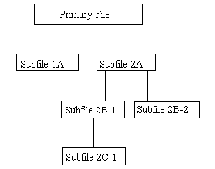
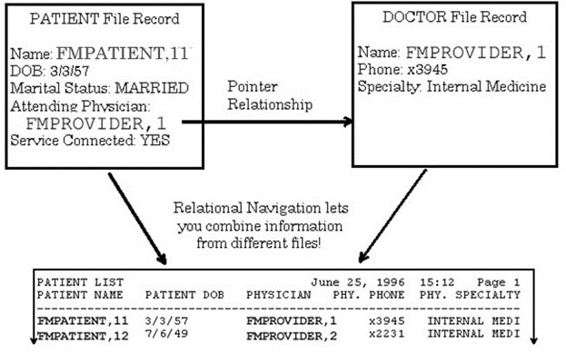
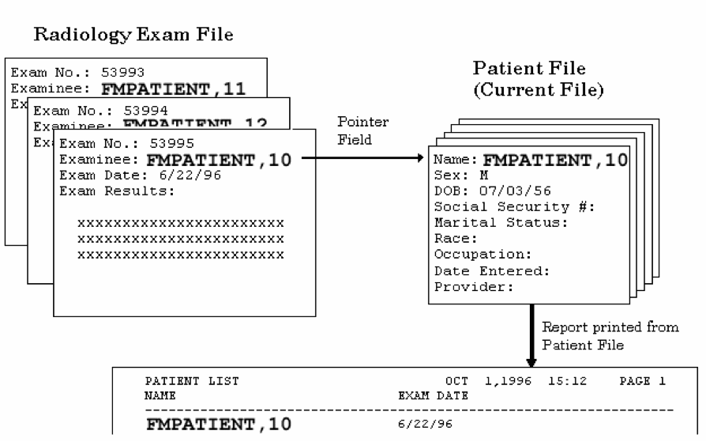

REF:
For the current patch history related to this software, see the Patch
Module (i.e., Patch User Menu [A1AE USER]) on FORUM.
REF:
For the current patch history related to this software, see the Patch
Module (i.e., Patch User Menu [A1AE USER]) on FORUM.VA FileMan 22.2
Advanced User Manual
January 2017
Department of Veterans Affairs (VA)
Office of Information and Technology (OI&T)
Enterprise Program Management Office (EPMO)
Date |
Revision |
Description |
Author |
|---|---|---|---|
01/17/2017 |
1.4 |
Changes for patch DI*22.2*2.
|
REDACTED |
11/29/2016 |
1.3 |
Changes to support release of Patch DI*22.2*4: |
REDACTED |
09/26/2016 |
1.2 |
Tech Edit:
|
REDACTED |
09/15/2016 |
1.1 |
Changes to support release of Patch DI*22.2*3:
|
|
08/03/2016 |
1.0 |
Initial release of VA FileMan 22.2 Advanced User Manual. |
|
REF:
For the current patch history related to this software, see the Patch
Module (i.e., Patch User Menu [A1AE USER]) on FORUM.
Table of Contents
1.1 What Applications Can You Exchange Data With? 1
1.2 How Data is Moved between Applications 1
1.3 Dependency on Correct Data Communication 2
2.1 Simple Extended Pointer 35
2.1.1 Simple Extended Pointer Syntax (Short form) 36
2.1.2 Simple Extended Pointer Syntax (Long Form) 36
2.1.4 How to Navigate With a Variable Pointer Field 37
2.2 Relational Jumps across Files 38
2.3 Backward Extended Pointer 40
2.5 Multiline Return Values 43
2.5.1 WORD-PROCESSING Field 44
3.1.1 Set Field Default (2 //) 47
3.1.2 Stuff/Delete Field Value (3///) 47
3.1.3 Unvalidated Stuffs: (4////) 48
3.1.5 WORD-PROCESSING Field Stuffing 49
3.2.2 Branching within INPUT Templates 52
3.3.1 Edit Qualifiers and Customizing Data Editing 55
3.3.2 Forcing Special Prompts 55
3.3.3 Duplicating Input Values 56
3.3.4 Forcing Required Input 56
3.4 Text Formatting in Word-processing Fields 57
3.4.3 Formatting Text with Word-processing Windows (Frames) | | 57
3.4.4 Text Formatting Expressions in Word-processing Windows 58
4.1.1 Elements of Computed Expressions 60
4.1.2 Operators in Computed Expressions 61
4.1.3 Data Types in Computed Expressions 63
4.1.4 Using Functions as Elements in Computed Expressions 64
4.2.1 Using Computed Expressions in COMPUTED Fields 65
4.2.2 Where to Use Computed Expressions “On-the-Fly” 67
5.1 How to Use VA FileMan Functions 73
5.2 Documentation Conventions for VA FileMan Functions 73
5.3 VA FileMan Function Categories 74
5.3.2 Environmental Functions 83
5.3.3 File and File Data Functions 86
5.3.4 Mathematical Functions 93
5.3.5 Printing Related Functions 96
5.3.7 Temporary Data Storage Functions 100
6.1 How to Generate Statistics from Reports 110
6.2 Descriptive Statistics 110
6.2.2 Generating the Descriptive Statistics 111
6.3.2 Generating the Scattergram 113
7.2.1 Device Handling for Standalone VA FileMan 118
7.2.2 NEW PERSON File for Standalone VA FileMan 123
7.3.1 Manually Setting ^%ZOSF Nodes 126
7.4.1 Setting Up Alternate Editors 127
7.5.1 COMPILED ROUTINE File Cleanup: ENRLS^DIOZ( ) 129
7.6 Compare Data and Data Dictionaries cross Environments 129
7.6.1 Compare Data Dictionaries 129
7.6.2 Compare File Entries 130
8.1 List File Attributes Option 132
8.1.1 Brief Data Dictionary 133
8.1.2 Condensed Data Dictionary 135
8.1.3 Standard and Modified Standard Data Dictionaries 138
8.1.4 Custom-Tailored Data Dictionary 141
8.1.5 Templates Only Format 144
8.1.7 Indexes and Cross-references Only 145
8.2 Map Pointer Relations Option 146
8.3 Check/Fix DD Structure Option 147
8.4 Find Pointers Into a File Option 148
9 Creating Files and Fields 153
9.2.1 Screen Mode Field Editing 154
9.2.5 SET OF CODES Data Type 159
9.2.7 WORD-PROCESSING Data Type 161
9.2.9 POINTER TO A FILE Data Type 163
9.2.10 VARIABLE-POINTER Data Type 164
9.2.13 LABEL REFERENCE Data Type 166
9.2.16 UNIVERSAL TIME Data Type 167
9.2.17 FT POINTER Data Type 167
9.3 Multiple-Valued Field (Multiples) 168
9.4 Making a Field Mandatory 169
9.5 Field Number Sequences 169
9.6.1 Forced Lookups Using Numbers 170
9.7 Changing and Deleting Fields 171
9.7.1 Changing Field Attributes 171
9.7.2 Changing a Field’s DATA TYPE Value 174
9.7.3 Deleting an Existing Field 174
9.8 Examples of File and Field Creation 175
9.8.5 WORD-PROCESSING Field 180
9.8.7 POINTER TO A FILE Field 183
9.8.8 VARIABLE-POINTER Field 184
9.8.10 LABEL REFERENCE Field 185
9.8.13 UNIVERSAL TIME Field 189
9.8.17 Creating a Multiple 192
10.2 Cross-Reference a Field or File 197
10.2.1 Types of Traditional Cross-references 198
10.2.2 Edit a Traditional Cross-reference 199
10.2.3 Create a Traditional Cross-reference 200
10.2.4 Delete a Traditional Cross-reference 200
10.2.5 New-Style Cross-references 201
10.2.6 Edit a New-Style Cross-reference 203
10.2.7 Create a New-Style Cross-reference 205
10.2.8 Delete a New-Style Cross-reference 207
10.4.1 Limits on Reindexing Files 210
10.5 INPUT Transform (Syntax) 211
10.10 Mandatory/Required Field Check 219
11.1 Auditing a Data Field 225
11.1.2 Setting a Data Field Audit 226
11.1.3 Turning Data Field Audit On/Off 227
11.1.4 Reviewing the Data Field Audit Trail 228
11.1.5 Tracking Data Field Audits 230
11.1.6 Purging a Data Field Audit Trail 230
11.2 Auditing a Data Dictionary 232
11.2.1 Setting Automatic Data Dictionary Auditing 232
11.2.2 Reviewing the Data Dictionary Audit Trail 232
11.2.3 Purging a Data Dictionary Audit Trail 234
11.2.4 Auditable Word Processing Fields 236
11.2.5 Word Processing Fields Can be Made Uneditable 236
11.2.6 Reviewing a User’s Data Access 237
12.1 Security at the File Level 238
12.1.1 Access Code Security on Files 238
12.1.2 File Access Security (Formerly Part 3 of Kernel) 239
12.2 Protection for Fields in a File 240
12.3 Protection for Templates 240
13 Transferring File Entries 241
13.1 Transfer File Entries Option 241
13.1.1 Transferring Data within the Same File 242
13.1.2 Transferring Entries between Files 244
13.1.3 Transferring Entries into a New File 245
13.2 Compare/Merge File Entries Option 246
14.2 Important Items to Note 253
14.4 ARCHIVAL ACTIVITY File 256
14.5.1 Select Entries to Extract Option (1 of 9) 258
14.5.2 Add/Delete Selected Entries Option (2 of 9) 260
14.5.3 Print Selected Entries Option (3 of 9) 261
14.5.4 Modify Destination File Option (4 of 9) 262
14.5.5 Create Extract Template Option (5 of 9) 263
14.5.6 Update Destination File Option (6 of 9) 265
14.5.7 Purge Extracted Entries Option (7 of 9) 267
14.5.8 Cancel Extract Selection Option (8 of 9) 268
14.5.9 Validate Extract Template Option (9 of 9) 269
15.1 FILEGRAM-type Templates 270
15.2 Filegram and Archiving Relationship 270
15.4.1 Create/Edit Filegram Template Option 271
15.4.2 Display Filegram Template Option 273
15.4.4 Generate Filegram Option 275
15.4.5 Receiving Filegrams with MailMan 276
15.4.6 View Filegram Option 277
15.4.7 Install/Verify Filegram Option 277
15.4.8 Deleting a Filegram 278
16.1 Considerations before Archiving 279
16.2 Archiving Process, including Archiving Options (1-9) 281
16.2.1 Select Entries to Archive 281
16.2.2 Add/Delete Selected Entries 283
16.2.3 Print Selected Entries 284
16.2.4 Create Filegram Archiving Template 285
16.2.5 Write Entries to Temporary Storage 286
16.2.6 Move Archived Data to Permanent Storage 287
16.2.7 Purge Stored Entries 289
16.2.8 Cancel Archival Selection 290
16.2.9 Find Archived Entries 291
16.2.10 ARCHIVAL ACTIVITY File 292
17.2 ^DDD: Initial Creation 293
17.3 FILELIST^DDD: File List Partial Update 294
17.4 PARTIAL1^DDD: Partial Update using ^DIC(DDD,"%MSC") 294
17.5 PARTIAL2^DDD: Partial Update using ^DD(FILE,FIELD,"DT") 294
Figure 1: Import and Export Tools—Example of a record delimited by a comma 2
Figure 2: Import and Export Tools—Example of a file with records delimited by a comma 2
Figure 3: Import and Export Tools—Example of a record where the delimiter between quotes is ignored 3
Figure 4: Import and Export Tools—Example of a fixed-length record 3
Figure 5: Import and Export Tools—Example of a file with fixed-length records 3
Figure 6: Import and Export Tools—Data export options 4
Figure 7: Import and Export Tools—Creating the Selected Exported Fields template 7
Figure 8: Import and Export Tools—Creating the Export template 9
Figure 9: Import and Export Tools—Identifying the Foreign Format and Export templates 9
Figure 10: Import and Export Tools—Entering DATA TYPE field values in an Export template 10
Figure 11: Import and Export Tools—Searching for entries to be exported 12
Figure 12: Import and Export Tools—Choosing a device to send exported data 12
Figure 13: Import and Export Tools—Example of exported data 14
Figure 14: Import and Export Tools—Example of data flattening when exporting data from Multiples 14
Figure 15: Import and Export Tools—Example of a file structure 15
Figure 16: Import and Export Tools—Import Data option 16
Figure 17: Import and Export Tools—Example of a completed Data Import form 17
Figure 18: Import and Export Tools—Example of fields selected for import 18
Figure 19: Import and Export Tools—Exiting the Template form and performing the import 19
Figure 20: Import and Export Tools—Example of an Import Results report 20
Figure 21: Import and Export Tools—Example of fields selected for import to a Multiple 21
Figure 22: Import and Export Tools—Example of data not flattened when importing data to a Multiple 21
Figure 23: Import and Export Tools—Verifying the maximum record length on a VMS system 22
Figure 24: Import and Export Tools—Using VA FileMan functions when exporting data 27
Figure 25: Import and Export Tools—Print Format Documentation option 28
Figure 26: Import and Export Tools—Listing FOREIGN FORMAT file entries using the Print Format Documentation option 29
Figure 27: Import and Export Tools—Define Foreign File Format option 30
Figure 28: Import and Export Tools—Choosing the Define Foreign Format option 30
Figure 29: Import and Export Tools—Selecting an existing FOREIGN FORMAT file entry 31
Figure 30: Import and Export Tools—Viewing the contents of a FOREIGN FORMAT file entry 31
Figure 31: Import and Export Tools—Creating a new FOREIGN FORMAT file entry 31
Figure 32: Import and Export Tools—ScreenMan form for editing foreign formats 32
Figure 33: Import and Export Tools—Second page of a Multiple’s with a “popup” window opened 33
Figure 34: Relational Navigation—Example Illustrating Relational Navigation 34
Figure 35: Relational Navigation—Example of a simple extended pointer 35
Figure 36: Relational Navigation—Example of a relational query 37
Figure 37: Relational Navigation—Example of the short form extended Pointer syntax 37
Figure 38: Relational Navigation—Entering print specifications and including fields in pointed-to files 38
Figure 39: Relational Navigation—Example of output that includes fields from pointed-to files 38
Figure 40: Relational Navigation—Using relational jumps with the Enter or Edit File Entries option 39
Figure 41: Relational Navigation—Example illustrating a file with pointers to another file 40
Figure 42: Relational Navigation—Example using a backward extended pointer 41
Figure 43: Relational Navigation—Example of the output produced after using a backward extended pointer 41
Figure 44: Relational Navigation—Using a value from one file to do a lookup in a second file 42
Figure 45: Relational Navigation—Example of matching entries in two files using the SORT BY field 43
Figure 46: Relational Navigation—Example of using a WORD-PROCESSING field in an extended pointer expression 44
Figure 47: Relational Navigation—Example of using the simple pointer syntax to get data from a Multiple 44
Figure 48: Relational Navigation—Example using a cross-referenced backward pointer to yield a multiline response: Stored in an Input template 45
Figure 49: Relational Navigation—Example using an Input template with a cross-referenced backward pointer to yield a multiline response 45
Figure 50: Advanced Edit Techniques—Setting a default value for a field 47
Figure 51: Advanced Edit Techniques—”Stuffing” a value into a field in the database 47
Figure 52: Advanced Edit Techniques—Deleting a value from a field in the database 47
Figure 53: Advanced Edit Techniques—Warning message when deleting a value from a field in the database 47
Figure 54: Advanced Edit Techniques—”Stuffing” default value into a field in the database—Bypassing INPUT Transform 48
Figure 55: Advanced Edit Techniques—Example of “Stuffing” a variable default value into a field in the database 48
Figure 56: Advanced Edit Techniques—Appending text on to a WORD-PROCESSING field value 49
Figure 57: Advanced Edit Techniques—Example of “Looping” through entries in a file 50
Figure 58: Advanced Edit Techniques—Example of loading data into a newly created field for select records 50
Figure 59: Advanced Edit Techniques—Example of deleting data from a newly created field for select records 51
Figure 60: Advanced Edit Techniques—Storing a list of edit fields in an INPUT template 51
Figure 61: Advanced Edit Techniques—Creating a special INPUT template 52
Figure 62: Advanced Edit Techniques—Defining INPUT template to branch to different field based on another field’s value (1 of 2) 53
Figure 63: Advanced Edit Techniques—Defining INPUT template to branch to different field based on another field’s value (2 of 2) 53
Figure 64: Advanced Edit Techniques—Example verifying automatic branching to other fields based on user’s entry (1 of 2) 54
Figure 65: Advanced Edit Techniques—Example verifying automatic branching to other fields based on user’s entry (2 of 2) 54
Figure 66: Advanced Edit Techniques—Example using the Title Edit Qualifier 56
Figure 67: Advanced Edit Techniques—Example Using the Duplicate Edit Qualifier 56
Figure 68: Advanced Edit Techniques—Example using the required Edit Qualifier 56
Figure 69: Computed Expressions—Example using the Print File Entries Option to identify a caption 63
Figure 70: Computed Expressions—Defining a DATA TYPE field as COMPUTED 65
Figure 71: Computed Expressions—Entering the computed expression into a DATA TYPE field of COMPUTED 65
Figure 72: Computed Expressions—Example of dialogue encountered with a COMPUTED field with expected numeric result (1 of 3) 65
Figure 73: Computed Expressions—Example of dialogue encountered with a COMPUTED field with expected numeric result (2 of 3) 66
Figure 74: Computed Expressions—Example of dialogue encountered with a COMPUTED field with expected numeric result (3 of 3) 66
Figure 75: Computed Expressions—Dialogue encountered when defining a COMPUTED field 67
Figure 76: Computed Expressions—Entering a computed expression at a “PRINT FIELD” prompt 68
Figure 77: Computed Expressions—Entering a computed expression at a “SORT BY” prompt 69
Figure 78: Computed Expressions—Entering a computed expression at the “Start with” and/or “Go to” prompt 70
Figure 79: Computed Expressions—”Stuffing” a value in a field via a computed expression 70
Figure 80: Computed Expressions—Entering a computed expression in an OUTPUT transform 71
Figure 81: Computed Expressions—Entering a computed expression in an OUTPUT transform attached to a field 71
Figure 82: Computed Expressions—Example of the result of an OUTPUT transform with a computed expression 71
Figure 83: Computed Expressions—A |Window| with a computed expression 71
Figure 84: Computed Expressions—Example of the result of a |Window| with a computed expression 72
Figure 85: Statistics—Initial print dialogue with descriptive statistics 111
Figure 86: Statistics—Generating the descriptive statistics 111
Figure 87: Statistics—Initial print dialogue for a Scattergram 112
Figure 88: Statistics—Generating dialogue and sample output of a Scattergram 113
Figure 89: Statistics—Initial print dialogue for a Count Histogram 115
Figure 90: Statistics—Generating the Count Histogram diagram 116
Figure 91: System Management—Example of creating an ALTERNATE EDITOR file entry 127
Figure 92: System Management—Example where the User is prompted to choose an Alternate Editor 129
Figure 93: System Management—Example where the User selects to Compare Data Dictionaries 129
Figure 94: System Management—Example Namespace Compare File Entries 131
Figure 95: List File Attributes—File Attribute Listing format choices 133
Figure 96: List File Attributes—Choosing to display the Brief Listing 133
Figure 97: List File Attributes—Example of a Brief Data Dictionary Listing 134
Figure 98: List File Attributes—Example of a Condensed Data Dictionary Listing 135
Figure 99: List File Attributes—Example of a Standard Data Dictionary Listing 138
Figure 100: List File Attributes—Choosing the Modified Standard Data Dictionary Listing 140
Figure 101: List File Attributes—Choosing the Custom-Tailored Data Dictionary Listing 141
Figure 102: List File Attributes—Choosing from a list of field attributes 142
Figure 103: List File Attributes—Help on print formatting in the Custom-Tailored Data Dictionary Listing 143
Figure 104: List File Attributes—Selecting the field attributes to print 143
Figure 105: List File Attributes—Example of a Custom-Tailored Data Dictionary Listing 143
Figure 106: List File Attributes—Example of a Global Map Data Dictionary Listing 144
Figure 107: List File Attributes—Example of an Indexes and Cross-References Only Data Dictionary Listing 145
Figure 108: List File Attributes—Example of a Keys Only Data Dictionary Listing 146
Figure 109: List File Attributes—Example of the dialogue encountered when using the Map Pointer Relations option 146
Figure 110: List File Attributes—Example of the output produced with the Map Pointer Relations option 147
Figure 111: List File Attributes—Example of dialogue and output encountered when using Check/Fix DD Structure option 148
Figure 112: Data Dictionary Utilities—Example of dialogue and output encountered when using the Find Pointers Into a File option 149
Figure 113: List File Attributes—Example setting up the Meta Data Dictionary 150
Figure 114: List File Attributes—Example Meta Data Dictionary 151
Figure 115: Creating Files and Fields—Choosing Screen Mode when using the Modify File Attributes option 154
Figure 116: Creating Files and Fields—Example using the Modify File Attributes option in Screen Mode 155
Figure 117: Creating Files and Fields—Defining a DATA TYPE field value as DATE/TIME in Scrolling Mode (1 of 2) 157
Figure 118: Creating Files and Fields—Defining a DATA TYPE field value as DATE/TIME in Scrolling Mode (2 of 2) 157
Figure 119: Creating Files and Fields—Defining a DATA TYPE field value as NUMERIC in Scrolling Mode (1 of 2) 158
Figure 120: Creating Files and Fields—Defining a DATA TYPE field value as NUMERIC in Scrolling Mode (2 of 2) 158
Figure 121: Creating Files and Fields—Defining a DATA TYPE field value as SET OF CODES in Scrolling Mode 159
Figure 122: Creating Files and Fields—Defining a DATA TYPE field value as FREE TEXT in Scrolling Mode (1 of 3) 160
Figure 123: Creating Files and Fields—Defining a DATA TYPE field value as FREE TEXT in Scrolling Mode (2 of 3) 160
Figure 124: Creating Files and Fields—Defining a DATA TYPE field value as FREE TEXT in Scrolling Mode (3 of 3) 160
Figure 125: Creating Files and Fields—Defining a DATA TYPE field value as WORD-PROCESSING in Scrolling Mode 161
Figure 126: Creating Files and Fields—Defining a DATA TYPE field value as COMPUTED in Scrolling Mode (1 of 2) 162
Figure 127: Creating Files and Fields—Defining a DATA TYPE field value as COMPUTED in Scrolling Mode (2 of 2) 162
Figure 128: Creating Files and Fields—Defining a DATA TYPE field value as POINTER TO A FILE in Scrolling Mode (1 of 3) 163
Figure 129: Creating Files and Fields—Defining a DATA TYPE field value as POINTER TO A FILE in Scrolling Mode (2 of 3) 163
Figure 130: Creating Files and Fields—Defining a DATA TYPE field value as POINTER TO A FILE in Scrolling Mode (3 of 3) 163
Figure 131: Creating Files and Fields—Defining a DATA TYPE field value as VARIABLE-POINTER in Scrolling Mode (1 of 5) 164
Figure 132: Creating Files and Fields—Defining a DATA TYPE field value as VARIABLE-POINTER in Scrolling Mode (2 of 5) 164
Figure 133: Creating Files and Fields—Defining a DATA TYPE field value as VARIABLE-POINTER in Scrolling Mode (3 of 5) 165
Figure 134: Creating Files and Fields—Defining a DATA TYPE field value as VARIABLE-POINTER in Scrolling Mode (4 of 5) 165
Figure 135: Creating Files and Fields—Defining a DATA TYPE field value as VARIABLE-POINTER in Scrolling Mode (5 of 5) 165
Figure 136: Creating Files and Fields—Example of help associated with a VARIABLE-POINTER field 165
Figure 137: Creating Files and Fields—Example of “sequencing” a field 169
Figure 138: Creating Files and Fields—Creating a NUMBER (#.001) field 169
Figure 139: Creating Files and Fields—Example of creating a new file entry with a .001 field defined 170
Figure 140: Creating Files and Fields—Looking up an entry in a file using the IEN 170
Figure 141: Creating Files and Fields—Looking up an entry in a file using the FMPATIENT, 5’s IEN 170
Figure 142: Creating Files and Fields—Looking up an entry in a file using the IEN TEST, PHARMACY 170
Figure 143: Editing a Field—LABEL, TITLE, and AUDIT attributes 171
Figure 144: Editing a Field—ACCESS Privileges attributes 172
Figure 145: Editing a Field—SOURCE, DESTINATION, GROUP attributes 172
Figure 146: Editing a Field—DESCRIPTION attributes 172
Figure 147: Editing a Field—DATA TYPE, LENGTH, PATTERN MATCH, MANDATORY ‘HELP’ PROMPT attributes 172
Figure 148: Editing a Field—Adding fields to a GROUP (1 of 2) 173
Figure 149: Editing a Field—Adding fields to a GROUP (2 of 2) 173
Figure 150: Editing a Field—Deleting a field and its definition 174
Figure 151: Modify File Attributes option—Creating a file 176
Figure 152: Modify File Attributes option—Defining the NAME (#.01) field in Screen Mode 176
Figure 153: Modify File Attributes option—Editing a DATE/TIME field in Screen Mode 177
Figure 154: Modify File Attributes option—Defining a DATA TYPE field as DATE/TIME in Screen Mode 177
Figure 155: Modify File Attributes option—Editing a SET OF CODES field in Screen Mode 178
Figure 156: Modify File Attributes option—Defining a DATA TYPE field as SET OF CODES in Screen Mode 178
Figure 157: Modify File Attributes option—Editing a FREE TEXT field in Screen Mode 179
Figure 158: Modify File Attributes option—Defining a Data Type as FREE TEXT in Screen Mode 179
Figure 159: Modify File Attributes option—Carets (“^”) in a FREE TEXT field: Piece position 180
Figure 160: Modify File Attributes option—Editing a WORD-PROCESSING field in Screen Mode 180
Figure 161: Modify File Attributes option—Defining a DATA TYPE field as WORD-PROCESSING in Screen Mode 181
Figure 162: Modify File Attributes option—Editing a COMPUTED field in Screen Mode 182
Figure 163: Modify File Attributes option—Defining a DATA TYPE field as COMPUTED in Screen Mode 182
Figure 164: Modify File Attributes option—Editing a POINTER TO A FILE field in Screen Mode 183
Figure 165: Modify File Attributes option—Defining a DATA TYPE field as POINTER TO A FILE in Screen Mode 183
Figure 166: Modify File Attributes option—Editing a VARIABLE-POINTER field in Screen Mode 184
Figure 167: Modify File Attributes option—Defining a DATA TYPE field as VARIABLE-POINTER in Screen Mode 184
Figure 168: Addition/Editing of a Field of Data Type BOOLEAN 185
Figure 169: Addition/Editing of a Field of Data Type LABEL REFERENCE 186
Figure 170: Addition/editing of a field of data type TIME 187
Figure 171: Addition/Editing of a Field of Data Type YEAR 188
Figure 172: Addition/Editing of a Field of Data Type UNIVERSAL TIME 189
Figure 173: Addition/Editing of a Field of Data Type FT POINTER 190
Figure 174: Addition/Editing of a Field of Data Type FT DATE 191
Figure 175: Addition/editing of a field of data type RATIO 192
Figure 176: Modify File Attributes option—Creating a Multiple in Screen Mode 192
Figure 177: Modify File Attributes option—Defining a DATA TYPE field as a NUMERIC Multiple in Screen Mode 193
Figure 178: Modify File Attributes option—Editing a Multiple’s Subfield in Screen Mode 193
Figure 179: Modify File Attributes option—Reviewing/Editing the Properties of a Multiple Data Type Field in Screen Mode 194
Figure 180: Modify File Attributes option—Example of a .01 Subfield of a Multiple 194
Figure 181: Modify File Attributes option—Defining a Data Type field as a NUMERIC Subfield in Screen Mode 195
Figure 182: File Utilities—Editing a Traditional cross-reference (1 of 2) 199
Figure 183: File Utilities—Editing a Traditional cross-reference (2 of 2) 199
Figure 184: File Utilities—Creating a Traditional cross-reference 200
Figure 185: File Utilities—Deleting a Traditional cross-reference 200
Figure 186: File Utilities—Editing a New-Style cross-reference 203
Figure 187: File Utilities—Editing a New-Style cross-reference in Screen Mode 204
Figure 188: File Utilities—Creating a New-Style cross-reference 205
Figure 189: File Utilities—Creating a New-Style cross-reference in Screen Mode 206
Figure 190: File Utilities—Deleting a New-Style cross-reference 207
Figure 191: File Utilities—Example of setting a field as an identifier 208
Figure 192: File Utilities—Example of an identifier field displayed when doing a lookup 208
Figure 193: File Utilities—Example of a Subfield as an identifier 208
Figure 194: File Utilities—Deleting an identifier field 209
Figure 195: File Utilities—Sample dialogue when re-indexing a file 209
Figure 196: File Utilities—Choosing the Edit File option 211
Figure 197: File Utilities—Using the Edit File option in Screen Mode 212
Figure 198: File Utilities—Example of creating an OUTPUT transform 214
Figure 199: File Utilities—Example of the first screen of a PRINT template 215
Figure 200: File Utilities—Editing a PRINT template’s properties in Screen Mode (first screen) 216
Figure 201: File Utilities—Editing a PRINT template’s properties in Screen Mode (second screen) 216
Figure 202: File Utilities—Example of the of a SORT Template (first screen) 217
Figure 203: File Utilities—Editing a SORT Template’s Properties in Screen Mode (first screen) 218
Figure 204: File Utilities—Editing a SORT Template’s Properties in Screen Mode (second screen) 218
Figure 205: File Utilities—Mandatory/Required Field Check Report 219
Figure 206: File Utilities—Creating a Key 220
Figure 207: File Utilities—Creating a Key in Screen Mode 221
Figure 208: File Utilities—Creating the Uniqueness Index automatically 221
Figure 209: File Utilities—Resolving a conflict with the Key fields and Uniqueness Index 222
Figure 210: File Utilities—Editing a Key 222
Figure 211: File Utilities—Deleting a Key 223
Figure 212: File Utilities—Verifying a Key 224
Figure 213: Auditing—Audit options 225
Figure 214: Auditing—Example of a Data Field Audit 226
Figure 215: Auditing—Turning a Data Audit On 227
Figure 216: Auditing—Turning a Data Audit Off 227
Figure 217: Auditing—CAPTIONED Output with Audit Trail 228
Figure 218: Auditing—AUDIT File: Query 229
Figure 219: Auditing—AUDIT File: Output 229
Figure 220: Auditing—Sample listing showing fields flagged for auditing 230
Figure 221: Auditing—Choosing to purge only selected data audit records 230
Figure 222: Auditing—Listing internal entry numbers for data audit fields for possible purging 231
Figure 223: Auditing—Purging selected audit records from a file 231
Figure 224: Auditing—Purging all audit records from a file 232
Figure 225: Auditing—Choosing to review a Data Dictionary Audit 232
Figure 226: Auditing—Specifying a Data Dictionary Audit 233
Figure 227: Auditing—Reviewing a Data Dictionary Audit 233
Figure 228: Auditing—Reviewing DD Changes for Time Period 234
Figure 229: Auditing—Purging selected Data Dictionary Audit records 235
Figure 230: Auditing—Purging all Data Dictionary Audit records 235
Figure 231: Auditing—Auditable Word Processing Fields 236
Figure 232: Auditing—+Uneditable Data 236
Figure 233: Auditing—Sample User Access Report 237
Figure 234: Transferring File Entries—Transferring data within a file 242
Figure 235: Transferring File Entries—Example displaying two records in a file prior to a transfer 243
Figure 236: Transferring File Entries—Initiating a transfer of file entries 243
Figure 237: Transferring File Entries—Results after a transfer of file entries 243
Figure 238: Transferring File Entries—Transferring entries from one file to another 244
Figure 239: Transferring File Entries—Selecting specific entries for transfer 245
Figure 240: Transferring File Entries—Using the Transfer File Entries option to create a new file 245
Figure 241: Transferring File Entries—Selecting entries to compare in a file (1 of 2) 246
Figure 242: Transferring File Entries—Selecting entries to compare in a file (2 of 2) 246
Figure 243: Transferring File Entries—Comparison output 247
Figure 244: Transferring File Entries—Merging entries in a file 247
Figure 245: Transferring File Entries—Choosing which file entry will serve as the default entry 248
Figure 246: Transferring File Entries—Deleting the “Merged From” file entry 248
Figure 247: Transferring File Entries—Setting up the merge output 248
Figure 248: Transferring File Entries—Merge output (1 of 2) 249
Figure 249: Transferring File Entries—Merge output (2 of 2) 250
Figure 250: Transferring File Entries—Merge options 250
Figure 251: Transferring File Entries—Merge PROCEED option 251
Figure 252: Transferring File Entries—Merge SUMMARIZE option 251
Figure 253: Extract Tool—Options 257
Figure 254: Extract Tool—Search, Sort, and Print options when selecting entries to extract 258
Figure 255: Extract Tool—Select entries to extract output 259
Figure 256: Extract Tool—Example of a notice regarding an outstanding extract activity 259
Figure 257: Extract Tool—Using the ADD/DELETE SELECTED ENTRIES option 260
Figure 258: Extract Tool—Using the PRINT SELECTED ENTRIES option 261
Figure 259: Extract Tool—PRINT SELECTED ENTRIES option output 261
Figure 260: Extract Tool—Using the MODIFY DESTINATION FILE option (1 of 2) 262
Figure 261: Extract Tool—Using the MODIFY DESTINATION FILE option (2 of 2) 262
Figure 262: Extract Tool—Using the CREATE EXTRACT TEMPLATE option 264
Figure 263: Extract Tool—Example of a notice regarding a discrepancy 264
Figure 264: Extract Tool—Example of the warning message when the validation check fails 265
Figure 265: Extract Tool—Using the UPDATE DESTINATION FILE option 265
Figure 266: Extract Tool—Exception Report 266
Figure 267: Extract Tool—Using the PURGE EXTRACTED ENTRIES option (1 of 2) 267
Figure 268: Extract Tool—Using the PURGE EXTRACTED ENTRIES option (2 of 2) 267
Figure 269: Extract Tool—Using the CANCEL EXTRACT SELECTION option 268
Figure 270: Extract Tool—Using the VALIDATE EXTRACT TEMPLATE option 269
Figure 271: Filegrams—Creating a FILEGRAM template (1 of 3) 271
Figure 272: Filegrams—Creating a FILEGRAM template (2 of 3) 271
Figure 273: Filegrams—Creating a FILEGRAM template (3 of 3) 272
Figure 274: Filegrams—FILEGRAM Template output 273
Figure 275: Filegrams—Example of creating a specifier (1 of 2) 274
Figure 276: Filegrams—Example of creating a specifier (2 of 2) 274
Figure 277: Filegrams—Deleting a specifier 274
Figure 278: Filegrams—Example of generating a Filegram 275
Figure 279: Filegrams—Example of a Filegram received and forwarded 276
Figure 280: Filegrams—Example of a simple Filegram (without pointers) 277
Figure 281: Filegrams—Deleting a Filegram 278
Figure 282: Archiving—Options 281
Figure 283: Archiving—Example of selecting entries to archive 282
Figure 284: Archiving—Example of a notice regarding an outstanding archiving activity 283
Figure 285: Archiving—Example of adding an entry to the Archival Activity 283
Figure 286: Archiving—Printing an Archival Activity in a regular format 284
Figure 287: Archiving—Printing an Archival Activity in a Filegram format 284
Figure 288: Archiving—Example of creating a Filegram Archiving template 285
Figure 289: Archiving—Example of writing entries to temporary storage 286
Figure 290: Archiving—Example of moving archived data to permanent storage 288
Figure 291: Archiving—Example of an Archive Activity Report 289
Figure 292: Archiving—Example of a notice from VA FileMan when purging without archiving data 289
Figure 293: Archiving—Example of purging permanently archived data 290
Figure 294: Archiving—VA FileMan notifies you of the number of entries purged 290
Figure 295: Archiving—Canceling an archival activity 290
Figure 296: Archiving—Example of finding archived entries 291
Figure 297: Meta Data Dictionary Example Entry for File 200, Field .01 293
Table 1: Documentation Symbol Descriptions xxvi
Table 2: Import and Export Tools—Foreign format field prompts 8
Table 3: Import and Export Tools—Allowable sort qualifiers when exporting data 11
Table 4: Relational Navigation—Relational jumps that correspond to extended pointer syntax 39
Table 5: Advanced Edit Techniques—Edit Qualifiers 55
Table 6: Advanced Edit Techniques—Text formatting expressions in word-processing windows 58
Table 7: Computed Expressions—Unary Operators 61
Table 8: Computed Expressions—Binary Operators 61
Table 9: Computed Expressions—Boolean Operators 62
Table 10: Computed Expressions—Example Indicating Possible Results of Computed Expression Based on Different Entries to “Totaling” Prompt 66
Table 11: VA FileMan Functions—Documentation Conventions 73
Table 12: VA FileMan Functions—By Category 74
Table 13: VA FileMan Functions—Date/Time Function: BETWEEN 76
Table 14: VA FileMan Functions—Date/Time Function: DATE 76
Table 15: VA FileMan Functions—Date/Time Function: DAYOFWEEK 77
Table 16: VA FileMan Functions—Date/Time Function: MID 77
Table 17: VA FileMan Functions—Date/Time Function: MINUTES 78
Table 18: VA FileMan Functions—Date/Time Function: MONTH 78
Table 19: VA FileMan Functions—Date/Time Function: MONTHNAME 78
Table 20: VA FileMan Functions—Date/Time Function: —NOON 79
Table 21: VA FileMan Functions—Date/Time Function: NOW 79
Table 22: VA FileMan Functions—Date/Time Function: NUMDATE 80
Table 23: VA FileMan Functions—Date/Time Function: NUMDATE4 80
Table 24: VA FileMan Functions—Date/Time Function: NUMDAY 80
Table 25: VA FileMan Functions—Date/Time Function: NUMMONTH 81
Table 26: VA FileMan Functions—Date/Time Function: NUMYEAR 81
Table 27: VA FileMan Functions—Date/Time Function: NUMYEAR4 81
Table 28: VA FileMan Functions—Date/Time Function: RANGEDATE 82
Table 29: VA FileMan Functions—Date/Time Function: TIME 82
Table 30: VA FileMan Functions—Date/Time Function: TODAY 82
Table 31: VA FileMan Functions—Date/Time Function: YEAR 83
Table 32: VA FileMan Functions—Environmental Function: BREAKABLE 83
Table 33: VA FileMan Functions—Environmental Function: CLOSE 84
Table 34: VA FileMan Functions—Environmental Function: SITENUMBER 84
Table 35: VA FileMan Functions—Environmental Function: USER 85
Table 36: VA FileMan Functions—File and File Data Function: COUNT 86
Table 37: VA FileMan Functions—File and File Data Function: DUPLICATED 87
Table 38: VA FileMan Functions—File and File Data Function: FILE 88
Table 39: VA FileMan Functions—File and File Data Function: INTERNAL 88
Table 40: VA FileMan Functions—File and File Data Function: LAST 89
Table 41: VA FileMan Functions—File and File Data Function: MAXIMUM 89
Table 42: VA FileMan Functions—File and File Data Function: MINIMUM 90
Table 43: VA FileMan Functions—File and File Data Function: nTH 91
Table 44: VA FileMan Functions—File and File Data Function: NEXT 91
Table 45: VA FileMan Functions—File and File Data Function: PREVIOUS 92
Table 46: VA FileMan Functions—File and File Data Function: TOTAL 92
Table 47: VA FileMan Functions—Mathematical Function: ABS 93
Table 48: VA FileMan Functions—Mathematical Function: BETWEEN 93
Table 49: VA FileMan Functions—Mathematical Function: MAX 94
Table 50: VA FileMan Functions—Mathematical Function: MIN 94
Table 51: VA FileMan Functions—Mathematical Function: MODULO 95
Table 52: VA FileMan Functions—Mathematical Function: SQUAREROOT 95
Table 53: VA FileMan Functions—Printing Related Function: IOM 96
Table 54: VA FileMan Functions—Printing Related Function: PAGE 96
Table 55: VA FileMan Functions—String Function: DUP 97
Table 56: VA FileMan Functions—String Function: LOWERCASE 97
Table 57: VA FileMan Functions—String Function: PADRIGHT 98
Table 58: VA FileMan Functions—String Function: REPLACE 98
Table 59: VA FileMan Functions—String Function: REVERSE 99
Table 60: VA FileMan Functions—String Function: STRIPBLANKS 99
Table 61: VA FileMan Functions—String Function: TRANSLATE 99
Table 62: VA FileMan Functions—String Function: UPPERCASE 100
Table 63: VA FileMan Functions—Temporary Data Storage Function: PARAM 100
Table 64: VA FileMan Functions—Temporary Data Storage Function: SETPARAM 101
Table 65: VA FileMan Functions—Temporary Data Storage Function: VAR 101
Table 66: VA FileMan Functions—Temporary Data Storage Function: SET 102
Table 67: VA FileMan Functions—M-Related Function: $A[SCII] 102
Table 68: VA FileMan Functions—M-Related Function: $C[HAR] 103
Table 69: VA FileMan Functions—M-Related Function: $E[XTRACT] 103
Table 70: VA FileMan Functions—M-Related Function: $F[IND] 104
Table 71: VA FileMan Functions—M-Related Function: $H[OROLOG] 104
Table 72: VA FileMan Functions—M-Related Function: $I[O] 105
Table 73: VA FileMan Functions—M-Related Function: $J[OB] 105
Table 74: VA FileMan Functions—M-Related Function: $J[USTIFY] 106
Table 75: VA FileMan Functions—M-Related Function: $L[ENGTH] 106
Table 76: VA FileMan Functions—M-Related Function: $P[IECE] 107
Table 77: VA FileMan Functions—M-Related Function: $R[ANDOM] 107
Table 78: VA FileMan Functions—M-Related Function: $S[ELECT] 108
Table 79: VA FileMan Functions—M-Related Function: $S[TORAGE] 108
Table 80: VA FileMan Functions—M-Related Function: $X 109
Table 81: VA FileMan Functions—M-Related Function: $Y 109
Table 82: Statistics—Descriptive Statistics Qualifiers 110
Table 83: Statistics—Histogram Qualifiers 114
Table 84: System Management—%ZIS variables returned 119
Table 85: System Management—%ZISS variables returned 120
Table 86: System Management—Optimal procedures for screen-oriented utilities: Based on terminal type 123
Table 87: System Management—NEW PERSON file (#200) fields that enhance standalone VA FileMan 124
Table 88: System Management—NEW PERSON file (#200) fields to define key variables in VA FileMan 125
Table 89: System Management—Description of the ^%ZOSF nodes 126
Table 90: List File Attributes—Condensed Data Dictionary Codes 136
Table 91: Creating Files and Fields—Data Types 156
Table 92: File Utilities—Traditional Cross-references 198
Table 93: File Utilities—X, X1, and X2 Arrays 202
Table 94: Auditing—”AUDIT” prompt response 226
Table 95: Data Security—File Access Codes 239
Table 96: Data Security—Field Access Codes 240
Table 97: Extract Tool—DATA TYPE field value recommendations 255
VA FileMan is the database management system for the Veterans Health Information Systems and Technology Architecture user (VistA) environment. VA FileMan creates and maintains a database management system that includes features such as:
A report writer
A data dictionary manager
Scrolling and screen-oriented data entry
Text editors
Programming utilities
Tools for sending data to other systems
File archiving
VA FileMan can be used as a standalone database, as a set of interactive or “silent” routines, or as a set of application utilities; in all modes, it is used to define, enter, and retrieve information from a set of computer-stored files, each of which is described by a data dictionary.
VA FileMan is a public domain software package that is developed and maintained by the Department of Veterans Affairs. It is widely used by VA medical centers and in clinical, administrative, and business settings in this country and abroad.
CAUTION: Programmer access in VistA is defined as DUZ(0)=“@”. It grants the privilege to become a developer in VistA. Programmer access allows you to work outside many of the security controls enforced by VA FileMan, enables access to all VA FileMan files, access to modify data dictionaries, etc. It is important to proceed with caution when having access to the system in this way.
The VA FileMan Advanced User Manual describes the “how to” information of the VA FileMan functionality, VistA’s database management system. The features of VA FileMan are used throughout most VistA applications.
This manual shows how to use the features of VA FileMan that are likely to be used by experienced VistA users. It introduces advanced VA FileMan concepts, and shows you how to use VA FileMan’s advanced tools.
The VA FileMan User Manual is comprised of two separate documents:
The VA FileMan Advanced User Manual (this manual) describes features that are more likely to be used by:
Automated Data Processing Application Coordinators (ADPACs)
Information Resource Management (IRM) staff
Other technical users
NOTE:
This document is available in Microsoft Word (.docx), Adobe Acrobat
Portable Document Format (PDF), and Hypertext Markup Language (HTML)
format (see the “HTML
Manuals” section).
The VA FileMan User Manual shows how to use VA FileMan features that are likely to be used by all VistA users.
NOTE:
This document is available in Microsoft Word (.docx), Adobe Acrobat
Portable Document Format (PDF), and Hypertext Markup Language (HTML)
format (see the “HTML
Manuals” section).
In this manual, the following major features of VA FileMan are introduced along with a description on how to use them:
Import and Export Tools.
Relational Navigation.
Advanced Edit Techniques.
Computed Expressions.
VA FileMan Functions.
Statistics.
System Management.
List File Attributes.
Creating Files and Fields.
File Utilities.
Auditing.
Data Security.
Transferring File Entries.
Extract Tool.
Filegrams.
Archiving.
REF:
For VA FileMan installation instructions in the VistA environment see
the VA FileMan Installation Guide and any national patch
description of the patch being released.
Why produce an HTML (Hypertext Markup Language) edition of the VA FileMan User Manual?
The HTML versions of the VA FileMan manuals are useful as online documentation support as you use VA FileMan. HTML manuals allow you to instantly jump (link) to specific topics or references online.
The VA FileMan HTML manuals are “living” documents that are continuously updated with the most current VA FileMan information (unlike paper or printed documentation). They are updated based on new versions, patches, or enhancements to VA FileMan.
Presenting manuals in an HTML format on a Web server also gives new opportunities, such as accessing embedded multimedia training material (e.g., movies) directly in the manuals themselves.
Manuals are accessible over the VA Intranet network.
The intended audience of this manual is all key stakeholders. The stakeholders include the following:
Automated Data Processing Application Coordinators (ADPACs)
Information Resource Management (IRM)—System administrators at Department of Veterans Affairs (VA) sites who are responsible for computer management and system security on the VistA M Servers.
Product Development (PD)—VistA legacy development teams.
Product Support (PS).
This software was developed at the Department of Veterans Affairs (VA) by employees of the Federal Government in the course of their official duties. Pursuant to title 17 Section 105 of the United States Code this software is not subject to copyright protection and is in the public domain. VA assumes no responsibility whatsoever for its use by other parties, and makes no guarantees, expressed or implied, about its quality, reliability, or any other characteristic. We would appreciate acknowledgement if the software is used. This software can be redistributed and/or modified freely provided that any derivative works bear some notice that they are derived from it, and any modified versions bear some notice that they have been modified.
 CAUTION:
To protect the security of VistA systems, distribution of this
software for use on any other computer system by VistA sites is
prohibited. All requests for copies of Kernel for non-VistA
use should be referred to the VistA site’s local Office of
Information Field Office (OIFO).
CAUTION:
To protect the security of VistA systems, distribution of this
software for use on any other computer system by VistA sites is
prohibited. All requests for copies of Kernel for non-VistA
use should be referred to the VistA site’s local Office of
Information Field Office (OIFO).
This manual provides an overall explanation of VA FileMan and the functionality contained in VA FileMan 22.0; however, no attempt is made to explain how the overall VistA programming system is integrated and maintained. Such methods and procedures are documented elsewhere. We suggest you look at the various VA Internet and Intranet Websites for a general orientation to VistA. For example, visit the Office of Information and Technology (OI&T) VistA Development Intranet website.
DISCLAIMER:
The appearance of any external hyperlink references in this manual
does not constitute endorsement by the Department of Veterans
Affairs (VA) of this Website or the information, products, or
services contained therein. The VA does not exercise any
editorial control over the information you find at these locations.
Such links are provided and are consistent with the stated purpose of
this VA Intranet Service.
Documentation Conventions
This manual uses several methods to highlight different aspects of the material:
Various symbols are used throughout the documentation to alert the reader to special information. Table 1 gives a description of each of these symbols:
Table 1: Documentation Symbol Descriptions
Symbol |
Description |
|---|---|
|
NOTE / REF: Used to inform the reader of general information including references to additional reading material. |
|
CAUTION / RECOMMENDATION / DISCLAIMER: Used to caution the reader to take special notice of critical information. |
|
TIP: Used to inform the reader of helpful tips or tricks they can use when working with VA FileMan. |
Descriptive text is presented in a proportional font (as represented by this font).
Conventions for displaying TEST data in this document are as follows:
The first three digits (prefix) of any Social Security Numbers (SSN) begin with either “000” or “666”.
Patient and user names are formatted as follows:
<Application Name/Abbreviation/Namespace>PATIENT,<N>
<Application Name/Abbreviation/Namespace>USER,<N>
Where:
<Application Name/Abbreviation/Namespace> is defined in the Approved Application Abbreviations document.
<N> represents the first name as a number spelled out and incremented with each new entry.
For example, in Kernel (DI or FM) test patient and user names would be documented as follows:
FMPATIENT,ONE; FMPATIENT,TWO; FMPATIENT,THREE; … FMPATIENT,14; etc.
FMUSER,ONE; FMUSER,TWO; FMUSER,THREE; … FMUSER,14; etc.
“Snapshots” of computer online displays (i.e., screen captures/dialogues) and computer source code, if any, are shown in a non-proportional font and enclosed within a box.
User’s responses to online prompts are bold typeface and highlighted in yellow (e.g., <Enter>).
Emphasis within a dialogue box is bold typeface and highlighted in blue (e.g., STANDARD LISTENER: RUNNING).
Some software code reserved/key words are bold typeface with alternate color font.
References to “<Enter>” within these snapshots indicate that the user should press the Enter key on the keyboard. Other special keys are represented within < > angle brackets. For example, pressing the PF1 key can be represented as pressing <PF1>.
Author’s comments are displayed in italics or as “callout” boxes.
NOTE:
Callout boxes refer to labels or descriptions usually enclosed within
a box, which point to specific areas of a displayed image.
All uppercase is reserved for the representation of M code, variable names, or the formal name of options, field/file names, and security keys (e.g., DIEXTRACT).
NOTE:
Other software code (e.g., Delphi/Pascal and Java) variable
names and file/folder names can be written in lower or mixed case
(e.g., CamelCase).
This document uses Microsoft® Word’s built-in navigation for internal hyperlinks. To add Back and Forward navigation buttons to your toolbar, do the following:
Right-click anywhere on the customizable Toolbar in Word (not the Ribbon section).
Select Customize Quick Access Toolbar from the secondary menu.
Select the drop-down arrow in the “Choose commands from:” box.
Select All Commands from the displayed list.
Scroll through the command list in the left column until you see the Back command (green circle with arrow pointing left).
Select/Highlight the Back command and select Add to add it to your customized toolbar.
Scroll through the command list in the left column until you see the Forward command (green circle with arrow pointing right).
Select/Highlight the Forward command and select Add to add it to your customized toolbar.
Select OK.
You can now use these Back and Forward command buttons in your Toolbar to navigate back and forth in your Word document when clicking on hyperlinks within the document.
NOTE:
This is a one-time setup and is automatically available in any other
Word document once you install it on the Toolbar.
How to Obtain Technical Information Online
Exported VistA M Server-based software file, routine, and global documentation can be generated through the use of Kernel, MailMan, and VA FileMan utilities.
NOTE:
Methods of obtaining specific technical information online is
indicated where applicable under the appropriate topic.
REF:
For further information, see the VA FileMan Technical Manual.
VistA M Server-based software provides online help and commonly used system default prompts. Users are encouraged to enter question marks at any response prompt. At the end of the help display, you are immediately returned to the point from which you started. This is an easy way to learn about any aspect of the software.
Obtaining Data Dictionary Listings
Technical information about VistA M Server-based files and the fields in files is stored in data dictionaries (DD). You can use the List File Attributes option [DILIST] on the Data Dictionary Utilities menu [DI DDU] in VA FileMan to print formatted data dictionaries.
REF:
For details about obtaining data dictionaries and about the
formats available, see the “List File Attributes”
section.
This manual is written with the assumption that the reader is familiar with the following:
VistA computing environment:
Kernel—VistA M Server software
VA FileMan data structures and terminology—VistA M Server software
Microsoft® Windows environment
M programming language
Readers who wish to learn more about VA FileMan should consult the following documents:
VA FileMan Release Notes
VA FileMan Installation Guide
VA FileMan Technical Manual
VA FileMan User Manual (PDF and HTML format)
VA FileMan Advanced User Manual (this manual; PDF and HTML format)
VA FileMan Developer’s Guide (PDF and HTML format)
REF:
Zip files of the VA FileMan documentation in HTML format are located
on the VA FileMan Intranet Product website and VDL at:
http://www.va.gov/vdl/application.asp?appid=5.
Using
a Web browser, open the HTML documents “table of contents”
page (i.e., index.shtml). The VA FileMan User Manual, the
VA FileMan Advanced User Manual, and the VA FileMan
Developer’s Guide are all linked together.
VistA documentation is made available online in Microsoft® Word format and in Adobe® Acrobat Portable Document Format (PDF). The PDF documents must be read using the Adobe® Acrobat Reader, which is freely distributed by Adobe® Systems Incorporated at: http://www.adobe.com/
VistA software documentation can be downloaded from the VA Software Document Library (VDL) at: http://www.va.gov/vdl/
REF:
VA FileMan manuals are located on the VDL at:
http://www.va.gov/vdl/application.asp?appid=5
VistA documentation and software can also be downloaded from the Product Support (PS) Anonymous Directories.
If you want to use an application like Microsoft® Excel to manipulate data stored in a VA FileMan file, you need some way to exchange that data between VA FileMan and your application. VA FileMan provides the Import and Export Tools for this purpose.
Suppose, for example, that you want to use Microsoft® Word’s Print Merge utility to print a form letter to a list of recipients that is maintained in a VA FileMan file. You can use VA FileMan’s Export Tool to export the list of recipients from the VA FileMan file to Microsoft® Word. Once you have done this, you can use Word to generate your form letters based on the exported list.
In theory, you can exchange data with any application that supports delimited or fixed-length ASCII data exchange. Many applications do, using a variety of formats. Typically, you can expect the ability to import and export data with the following types of applications:
Databases
Spreadsheets
Statistical and Analysis Programs (SAS, SPSS, etc.)
Vertical Applications
Word Processor (data records, not word-processing text)
NOTE:
You can export data records to a word-processor, which often uses
data records for functions such as print merges. You cannot
use the Import or Export Tools to exchange word-processing fields
from VA FileMan files, however.
Movement of data between applications that do not “speak the same language” is a complex process, because it involves coordinating activities in different computer applications and often in multiple computing environments.
VA FileMan’s Import and Export Tools use ASCII data exchange. It is the oldest and most widely supported way of exchanging data between applications. Data for a particular record or group of records can be transported in one of two standard formats:
To export data from a VA FileMan file, use the Export Tool to create an ASCII data file containing exported records. The exported data is formatted in such a way that it can be recognized by the particular foreign application. The ASCII data file can then be imported into the foreign application.
To import data to a VA FileMan file, use your foreign application to generate an ASCII data file containing records in either delimited or fixed-length formats. Then use the Import Tool to load those records into the VA FileMan file you specify.
For import or export of data to succeed, the data must be passed correctly on all communication pathways between VA FileMan and the foreign application. A glitch in the communication of data can cause data exchange to fail.
For example, suppose the foreign application expects the fields in records you are exporting to be separated (or “delimited”) by the Tab character (<TAB>). The Export Tool can output a <TAB> between each field’s data value. However, if you use a communication program’s screen capture facility to create a file of the exported data and if that communication program automatically changes <TAB>s into a certain number of spaces to align text, the exported data is corrupted and the import fails.
You should be familiar with your importing or exporting application and with any communications programs that you are using. Knowledge of all the applications involved, starting with VA FileMan and its Import and Export Tools, increases the likelihood of a successful transfer of data.
Suppose you have a record with the following data:
LASTNAME = “FMPATIENT”
FIRSTNAME = “ONE”
AGE = “36”
In delimited data format, you choose a delimiter character to place between field values. For this example, use a comma as the delimiter character.
A comma (“,”) is then inserted between each of a record’s fields, to “delimit” them. The resulting record, exported in comma-delimited format, would look like Figure 1:
Figure 1: Import and Export Tools—Example of a record delimited by a comma
FMPATIENT,ONE,36
Groups of records are exported line-by-line, one line after another. A file of records in comma-delimited format might look like Figure 2:
Figure 2: Import and Export Tools—Example of a file with records delimited by a comma
FMPATIENT,TWO,1 GREEN LANE,,,Amherst,NH,99999
FMPATIENT,THREE,0 Plaza Court,,,San Francisco,CA,99999
FMPATIENT,FOUR,0 123rd St.,,,San Francisco,CA,99999
In order to use delimited data format, both applications (the exporting application and the importing application) must be able to recognize the format.
Now, suppose in the previous example that instead of two separate fields for LASTNAME and FIRSTNAME, there is only a single NAME field for both. Suppose that incoming data you want to place in the single NAME field comes in the form FMPATIENT,FOUR, but you still want to use commas as your delimiter. You can use the “Fields Quoted” setting in the Import form (or the Quote Non-Numeric Fields setting in a Foreign Format) to ignore the delimiter if it is between quotes in the incoming data.
Thus, if you set “Fields Quoted” to YES in your import form, and you pass in a record that looks like Figure 3:
Figure 3: Import and Export Tools—Example of a record where the delimiter between quotes is ignored
“FMPATIENT,FOUR”,0 123rd St.,,,San Francisco,CA,99999
For quoted fields, like “FMPATIENT,FOUR”, the Import Tool ignores the comma delimiter between the quotes and treats “FMPATIENT,FOUR” as a single field value.
In fixed-length data format, a standard width is expected for each field in the record. Suppose, for example, you have a record with LASTNAME = “FMPATIENT”, FIRSTNAME = “ONE”, AGE = “36”. 25 characters might be set aside for LASTNAME, 20 characters for FIRSTNAME, and 3 characters for AGE. The resulting record, exported in fixed-length format, would look like Figure 4:
Figure 4: Import and Export Tools—Example of a fixed-length record
FMPATIENT ONE 36
Groups of records are exported line-by-line, one line after another. A file of records in fixed-length format might look like Figure 5:
Figure 5: Import and Export Tools—Example of a file with fixed-length records
FMPATIENT TWO 29
FMPATIENT THREE 47
FMPATIENT FOUR 38
In order to use fixed-length data format, both applications (the exporting application and the importing application) must be able to recognize the format.
The menu in Figure 6 shows the options used to export data:
Figure 6: Import and Export Tools—Data export options
VA FileMan ... [DIUSER]
Other Options ... [DIOTHER]
Data Export to Foreign Format ... [DDXP EXPORT MENU]
Define Foreign File Format [DDXP DEFINE FORMAT]
**> Locked with DDXP-DEFINE
Select Fields for Export [DDXP SELECT EXPORT FIELDS]
Create Export Template [DDXP CREATE EXPORT TEMPLATE]
Export Data [DDXP EXPORT DATA]
Print Format Documentation [DDXP FORMAT DOCUMENTATION]
NOTE:
The Export Data option [DDXP EXPORT DATA] is used to stream data to
external devices or files. It is not designed to print clearly
to the screen.
If you know how to print file entries, you already know most of the procedures to export file entries. The Export Tool is based on the standard VA FileMan Print File Entries option.
REF:
For more information on the Print File Entries option, see the
“Print: How to Print Reports from Files” section in the VA
FileMan User Manual.
The Export Tool creates a specially formatted print output. Some limitations apply to data exports that do not apply to setting up a regular print (e.g., WORD-PROCESSING-type fields cannot be exported). Some capabilities are available when exporting that are not when you are printing (e.g., the records you export can be longer than 245 characters, if you are using a delimited format; see the description of the Maximum Output Length FOREIGN FORMAT attribute below). These differences are discussed below.
The steps to export data are:
Make Sure a FOREIGN FORMAT File Entry is Available—Make sure there is a FOREIGN FORMAT file (#.44) entry available to export your data in the format expected by the receiving application.
Select Fields for Export Option—Select the fields you want to export (Select Fields for Export option). This creates a SELECTED EXPORT FIELDS template.
Create Export Template Option—Create an EXPORT Template. This is where you combine the SELECTED EXPORT FIELDS template with a desired FOREIGN FORMAT.
Choose Entries/Export Data—Export Data option. This is where you select which entries to export, and perform the export.
First, you need to determine an ASCII data format (some form of delimited or fixed-length) that your foreign application recognizes. This is the format you need the Export Tool to generate.
This data format must be set up in advance, as an entry in the FOREIGN FORMAT file (#.44). The following are the major format parameters stored in a FOREIGN FORMAT file (#.44) entry:
What delimiters are used between fields?
Does the export use fixed length fields?
What headers to output before the body of the data, and what footers after the data
Any special formatting for specific DATA TYPE field values (e.g., dates and numbers)?
Some formats are already set up in advance in the FOREIGN FORMAT file (#.44), targeted towards specific foreign applications. These include:
Word Data File (Comma)
Excel (Comma)
Excel (Tab)
1-2-3 Import Numbers
1-2-3 Data Parse
Oracle (Delimited)
Keep in mind that applications are often updated. A format that worked for one version may not work for a different version, or a more efficient, simpler format might be possible for a different version.
REF:
The full details of the export parameters that can be set up for
exporting are described in the “FOREIGN FORMAT File Attributes Reference”
section.
In many cases, you can use an existing FOREIGN FORMAT file (#.44) entry for your export. If you need to create a new FOREIGN FORMAT file (#.44) entry (rather than using an existing entry), set up the new entry with the Define Foreign File Format option.
With the Define Foreign File Format Option, you determined the data format for your export, and made sure there was a corresponding FOREIGN FORMAT file (#.44) entry. The next step is to choose what file and field data to export. Do this using the Select Fields for Export Option; this creates a SELECTED EXPORT FIELDS template.
The process of creating a SELECTED EXPORT FIELDS template is very similar to the way you choose fields for printing with the Print File Entries option.
REF:
For details on selecting fields, see the “Choosing Print Fields”
section in the “Print: How to Print Reports from Files” section
in the VA FileMan User Manual.
First, you must identify the file from which you are exporting data. This is the primary file. Then you choose from which fields to export data.
In addition to fields from that file and its Multiples, you can export data from other files by using the extended pointer syntax.
REF:
For more information on pointer syntax, see the “Relational Navigation”
section.
Also, you can put other computed expressions at the “EXPORT FIELD:” prompt to make use of VA FileMan functions or M code.
There are several kinds of specifications that are valid at the “PRINT FIELD:” prompt that are not allowed at the “EXPORT FIELD:” prompt. They are:
WORD-PROCESSING-type fields.
“ALL” signifying all the fields in a file.
Print qualifiers following the field designation (e.g., “;X” or “;C22”).
Statistical print qualifiers preceding the field (e.g., “#” or “&”).
Backward extended pointers.
Relational jumps to other files (i.e., use of a terminating colon); instead, use the full extended pointer syntax to obtain data from other files.
Specifications that return more than one value (e.g., a Multiple in a pointed-to file); you can specify Multiples in the primary file.
After you enter a set of field specifications, you are immediately prompted for a template in which to store the selected fields. You must store your field specifications in a template to proceed with the next step in the data export. After you specify a template name for the SELECTED EXPORT FIELDS template, you have completed this step.
Figure 7 is an example of the “EXPORT FIELD:” dialogue. The example uses the sample PATIENT file (#2). Several unacceptable responses are shown; the error messages are the ones you would receive to these responses:
Figure 7: Import and Export Tools—Creating the Selected Exported Fields template
Select VA FileMan OPTION: OTHER OPTIONS
Select OTHER OPTION: DATA EXPORT TO FOREIGN FORMAT
Select DATA EXPORT TO FOREIGN FORMAT OPTION: SELECT FIELDS FOR EXPORT
OUTPUT FROM WHAT FILE: PATIENT
FIRST EXPORT FIELD: NAME;S
SORRY. You cannot add ;S to the export field specifications.
FIRST EXPORT FIELD: NAME
THEN EXPORT FIELD: INTERNAL(SEX)
THEN EXPORT FIELD: RELIGION:
SORRY. You cannot jump to another file when selecting fields
for export.
THEN EXPORT FIELD: $E(RELIGION:CLASSIFICATION,1,5)
THEN EXPORT FIELD: DIAGNOSIS <Enter> (multiple)
THEN EXPORT DIAGNOSIS SUB-FIELD: DIAGNOSIS
THEN EXPORT DIAGNOSIS SUB-FIELD: HISTORY <Enter> (word-processing)
SORRY. You cannot choose a word processing field for export.
THEN EXPORT DIAGNOSIS SUB-FIELD: AGE AT ONSET
THEN EXPORT DIAGNOSIS SUB-FIELD: <Enter>
THEN EXPORT FIELD: <Enter>
STORE EXPORT LOGIC IN TEMPLATE: PATIENT TEST
Are you adding ‘PATIENT TEST’ as a new PRINT TEMPLATE? No// Y <Enter> (Yes)
Select DATA EXPORT TO FOREIGN FORMAT OPTION:
SELECTED EXPORT FIELDS templates are sometimes referred to as PRINT templates in the user dialogue. This is because they are stored in the PRINT TEMPLATE file (#.4).
NOTE:
Even though you cannot “jump” to the RELIGION file (#13)
using the RELIGION field, which is a pointer to the RELIGION file
(#13), you can retrieve data from that file by using extended pointer
syntax.
REF: For more information on pointer
syntax, see the “Relational Navigation”
section.
You can edit a SELECTED EXPORT FIELDS template. The editing must occur in the Export Data option, not in the standard Print File Entries option. To edit one, enter the template name at the “FIRST EXPORT FIELD:” prompt preceded by a left bracket (“[“).
If an EXPORT template (see Section 1.3.2.3) has been created based on the SELECTED EXPORT FIELDS template that you edit, the SELECTED EXPORT FIELDS template are not updated to reflect the changes. You must create a new SELECTED EXPORT FIELDS template to make use of the changes.
The next step to export data is to create an EXPORT template with the Create Export Template option. The EXPORT template combines the SELECTED EXPORT FIELDS template (created in Step 2 above) with a FOREIGN FORMAT file (#.44) (see Step 1 above).
Besides choosing a SELECTED EXPORT FIELDS template and a FOREIGN FORMAT, you are asked for any additional information that is needed to fully define the export. If you do not supply the requested information, the EXPORT template cannot be created. Values in the FOREIGN FORMAT entry you choose determine whether or not you are prompted for more information.
Table 2 indicates which values for which FOREIGN FORMAT fields result in prompts:
Table 2: Import and Export Tools—Foreign format field prompts
Foreign Format Field |
Value |
Information Required |
|---|---|---|
FIELD DELIMITER |
“ASK” |
The character or characters to separate fields. |
RECORD DELIMITER |
“ASK” |
The character or characters to separate records. |
RECORD LENGTH FIXED? |
“1” or “YES” |
The number of characters in each field to be exported. |
NEED FOREIGN FIELD NAMES? |
“1” or “YES” |
The name of each field recognized by the importing application. |
MAXIMUM OUTPUT LENGTH |
“Ø” |
The maximum number of characters on each line of output, usually the longest possible exported record. |
PROMPT FOR DATA TYPE? |
“1” or “YES” |
The DATA TYPE field value of each exported field; possible choices are:
|
In the example below, the file and field specifications in the SELECTED EXPORT FIELDS template example (Figure 7) are combined with the 123 Import Numbers FOREIGN FORMAT:
Figure 8: Import and Export Tools—Creating the Export template
Select DATA EXPORT TO FOREIGN FORMAT OPTION: CREATE EXPORT TEMPLATE
OUTPUT FROM WHAT FILE: PATIENT <Enter> (10 entries)
Enter SELECTED EXPORT FIELDS Template: PATIENT TEST
**SELECTED EXPORT FIELDS** (OCT 30, 1992@11:32) USER #7 FILE #99002
Do you want to see the fields stored in the PATIENT TEST template?
Enter Yes or No: NO// YES
FIRST PRINT FIELD: NAME// <Enter>
THEN PRINT FIELD: INTERNAL(SEX)// <Enter>
THEN PRINT FIELD: $E(RELIGION:CLASSIFICATION,1,5)// <Enter>
THEN PRINT FIELD: DIAGNOSIS// <Enter>
THEN PRINT DIAGNOSIS SUB-FIELD: DIAGNOSIS// <Enter>
THEN PRINT DIAGNOSIS SUB-FIELD: AGE AT ONSET// <Enter>
THEN PRINT DIAGNOSIS SUB-FIELD: // <Enter>
THEN PRINT FIELD: // <Enter>
Do you want to use this template?
Enter Yes or No: YES// <Enter>
Do you want to delete the PATIENT TEST template
after the export template is created?
Enter Yes or No: NO// <Enter>
When asked if you want the SELECTED EXPORT FIELDS template deleted, answer YES only if you know you do not need the template again. If an EXPORT template is not successfully created, the SELECTED EXPORT FIELDS template is not deleted.
Next, identify the FOREIGN FORMAT to use, and name the EXPORT template that you are creating. You cannot overwrite an existing PRINT template:
Figure 9: Import and Export Tools—Identifying the Foreign Format and Export templates
Select FOREIGN FORMAT: 123 IMPORT NUMBERS <Enter> **DISTRIBUTED BY VA FILEMAN**
Enter name for EXPORT Template: PATIENT TO 123
Are you adding ‘PATIENT TO 123’ as
a new PRINT TEMPLATE (the 197TH)? No// Y <Enter> (Yes)
After you choose the EXPORT template name, you are prompted for any additional information needed. In this example, the format does require additional information: the DATA TYPE field value for each field (in this situation the defaults derived by the Export Tool are correct) and the maximum length of each record:
Figure 10: Import and Export Tools—Entering DATA TYPE field values in an Export template
Enter the data types of the fields being exported below.
Do you want to continue?
Enter Yes or No: YES// <Enter>
NAME: FREE TEXT// <Enter> FREE TEXT
INTERNAL(SEX): FREE TEXT// <Enter> FREE TEXT
$E(RELIGION:CLASSIFICATION,1,5): FREE TEXT// <Enter> FREE TEXT
DIAGNOSIS in DIAGNOSIS subfile: FREE TEXT// <Enter> FREE TEXT
AGE AT ONSET in DIAGNOSIS subfile: NUMERIC// <Enter> NUMERIC
Enter the maximum length of a physical record that can be exported.
Enter ‘^’ to stop the creation of an EXPORT template.
MAXIMUM OUTPUT LENGTH: 100
Export Template created.
The Export Tool checks to make sure that your SELECTED EXPORT FIELDS template does not contain fields from Subfiles (Multiples) that are not descendent from each other.
REF:
For more information on Subfiles (Multiples), see the “Exporting Data from Multiples”
section.
If you have not followed that restriction, you receive an error message. The SELECTED EXPORT FIELDS template would have to be modified.
In the final step to export data, use the Export Data option to select which entries from the file to export, and then perform the export.
First, choose which entries to export with a “SEARCH” dialogue; then choose the order of the exported entries with a “SORT BY” dialogue (you are not given the “SORT BY” dialogue, if you are exporting fields from Subfiles.) Finally, specify the device to send the exported data.
During either the Search or Sort process, you can use previously created SEARCH and SORT templates. Those templates need not have been originally made during a data export; however, SORT templates that contain unacceptable qualifiers should not be used. At the “SORT BY:” prompt, you can only use the subset of sort qualifiers shown in Table 3:
Table 3: Import and Export Tools—Allowable sort qualifiers when exporting data
Sort Qualifier |
Description |
|---|---|
‘ |
To not sort. Used when you want to use the “FROM … TO” dialogue to restrict the entries to be exported. |
- |
To sort in reverse order. |
;Ln |
To sort on the first n-characters only. |
;TXT |
To sort following strict ASCII sorting sequence. |
REF:
For more detailed information about searching and sorting, see the
“Print: How to Print Reports from Files” and “Search”
sections in the VA FileMan User Manual.
Figure 11 is an example of an export using the “PATIENT TO 123” EXPORT template created in the previous section (Figure 9 and Figure 10). You begin by identifying the file and the EXPORT template that you want to use for the export. Do not enclose the template’s name with brackets. Again, you can delete the EXPORT template after a successful export.
Because there is a Multiple involved, you are told that you do not have the opportunity to sort. Then, you are given the opportunity to search the file for entries to export.
Figure 11: Import and Export Tools—Searching for entries to be exported
Select DATA EXPORT TO FOREIGN FORMAT OPTION: EXPORT DATA
OUTPUT FROM WHAT FILE: PATIENT// <Enter>
Choose an EXPORT template: PATIENT TO 123 <Enter> **EXPORT**
(OCT 30, 1992@15:08) USER #7 FILE #99002
Do you want to delete the PATIENT TO 123 template
after the data export is complete?
Enter Yes or No: NO// <Enter>
Since you are exporting fields from multiples,
a sort will be done automatically.
You will not have the opportunity to sort the data before export.
Do you want to SEARCH for entries to be exported? NO// YES
-A- SEARCH FOR PATIENT FIELD: DATE OF BIRTH
-A- CONDITION: < <Enter> LESS THAN
-A- LESS THAN DATE: 1980 <Enter> (1980)
-B- SEARCH FOR PATIENT FIELD: <Enter>
IF: A// <Enter> DATE OF BIRTH LESS THAN 1980 (1980)
STORE RESULTS OF SEARCH IN TEMPLATE: <Enter>
If Multiples had not been involved, you would now be able to respond to the SORT BY dialogue. You can do the same things with sort here that you can do when using the Print File Entries option.
After you complete the sort dialogue, you are immediately given the “DEVICE:” prompt. Choose what device the exported data should be sent to:
Figure 12: Import and Export Tools—Choosing a device to send exported data
DEVICE: <Enter>
If you press the Enter key at the “DEVICE:” prompt, the export output is displayed on your screen. Sending the formatted export data to the screen allows you to use a PC-based screen capture to put the data into a file. This file would be a readable ASCII file on that computer. This method of transferring the data into a file is a simple one that is often successful and convenient, especially if the importing application is on the same PC.
When using a screen capture to create a file from the exported data, you must consider the peculiarities of your communication and terminal emulation software. Your communication application, for example, can intercept certain control characters (like the <TAB>, ASCII 9) and convert them into something else. This can cause the import to fail. Also, your terminal emulation can automatically “break” lines at 80 characters by inserting an unwanted carriage return or line feed. When emulating VT-100 and other ANSI terminals, you can avoid this last problem by turning wraparound mode off.
CAUTION:
When exporting data to your terminal’s screen, there are no page
breaks. Therefore, there is no graceful way to interrupt the export
once it has begun.
Having data printed on-screen is of little use, if you are using a terminal with no screen-capture capabilities. An alternative is to send the data to a file on the host system, for example, to a VMS file if you are using DSM. Another advantage to sending data to a Host file is that only the exported data is in the file. (Often, screen captures unavoidably contain extraneous parts of the user’s dialogue prior to or after the export.) To export your data to a file, at the “DEVICE:” prompt, send your export output to an HFS-type device.
Your IRM should be able to help you, if you are not sure how to use HFS devices.
REF:
The Kernel Systems Management Guide also describes how to send
output to Host files, including how to set up and use HFS-type
devices.
When a Host file is created, you must move that ASCII file to the computer on which the importing application resides. A file transfer protocol (e.g., KERMIT or XMODEM) can be used to move this file.
The export can be queued, if it is not sent to the screen. Queuing the export is recommended for large files and for complex sorts of the data.
NOTE:
On HFS Device Setup on OpenVMS Systems: DSM for OpenVMS
requires that you add a command parameter to the OPEN command,
if you export records longer than 512 characters to a Host file. The
parameter is RECORDSIZE=nnnn, where “nnnn” is
greater than the longest record that you are exporting. If you are
using Kernel’s DEVICE file (#3.5), the OPEN PARAMETER field for the
HFS device you are using should be edited to look like
“(NEW:RECORDSIZE=nnnn)”.
The data below has been prepared for import by Lotus 1-2-3, so it need not be easily read by people. However, you can see that text fields are surrounded by quotes; empty text fields consist just of two quotes (“”). A space is in between each field’s value. Numeric values have no quotes. If a field defined as numeric in the VA FileMan data dictionary has no value, a zero (0) is output, because this format has SUBSTITUTE FOR NULL set to “0”.
Figure 13: Import and Export Tools—Example of exported data
“FMPATIENT,FIVE” “m” “PROTE” “GANGRENE” 45
“FMPATIENT,SIX” “f” “CATHO” “SLEEPING SICKNESS” 28
“FMPATIENT,SEVEN” “m” “PROTE” “CIRRHOSIS” 25
“FMPATIENT,EIGHT” “f” “OTHER” “FLU” 34
“FMPATIENT,NINE” “m” ““ “BLOOD POISONING” 44
“FMPATIENT,FIVE” “m” “PROTE” “GUN SHOT “ 50
“FMPATIENT,EIGHT” “f” “OTHER” “FLU” 37
“FMPATIENT,NINE” “m” ““ “FLU” 0
“FMPATIENT,EIGHT” “f” “OTHER” “FLU” 46
“FMPATIENT,EIGHT” “f” “OTHER” “APPENDICITIS” 39
If a number comes from a field in your primary file that is defined as NUMERIC or COMPUTED, that number is exported with all leading spaces or trailing insignificant zeroes removed. This is different from the way that the regular VA FileMan Print File Entries works. If the field had a value of zero, the character zero (0) is exported. If the value of a numeric field in the primary file is null, the exported value depends on the contents of the SUBSTITUTE FOR NULL field for the format being used.
If a number comes from a source other than a DATA TYPE field of NUMERIC or COMPUTED in the primary file, it can be output with leading spaces or trailing insignificant zeroes. Such a number might originate from a field in a pointed-to file reached by the relational syntax, a VA FileMan function, or other computed expression. In these cases, the value of the SUBSTITUTE FOR NULL field usually has no effect on what is exported.
NOTE:
Whether exported numbers have leading spaces or trailing
insignificant zeroes and whether nulls produce special output is
controlled by how the field is defined in the VA FileMan data
dictionary. The DATA TYPE field input by the user when the PROMPT FOR
DATA TYPE? field contains YES does not affect these
characteristics of the export.
Data exported from Multiples is “flattened” (i.e., data at upper levels is repeated for each subentry). For example, take the comma-delimited export for a top-level file’s #.01 NAME field and a Subfile’s #.01 DATE and #1 TYPE fields. The output for an entry with four subentries would look like Figure 14:
Figure 14: Import and Export Tools—Example of data flattening when exporting data from Multiples
FMPATIENT,01-JAN-95,SC
FMPATIENT,24-JUN-95,NSC
FMPATIENT,14-AUG-95,SC
FMPATIENT,21-JUL-96,NSC
NOTE:
The top-level .01 field is repeated for each Subfile entry.
You cannot export more than one Multiple at any one file level. You can export data from one Multiple and from Subfiles directly descendent from that Multiple (as long as you never export more than one Subfile at the same level). Suppose you are exporting data from a file with the structure shown in Figure 15:
Figure 15: Import and Export Tools—Example of a file structure

In addition to fields in the Primary file, you can export from Subfile 1A or Subfile 2A, but not from both. Also, you can export from Subfile 2A, Subfile 2B-1, and Subfile 2C-1, but you could not additionally choose fields in Subfile 2B-2. If you need data from Subfiles that are not directly descendent from each other, you can do multiple exports and “join” the data together in the importing application.
A special, automated sort is done to the data when Multiples are exported; you cannot perform your own sort. When Subfiles are involved, the Export Tool performs a special sort in order to format the data. Since the Export Tool must do this customized sort, you cannot sort the data yourself. If you need the data in a particular sequence, sort it in the importing application. You can perform any search on the data that is necessary to choose entries for export.
The Export Tool uses two types of templates:
EXPORT FIELDS template (created in Step 2)
EXPORT template (created in Step 3).
These templates are variations on standard PRINT templates. They are stored in the PRINT TEMPLATE file (#.4) and are sometimes referred to as PRINT templates in the user dialogue. Although similar to PRINT templates, they do differ in important respects. For example, you cannot compile either of the Export Tool’s templates.
You can delete these templates as soon as they are used if you wish. Also, both kinds of templates can be deleted using the Template Edit option on the Utility Functions menu [DIUTILITY]. In addition, you can delete an EXPORT FIELDS template by choosing the template within the Select Fields for Export option, editing it, and putting an at-sign (“@”) at the “NAME:” prompt. Do not delete an EXPORT template before a queued export has been completed.
The menu in Figure 16 shows the option used to import data:
Figure 16: Import and Export Tools—Import Data option
VA FileMan ... [DIUSER]
Other Options ... [DIOTHER]
Import Data [DDMP IMPORT]
The Import Tool lets you import records stored in an ASCII data file into a VA FileMan file.
The Import Tool imports records from an ASCII data file by adding them as new records to the VA FileMan file in question. Existing records in the destination VA FileMan file are never edited or updated, and the Import Tool does not prevent duplicate records from being added.
Importing data records from an ASCII file is a four-step process, as described below.
Generate your source file (from your non-VA FileMan application), containing the records to be imported. Generate the file with one record per line, with the fields in each record being set off using either the delimited or fixed-length method. The last record in the file must be terminated with the appropriate EOL (End-of-Line) characters for your operating system.
Once you generate your ASCII source file, you need to move it to a disk that is accessible from the computer system running VA FileMan. IRM should be able to assist you with this.
Invoke VA FileMan’s Import Data option. It loads a two-page ScreenMan form. On page one of the form, you need to specify the: data format, source file, and destination file for your import.
DATA FORMAT—INTERNAL or EXTERNAL: Specify if the incoming data is in external form (the way VA FileMan would display it) or internal form (the way VA FileMan would store it). Unless you are knowledgeable about how VA FileMan stores data, you should choose EXTERNAL. Also, the incoming data is only validated by VA FileMan if you choose EXTERNAL (validation prevents you from putting invalid data into the file).
FOREIGN FORMAT: Choose a Foreign Format entry whose settings match the ASCII format for the incoming records. The only settings used from the Foreign Format entry are
Record Delimiter
Record Length Fixed?
Quote Non-numeric Fields?
Make sure the settings in the Foreign Format match the format of your incoming data. Because some foreign applications export data in a different format than they import it, a Foreign Format that works for export may not have the appropriate settings for import.
As an alternative to specifying a Foreign Format entry, you can manually specify the settings for your incoming data in the three provided fields:
1. Is the data fixed length?
2. If not, what is the field delimiter?
3. Are fields quoted?
SOURCE FILE: Enter the path and name of your source file (the file containing the records to import).
VA FILEMAN FILE: Specify the destination file for the imported records.
FIELD SELECTION PAGE/IMPORT TEMPLATE: This is where you match the fields in the incoming records to the fields in the destination file. If you do not have an existing IMPORT template that matches incoming to destination fields, go to the Field Selection page and specify those fields individually (see the “Match Source to Destination Fields” section).
A completed page one of the form might look like Figure 17:
Figure 17: Import and Export Tools—Example of a completed Data Import form
DATA IMPORT Page 1
===========
DATA FORMAT SOURCE FILE
——————————- ——————————-
Internal or external: EXTERNAL Full path: USER$:[FMPATIENT]
Host file name: IMPORT.DAT
Foreign format: EXCEL (COMMA)
OR
Data fixed length? VA FILEMAN FILE
Field delimiter: ——————————————-
Fields quoted? Primary file: NEW PERSON
Field selection page...
OR
Import Template:
___________________________________________________________________________________
COMMAND: Press <PF1>H for help Insert
For your import, you need to match each field in the incoming record to a field in the destination VA FileMan file.
Fields in the incoming record are imported in order, from left to right. Thus, for each field in the incoming record, you specify the corresponding destination field in the VA FileMan file, in the same order. The first VA FileMan field you specify is the destination for the first field in the incoming record, the second matches the second field in the incoming record, and so forth.
Figure 18: Import and Export Tools—Example of fields selected for import
FIELD SELECTION FOR IMPORT Page 2
==========================
Choose a field from
NEW PERSON
Field:
Delete last field selected?
These are the fields selected so far:
1 – NAME
2 – STREET ADDRESS 1
3 – STREET ADDRESS 2
4 – STREET ADDRESS 3
5 – CITY
6 – STATE
7 – ZIP CODE
___________________________________________________________________________________
COMMAND: Press <PF1>H for help Insert
Remember that you must include the .01 field, and any fields that are required identifiers for the top-level of the file. The same is true for any Subfiles (Multiples).
If you specified a fixed-length (as opposed to delimited) data format for the incoming records, you must enter not only the destination VA FileMan field, but also the length for each corresponding incoming field.
Each time you enter a field at the “Field:” prompt, it’s added to the bottom of the list of fields displayed on the form. This shows you the destination fields you have selected, and their order. If you make a mistake, you can delete fields from the bottom of the list, one-by-one, by entering YES at the “Delete last field selected?” prompt. To insert a field, delete back to the insertion point, enter the new field, and then re-enter the deleted fields.
REF:
There are special issues when importing data into fields in
Multiples; see the “Special Considerations: Multiples”
section.
You can save the information you specify on the Field Selection page in an IMPORT template. This lets you reuse the field matching criteria you have entered for subsequent imports that use the same file and fields, without having to re-enter it. To save your field specifications as an IMPORT template, enter YES at the “Do you want to store the selected fields in an Import Template?” prompt, which you are asked after you exit the Import form (see the “Run the Import” section). Then, for future imports, simply enter the name of the IMPORT template on Page 1 of the Import form. You can use any IMPORT template to which your VA FileMan Access Code gives you access.
Once you have set up your data format, source file, and destination file, and matched source to destination fields, exit the Import form (press <PF1>E). After you exit the form, you are asked a series of questions:
Do you want to store the selected fields in an Import Template?
Do you want to proceed with the import?
Device for Import Results Report
Storing your file and field specifications in an IMPORT template lets you do subsequent imports without having to re-enter all of the field information.
If you proceed with the import, enter a device to which the Import Results report should print. You can run the Import directly or queue it.
As the import proceeds, if an error occurs updating a field in a particular record, the record is not added, and an error message is added to the Import Report saying what the problem was.
An example of the dialogue after exiting the Import form is shown in Figure 19:
Figure 19: Import and Export Tools—Exiting the Template form and performing the import
Do you want to store the selected fields in an Import Template? YES
Name of Import Template: ZZIMPORT
Are you adding ‘ZZIMPORT’ as a new Import Template? YES
Do you want to proceed with the import? YES
Device for Import Results Report: HOME// <Enter> SYSTEM
Once the import finishes, you can review the Import Results report. It lists:
The criteria you chose for your import.
Any records for which the import failed.
The internal entry numbers of the first and last records imported.
Figure 20 is a sample Import Results report:
Figure 20: Import and Export Tools—Example of an Import Results report
Log for VA FileMan Data Import Page 1
==============================
Import Initiated By: 10 FMPATIENT
Source File: USER$:[FMPATIENT1]IMPORT.DAT
Fixed Length: NO
Delimited By: ,
Text Values Quoted: NO
Values Are: External
Primary FileMan Destination File: NEW PERSON
Seq Len Field Name Subfile Name (if applicable)
--- --- ---------- ----------------------------
1 n/a NAME
2 n/a STREET ADDRESS 1
3 n/a STREET ADDRESS 2
4 n/a STREET ADDRESS 3
5 n/a CITY
6 n/a STATE
7 n/a ZIP CODE
Error Report
------------
Record #4 Rejected:
The value ‘Illlinois’ for field STATE in file NEW PERSON is not valid.
Summary of Import
-----------------
Total Records Read: 7
Total Records Filed: 6
Total Records Rejected: 1
IEN of First Record Filed: 209
IEN of Last Record Filed: 214
Import Filing Started: Jul 16, 1996@08:24:36
Import Filing Completed: Jul 16, 1996@08:24:38
Time of Import Filing: 0:00:02
In this example (Figure 20), six records were added, and one record was not added. The record that was not added was the fourth record in the source file. It failed due to the misspelled value “Illlinois” being rejected by the STATE field in the NEW PERSON file (#200).
CAUTION:
Incoming Data Should not be flattened.
The Import Tool expects that any data bound for a Multiple be contained in the same import record (line of data) as the data for the top file level. This is different from the output of the Export Tool, which “flattens” exported data from Multiples into separate lines of output.
For example, consider a comma-delimited import of records, each including a name plus four subentries. Each subentry contains a DATE and a TYPE. The records are imported into a file with a top-level NAME field (#.01) and a Multiple with DATE field (#.01) and TYPE field (#1). For this import, you would choose the destination fields as shown in Figure 21:
Figure 21: Import and Export Tools—Example of fields selected for import to a Multiple
FIELD SELECTION FOR IMPORT Page 2
==========================
Choose a field from
PATIENT : DATE Subfile
Field:
Delete last field selected?
These are the fields selected so far:
1 – NAME
2 – DATE:DATE
3 – DATE:TYPE
4 – DATE:DATE
5 – DATE:TYPE
6 – DATE:DATE
7 – DATE:TYPE
8 – DATE:DATE
9 – DATE:TYPE
___________________________________________________________________________________
Exit Save Next Page Refresh
Enter a command or ‘^’ followed by a caption to jump to a specific field.
COMMAND: NEXT Press <PF1>H for help Insert
A corresponding line of data to be imported for a record, containing data for both the top-level record and its subentries, would look like:
Figure 22: Import and Export Tools—Example of data not flattened when importing data to a Multiple
FMPATIENT,01-JAN-95,SC,24-JUN-95,NSC,14-AUG-95,SC,21-JUL-96,NSC
NOTE:
You must file the same number of subentries in each record you
import.
New subentries need to be added to every Subfile on a path to the lowest level Subfiles. Your data must include values for the .01 field and all the required identifiers for every Subfile (as well as for the top-level of the file). You can add more than one subentry in a particular Subfile. However, you are restricted to the same set of fields for every entry in each Subfile.
When importing from a data file that’s been transferred to a VMS-based computer system, a problem can occur if, once transferred, the data file does not get a maximum record length stored in its file header. This can happen when a DOS file is moved to a VMS system by some protocols. When the maximum record length is unknown, VMS uses a default maximum size of 510. If the length of a data record in the source file is larger than the maximum size, an error results.
The solution is to run the VMS CONVERT utility on the Host file. This utility adds the maximum record information to the file header and everything works just fine!
You can see if the maximum record length is stored in a file’s header on a VMS system, by using DCL command in Figure 23:
Figure 23: Import and Export Tools—Verifying the maximum record length on a VMS system
DIR filename /FULL
The following fields in the FOREIGN FORMAT File (#.44) correspond to attributes of the formatted data that you wish to export or import:
FIELD DELIMITER
QUOTE NON-NUMERIC FIELDS?
SEND LAST FIELD DELIMITER?
PROMPT FOR DATA TYPE?
RECORD DELIMITER
SUBSTITUTE FOR NULL
RECORD LENGTH FIXED?
DATE FORMAT
MAXIMUM OUTPUT LENGTH
FILE TRAILER
When exporting records, all fields in this file are used in the export process. When importing records, only three fields are used in the import process:
FIELD DELIMITER
RECORD LENGTH FIXED?
QUOTE NON-NUMERIC FIELDS?
In this section, each format characteristic is described. Some combinations of characteristics are unacceptable; these situations are mentioned.
Also, some of the fields allow you to enter M code.
REF:
Export-specific variables you can use in this M code are described in
the “Variables Available for Programmer Use” section.
To set up a FOREIGN FORMAT file (#.44) entry, use the Define Foreign File Format option to print out a format, use the Print Format Documentation option.
Many applications can import and export data, if the values of fields in each record are separated by a known character or sequence of characters. The application puts (or expects) data before the first delimiter into its first field, between the first and second delimiter into the second field, and so on. Therefore, the ability to specify and recognize these field delimiters is a crucial aspect of many data exchanges.
The Import and Export Tools’ FIELD DELIMITER fields allow you to specify up to 15 characters to be placed between each field. You can directly enter any string of characters except ones that begin with a number or consist of characters that have special meaning when editing VA FileMan data (e.g., “^” or “@”).
If your field delimiter begins with one of these restricted characters or consists of an unprintable control character (like <TAB>), you can enter the ASCII-value of the delimiter. When entering the ASCII values, always use three digits. Thus, <TAB> (ASCII 9) becomes “009” and “@” (ASCII 64) becomes “064”. You can enter up to four ASCII values. If more than one is needed, separate the values with commas (e.g., “048,094”).
If you want the user to be prompted for a field delimiter at the time the EXPORT template is being created, enter “ASK” in this field.
CAUTION:
Using unprintable control characters (ASCII values less than 32) as
delimiters may not have the effect you want. During either export or
import, often control characters are intercepted by terminal
software, communication programs, or network links; they may not be
passed through unaltered as regular printable characters usually are.
For example, ASCII value 5 is interpreted by many terminals as a
request for their Answerback Message. Thus, putting “005” in the
FIELD DELIMITER field might cause an Answerback Message to be
returned by your terminal instead of the ASCII value 5 being inserted
between field values.
NOTE:
The importing application will find the delimiting character, if
it occurs in the data. This causes an incorrect determination of the
boundary between fields. For example, if a comma (,) is the
field delimiter and the data for a field was FMPATIENT,10, the
importing application would put FMPATIENT into the first field
and 10 into the second field. You can avoid this problem by
specifying that data in non-numeric fields be surrounded by
quotes (e.g., “FMPATIENT,10”). Most importing
applications ignore delimiters, if they occur within a quoted
string.
REF: For more information on non-numeric
fields, see the “QUOTE NON-NUMERIC FIELDS?”
section.
Some importing applications expect a field delimiter following every field, including the final field in a record. Other applications only expect delimiters between fields; nothing follows the final field. This field allows you to specify whether or not a field delimiter should be exported after the last field. A YES answer sends the delimiter, a NO answer does not.
The contents of this field does not affect whether or not a delimiter is sent after each record.
Applications that import delimited fields need to know when one record ends and a new one begins. In most cases, records are separated by a carriage return (or by a line feed and a carriage return). This is the same as pressing Enter at the end of a line. The Export Tool automatically puts this separator after each record; every record begins on a new line of output. You do not need to put the ASCII values for carriage return and line feed in this field.
Some applications may also require that additional characters be placed after each record. If this is the case, put those characters into the RECORD DELIMITER field. The requirements for coding the field are the same as for the FIELD DELIMITER field.
A second common way to import and export data (in addition to using delimited data) is with fixed length records. In a fixed length record, each field has a predetermined, constant data length. For example, a name field might be 30 characters long. The name “FMPATNT,10” is only 10 characters long; thus, 20 spaces would be added to the field value to fill the required 30 characters. The next field’s value would begin in the thirty-first column.
If you want to import or export fixed length records, answer YES to this field. At the time that the EXPORT template is created (or an import is done), the user is prompted for the length of each field in the target or source file.
During export, in most cases data is truncated when the length of a field is reached. Thus, if a field contains 32 characters but the user-defined length is 30, the last 2 characters are not exported. However, DATE/TIME-valued fields are always exported in their entirety. For dates, the user must indicate a data length at least as long as the exported date, which is 11 characters for standard VA FileMan dates.
NOTE:
Fixed record lengths cannot be used in conjunction with
field delimited data. Also, the maximum record size for exports
for a fixed length format is 255 characters. There is no limit
on record length during import, however.
CAUTION:
Fixed length exports succeed only if all fields are exported on the
same physical line. Therefore, the total of all the field lengths
must not be more than the value stored in the MAXIMUM OUTPUT
LENGTH field.
In many cases, data import is much easier if an entire record is contained on a single “line” of output; there are no carriage returns within a single record, only between records. (This is a requirement for a successful fixed length export.)
In a regular VA FileMan print, the amount of data printed before a carriage return is dependent on the type of device being used for output (i.e., a CRT screen would normally have 80 characters on a line, a printer 80 or 132). For data export, however, the physical characteristics of the output device are not controlling. Rather, the capabilities of the application importing data are overriding. Therefore, you can use the MAXIMUM OUTPUT LENGTH field to specify the length of a physical record. For field delimited (as opposed to fixed length) exports, this record length can be larger than the traditional M data limit of 255 characters.
Put a number from 0 through 9999 into this field. The default record length is 80. If you want the user to be prompted for a record length at the time that an EXPORT template is being created, put “0” (zero) into this field.
Regardless of the length of the maximum record, a carriage return is written after each record is output.
NOTE:
The length of a record cannot exceed 255 characters when
using a fixed length format.
CAUTION:
When sending exports to a Host file on a DSM for OpenVMS (e.g., VAX)
system, you must add a parameter to the OPEN command, if any
of your exported records are longer than 512 characters. See the
“Export Data” section for details.
If this field is answered YES, the user is prompted for a field name for each exported field when the EXPORT template is created. The field names are stored in the NAME OF FOREIGN FIELD field in the EXPORT FIELD Multiple in the PRINT TEMPLATE file (#.4).
REF:
For one way to use this information, see the discussion in the “FILE HEADER”
section.
When importing data, VA FileMan ignores the field delimiter in a quoted string when this field is set to YES.
When exporting data, if you want all values that do not belong to a DATA TYPE field of NUMERIC to be surrounded by quotation marks, answer YES to this field.
Many importing applications treat data within quotation marks (“) in a special way. Sometimes such data is automatically considered to be text, as opposed to numbers. Also, the importer may ignore the field delimiter character, if it falls within a quoted string. Quoting a null value from a non-numeric field results in two double quotes (“”) being exported.
During export, the DATA TYPE field value is automatically determined for fields in the primary file and its Multiples. DATA TYPE fields of NUMERIC are considered NUMERIC. There may be other fields that you want treated as NUMERIC. For example:
COMPUTED-type fields with numeric results.
Fields referenced by the extended pointer syntax.
Replies to the “EXPORT FIELD:” prompt that are computed expressions with numeric results.
By default, these fields are assigned a FREE TEXT DATA TYPE. If you want the user to choose the DATA TYPE when the EXPORT template is created, answer YES to the PROMPT FOR DATA TYPE? field.
If the Export Tool assigns a non-numeric to a DATA TYPE field or if the user chooses one of those DATA TYPE field values, the field’s values is surrounded by quotes when this field contains YES.
NOTE:
Do not set this field to YES if a fixed length record
is being exported or imported.
The Export Tool determines the DATA TYPE field value for fields in the primary file and its Multiples based on their definition in the data dictionary. Other fields are automatically assigned a DATA TYPE of FREE TEXT. If you want the user to choose the DATA TYPE of each field when creating an EXPORT template, answer YES to this field. The only DATA TYPE field values recognized by the Export Tool are the following:
FREE TEXT
NUMERIC
DATE/TIME.
The DATA TYPE field value entered by the user controls whether or not the values from that field are surrounded by quotes if the QUOTE NON-NUMERIC FIELDS? field is set to YES. The user supplied DATA TYPE field value does not affect how numbers are exported; numeric export is controlled by the DATA TYPE field value in the data dictionary only.
Numeric fields with no data (a “null” value) results by default in nothing being exported for that field. For fixed record length exports, this should not be a problem. However, if your importing application uses spaces as a delimiter, you may need a printable character to be exported for null-valued numeric fields. If you want a character or characters (such as “0” or “.”) substituted for numeric nulls, put them into this field. Null values for DATA TYPE field values of NUMERIC in the primary file (including its Multiples) have this character exported. If you want quotes (‘‘) in your substitute string, enter two quote marks (““) for each quote you want.
NOTE:
Do not put anything in this field when defining a fixed length
format.
CAUTION:
There are no substitutions for null values if the field being
exported is not in the primary file; if it is reached using
relational navigation.
The native, or default, format for dates varies from application to application. VA FileMan uses two formats:
Internal or Storage format:
YYYMMDD
Where YYY is the year minus 1700.
External or Default display format:
MON DD,YYYY
When data from a DATA TYPE field of DATE/TIME is exported, it is in the external format.
Since the importing application may recognize a different format, you can change the exported value by placing M code in this field (only those with programmer access can enter code in this field.) When this M code is executed, the local variable X contains the date in VA FileMan internal format. Your M code should result in the local variable Y containing the date in the format you want exported.
If your format is used with Kernel, it is recommended that you make use of the date extrinsic functions provided by Kernel, if possible.
REF:
For more information on Kernel date extrinsic functions, see the
Kernel Developer’s Guide.
Data from fields with DATA TYPE field values of DATE/TIME in the primary file, its Multiples and pointed-to files are altered by the code in this field; date values from other sources are not. There is another way to change the exported output; you can use a VA FileMan function when selecting fields for export:
Figure 24: Import and Export Tools—Using VA FileMan functions when exporting data
THEN EXPORT FIELD: NUMDATE(DATE OF BIRTH)
The DATE FORMAT field has no effect on that output.
Some applications require special information to process the data in the file that is imported. For example, the field names might be needed. Also, you can put some special data into the file for identification or documentation purposes.
The FILE HEADER field allows you to output information before the stream of exported data. This field can contain either a literal string surrounded by quotation marks (e.g., “Data for Lotus 1-2-3”) or M code that, when executed, writes the desired output.
You can put M code here only if you have programmer access. The local variable DDXPXTNO, which equals the internal entry number in the PRINT TEMPLATE file (#.4) of the EXPORT template being used for data output, is defined when the code is executed. You can use this variable to access information about the export. The data type, length, and foreign field name are stored in the EXPORT FIELD Multiple field (#100).
REF:
For additional information, see the data dictionary for the PRINT
TEMPLATE file (#.4).
You can use this field like the FILE HEADER field. The literal or M code is output after the exported data.
Some of the fields in the FOREIGN FORMAT file (#.44) allow you to enter M code, if you have programmer access. You can use data stored in the EXPORT template entry at the time the export is performed. You can also access information in the FOREIGN FORMAT file (#.44) entry used for the export.
Two variables are available for use in the M code entered in the FOREIGN FORMAT file (#.44) fields:
DDXPXTNO—Internal entry number of the EXPORT template in the PRINT TEMPLATE file.
DDXPFFNO—Internal entry number of the Foreign Format in the FOREIGN FORMAT file (#.44).
Consult the data dictionaries of the two files for fields that can contain useful information about either the format or the specific export itself. The EXPORT FIELD Multiple field (#100) in the PRINT TEMPLATE file (#.4) might be of particular interest. This Multiple contains information about each field being exported.
Figure 25: Import and Export Tools—Print Format Documentation option
VA FileMan ... [DIUSER]
Other Options ... [DIOTHER]
Data Export to Foreign Format ... [DDXP EXPORT MENU]
Print Format Documentation [DDXP FORMAT DOCUMENTATION]
You can list the available FOREIGN FORMAT file (#.44) entries on the system using the Print Format Documentation option. When you use this option, you are given the choice of specifying individual formats or of printing all of the formats on your system. Since your system can contain many formats, try to select individual ones.
Figure 26 shows a typical dialogue for choosing formats and the resulting output:
Figure 26: Import and Export Tools—Listing FOREIGN FORMAT file entries using the Print Format Documentation option
Select DATA EXPORT TO FOREIGN FORMAT OPTION: PRINT FORMAT DOCUMENTATION
Select one of the following:
1 Only print selected foreign formats
2 Print all foreign formats
Enter response: 1 <Enter> Only print selected foreign formats
Select FOREIGN FORMAT: 123 IMPORT NUMBERS
Select FOREIGN FORMAT: EXCEL-COMMA
Select FOREIGN FORMAT: <Enter>
DEVICE: <Enter>
AVAILABLE FOREIGN FORMATS NOV 2,1992 15:34 Page 1
------------------------------------------------------------------------------
NAME: 123 IMPORT NUMBERS
DESCRIPTION: This format exports data for use with LOTUS 1-2-3 spreadsheets.
Non-numeric fields will be in quotes.
Each field will be separated by a space.
USAGE NOTE: To import into 1-2-3, choose FILE->IMPORT->NUMBERS.
OTHER NAME: LOTUS 123 (NUMBERS)
DESCRIPTION:
NAME: EXCEL-COMMA
DESCRIPTION: Use this format to export data to the EXCEL spreadsheet on the Macintosh. The exported data will have a comma between each field’s value. The user will be asked to specify the data type of each exported field. Those fields that are not numeric will be surrounded by quotes (“). Commas are allowed in the
non-numeric data, but quotes (“) are not.
USAGE NOTE:
OTHER NAME: COMMA DELIMITED
DESCRIPTION: Exported data is delimited by commas. Non-numeric data is surrounded by quotes.
OTHER NAME: CSV
DESCRIPTION: Comma Separated Values.
Figure 27: Import and Export Tools—Define Foreign File Format option
VA FileMan ... [DIUSER]
Other Options ... [DIOTHER]
Data Export to Foreign Format ... [DDXP EXPORT MENU]
Define Foreign File Format [DDXP DEFINE FORMAT]
**> Locked with DDXP-DEFINE
All exports depend on a Foreign Format. In addition, you can use Foreign Formats for imports as well. Usually, you can use an existing format to properly format your data for export or import.
REF:
To find out what formats exist on your system, see the “Print Format Documentation Option”
section.
If no existing format meets your needs, use the Define Foreign File Format option to create a new one. You can use the Define Foreign File Format option to:
Define a new Foreign Format from scratch.
Modify a Foreign Format that has not been used to create an EXPORT template.
Copy an existing format in order to create a similar, modified one.
If you are using the Export Tool through Kernel’s menu system, you need the DDXP-DEFINE key to use the Define Foreign File Format option.
Figure 28 is an example of making a new format from an existing one.
The Define Foreign File Format option is the first one on the Data Export to Foreign Format submenu:
Figure 28: Import and Export Tools—Choosing the Define Foreign Format option
Select OPTION: OTHER OPTIONS
Select OTHER OPTION: DATA EXPORT TO FOREIGN FORMAT
Select DATA EXPORT TO FOREIGN FORMAT OPTION: DEFINE FOREIGN FILE FORMAT
You are first asked for the name of a format. If you want to create a new format from scratch, enter a new name. You are presented with the ScreenMan form used to define a Foreign Format (see Figure 29).
NOTE:
Whenever you are asked to choose a FOREIGN FORMAT, you can reply
with either the format’s NAME or one of its OTHER NAMES.
In Figure 29, an existing format’s name is given:
Figure 29: Import and Export Tools—Selecting an existing FOREIGN FORMAT file entry
Select FOREIGN FORMAT: 123 IMPORT NUMBERS
123 IMPORT NUMBERS foreign format has been used to create an Export Template.
Therefore, its definition cannot be changed.
This format has already been used to create an EXPORT template. Since that template relies on the information in the FOREIGN FORMAT file’s (#.44) entry at the time the template was created, you cannot modify this format. Instead, you are given the option of seeing what is in the format:
Figure 30: Import and Export Tools—Viewing the contents of a FOREIGN FORMAT file entry
Do you want to see the contents of 123 IMPORT NUMBERS format? NO// YES
NAME: 123 IMPORT NUMBERS FIELD DELIMITER: 032
MAXIMUM OUTPUT LENGTH: 0 FORMAT USED?: YES
QUOTE NON-NUMERIC FIELDS?: YES PROMPT FOR DATA TYPE?: YES
SEND LAST FIELD DELIMITER?: YES SUBSTITUTE FOR NULL: 0
DESCRIPTION: This format exports data for use with LOTUS 1-2-3
spreadsheets. Non-numeric fields will be in quotes. Each field
will be separated by a space. A 0 will be exported for null-
valued numeric fields in the primary file.
USAGE NOTES: To import into 1-2-3, choose FILE->IMPORT->NUMBERS.
As this example shows (Figure 30), the FORMAT USED? field is YES. This indicates that the format has been used to create an EXPORT template.
Whether you ask to see the contents of the format or not, you are next given the chance to make a copy of the format in order to modify it. You enter a name for the new format that does not yet exist in the FOREIGN FORMAT file (#.44):
Figure 31: Import and Export Tools—Creating a new FOREIGN FORMAT file entry
Do you want to use 123 IMPORT NUMBERS as the basis
for a new format? NO// YES <Enter> (Yes)
Name for new FOREIGN FORMAT: CLONE 123 IMPORT NUMBERS
Are you adding ‘CLONE 123 IMPORT NUMBERS’ as
a new FOREIGN FORMAT (the 22ND)? No// Y <Enter> (Yes)
When the new format has been created, you are given the opportunity to modify it. The ScreenMan form in Figure 32 is used for editing Foreign Formats:
Figure 32: Import and Export Tools—ScreenMan form for editing foreign formats
FOREIGN FILE FORMAT: CLONE 123 IMPORT NUMBERS Page 1
=============================================
FIELD DELIMITER: 032 RECORD LENGTH FIXED?
SEND LAST DELIMITER? YES MAXIMUM OUTPUT LENGTH: 0
RECORD DELIMITER: NEED FOREIGN FIELD NAMES?
FILE HEADER:
FILE TRAILER:
DATE FORMAT:
SUBSTITUTE FOR NULL: 0
QUOTE NON-NUMERIC? YES
PROMPT FOR DATA TYPE? YES
Go to next page to document format.
___________________________________________________________________________________
COMMAND: Press <PF1>H for help Insert
REF:
The meaning of the fields on this page of the form is described in
the “FOREIGN FORMAT File Attributes Reference”
section.
You are presented with the same form whether you are modifying an existing format or creating one from scratch.
TIP: It is important to always create and edit formats using the Data Export options because validity checks on the relationships between the various fields are built into the ScreenMan form. If you enter inconsistent data, you are alerted when you try to exit the form.
There is a second page of the form that contains documenting information about the format. The second page allows you to enter a description and usage notes for the format. You can also enter other names for the format (in a Multiple); these other names can then be used to reference the format anywhere in the Export or Import Tools.
Figure 33 is what the second page looks like with the Multiple’s “popup” window opened:
Figure 33: Import and Export Tools—Second page of a Multiple’s with a “popup” window opened
FOREIGN FILE FORMAT: CLONE 123 IMPORT NUMBERS Page 2
=============================================
DESCRIPTION (WP):
USAGE NOTES (WP):
Select OTHER NAME FOR FORMAT: LOTUS 123 (NUMBERS)
_____________________________________
| |
| OTHER NAME: LOTUS 123 (NUMB |
| DESCRIPTION (WP): |
|_____________________________________|
___________________________________________________________________________________
COMMAND: Press <PF1>H for help Insert
After you have completed and filed the ScreenMan forms, you are returned to the Data Export submenu. You can now use the new format to create an EXPORT template or do an import.
Relational navigation gives you a way to reach beyond the current file to reference fields within other files.
Suppose, for example, you are doing a printout from the PATIENT file (#2). In the PATIENT file (#2), there is a pointer to the (fictitious) DOCTOR file. This links a given patient to a given doctor. But the only information about the doctor available from the point of view of the PATIENT file (#2) is the doctor’s name. What if, in your printout, you want to print the doctor’s name, phone number, and specialty (where phone number and specialty are fields in the DOCTOR file)?
The answer is to use relational navigation. By using the pointer relationship between the PATIENT and the (fictitious) DOCTOR file, you can start from the PATIENT file (#2), and for each record in the PATIENT file (#2), retrieve not only the name of the doctor for that patient, but also additional information about the doctor from the (fictitious) DOCTOR file.
Figure 34: Relational Navigation—Example Illustrating Relational Navigation

You can use relational navigation in many places in VA FileMan to move beyond the current file and retrieve or edit information in related files’ records, including:
Reports (Print Fields, Sort Criteria, Search Criteria)
Editing Records (edit information in related files, not just current file)
Computed Expressions
COMPUTED Fields
Within word-processing |Windows|
The syntax to perform relational navigation, called Extended Pointer syntax, is discussed throughout this section.
Several types of pointer relationships between files can be exploited to combine information:
Simple Extended Pointer (most common)
Backward Extended Pointer
Join Extended Pointer
A special form of relational navigation, called relational jumping, uses these pointer relationships to let you “jump” from one file to another. This makes it easier to specify a group of fields from another file when specifying what fields to edit, search, print, or sort by in interactive VA FileMan.
The most common form of relational navigation uses simple extended pointers. This type of navigation requires a pointer field to exist from the current file to another file. Using a pointer field from an entry in the current file, you can easily retrieve information from the pointed-to entry in another file.
For example, suppose you are printing a report from the PATIENT file (#2). Further suppose that the PATIENT file (#2) has a pointer field called ATTENDING PHYSICIAN field to the (fictitious) DOCTOR file. Now, what if you wanted to include the phone number of the attending physician for each patient in your report from the PATIENT file? The attending physician’s phone number is stored in the (fictitious) DOCTOR file, not the PATIENT file.
You can include the attending physician’s phone number for each patient in your report, by using a simple extended pointer at the “PRINT FIELD:” prompt:
Figure 35: Relational Navigation—Example of a simple extended pointer
PRINT FIELD: ATTENDING PHYSICIAN:PHONE NUMBER
You can use simple extended pointers in many places in VA FileMan, including:
Reports (Print Fields, Sort Criteria, Search Criteria)
Editing Records (edit information in related files, not just current file)
Computed Expressions
COMPUTED Fields
Within word-processing |Windows|
The syntax for simple extended pointers is described below.
With simple extended pointers, there must be an existing relationship based on a pointer field from the current file to the file you are interested in. In this case, you can reference a field in a pointed-to entry by using the following syntax:
pfield:element
“pfield” is the name (or number, preceded by #) of a pointer field in the current file.
“element” is an element that exists in the field to which pfield points.
This is called the short form of extended pointer syntax.
For example, since ATTENDING PHYSICIAN is a pointer field in the current file to the (fictitious) DOCTOR file, the short form of extended pointer syntax to reference the PHONE NUMBER field in the (fictitious) DOCTOR file would be:
ATTENDING PHYSICIAN:PHONE NUMBER
The most complete or general form of extended pointer syntax (also called long form) is shown below:
expr:file:element
OR
expr IN file FILE:element
“Expr” is any expression that applies to the file that is your current context. “File” is the name of any file. “Element” is any element (field) in the file named by “File”.
For example, since ATTENDING PHYSICIAN is a pointer field in the current file to the (fictitious) DOCTOR file, the long form of extended pointer syntax to reference the PHONE NUMBER field in the (fictitious) DOCTOR file would be:
ATTENDING PHYSICIAN:DOCTOR:PHONE NUMBER
OR
ATTENDING PHYSICIAN IN file DOCTOR:PHONE NUMBER
You can use simple extended pointers to make relational queries. For example, suppose you want to print all patients who are older than their attending physicians. A field in the PATIENT file called ATTENDING PHYSICIAN points to the (fictitious) DOCTOR file. Given a field PT AGE in the PATIENT file and a field DR AGE in the (fictitious) DOCTOR file, you can use the Print File Entries option and then enter the information shown in Figure 36:
Figure 36: Relational Navigation—Example of a relational query
OUTPUT FROM WHAT FILE: PATIENT
SORT BY: NAME// PT AGE> (ATTENDING PHYSICIAN:DR AGE)
WITHIN PT AGE>(ATTENDING PHYSICIAN:DR AGE), SORT BY: <Enter>
FIRST PRINT FIELD: NAME
Here, the simple extended pointer (ATTENDING PHYSICIAN:DR AGE) is used to make a comparison between values in fields in two different files.
Suppose the PATIENT file has an ATTENDING PHYSICIAN field that points to the (fictitious) DOCTOR file. The (fictitious) DOCTOR file, in turn, has a field called SPECIALTY. If you want to create a COMPUTED field within the PATIENT file (#2) data dictionary that is equivalent to the SPECIALTY field in the (fictitious) DOCTOR file, you can define a COMPUTED field as:
Figure 37: Relational Navigation—Example of the short form extended Pointer syntax
‘COMPUTED-FIELD’ EXPRESSION: ATTENDING PHYSICIAN:SPECIALTY
The file does not have to be specified in this case, since there is a direct link between the two files through the pointer field. This is an example of the short form of the simple extended pointer syntax.
An equivalent computed expression that explicitly identifies the file is: ATTENDING PHYSICIAN IN DOCTOR FILE:SPECIALTY. This is the long form of the syntax. It is “long” because the file name is included.
If the pointing field is a variable pointer, the long form of the extended pointer syntax must be used so that VA FileMan knows which of the pointed-to files to search. Here is the syntax:
vpfield IN file FILE:element
OR
vpfield:file:element
“Vpfield” is the variable-pointer field in the current file, “file” is one of the possible pointed-to files, and “element” applies to that pointed-to file.
Figure 38 is an example from the PATIENT file (#2) where the PROVIDER field is a variable pointer to either the (fictitious) PHYSICIAN file or the (fictitious) PERSON file, and PHONE is a field in the (fictitious) PERSON file. You could enter the print specifications shown in Figure 38:
Figure 38: Relational Navigation—Entering print specifications and including fields in pointed-to files
FIRST PRINT FIELD: NAME
THEN PRINT FIELD: PROVIDER
THEN PRINT FIELD: FILE(PROVIDER)
THEN PRINT FIELD: PROVIDER:PERSON:PHONE
THEN PRINT FIELD: <Enter>
You would receive the output shown in Figure 39:
Figure 39: Relational Navigation—Example of output that includes fields from pointed-to files
NAME PROVIDER FILE(PROVIDER) PROVIDER:PERSON:PHONE
---------------------------------------------------------------------------
FMPATIENT,13 FMPROVIDER,3 PHYSICIAN
FMPATIENT,14 FMPROVIDER,4 PERSON 555-3332
The long form simple pointer asked for the PHONE field from the PERSON file. Only the variable pointer from the FMPATIENT,14 entry pointed to the (fictitious) PERSON file. Thus, only his phone number is displayed.
In interactive VA FileMan mode, you can use the following syntax:
file:
This syntax changes your context to the file you specify; you “jump” to the specified file. You can then select fields from the file to which you have jumped. You can only do this in four places in VA FileMan:
“EDIT WHICH FIELD:” prompt (Enter or Edit File Entries option)
“SEARCH FOR FIELD:” prompt (Search File Entries option)
“SORT BY:” prompt (Print File Entries and Search File Entries option)
“PRINT FIELD:” prompt (Print File Entries and Search File Entries option)
Relational jumping is mainly a convenience to make it easier to select more than one field from another file. By letting you temporarily “jump” to the other file, it’s easier to pick all the fields you want directly, rather than having to use extended pointer syntax to specify each field.
NOTE:
When sorting, printing, searching, or editing, if you want to
reference several fields from another file, it is more efficient to
jump to the file and specify the needed fields than it is to use the
extended pointer syntax to reference the fields one at a time.
Multiple uses of the extended pointer cause multiple relational
jumps.
Table 4 lists the four types of relational jumps that correspond to the four extended pointer syntax:
Table 4: Relational Navigation—Relational jumps that correspond to extended pointer syntax
Type |
Example |
|---|---|
Simple (short form) |
ATTENDING PHYSICIAN: |
Simple (long form) |
PROVIDER IN PERSON FILE: |
Backward |
RADIOLOGY EXAM: |
Join |
PAYSCALE IN FACTOR FILE: |
Within the Enter or Edit File Entries option, for example, you can respond to the prompts as depicted in the dialogue that follows:
Figure 40: Relational Navigation—Using relational jumps with the Enter or Edit File Entries option
INPUT TO WHAT FILE: PATIENT
EDIT WHICH FIELD: ALL// NAME
THEN EDIT FIELD: ATTENDING PHYSICIAN:
Relational
Jump!
EDIT WHICH DOCTOR FIELD: ALL// NAME;”PHYSICIAN NAME”
THEN EDIT DOCTOR FIELD: NICKNAME
THEN EDIT DOCTOR FIELD: <Enter>
THEN EDIT FIELD: <Enter>
Because of a pointer linkage between the ATTENDING PHYSICIAN field in the PATIENT file (#2) and the (fictitious) DOCTOR file, you can use the simple, short form of the extended pointer to navigate to the (fictitious) DOCTOR file. Then, during an interactive editing session you can specify the fields you want to edit for each patient. In this case, after you edit the patient’s name, you can edit that patient’s physician’s name and nickname.
Simple extended pointers let you retrieve information from an entry in another file that the current entry explicitly points to through a POINTER TO A FILE field. What if you wanted to go the other way—retrieve information from an entry in another file that points to (not from) the current entry?
Figure 41: Relational Navigation—Example illustrating a file with pointers to another file

Suppose you have selected the PATIENT file (#2) and you want to list dates of radiology exams for certain patients. If the pointer is from the RADIOLOGY EXAM file to the PATIENT file (not from), you can list the radiology exam dates using a Backward Extended Pointer.
In the file that contains the POINTER TO A FILE field, one of the following three conditions must be true:
Either a New-Style or Traditional cross-reference on the field exists. If the POINTER TO A FILE field is in a subfile Multiple, the whole file must be cross-referenced. Compound cross-references can be used as long as the first subscript in the cross-reference is the pointer value with no transforms. The use of a compound cross-reference can result in “navigation” to only a subset of the pointing entries. Even though a record can have a valid POINTER TO A FILE field, unless all the other fields that make up subscripts on the compound index are also non-null, there is no entry in the index for that record.
The .001 field of the file is the pointing field.
The .01 field of the pointing file is the pointing field, and there is a “DINUM” condition on the field.
To use a Backward Extended Pointer, you must make a relational jump from the current file to the file in question (enter the name of the file pointing to the current file, followed by a colon). Once you make the relational jump to the backwards-pointer-linked file, specify which fields/elements to access in that file.
Returning to the situation mentioned above, within the RADIOLOGY EXAM file there is a field called EXAMINEE pointing back to the PATIENT file (#2). That EXAMINEE pointer field is cross-referenced. You want to list the EXAM DATE field from the RADIOLOGY EXAM file entries that point back to a patient. From the PATIENT file (#2), enter:
Figure 42: Relational Navigation—Example using a backward extended pointer
FIRST PRINT FIELD: NAME;N;S1
THEN PRINT FIELD: RADIOLOGY EXAM:
Relational
Jump!
By ‘RADIOLOGY EXAM’, do you mean the RADIOLOGY EXAM File,
pointing via its ‘EXAMINEE’ Field? YES// <Enter> (YES)
THEN PRINT RADIOLOGY EXAM FIELD: EXAM DATE
THEN PRINT RADIOLOGY EXAM FIELD: <Enter>
THEN PRINT FIELD: <Enter>
As indicated by this example, you did not have to specify the EXAMINEE field. That field was identified because it is a field in the RADIOLOGY EXAM file that points back to the current file.
Figure 43 is the output produced by these print specifications:
Figure 43: Relational Navigation—Example of the output produced after using a backward extended pointer
PATIENT LIST OCT 1,1996 15:12 PAGE 1
NAME EXAM DATE
-------------------------------------------------------------------
FMPATIENT,13 DEC 22,1995
FMPATIENT,14
FMPATIENT,15 1995
1993
FMPATIENT,10 SEP 29,1995
JUN 22,1996
The resulting output is a two-column report containing names from the PATIENT file and corresponding examination dates from the RADIOLOGY EXAM file. Since there may be several RADIOLOGY EXAM file entries for a given patient, this report is an example of a Multiple-valued (Multiline) result being returned.
REF:
For more information on Multiline results being returned, see the “Multiline Return Values”
section.
You can use Backwards Extended Pointers in the following places in VA FileMan:
“EDIT WHICH FIELD:” prompt (Enter or Edit File Entries option)
“SEARCH FOR FIELD:” prompt (Search File Entries option)
“SORT BY:” prompt (Print File Entries and Search File Entries option)
“PRINT FIELD:” prompt (Print File Entries and Search File Entries option)
You can establish an extended pointer link even if there is no pre-existing pointer relationship between the two files. You use a value from one file to do a lookup in a second file.
Suppose you store in the (fictitious) PAY FACTOR file a list of factors for calculating taxes. Each entry in this file corresponds to a different pay scale. In the (fictitious) PERSONNEL file, you have a field called PAYSCALE. You want to retrieve the value of a field DEDUCTION in the PAY FACTOR entry that equals the PAYSCALE field for each entry in the (fictitious) PERSONNEL file. You can create a COMPUTED field expression in the (fictitious) PERSONNEL file:
Figure 44: Relational Navigation—Using a value from one file to do a lookup in a second file
‘COMPUTED-FIELD’ EXPRESSION: PAYSCALE IN PAY FACTOR FILE:DEDUCTION
NOTE:
PAYSCALE was not defined as pointing to the (fictitious)
PAY FACTOR file. The link to that file is made by the COMPUTED field
definition. PAYSCALE could itself be a COMPUTED field. In this
situation, the value of the PAYSCALE field in the (fictitious)
PERSONNEL file is used to do a normal lookup in the (fictitious) PAY
FACTOR file using all lookup type cross-references.
In database terminology, this extended pointer capability is similar to a JOIN operation, because you can specify at any time a new relationship between two formerly unrelated files. Therefore, this type of pointing is called the Join Extended Pointer.
If the join expression matches more than one entry in the file being joined, the first matching entry (by internal entry number) is returned as the result of the join. Thus, if your join expression is likely to match more than one entry, be aware that only the first matching entry is returned.
You could find out if any entries in the PERSONNEL file could be matched against the NAME field in the PATIENT file just by specifying the sort shown in Figure 45:
Figure 45: Relational Navigation—Example of matching entries in two files using the SORT BY field
OUTPUT FROM WHAT FILE: PATIENT
SORT BY: NAME IN PERSONNEL FILE
The expression at the “SORT BY:” prompt selects entries in the PERSONNEL file where the value of the NAME field in the PATIENT file matches the PERSONNEL file’s .01 field. The PATIENT file’s NAME field is being used as a lookup in the PERSONNEL file. Since we are evaluating the .01 field of the PERSONNEL file, the “:element” part of the extended pointer syntax is unnecessary.
When you use extended pointer syntax, a lookup is performed in the navigated-to file. This lookup usually evaluates to a single value. However, in some situations, extended pointer syntax can end up returning a Multiple-valued or “Multiline” result. Multiline responses can be generated by:
Simple Pointer to a WORD-PROCESSING Field
Simple Pointer to a Multiple
Backward Pointer
You cannot use extended pointer syntax that can evaluate to a Multiline value at VA FileMan’s “SORT BY:” and “SEARCH FOR FIELD:” prompts. Some of the ways in which you can use extended pointers that evaluate to a Multiline value are:
As the definition of a COMPUTED field.
Within word-processing |Windows| (so one document can call another document to print inside it).
For input to word-processing data elements (so you can use the Enter or Edit File Entries option to stuff one document into another).
As the name of a transfer document in the Line Editor’s Transfer option.
As a Print Field: specification in the Print File Entries option.
In an INPUT template when a multi-valued field is being edited.
WORD-PROCESSING field names (or field numbers preceded with a #) are allowed as elements in extended pointer expressions. For example, in the PATIENT file (#2) the HISTORY field is in the DIAGNOSIS Multiple. You can define this computed expression:
Figure 46: Relational Navigation—Example of using a WORD-PROCESSING field in an extended pointer expression
“B-12 Deficiency” IN DIAGNOSIS FILE:HISTORY
This Multiline computed expression would signify the WORD-PROCESSING HISTORY field text associated with a patient’s B-12 Deficiency DIAGNOSIS. A lookup is done on the DIAGNOSIS Multiple using “B-12 Deficiency” as the lookup value. If the patient does not have that DIAGNOSIS (or no HISTORY is associated with it), the value of this extended pointer expression would be null.
You can use the simple pointer syntax to get data from Multiples of files pointed to by other files. The RADIOLOGY EXAM file described above points to the PATIENT file (#2) by way of the EXAMINEE field. In the PATIENT file (#2) there is a DIAGNOSIS Multiple. You could obtain a list of diagnoses associated with RADIOLOGY EXAM file entries by doing what is shown in Figure 47:
Figure 47: Relational Navigation—Example of using the simple pointer syntax to get data from a Multiple
Select OPTION: PRINT FILE ENTRIES
OUTPUT FROM WHAT FILE: RADIOLOGY EXAM// <Enter>
SORT BY: NAME// <Enter>
START WITH NAME: FIRST// <Enter>
FIRST PRINT FIELD: TEST NUMBER
THEN PRINT FIELD: EXAMINEE:DIAGNOSIS
THEN PRINT FIELD: <Enter>
HEADING: RADIOLOGY EXAM LIST// <Enter>
STORE PRINT LOGIC IN TEMPLATE: Exam Diagnoses
For each entry in the RADIOLOGY EXAM file, EXAMINEE points to an entry in the PATIENT file (#2). The diagnoses associated with that patient are returned as the Multiline output of the expression EXAMINEE:DIAGNOSIS.
Figure 48 shows how you can use the cross-referenced Backward Pointer that yields a Multiline response in an INPUT template:
Figure 48: Relational Navigation—Example using a cross-referenced backward pointer to yield a multiline response: Stored in an Input template
INPUT TO WHAT FILE: PATIENT
EDIT WHICH FIELD: ALL// NAME
THEN EDIT FIELD: RADIOLOGY EXAM:
By ‘RADIOLOGY EXAM’, do you mean the RADIOLOGY EXAM File,
pointing via its ‘EXAMINEE’ Field? YES// <Enter> (YES)
WILL TERMINAL USER BE ALLOWED TO SELECT PROPER ENTRY IN ‘RADIOLOGY EXAM’ FILE? YES// <Enter> (YES)
DO YOU WANT TO PERMIT ADDING A NEW ‘RADIOLOGY EXAM’ ENTRY? NO// <Enter>
EDIT WHICH RADIOLOGY EXAM FIELD: DATE OF EXAM
THEN EDIT WHICH RADIOLOGY EXAM FIELD: RESULTS
THEN EDIT WHICH RADIOLOGY EXAM FIELD: <Enter>
THEN EDIT FIELD: ATTENDING PHYSICIAN
THEN EDIT FIELD: <Enter>
STORE THESE FIELDS IN TEMPLATE: PATIENT-EXAM
To use this template you:
Specify the patient’s name to edit.
Select one of the RADIOLOGY EXAM file’s entries that point back to that patient.
Edit data within that selected entry in the RADIOLOGY EXAM file.
Return to edit another field in the PATIENT file (#2).
A sample editing session using this INPUT template looks like this:
Figure 49: Relational Navigation—Example using an Input template with a cross-referenced backward pointer to yield a multiline response
INPUT TO WHAT FILE: PATIENT
EDIT WHICH FIELD: ALL// [PATIENT-EXAM
Select PATIENT NAME: FMPATIENT,11
NAME: FMPATIENT,11// <Enter>
Select RADIOLOGY EXAM: ?
CHOOSE FROM:
1. DEC 4, 1984
2. OCT 1, 1985
CHOOSE 1-2: 2
DATE OF EXAM: OCT 1, 1985// <Enter>
RESULTS: NORMAL
ATTENDING PHYSICIAN: FMPATIENT// <Enter>
As indicated by this example, the only RADIOLOGY EXAM file entries you were allowed to choose were the two that pointed back to the selected patient (FMPATIENT,11).
Each file, for the purpose of this editing sequence, is considered a subfile of the original, so that when no more fields within the second file are specified, the dialogue falls back to the original file. Having navigated over to a second file, you can use another extended pointer to move to still a third file.
You cannot cross file boundaries on input unless you have WRITE access to the file to which you move. This restriction applies to the individual who created this Patient-Exam INPUT template.
You can make the editing process quicker, easier, and more accurate by “stuffing” field values, when appropriate. The amount of data that needs to be entered from the keyboard can be reduced by providing responses that can be verified by pressing the Enter key or that are automatically put into the file.
You can require a particular field to default to a certain data value by answering the “EDIT WHICH FIELD:” prompt with the name of the field followed with two slashes (“//”) and the default value.
For example, if you enter:
Figure 50: Advanced Edit Techniques—Setting a default value for a field
EDIT WHICH FIELD: SEX//MALE
In this example, every time you get to the SEX field prompt for an entry in which sex has not yet been recorded, MALE is prompted as the default value of the SEX field.
VA FileMan offers a way to force a value to be inserted into the database (i.e., “stuff”), even if a different value is already on file. You simply use three slashes (“///”) instead of two:
Figure 51: Advanced Edit Techniques—”Stuffing” a value into a field in the database
EDIT WHICH FIELD: SEX///MALE
No terminal dialogue occurs when such mandatory defaults are inserted.
If you want to force the value of SEX to be deleted, you would respond as follows:
Figure 52: Advanced Edit Techniques—Deleting a value from a field in the database
EDIT WHICH FIELD: SEX///@
After entering the at-sign (“@”), you would see the message shown in Figure 53:
Figure 53: Advanced Edit Techniques—Warning message when deleting a value from a field in the database
WARNING: THIS MEANS AUTOMATIC DELETION!!
The three-slash default’s value must contain the external value of the field. The value is validated (using the INPUT transform) just as a user-supplied response is validated.
If you have programmer access, you can define a default that does not go through the INPUT transform by using four slashes (“////”). If you use this kind of default, you must show the internally stored value of the field.
For example, the SEX field has a DATA TYPE field value of SET OF CODES, where “m” stands for MALE and “f” stands for FEMALE; you could define a four-slash stuff like this:
Figure 54: Advanced Edit Techniques—”Stuffing” default value into a field in the database—Bypassing INPUT Transform
EDIT WHICH FIELD: SEX////m
An even more powerful kind of default is the variable default. In this mode, you specify, not a literal value like the word MALE, but rather a field name from which to calculate the default value for each entry being edited.
One example of the usefulness of this kind of default is a case where you are editing two fields that usually have the same value. Suppose that, for a set of patients, you want to enter a NEXT OF KIN field, followed by a BENEFICIARY field. Once you have typed a patient’s NEXT OF KIN, you want to see that particular answer as the default value of BENEFICIARY.
The process would look like Figure 55:
Figure 55: Advanced Edit Techniques—Example of “Stuffing” a variable default value into a field in the database
INPUT TO WHAT FILE: PATIENT
EDIT WHICH FIELD: ALL// NEXT OF KIN
THEN EDIT FIELD: BENEFICIARY//NEXT OF KIN
DO YOU MEAN ‘NEXT OF KIN’ AS A VARIABLE? YES// <Enter>
THEN EDIT FIELD: <Enter>
Select PATIENT NAME: FMPATIENT,11
NEXT OF KIN: MRS CLOSERELATIVE FMPATIENT
BENEFICIARY: MRS CLOSERELATIVE FMPATIENT// <Enter>
Select PATIENT NAME: FMPATIENT,14
NEXT OF KIN: MR CLOSERELATIVE FMPATIENT
BENEFICIARY: MR CLOSERELATIVE FMPATIENT// MISS CLOSERELATIVE_2 FMPATIENT
Here, Mrs. CLOSERELATIVE FMPATIENT ends up as both the NEXT OF KIN and BENEFICIARY for 11 FMPATIENT, while 14 FMPATIENT’s NEXT OF KIN and BENEFICIARY are two distinct people.
A variable default value can be any computed expression—such as LAST VISIT DATE+365.
REF:
For more information on computed expressions, see the “Computed Expressions”
section.
The effect of stuffing values in a DATA TYPE field of WORD-PROCESSING is similar to defaults for other fields: the default value becomes the first line of the word-processing text. Also, you can stuff many lines of text into a DATA TYPE field of WORD-PROCESSING by use of a computed expression that has a Multiline value (e.g., another WORD-PROCESSING-type field).
Alternatively, you can automatically append data to a DATA TYPE field of WORD-PROCESSING by following the “//” or “///” with a “+” sign. This means add on the text shown in Figure 56 to whatever may already be on file. Taking the example of the WORD-PROCESSING-type HISTORY field data in the PATIENT file (#2):
Figure 56: Advanced Edit Techniques—Appending text on to a WORD-PROCESSING field value
EDIT WHICH FIELD: DIAGNOSIS
EDIT WHICH DIAGNOSIS SUB-FIELD: HISTORY//+ This case is essentially normal
The text string following the “//+” is appended automatically to any HISTORY field text that already exists for the chosen patient and diagnosis. If no HISTORY field text existed, the string would become Line 1 of the HISTORY field text.
When editing the entry, you see the text with the addition and can edit it in the usual way. If you use three slashes (“///”) instead of two, the addition is made, and you are not presented with the text to edit.
The Enter or Edit File Entries option allows you to loop through a group of entries, without having to select each entry individually. After choosing the fields to edit, enter the entire word ^LOOP in upper- or lowercase. Then, you can choose which entries to loop through by responding to the “EDIT ENTRIES BY:” and “START WITH ... GO TO” prompts. Answer these prompts in the same way that you respond to the “SORT BY:” and “START WITH ... GO TO” prompts in the Print File Entries option.
REF:
For more details, see the “Specifying SORT BY Fields” topic in
the “Print: How to Print Reports from Files” section in the VA
FileMan User Manual.
In Figure 57, all entries would be looped through:
Figure 57: Advanced Edit Techniques—Example of “Looping” through entries in a file
EDIT WHICH FIELD: NAME
THEN EDIT FIELD: DATE OF BIRTH
THEN EDIT FIELD: <Enter>
Select PATIENT NAME: ^LOOP
EDIT ENTRIES BY: NAME// <Enter>
START WITH NAME: FIRST// <Enter>
FMPATIENT,15
NAME: FMPATIENT,15// FMPATIENT,16
DATE OF BIRTH: APR 1, 1923// <Enter>
FMPATIENT,11
NAME: FMPATIENT,11// <Enter>
DATE OF BIRTH: FEB 27, 1939// JAN 27, 1939
:
NOTE:
You can enter a SORT template at the “EDIT ENTRIES BY:”
prompt.
This ^LOOP feature, in combination with the ///-stuff convention, makes it easy to load data values into newly created fields.
CAUTION:
Use caution with the automatic loading and automatic deleting
features of VA FileMan, since these features loop through entries and
make changes without stopping for verification.
For example, suppose you have a patient database to which a new field called FOLLOW-UP DATE has been added. You want to create values for this field for all patients who have LAST VISIT DATEs earlier than 1977 on file. For all such patients, you want FOLLOW-UP DATE set equal to JUNE 1, 1982. Use the Enter or Edit File Entries option as shown in Figure 58:
Figure 58: Advanced Edit Techniques—Example of loading data into a newly created field for select records
EDIT WHICH FIELD: FOLLOW-UP DATE///JUNE 1, 1982
THEN EDIT FIELD: <Enter>
Select PATIENT NAME: ^LOOP
EDIT ENTRIES BY: NAME// LAST VISIT DATE
START WITH LAST VISIT DATE: FIRST// 1900
GO TO LAST VISIT DATE: LAST// DEC 31, 1976
WITHIN LAST VISIT DATE, EDIT ENTRIES BY: <Enter>
...HOLD ON, PLEASE...
FMPATIENT,17
FMPATIENT,18
:
Now, without keyboard input, the system automatically loads the June 1, 1982 data value into each entry’s new FOLLOW-UP DATE field while looping through LAST VISIT DATEs up to 1977.
Suppose you wanted to undo the work done in the previous example; you want to delete all these FOLLOW-UP DATEs:
Figure 59: Advanced Edit Techniques—Example of deleting data from a newly created field for select records
EDIT WHICH FIELD: FOLLOW-UP DATE/// @
WARNING-THIS MEANS AUTOMATIC DELETION!
THEN EDIT FIELD: <Enter>
Select PATIENT NAME: ^LOOP
EDIT ENTRIES BY: NAME// LAST VISIT DATE
START WITH LAST VISIT DATE: FIRST// 1900
GO TO LAST VISIT DATE: LAST// 12 31 76
WITHIN LAST VISIT DATE, EDIT ENTRIES BY: <Enter>
...JUST A MOMENT, PLEASE...
FMPATIENT, 17
FMPATIENT, 18
:
Just as you can store complex output specification in a PRINT or a SORT template for later use, you can store a long list of edit fields in an INPUT template. If you answer the “EDIT WHICH FIELD:” prompt at least five different times, or if you answer it with a right bracket (“]”), you are prompted for a template name. Figure 60 is an example:
Figure 60: Advanced Edit Techniques—Storing a list of edit fields in an INPUT template
Select OPTION: ENTER OR EDIT FILE ENTRIES
INPUT TO WHAT FILE: PATIENT
EDIT WHICH FIELD: ALL// NAME
THEN EDIT FIELD: DATE OF BIRTH
THEN EDIT FIELD: ]
THEN EDIT FIELD: <Enter>
STORE THESE FIELDS IN TEMPLATE: UPDATE
UPDATE is the name of the template. You notice that brackets were not included.
When stored in a template, the input specifications can be easily recalled in the future without retyping them. The template name must be from 2 to 30 characters in length; do not begin the template name with a bracket. Any field numbers (with their defaults and other qualifications, if you have specified any) are stored. When you return to this option, you can edit the same fields again in the same way by answering the “EDIT WHICH FIELD:” prompt with the name of the template enclosed in brackets, (e.g., [UPDATE]).
When you return to use an INPUT template in this way, you are asked to edit its field specifications. If you answer YES, you first see the template name, which you can then edit. Entering an at-sign (“@”) at the “NAME:” prompt deletes the entire INPUT template.
You can then edit the security codes for READ and WRITE access, and then the original answers to the “EDIT WHICH FIELD:” prompts.
If your previous answer is less than 20 characters, it is followed by two slashes (“//”), after which you can re-enter the line. Longer answers are followed by “Replace” and are edited with the “Replace…With” syntax. Deleting with the at-sign (“@”) works in either case.
REF:
The “Replace…With” syntax is described in the “Longer
Default Responses and the ‘Replace … With’ Editor” topic in
the “VA FileMan Prompts” section in the VA FileMan User
Manual.
To insert a new field ahead of the field being displayed, precede your line with a caret (“^”). When you have finished, you can save your edited INPUT template under the same name (use <Spacebar><Enter>) or a new one.
You can create a special INPUT template by entering the right bracket (“]”) at the “EDIT WHICH FIELD: ALL//” prompt. This template contains all the fields currently in the file and updates the template when new fields are added to the file.
Figure 61: Advanced Edit Techniques—Creating a special INPUT template
EDIT WHICH FIELD: ALL// ]
EDIT WHICH FIELD: ALL// <Enter>
STORE THESE FIELDS IN TEMPLATE: EVERY FIELD
Sometimes, you want to dynamically control editing based on the responses given for a particular entry or on other aspects of the editing session. By using a technique called branching, the designer of an INPUT template can make the presentation of certain fields conditional based on the values of other fields. You must have programmer access to set up branching. With programmer access, any executable M code can be put into an INPUT template.
You can branch either to a field prompt elsewhere in the template or to a predefined place holder. The place holder is identified by @n, where “n” is an integer (e.g., @1).
To branch within an INPUT template, you enter M code at one of the “EDIT FIELD:” prompts. You set the variable Y to the branch destination. Y can be given the value of a field label, a field number, or a place holder:
If Y is set to zero and editing is being done at the top-level of a file, the template is exited.
If Y is set to zero and a Multiple is being edited, the Multiple is exited.
The variable X contains the updated, internal value of the field edited at the previous prompt. Thus, you can check X to determine if you want to set Y to branch or not. For example, suppose you had a file called ADMISSIONS. Some of the fields are concerned only with the discharge of a patient. You want to branch around those fields, if the DATE OF DISCHARGE is empty in the database and no date is given in the current editing session. Your template could be defined as shown in Figure 62:
Figure 62: Advanced Edit Techniques—Defining INPUT template to branch to different field based on another field’s value (1 of 2)
Select OPTION: ENTER OR EDIT FILE ENTRIES
INPUT TO WHAT FILE: ADMISSIONS
EDIT WHICH FIELD: ALL// NAME
THEN EDIT FIELD: DIAGNOSIS
THEN EDIT FIELD: ADMITTING PHYSICIAN
THEN EDIT FIELD: DATE OF DISCHARGE
THEN EDIT FIELD: S:X=“” Y=“@1”
THEN EDIT FIELD: DISCHARGING PHYSICIAN
THEN EDIT FIELD: FOLLOW-UP DATE
THEN EDIT FIELD: @1
THEN EDIT FIELD: BILLING METHOD
THEN EDIT FIELD: <Enter>
STORE THESE FIELDS IN TEMPLATE: EDIT ADMISSION
Are you adding ‘EDIT ADMISSION’ as a new INPUT TEMPLATE? Y <Enter> (YES)
This template branches around the discharge related questions, if the DATE OF DISCHARGE is null.
If you wanted to further enhance the template to ask for MEDICARE NUMBER only if BILLING METHOD is “M” (for Medicare), you could change the template as shown in Figure 63:
Figure 63: Advanced Edit Techniques—Defining INPUT template to branch to different field based on another field’s value (2 of 2)
INPUT TO WHAT FILE: ADMISSIONS// <Enter>
EDIT WHICH FIELD: ALL// [EDIT ADMISSION] <Enter> (OCT 31, 1991@14:17)
USER #2 FILE #16155
WANT TO EDIT ‘EDIT ADMISSION’ INPUT TEMPLATE? NO// Y <Enter> (YES)
NAME: EDIT ADMISSION// <Enter>
READ ACCESS: @// <Enter>
WRITE ACCESS: @// <Enter>
EDIT WHICH FIELD: .01// <Enter> NAME
THEN EDIT FIELD: 1// <Enter> DIAGNOSIS
THEN EDIT FIELD: 2// <Enter> ADMITTING PHYSICIAN
THEN EDIT FIELD: 3// <Enter> DATE OF DISCHARGE
THEN EDIT FIELD: S:X=“” Y=“@1”// <Enter>
THEN EDIT FIELD: 4// <Enter> DISCHARGING PHYSICIAN
THEN EDIT FIELD: 5// <Enter> FOLLOW-UP DATE
THEN EDIT FIELD: @1// <Enter>
THEN EDIT FIELD: 6// <Enter> BILLING METHOD
THEN EDIT FIELD: 7// S:X=“M” Y=“MEDICARE NUMBER”
THEN EDIT FIELD: S Y=0
THEN EDIT FIELD: MEDICARE NUMBER
THEN EDIT FIELD: <Enter>
STORE THESE FIELDS IN TEMPLATE: <Spacebar><Enter> EDIT ADMISSION
(OCT 31, 1991@14:17) USER #2 FILE #16155
EDIT ADMISSION TEMPLATE ALREADY EXISTS.... OK TO REPLACE? Y <Enter> (YES)
After the BILLING METHOD field is edited, a test is made of its contents. It is a DATA TYPE field of SET OF CODES; thus, the test is for the letter “M” alone (the internal value of the field). If it is equal to “M”, the template branches to the MEDICARE NUMBER field. If it is not equal to “M”, the template proceeds to the next prompt where Y is set unconditionally to zero. The template is exited here so that the “MEDICARE NUMBER” prompt is not shown when it is not needed.
An editing session using this template to add a new admission might look like Figure 64:
Figure 64: Advanced Edit Techniques—Example verifying automatic branching to other fields based on user’s entry (1 of 2)
Select ADMISSIONS NAME: FMPATIENT,19
Are you adding ‘FMPATIENT,19’ as a new ADMISSIONS (the 4TH)? No// Y <Enter> (Yes)
DIAGNOSIS: MEASLES
ADMITTING PHYSICIAN: FMPROVIDER,4
DATE OF DISCHARGE: <Enter>
BILLING METHOD: M <Enter> MEDICARE
MEDICARE NUMBER: 3093-0393
The discharge related questions were skipped, and the “MEDICARE NUMBER:” prompt was given. A future editing of this record upon patient discharge could look like Figure 65:
Figure 65: Advanced Edit Techniques—Example verifying automatic branching to other fields based on user’s entry (2 of 2)
Select ADMISSIONS NAME: FMPATIENT,19
...OK? YES// <Enter> (YES)
NAME: FMPATIENT,19// ^DATE OF DISCHARGE
DATE OF DISCHARGE: 5/9/90 <Enter> (MAY 09, 1990)
DISCHARGING PHYSICIAN: FMPROVIDER,4
FOLLOW-UP DATE: 6/1/90 <Enter> (JUN 01, 1990)
BILLING METHOD: MEDICARE// <Enter>
MEDICARE NUMBER: 3093-0393// <Enter>
There is a potential hazard in using branching. In this example, suppose the BILLING METHOD were changed to “P” (for private insurance). The simple branching logic used would not show you the MEDICARE NUMBER field to edit or delete. You must ensure that your template can handle this kind of situation. In this example, if you have programmer access to do so, you might add M code to delete the MEDICARE NUMBER, if BILLING METHOD were not equal to “M”.
When creating an INPUT template, there are several ways you can control the editing session to display customized prompts, to enable the duplication of data by pressing the Spacebar and the Enter keys (<Spacebar><Enter>), and to make a field required.
Table 5 summarizes the edit qualifiers you can use to accomplish these results. They are described in more detail in the next three sections. Enter these qualifiers in conjunction with fields at the “EDIT FIELD:” prompt.
Table 5: Advanced Edit Techniques—Edit Qualifiers
Qualifier |
Action |
|---|---|
field; “xxx” |
Replace the field’s label with a literal string during an editing session (see the “Forcing Special Prompts” section). |
field;T |
Replace a field’s label with its title during an editing session (see the “Forcing Special Prompts” section). |
field;DUP |
Save responses for later use with <Spacebar><Enter> and allow their recall (see the “Duplicating Input Values” section). |
field;REQ |
Require a response to a field that is usually not required (see the “Forcing Special Prompts” section). |
You can combine specifiers as long as you separate them with semicolons (e.g., DATE OF BIRTH;T;REQ).
Normally, the standard label or name of a field is used to ask the user for the input value of that field. You can customize the prompt for a field by answering the “EDIT WHICH FIELD:” prompt with the label, followed by a semi-colon (“;”) and the desired prompt in quotation marks. Thus:
EDIT WHICH FIELD: DATE OF BIRTH;”DOB”
Causes the DATE OF BIRTH field to be presented in the form:
DOB:
Or, in the form:
DOB: APR 1, 1923//
To use the field’s title instead of its label as the input prompt, follow the field name (or number) with ;T. Thus, when editing the PATIENT file (#2), you can enter:
Figure 66: Advanced Edit Techniques—Example using the Title Edit Qualifier
EDIT WHICH FIELD: .01 <Enter> NAME
THEN EDIT FIELD: SSN;T
THEN EDIT FIELD: <Enter>
If you enter these specifications and if this field’s title is defined as “Social Security Number,” the user encounters the “Social Security Number:” prompt instead of the “SSN:” prompt.
Sometimes many entries need the same data value input for a particular field. If you follow a field label with ;DUP when selecting the field for editing, VA FileMan uses the data value that was just input for the prior entry, if you enter a single space character (<Spacebar><Enter>) at the field prompt. For example:
Figure 67: Advanced Edit Techniques—Example Using the Duplicate Edit Qualifier
EDIT WHICH FIELD: SEX;DUP
NOTE:
If all entries have the same data value, you can instead use the
^LOOP facility described earlier in this section.
When creating an INPUT template, VA FileMan allows you to designate fields as required. Designating a field as required means that the user must enter data in that field. To do this, follow the field name with ;REQ. The required specification looks like Figure 68:
Figure 68: Advanced Edit Techniques—Example using the required Edit Qualifier
EDIT WHICH FIELD: NAME;REQ
Adding ;REQ does not permanently affect the definition of the field. It is only effective for the current input session or for the specific INPUT template. To permanently make a field mandatory, use the Modify File Attributes option.
Word wrapping is performed when a WORD-PROCESSING-type field is printed. Two functions occur as part of word wrapping during prints: lines are “filled” to the right margin and lines are “broken” only at word breaks.
If word wrap is on (a data dictionary setting for the WORD-PROCESSING-type field in question), you can override the word wrapping function and force a line to be printed as it appears in the editor by doing one of the following with the line:
Starting the line with a space.
Pressing the Tab key at the end of the line while using the Line Editor, or type |Tab| at the end of the line while using the Screen Editor.
Turning wrap off by using the |NOWRAP| function described below.
Lines that contain only punctuation are always printed as is. Thus, if you put a single space on a line, the previous line is not filled and the subsequent line begins in column one.
NOTE:
The editor’s line numbers are meaningful only when editing.
Since word-processing data is usually printed in a wraparound mode,
what is internally line three might be printed as lines five and six.
Tabs can be meaningful wherever they occur in a line.
NOTE:
If you insert a tab by typing the special Tab key on the
keyboard (or <Ctrl-I> on terminals without a Tab
key), a |Tab| is inserted in the text instead. When editing, a
tab is recognized as |Tab|, not as five blank spaces.
Expressions framed by vertical bars (“| |”) are known as word-processing windows or frames, and are evaluated as computed expression at print-time and are printed as evaluated. (MailMan does not typically evaluate expressions within vertical bars, neither does the Inquire to File Entries option or the CAPTIONED PRINT template.) For example, |TODAY+1| prints out tomorrow’s date.
You can use word-processing windows to insert one of the following into the text of a WORD-PROCESSING-type field when that WORD-PROCESSING-type field is printed:
A Field Name.
A Computed Expression.
Text Formatting Expression.
REF:
For details of how to compose and use computed expressions, see the
“Computed Expressions”
section.
Table 6 lists the recognized special text formatting functions that you can use within word-processing windows. Most of these functions can be used in other contexts—for example, at the “PRINT FIELD:” prompt.
Table 6: Advanced Edit Techniques—Text formatting expressions in word-processing windows
Text Formatting Expression |
Description |
|---|---|
|RIGHT-JUSTIFY| |
Causes the text that follows it to be padded with spaces between words, so the right margin is even. |
|DOUBLE-SPACE| |
Causes the text that follows it to be printed with blank lines inserted every other line. |
|SINGLE-SPACE| |
Turns off double-spacing for the text that follows it. |
|TOP| |
Causes a page break to occur at this point. |
|NOBLANKLINE| |
If nothing is printed on the line, this causes the line to be suppressed so that a blank line is not output. It is useful if the line contains only a computed expression that might evaluate to null. |
|PAGEFEED|(arg)| |
Causes page breaks to occur in the text that follows it, whenever fewer than arg number lines remain on the current page. |
|PAGESTART|(arg)| |
Causes the text on the following pages to begin at line # arg of the page. |
|SETPAGE|(arg)| |
Resets page numbering, so that the page number that follows it is arg+1. |
|BLANK|(arg)| |
Causes arg number of blank lines to be inserted at this point in the text. |
|INDENT|(arg)| |
Causes the text that follows it to be indented arg number of spaces from the left margin. |
|SETTAB|(arg1,arg2,arg3..)| |
Sets tab positions for the text that follows it. In subsequent lines, the first |TAB| encountered causes indentation to column position arg1 characters from the left margin. The second |TAB| encountered causes indentation to column position arg2, and so on. If any SETTAB arg is negative, the text following the corresponding |TAB| is right justified so that the rightmost column of that text falls in the column number that is the absolute value of the SETTAB arg. If a SETTAB arg is the literal “C” (i.e., |SETTAB(“C”)|), the text following the corresponding tab setting is centered. |
|CENTER|(arg)| |
Causes the arg to be centered. |
|TAB| |
Causes the text to start printing at predetermined indents. The default column settings are 5,10,15,20, ..., which can be reset with SETTAB. |TAB| at the end of a line causes that line to be printed as is (no word wrapping). |
|TAB n| |
Overrides any SETTAB specification for the text that follows it and causes tabbing to the nth column over from the left margin. Output is right justified on the nth column, if “n” is negative. For example, the text following |TAB 12| begins at column 12; the text following |TAB “C”| is centered. |
|WIDTH|(arg)| |
Specifies that the text that follows it is always printed in a column arg characters wide. (Arg, in other words, is the difference between the left margin position and the right margin position, plus one.)
|
|NOWRAP| |
Causes the text that follows it to be printed line-for-line (without wraparound). This eliminates the need to end each line with a tab or start the line with a space to force the line to be printed as it stands. |
|WRAP| |
Causes the text that follows it to be printed in wraparound mode. This is the default setting. |
|UNDERLINE|(arg)| |
Causes the arg to be underlined. |
|_| |
Starts underlining. Underlining continues until a second |_| is encountered. This only works on printers that underline. |
REF:
For additional information about functions, see the “Computed Expressions”
section.
NOTE:
In order to print a “|” character, you must
enter it as “||”. Likewise, to print “||” enter
“||||”.
You can use computed expressions in several places within VA FileMan to obtain, manipulate, modify, and format data. Computed expressions consist of one or more elements linked together with operators. Most computed expressions return a value after performing the actions you have requested. The way this result is used or displayed depends on where you have used the computed expression.
You can use any of the following elements in constructing a computed expression:
A field name within the current file (e.g., RELIGION). The field name can be partially spelled (e.g., REL), if the partial spelling is unambiguous.
A field number, preceded with # (e.g., #3).
A literal number. When used as part of a computed expression, do not use quotes (e.g., AGE AT ONSET+20). However, you must use quotes if the number will stand alone as a constant (e.g., “3.14159265”).
A literal text string, in quotes (e.g., “HELLO”).
A validly formatted date, such as 20 JULY 1969, which is punctuated only by spaces.
NOTE:
Dashes in a computed expression are interpreted as minus signs. For
example, 7-20-1969 would indicate subtraction and be evaluated as
-1982.
The word NUMBER (or the name of the file followed by the word NUMBER, such as, PATIENT NUMBER). NUMBER returns the internal entry number of the entry in the file or subfile in question.
The name of a file followed by the name of a field in that file (e.g., PATIENT NAME). Like PATIENT NUMBER, this syntax is helpful when it is unclear to which file or subfile an expression is referring. However, this syntax cannot obtain data from another file; NAME and PATIENT NAME returns the same data. To obtain data from another file, the extended pointer syntax must be used.
A VA FileMan function—e.g., [TODAY or MONTH(DATE OF BIRTH)].
REF:
Functions are discussed in the “VA FileMan Functions”
section.
An extended pointer reference to fields in another file.
REF:
Extended pointers and relational jumping are described in the “Relational Navigation”
section.
Computed expressions can consist of a single element. However, often several elements are joined together using operators. Operators are characters that perform some action on elements.
Unary Operators
Binary Operators
Boolean Operators
Parentheses in Expressions
Example of Compound Expression
The simplest operators are the unary operators. They force a numeric interpretation of the element that follows. They can also affect the sign of the resulting number. Table 7 lists the unary operators:
Table 7: Computed Expressions—Unary Operators
Operator |
Description |
|---|---|
+ |
Positive numeric interpretation (sign unchanged) |
- |
Negative numeric interpretation (sign changed) |
Another set of operators takes two elements, manipulates them, and returns a result. These are called binary operators. You can use the binary operators listed in Table 8 in computed expressions:
Table 8: Computed Expressions—Binary Operators
Operator |
Description |
|---|---|
+ |
Addition |
- |
Subtraction |
* |
Multiplication |
/ |
Division |
\ |
Integer (truncated) division (e.g., 13\2 = 6) |
_ |
Concatenation (e.g., ”AB”_”CDE” = ABCDE) |
A third set of operators makes a comparison between two elements and returns a true or false value. These are known as Boolean operators. If the outcome of a Boolean operation is:
True—One (1) is returned.
False—Zero (0) is returned.
You can use the Boolean operators listed in Table 9 in computed expressions:
Table 9: Computed Expressions—Boolean Operators
Operator |
Description |
|---|---|
> |
Greater than |
< |
Less than |
= |
Equal to |
] |
Follows (in alphabetical order) |
[ |
Contains (e.g., ”AB”[“A” is true; “A”[“AB” is false) |
! |
Or, either element is true [e.g., (2=3)!(5<10) is true] |
& |
And, both elements are true [e.g., (2=3)&(5<10) is false] |
An apostrophe (‘) means negation or not. It can precede any of the Boolean operators. Thus, 6’>8 is read six is not greater than eight, which is true (a one is returned).
In the absence of parentheses, the expression is evaluated strictly left to right. One operator is not given precedence over another. Use parentheses to control the order in which the operations of a computed expression are performed. Expressions within parentheses are evaluated first. Thus, 3+4/2 is 3.5, whereas 3+(4/2) is 5.
You can also use parentheses to ensure that the enclosed material is treated as an expression when there might be some ambiguity. For example, suppose you want to force a numeric interpretation of the SSN field. You need to use the + unary operator. However, the following does not yield the desired result:
SORT BY: +SSN
Is the + the unary operator or the sort specifier (meaning that you want to subtotal results by SSN)? In this case, it is interpreted as the sort specifier. However, if you put the expression in parentheses, the + is definitely interpreted as an operator:
SORT BY: (+SSN)
The following is an example of a computed expression containing several elements and operators:
“Beds occupied: “_(NUMBER OF BEDS*OCCUPANCY PERCENTAGE/100)
First, the part within the parentheses is evaluated. NUMBER OF BEDS and OCCUPANCY PERCENTAGE are field names. Their contents are multiplied and the result is divided by 100. That result is concatenated with the literal string “Beds occupied: ” giving a result like:
Beds occupied: 484
When you are working with file data in computed expressions, you must consider the appropriateness of the DATA TYPE field value for the operation or function you are using. The following are some notes regarding data types and computed expressions:
SET OF CODES, POINTER TO A FILE, and VARIABLE-POINTER Data Types
DATE/TIME Data Type
WORD-PROCESSING Data Type
These data types are manipulated using the external representations, not the internal ones. The internal value can be accessed using the INTERNAL function.
The DATA TYPE field value of DATE/TIME usually yields results based on the internal value of the field when used in a computed expression. For example, the computed expression “DATE OF BIRTH: “_DOB, where DOB is a field with a DATA TYPE field value of DATE/TIME, yields “DATE OF BIRTH: 2910713”, where 2910713 is the internal representation of the date.
Often, you do not want the internal representation of the date to be used for output. There are alternatives. Continuing with concatenation as an example, you can concatenate a caption with the output of a function (e.g., “DATE OF BIRTH: ” _NUMDATE(DOB) yields “DATE OF BIRTH: 07/13/91”). When using the Print File Entries option, you can separately identify the caption as shown in Figure 69:
Figure 69: Computed Expressions—Example using the Print File Entries Option to identify a caption
FIRST PRINT FIELD: “DATE OF BIRTH: “
THEN PRINT FIELD: DOB;X
Since DOB was not entered as part of a computed expression, it produces output in VA FileMan’s external date format: “DATE OF BIRTH: JUL 13, 1991”.
You can perform certain arithmetic operations with DATA TYPE field values of DATE/TIME that directly yield useful results:
If you subtract a DATA TYPE field value of DATE/TIME from another DATE/TIME-valued field, the result is the number of days the two differ.
If you add a number to or subtract a number from a DATE/TIME-valued field, the result is a new date. For example, if the DOB field has the value JUL 20, 1969, then the value of the computed expression DOB+30 is AUG 19, 1969.
DATA TYPE fields with a value of WORD-PROCESSING can be manipulated only with the contains (“[”) operator (e.g., a valid computed expression within the DIAGNOSIS Multiple of the sample PATIENT file [#2] is: HISTORY[“poverty”). This Boolean expression is true, if the DIAGNOSIS in question has HISTORY text that contains the string “poverty”.
Also, you cannot concatenate WORD-PROCESSING-type fields with other values using the concatenation (“_”) operator.
You can use recognized functions as an element in any COMPUTED field expression. A function performs an operation that returns a value. These functions are available to all users. Functions can also be added by making entries in the FUNCTION file (#.5). If you examine this file, you will know all of the functions available to you.
REF:
For a description on how to add functions, see the “VA
FileMan Functions (Creating)” section in the VA FileMan
Developer’s Guide.
Some functions require an argument or arguments; others are “argumentless.” The arguments of the function can be any element, including field name, field number (preceded with the #), quoted literal, or even other functions. The SQUAREROOT function, for example, would take an argument of 64 and return 8. Thus, if the AGE field of a patient has the value 64, the expression SQUAREROOT(AGE) would equal 8.
REF:
For information on the syntax and description of the functions
exported with VA FileMan, see the “VA FileMan Functions”
section.
One important place where you can use a computed expression is in a field that is computed. The DATA TYPE field value of COMPUTED allows a computed expression to be stored in the data dictionary.
To define a field as COMPUTED, use the Modify File Attributes option and reply to the “DATA TYPE:” prompt with “COMPUTED.”
Figure 70: Computed Expressions—Defining a DATA TYPE field as COMPUTED
Select OPTION: MODIFY FILE ATTRIBUTES
DO YOU WANT TO USER THE SCREEN-MODE VERSION? Yes// NO <Enter> (No)
MODIFY WHAT FILE: PATIENT
Select FIELD: AGE
Are you adding ‘AGE’ as a new FIELD (the 13TH)? Y <Enter> (YES)
FIELD NUMBER: 13// <Enter>
DATA TYPE OF AGE: COMPUTED
You now enter the computed expression that is stored in the AGE field. In this case, a function (TODAY), a field name (DATE OF BIRTH), and a numeric literal are combined with two arithmetic binary operators to give a numeric result.
Figure 71: Computed Expressions—Entering the computed expression into a DATA TYPE field of COMPUTED
‘COMPUTED-FIELD’ EXPRESSION: TODAY-DATE OF BIRTH\365.25
TRANSLATES TO THE FOLLOWING CODE:
S
Y(16033,13,1)=$S($D(^DIZ(16033,D0,0)):^(0),1:”“),X=DT S
X=X,X1=X,X2=$P(Y(16033,13,1),U,3),X=““ D:X2 ^%DTC:X1 S
X=X\365.25
NOTE:
You only see the generated code if you have programmer access.
When creating a COMPUTED field that might have a numeric result, the dialogue in Figure 72 is presented:
Figure 72: Computed Expressions—Example of dialogue encountered with a COMPUTED field with expected numeric result (1 of 3)
NUMBER OF FRACTIONAL DIGITS TO OUTPUT (ONLY ANSWER IF NUMBER-VALUED): 0
Pressing the Enter key at this prompt means that the field is not numeric; it is left justified on output. If you do answer, you indicate that the field is numeric and that you want the computed value rounded to a certain number of decimal places when it is printed. In this case, the number is rounded to a whole number.
Figure 73: Computed Expressions—Example of dialogue encountered with a COMPUTED field with expected numeric result (2 of 3)
SHOULD VALUE ALWAYS BE INTERNALLY ROUNDED TO 0 DECIMAL PLACES?
No// <Enter> (No)
Since the value of a COMPUTED field can be used in other calculations, you need to indicate when rounding should occur. If you accept the default (i.e., “No”), rounding is not done when the COMPUTED field is used in other calculations. A YES answer to this prompt means that you do want the rounded value used in calculations. Usually, you do not want values rounded at interim steps in a series of calculations. Thus, usually, you accept the “No” default.
When a COMPUTED field is printed, the value is always rounded to the number of decimal places you specify.
Figure 74: Computed Expressions—Example of dialogue encountered with a COMPUTED field with expected numeric result (3 of 3)
WHEN TOTALLING THIS FIELD, SHOULD THE SUM BE COMPUTED FROM THE SUMS
OF THE COMPONENT FIELDS? No// <Enter> (No)
If your computed expression involves division or multiplication, you are asked how the field should be totaled. (You can total the values of a field in the Print File Entries option.):
A NO answer to this prompt means that the COMPUTED field’s expression is evaluated for each entry and those results are added.
A YES answer means that values of each of the fields in the COMPUTED field’s expression is added first and then the COMPUTED field’s expression is applied to those totals.
For example, suppose A and B are the names of two fields and A/B is a computed expression. The table below shows the results of printing A, B, and A/B with different answers to the “WHEN TOTALLING THIS FIELD, ...” question:
Table 10: Computed Expressions—Example Indicating Possible Results of Computed Expression Based on Different Entries to “Totaling” Prompt
|
A |
B |
A/B (YES: Total from totals of component fields) |
A/B (NO: Total from results for each entry) |
|
10 |
5 |
2 |
2 |
|
100 |
50 |
2 |
2 |
|
2 |
1 |
2 |
2 |
Total |
112 |
56 |
[112/56=] 2 |
[2+2+2=] 6 |
To summarize, if you want the total to be the ratio or product of the total of the component fields, then answer this question YES. Otherwise, a NO answer is appropriate.
NOTE:
The answer to this prompt only affects the Total produced by the
Print File Entries option.
When defining a COMPUTED field, you are also asked:
Figure 75: Computed Expressions—Dialogue encountered when defining a COMPUTED field
LENGTH OF FIELD: 8// <Enter>
Here you can enter the maximum number of character positions that the field should occupy in output. The default value is eight, even if the COMPUTED field involves FREE TEXT-type fields. Be sure to allocate enough space to accommodate the results. If the COMPUTED field’s value is numeric, the entire result is displayed regardless of the requested length.
The COMPUTED-type field can be a very useful tool. Having set up such a field, you can then search or sort by it, and also include it in the definition of other COMPUTED-type fields. In the latter case, independence is preserved. Thus, for example, if you define COMPUTED Field #2 in terms of COMPUTED Field #1 and then decide to redefine Field #1, Field #2 automatically uses the new Field #1 calculation. If you try to delete a field that is referenced by a COMPUTED-type field, you are warned.
In addition to permanently storing a computed expression in a data dictionary, there are several places within VA FileMan’s dialogue where you can use a computed expression “on-the-fly”:
“PRINT FIELD:” Prompt
“SEARCH FOR FIELD:” Prompt
“SORT BY:” Prompt
"Start with" and "Go to" SORT valuesIn Print or Search File Entries options, if the SORT BY:prompt is answered, the user is asked for the range of values to sort by. Sometimes it is convenient to have the values of these answers be computed at run time. In such cases, if the answers are preceded with "@" signs, they may be understood as computed expressions.For example, if you wanted the range of a certain date-valued field to be calculated as the week up to the day the output is run, you could enter:Figure 78: Computed Expressions—Entering a computed expression at the “Start with” and/or “Go to” promptSelect OPTION: PRINT FILE ENTRIES Output from what File: PTF Sort by: NUMBER// DISCHARGE DATE Start with DISCHARGE DATE: FIRST// @TODAY-6 DO YOU MEAN 'TODAY-6' AS A VARIABLE? Yes// <Enter> (Yes) Go to DISCHARGE DATE: LAST// @TODAY DO YOU MEAN 'TODAY' AS A VARIABLE? Yes// <Enter> (Yes) Within DISCHARGE DATE, Sort by: ....Field Value Stuffing
OUTPUT Transforms
Word-processing Windows (| |)
Whenever, you are within the Print or Search File Entries options, you are asked:
FIRST PRINT FIELD:
OR
THEN PRINT FIELD:
You can answer with a computed expression. For example:
Figure 76: Computed Expressions—Entering a computed expression at a “PRINT FIELD” prompt
FIRST PRINT FIELD: SEX_“” ”“_RELIGION;“””“;L33
This sample computed expression returns the contents of the SEX and RELIGION fields separated by a space. You can follow the computed expression with print qualifiers: ;“” to suppress the column heading and ;L33 to indicate that the COMPUTED field length can be 33 characters long.
NOTE:
If the computed expression begins with a quoted string, then the
column heading will be suppressed as though the print qualifier ;“”
had been specified.
A user with programmer access can also enter M code at this prompt. The M code must have a WRITE statement for anything that is to be written to the report.
In the Search File Entries option, you can answer the following prompt with a computed expression:
SEARCH FOR FIELD:
If the expression is Boolean (i.e., its value is either true or false), you are not asked the condition of the search, because the computed expression itself specifies that condition.
A user with programmer access can also enter M code at this prompt. The M code must set the variable X to whatever is to be compared against the search value.
In Print or Search File Entries options, you can answer the following prompt with a computed expression:
SORT BY:
If the expression is Boolean (i.e., its value is either true or false), you are not asked the condition of the search, because the computed expression itself specifies that condition.
A user with programmer access can also enter M code at this prompt. The M code must set the variable X to the sort value
Thus, if you want to print a list of the names of all patients who are Baptists, you could enter:
Figure 77: Computed Expressions—Entering a computed expression at a “SORT BY” prompt
Select OPTION: PRINT FILE ENTRIES
OUTPUT FROM WHAT FILE: PATIENT
SORT BY: RELIGION=“BAPTIST”
WITHIN RELIGION=“BAPTIST”, SORT BY: <Enter>
FIRST PRINT FIELD: NAME
This is a common way to select certain records for printing.
In Print or Search File Entries options, if the
SORT BY:
prompt is answered, the user is asked for the range of values to sort by. Sometimes it is convenient to have the values of these answers be computed at run time. In such cases, if the answers are preceded with "@" signs, they may be understood as computed expressions.
For example, if you wanted the range of a certain date-valued field to be calculated as the week up to the day the output is run, you could enter:
Figure 78: Computed Expressions—Entering a computed expression at the “Start with” and/or “Go to” prompt
Select OPTION: PRINT FILE ENTRIES
Output from what File: PTF
Sort by: NUMBER// DISCHARGE DATE
Start with DISCHARGE DATE: FIRST// @TODAY-6
DO YOU MEAN 'TODAY-6' AS A VARIABLE? Yes// <Enter> (Yes)
Go to DISCHARGE DATE: LAST// @TODAY
DO YOU MEAN 'TODAY' AS A VARIABLE? Yes// <Enter> (Yes)
Within DISCHARGE DATE, Sort by:
....
In the Enter or Edit File Entries option, you can follow the // or /// specifiers with computed expressions. The expression is evaluated for the entry you are inputting and used as a variable stuff value.
Suppose you want to put the current contents of a patient’s NEXT OF KIN field into the BENEFICIARY field, with a notation that this value is UNVERIFIED, for all patients who do not have a value in the BENEFICIARY field. The dialogue would look like this:
Figure 79: Computed Expressions—”Stuffing” a value in a field via a computed expression
Select OPTION: ENTER OR EDIT FILE ENTRIES
INPUT TO WHAT FILE: PATIENT
EDIT WHICH FIELD: BENEFICIARY///NEXT OF KIN_” (UNVERIFIED)”
THEN EDIT FIELD: <Enter>
Select PATIENT NAME: ^LOOP
EDIT ENTRIES BY: BENEFICIARY=““
WITHIN BENEFICIARY=““, EDIT ENTRIES BY: <Enter>
This example uses two “on-the-fly” expressions:
Answer to the “EDIT ENTRIES BY:” prompt (which is essentially a SORT BY for looping).
Forced default value for the BENEFICIARY input field.
BENEFICIARY= “” is a Boolean (True/False) computed expression that means “The BENEFICIARY value equals null.”
After the previous dialogue, the names of such patients would be printed out, and their BENEFICIARY value would automatically be set equal to their NEXT OF KIN field value, concatenated with a space followed by “(UNVERIFIED).”
OUTPUT transforms change the way a field is displayed when printed. Frequently, the OUTPUT transform contains a computed expression that alters the data stored internally in the field. A simple OUTPUT transform that converts the internally stored date into MM/DD/YY format is:
Figure 80: Computed Expressions—Entering a computed expression in an OUTPUT transform
DATE OF BIRTH OUTPUT TRANSFORM: NUMDATE(DATE OF BIRTH)
If an OUTPUT transform is applied to a field, the result of the transform is used if that field is used in another computed expression. For example, if DATE OF BIRTH is used in a PRINT template, the “transformed” value is output:
Figure 81: Computed Expressions—Entering a computed expression in an OUTPUT transform attached to a field
THEN PRINT FIELD: NAME_”‘S BIRTHDAY: “_DATE OF BIRTH
The result of this computed expression would be similar to:
Figure 82: Computed Expressions—Example of the result of an OUTPUT transform with a computed expression
ONE FMPATIENT’S BIRTHDAY: 03/07/42
When entering text into a DATA TYPE field with a value of WORD-PROCESSING, you can insert a computed expression within a |Window|. This expression is evaluated at the time the WORD-PROCESSING-type field is printed. If the expression is meaningful, its value replaces the |Window| in the printed output.
For example, you could embed within the text of the HISTORY WORD-PROCESSING-type field a |Window| containing a COMPUTED field expression:
Figure 83: Computed Expressions—A |Window| with a computed expression
HISTORY:
1> PATIENT IS A |SEX_” “_RELIGION| WHO HAS NO
2> APPARENT PROBLEMS.
When this field is printed for a patient who has a SEX value of MALE and a RELIGION value of CATHOLIC, the output would look like:
Figure 84: Computed Expressions—Example of the result of a |Window| with a computed expression
PATIENT IS A MALE CATHOLIC WHO HAS NO
APPARENT PROBLEMS.
This section lists each VA FileMan Function, including syntax and simple examples of their use. You can use them in any computed expression.
REF:
For more information on computed expressions, see the “Computed Expressions”
section.
A function performs an operation that returns a value. Many functions are included with VA FileMan; you can also add functions by making entries in the FUNCTION file (#.5).
REF:
For a description on how to add functions, see the “VA FileMan
Functions (Creating)” section in the VA FileMan Developer’s
Guide.
Some functions require an argument or arguments; others are “argumentless.” The arguments of the function can be any element, including field name, field number (preceded with the #), quoted literal, or even other functions. The SQUAREROOT function, for example, would take an argument of 64 and return 8. Thus, if the AGE field of a patient has the value 64, the expression SQUAREROOT(AGE) would return 8.
NOTE:
If there is an output transform on a field, the function code is
applied to the field after it has been transformed. In most cases, if
a field has an output transform, you should therefore use the syntax
FUNCTION_NAME(INTERNAL(FIELD_NAME)), rather than
FUNCTION_NAME(FIELD_NAME).
While studying this section’s functions, syntax, and examples, you encounter the conventions listed in Table 11:
Table 11: VA FileMan Functions—Documentation Conventions
Convention |
Description |
|---|---|
“ |
In the format arguments: Indicates mandatory quotation marks.
|
=> |
In examples: Indicates the output of the function. |
[ ] |
In examples: Indicates information about the outcome of the function. |
boldface type |
Indicates specific reference to an argument. |
FUNCTION(argument, . . .) is the general format. You must enter the function’s name in uppercase; the case of the arguments depends on the circumstances. Arguments are always surrounded by parentheses.
Table 12 lists the VA FileMan functions by category.
REF:
Each of these functions is described in the sections that follow.
Table 12: VA FileMan Functions—By Category
Table 13: VA FileMan Functions—Date/Time Function: BETWEEN
Format: |
BETWEEN(d1,d2,d3) |
|---|---|
Parameters: |
The d1, d2, and d3 are dates or date expressions:
|
Use: |
This Boolean function determines if d1 is within the limits defined by d2 and d3. If d1 is within this range, a value of 1 (true) is returned; otherwise, 0 (false) is returned. If d1 equals d2 or d3, 1 (true) is returned. |
Examples: |
Select OPTION: SEARCH FILE ENTRIES OUTPUT FROM WHAT FILE: BUILD// <Enter> -A- SEARCH FOR BUILD FIELD: BETWEEN(DATE DISTRIBUTED,1JAN2000,1JAN2001) -B- SEARCH FOR BUILD FIELD: IF: A// <Enter> BETWEEN(DATE DISTRIBUTED,1JAN2000,1JAN2001) |
Table 14: VA FileMan Functions—Date/Time Function: DATE
Format: |
DATE(datexp) |
|---|---|
Parameters: |
datexp is an expression with a date/time value. |
Use: |
This date function returns the date portion of a date/time expression. |
Example: |
DATE(NOW) => AUG 21,1991 |
REF:
For tips on displaying date-valued elements such as this function
in computed expressions (e.g., printing), see the “Data Types in Computed Expressions”
section.
Table 15: VA FileMan Functions—Date/Time Function: DAYOFWEEK
Format: |
DAYOFWEEK(datexp) |
|---|---|
Parameters: |
datexp is an expression with date/time value. |
Use: |
This function returns the day of the week of the date in datexp. |
Example: |
DAYOFWEEK(DATE OF BIRTH) => TUESDAY |
Table 16: VA FileMan Functions—Date/Time Function: MID
Format: |
MID |
|---|---|
Parameters: |
(none) |
Use: |
This argumentless function returns the current date with a 24:00 time stamp. It represents tonight at midnight. |
Example: |
MID => AUG 23,1991 24:00 |
REF:
For tips on displaying date-valued elements such as this function
in computed expressions (e.g., printing), see the “Data Types in Computed Expressions”
section.
Table 17: VA FileMan Functions—Date/Time Function: MINUTES
Format: |
MINUTES(datexp1,datexp2) |
|---|---|
Parameters: |
datexp1 and datexp2 are date/time expressions. Time stamps are not necessary. |
Use: |
This function returns the number of minutes that datexp1 is after datexp2. If no time is associated with a date/time expression, DATE@12:00 A.M. is used. |
Examples: |
MINUTES(MID,NOW) => 832 MINUTES(MID,TODAY) => 1440 |
Table 18: VA FileMan Functions—Date/Time Function: MONTH
Format: |
MONTH(datexp) |
|---|---|
Parameters: |
datexp is a date/time expression. |
Use: |
This function returns the month and year from a date/time valued expression. |
Example: |
MONTH(DATE OF BIRTH) => AUG 1943 |
Table 19: VA FileMan Functions—Date/Time Function: MONTHNAME
Format: |
MONTHNAME(n) |
|---|---|
Parameters: |
The n is an expression that evaluates to an integer from 1 through 12. |
Use: |
This function returns the full name of the month corresponding to n. |
Examples: |
MONTHNAME(4) => APRIL MONTHNAME(+$E(DATE OF BIRTH,4,5)) => APRIL [Function $E extracts the 4th and 5th digits from a date stored in FileMan internal format: YYYMMDD.] |
Table 20: VA FileMan Functions—Date/Time Function: —NOON
Format: |
NOON |
|---|---|
Parameters: |
(none) |
Use: |
This argumentless function returns today’s date with a time stamp of 12:00. |
Example: |
NOON => AUG 23,1991 12:00 |
REF:
For tips on displaying date-valued elements such as this function
in computed expressions (e.g., printing), see the “Data Types in Computed Expressions”
section.
Table 21: VA FileMan Functions—Date/Time Function: NOW
Format: |
NOW |
|---|---|
Parameters: |
(none) |
Use: |
This argumentless function returns the current date and time. |
Example: |
NOW => AUG 23,1991 11:23 |
REF:
For tips on displaying date-valued elements such as this function
in computed expressions (e.g., printing), see the “Data Types in Computed Expressions”
section.
Table 22: VA FileMan Functions—Date/Time Function: NUMDATE
Format: |
NUMDATE(datexp) |
|---|---|
Parameters: |
datexp is an expression with a date/time value. |
Use: |
This function returns the date in datexp in MM/DD/YY format. |
Example: |
NUMDATE(DATE OF BIRTH) => 03/07/49 |
Table 23: VA FileMan Functions—Date/Time Function: NUMDATE4
Format: |
NUMDATE4(datexp) |
|---|---|
Parameters: |
datexp is an expression with a date/time value. |
Use: |
This function returns the date in datexp in MM/DD/YYYY format. |
Example: |
NUMDATE4(DATE OF BIRTH) => 03/07/1949 |
Table 24: VA FileMan Functions—Date/Time Function: NUMDAY
Format: |
NUMDAY(datexp) |
|---|---|
Parameters: |
datexp is an expression with a date/time value. |
Use: |
This function returns the day of the month in datexp as a number. |
Example: |
NUMDAY(DATE OF BIRTH) => 7 [DATE OF BIRTH = March 7, 1949] |
Table 25: VA FileMan Functions—Date/Time Function: NUMMONTH
Format: |
NUMMONTH(datexp) |
|---|---|
Parameters: |
datexp is an expression with a date/time value. |
Use: |
This function returns the month in datexp as a number. |
Example: |
NUMMONTH(DATE OF BIRTH) => 3 [DATE OF BIRTH = March 7, 1949] |
Table 26: VA FileMan Functions—Date/Time Function: NUMYEAR
Format: |
NUMYEAR(datexp) |
|---|---|
Parameters: |
datexp is an expression with a date/time value. |
Use: |
This function returns the last two digits of the year in datexp as a number. |
Example: |
NUMYEAR(DATE OF BIRTH) => 49 [DATE OF BIRTH = March 7, 1949] |
Table 27: VA FileMan Functions—Date/Time Function: NUMYEAR4
Format: |
NUMYEAR4(datexp) |
|---|---|
Parameters: |
datexp is an expression with a date/time value. |
Use: |
This function returns the four digit year in datexp as a number. |
Example: |
NUMYEAR4(DATE OF BIRTH) => 1949 [DATE OF BIRTH = March 7, 1949] |
Table 28: VA FileMan Functions—Date/Time Function: RANGEDATE
Format: |
RANGEDATE(datexp1,datexp2,datexp3,datexp4) |
|---|---|
Parameters: |
|
Use: |
This function returns the number of days that the two ranges of dates overlap. |
Example: |
RANGEDATE(DATE OF BIRTH,NOW,20 JUL 1981,20 JUL 1982) => 366 |
Table 29: VA FileMan Functions—Date/Time Function: TIME
Format: |
TIME(datexp) |
|---|---|
Parameters: |
datexp is an expression with a date/time value. |
Use: |
This function returns time from datexp in 12 hour format with AM/PM. |
Example: |
TIME(NOW) => 1:15 PM |
Table 30: VA FileMan Functions—Date/Time Function: TODAY
Format: |
TODAY |
|---|---|
Parameters: |
(none) |
Use: |
This argumentless function returns today’s date. |
Example: |
TODAY => AUG 26,1991 |
REF:
For tips on displaying date-valued elements such as this function
in computed expressions (e.g., printing), see the “Data Types in Computed Expressions”
section.
Table 31: VA FileMan Functions—Date/Time Function: YEAR
Format: |
YEAR(datexp) |
|---|---|
Parameters: |
datexp is an expression with a date/time value. |
Use: |
This function returns the year from datexp. |
Example: |
YEAR(DATE OF BIRTH) => 1949 |
Table 32: VA FileMan Functions—Environmental Function: BREAKABLE
Format: |
BREAKABLE(n) |
|---|---|
Parameters: |
The n is a number or numeric expression with a value of 1 or 0. |
Use: |
This function returns nothing. When used within a PRINT template, this function determines whether or not <Ctrl>C can be used to break out of a report print. If n = 1, <Ctrl>C breaks out; if n = 0, it does not. Under default conditions, <Ctrl>C breaks you out. The value of n is returned. |
Example: |
BREAKABLE(0) =>0; [<Ctrl>C is disabled] |
Table 33: VA FileMan Functions—Environmental Function: CLOSE
Format: |
CLOSE(device) |
|---|---|
Parameters: |
device is an open device, in the form of a valid argument for an M Close command. |
Use: |
This function should only be used within VA FileMan code when Kernel is unavailable. It closes the specified device. |
Table 34: VA FileMan Functions—Environmental Function: SITENUMBER
Format: |
SITENUMBER |
|---|---|
Parameters: |
(none) |
Use: |
This argumentless function returns your site’s identifying number that was entered during VA FileMan initialization and stored in ^DD(“SITE”,1). (Do not use this function to retrieve a VA Institution Station Number.) |
Example: |
SITENUMBER => 99 |
Table 35: VA FileMan Functions—Environmental Function: USER
Format: |
USER(“attribute”) |
|---|---|
Parameters: |
attribute is one of these codes:
|
Use: |
This function returns information about the currently logged on user. The information comes from the NEW PERSON file (#200).
|
Example: |
USER(“#”) => 160 |
Table 36: VA FileMan Functions—File and File Data Function: COUNT
Format: |
|
|---|---|
Parameters: |
|
Use: |
This function counts the number of entries in a file or in a Multiple. You can count the lines in a word-processing field by using the first format with the word-processing field name as the fname. If the second format is used, the number of entries with non-null values in field is returned. |
Examples: |
|
Table 37: VA FileMan Functions—File and File Data Function: DUPLICATED
Format: |
DUPLICATED(field) |
|---|---|
Parameters: |
field is the name of a field (or a field number preceded by #). The field must be a cross-referenced field. |
Use: |
This function, when used on any cross-referenced field, finds all duplicates within a given file or determines whether a specific entry is duplicated. Returns one of the possible Boolean values:
|
Examples: |
Example using the Search File Entries option to perform a search on the example file named ZZINDIVIDUAL: Select OPTION: SEARCH FILE ENTRIES
OUTPUT FROM WHAT FILE: ZZINDIVIDUAL// <Enter>
-A- SEARCH FOR ZZINDIVIDUAL FIELD: DUPLICATED(NAME)
-B- SEARCH FOR ZZINDIVIDUAL FIELD:
IF: A// <Enter> DUPLICATED(NAME)
STORE RESULTS OF SEARCH IN TEMPLATE: <Enter>
SORT BY: NAME// <Enter> START WITH NAME: FIRST// <Enter> FIRST PRINT FIELD: NUMBER THEN PRINT FIELD: NAME THEN PRINT FIELD: <Enter> Heading (S/C): ZZINDIVIDUAL SEARCH// <Enter> DEVICE: <Enter> Telnet Terminal Right Margin: 80// <Enter> ZZINDIVIDUAL SEARCH MAR 18,2008 14:44 PAGE 1 NUMBER NAME --------------------------------------------------------------- 5 FMPATIENT,ONE 15 FMPATIENT,ONE
2 MATCHES FOUND.
Another example for using DUPLICATED, this time using Option PRINT FILE ENTRIES, would be if you wanted to print the name with three asterisks in front of it if it were a duplicated name: FIRST PRINT FIELD: $S(DUPLICATED(NAME):”***”,1:”“)_NAME |
Table 38: VA FileMan Functions—File and File Data Function: FILE
Format: |
FILE(vpointer) |
|---|---|
Parameters: |
vpointer is the label or field number of a variable pointer field. |
Use: |
This function returns the name of the file to which a variable pointer points for a particular entry. |
Example: |
FILE(PROVIDER) => STAFF PROVIDERS |
Table 39: VA FileMan Functions—File and File Data Function: INTERNAL
Format: |
INTERNAL(field) |
|---|---|
Parameters: |
field is the label of a field or a field number preceded by #. |
Use: |
This function returns the internally stored value of the field for a particular entry. It is useful in obtaining the internally stored (instead of displayed) DATA TYPE field value of any of the following:
|
Examples: |
INTERNAL(PROVIDER) => 136;VA(200, INTERNAL(SEX) => m |
Table 40: VA FileMan Functions—File and File Data Function: LAST
Format: |
|
|---|---|
Parameters: |
In the first format, fname is the name of a file or of a Multiple-valued field in your current file. In the second format:
|
Use: |
This function returns the last entry in a file or in a Multiple identified by fname. If the second format is used, the last entry with a non-null value in field is returned. The last entry is the one with the highest internal entry number; the function does not analyze the values of the entries. |
Examples: |
LAST(DIAGNOSIS) => Sepsis [last entry in this Multiple field] LAST(DIAGNOSIS:OCCURRENCES) => 3 |
Table 41: VA FileMan Functions—File and File Data Function: MAXIMUM
Format: |
|
|---|---|
Parameters: |
In the first format, fname is the name of a file or of a Multiple in your current file. In the second format:
|
Use: |
With the first format, this function returns the largest value from the .01 field of the file or Multiple identified by fname. The second format returns the largest value from field. The function works only if the internally stored values of the entries are numeric. Thus, you can use numeric or date valued fields. Also, free text fields work if the stored values are numbers. Computed fields with numeric results can be used. Pointer fields return the value from the pointed-to file. |
Examples: |
MAXIMUM(APPOINTMENT) => FEB 25,1991 [APPOINTMENT is a Multiple-valued DATE/TIME field] MAXIMUM(PATIENT:AGE) => 93 [AGE is a field in the current file, PATIENT] |
Table 42: VA FileMan Functions—File and File Data Function: MINIMUM
Format: |
|
|---|---|
Parameters: |
In the first format, fname is the name of a file or of a Multiple-valued field in your current file. In the second format:
|
Use: |
This function returns the smallest value from the file’s .01 field or from the Multiple identified by fname. The second format returns the smallest value from field. (See MAXIMUM for limits of use.) |
Examples: |
MINIMUM(APPOINTMENT) => MAR 1,1979 [APPOINTMENT is a Multiple-valued DATE/TIME field] MINIMUM(PATIENT:AGE) => 18 |
Table 43: VA FileMan Functions—File and File Data Function: nTH
Format: |
The syntax of this function is different, because the function’s name is defined by the user. The name is a number followed by an ordinal number suffix.
|
|---|---|
Parameters: |
In the first format, fname is the name of a file or of a Multiple in your current file. In the second format:
|
Use: |
This function returns the nth entry in a file or in a Multiple identified by fname. If the second format is used, the value of the specified field associated with the nth entry in fname is returned. The nth entry is determined by the internal entry number; the function does not analyze the values of the entries. When used with the second format, the nth subentry with a non-null value is returned. |
Examples: |
2ND(DIAGNOSIS) => Angina Pectoris [the second entry in the DIAGNOSIS Multiple] 10TH(ADMISSION:ADMISSION DATE) => JAN 2,1990 [ADMISSION DATE associated with the tenth ADMISSION] |
Table 44: VA FileMan Functions—File and File Data Function: NEXT
Format: |
NEXT(field) |
|---|---|
Parameters: |
field is a field’s number preceded by a # or a field’s label from the current file or Multiple. |
Use: |
This function returns the value for the field identified by field in the next entry. The next entry is determined by internal entry number. No analysis of the value of entries is done. If there are no more entries, the function returns null. |
Example: |
NEXT(AGE AT ONSET) => 56 [the value of AGE AT ONSET for the next entry in the Subfile] |
Table 45: VA FileMan Functions—File and File Data Function: PREVIOUS
Format: |
PREVIOUS(field) |
|---|---|
Parameters: |
field is a field’s number preceded by a # or a field’s label from the current file or Multiple. |
Use: |
This function returns the value for the field identified by field in the previous entry. The previous entry is determined by internal entry number. No analysis of the value of entries is done. If there is no prior entry, the function returns null. |
Example: |
PREVIOUS(AGE AT ONSET) => 29 [the value of AGE AT ONSET for the prior entry in the Subfile] |
Table 46: VA FileMan Functions—File and File Data Function: TOTAL
Format: |
|
|---|---|
Parameters: |
In the first format, fname is the name of a file or of a Multiple-valued field in your current file. In the second format:
|
Use: |
With the first format, this function totals the values of the .01 field of a Multiple or file identified by fname. The second format totals the values in field. The field being totaled must have numeric values. |
Example: |
“$”_TOTAL(VISIT COST) => $569.32 [VISIT COST is a Multiple] |
Table 47: VA FileMan Functions—Mathematical Function: ABS
Format: |
ABS(n) |
|---|---|
Parameters: |
The n is a number or an expression with a numeric value. |
Use: |
This mathematical function returns the value of n without a sign; it gives the absolute value of n. |
Example: |
ABS(-23.87) => 23.87 |
Table 48: VA FileMan Functions—Mathematical Function: BETWEEN
Format: |
BETWEEN(n1,n2,n3) |
|---|---|
Parameters: |
The n1, n2, and n3 are numbers or numeric expressions:
|
Use: |
This Boolean function determines if n1 is within the limits defined by n2 and n3. If n1 is within this range, a value of 1 (true) is returned; otherwise, 0 (false) is returned. If n1 equals n2 or n3, 1 (true) is returned. |
Examples: |
BETWEEN(OCCURRENCES,5,10) => 0 [OCCURRENCES is a field with value = 3] BETWEEN(-3,-10,0) => 1 |
Table 49: VA FileMan Functions—Mathematical Function: MAX
Format: |
MAX(n1,n2) |
|---|---|
Parameters: |
The n1 and n2 are numbers or numeric expressions. |
Use: |
This function returns the larger of n1 and n2. Date/time field values can be used resulting in the most recent date/time being returned. |
Examples: |
MAX(54,23) => 54 MAX(DATE OF BIRTH,TODAY) => AUG 23,1991 |
Table 50: VA FileMan Functions—Mathematical Function: MIN
Format: |
MIN(n1,n2) |
|---|---|
Parameters: |
The n1 and n2 are numbers or numeric expressions. |
Use: |
This function returns the smaller of n1 and n2. Date/time field values can be used resulting in the earliest date/time being returned. |
Examples: |
MIN(54,23) =>23 MIN(DATE OF BIRTH,TODAY) => NOV 1,1938 |
Table 51: VA FileMan Functions—Mathematical Function: MODULO
Format: |
Format: MODULO(n1,n2) |
|---|---|
Parameters: |
The n1, n2 are numbers or numeric expressions:
|
Use: |
This mathematical function returns the remainder when n2 is divided into n1; it performs modulo division. |
Example: |
MODULO(54,5) => 4 |
Table 52: VA FileMan Functions—Mathematical Function: SQUAREROOT
Format: |
SQUAREROOT(n) |
|---|---|
Parameters: |
The n is a numeric expression greater than 0. |
Use: |
This mathematical function returns the square root of n. |
Example: |
SQUAREROOT(9) => 3 |
Table 53: VA FileMan Functions—Printing Related Function: IOM
Format: |
IOM |
|---|---|
Parameters: |
(none) |
Use: |
This argumentless function returns the number of columns for the present output device. |
Example: |
IOM/2 => 0 |
Table 54: VA FileMan Functions—Printing Related Function: PAGE
Format: |
PAGE |
|---|---|
Parameters: |
(none) |
Use: |
This argumentless function returns the current page number when output is being printed. |
Example: |
“Page “_PAGE => Page 23 [the 23rd page of output] |
Table 55: VA FileMan Functions—String Function: DUP
Format: |
DUP(string,n) |
|---|---|
Parameters: |
|
Use: |
This function returns a string of characters n characters long. If string is less than n characters long, the characters in string are repeated until the output string is n characters in length. |
Example: |
DUP(DIAGNOSIS,3) => Ang [value of DIAGNOSIS = Angina Pectoris] DUP(“_”,IOM) => _____________________ [line drawn has a length equal to the value of IOM] |
Table 56: VA FileMan Functions—String Function: LOWERCASE
Format: |
LOWERCASE(string) |
|---|---|
Parameters: |
string is an expression yielding alphabetic characters. |
Use: |
This function changes uppercase characters in string to lowercase except for the first character and the first character after a punctuation mark. A space is a punctuation mark; thus, the first letter of a word is not changed. String cannot be a word-processing field; the contents of a word-processing field are unaffected. |
Example: |
LOWERCASE(“FMPATIENT,20”) => Fmpatient,20 |
Table 57: VA FileMan Functions—String Function: PADRIGHT
Format: |
PADRIGHT(string,n) |
|---|---|
Parameters: |
|
Use: |
This function pads string on the right with spaces to make a string n characters long. If string is longer than n characters, the entire string is returned; this function does not truncate. |
Examples: |
PADRIGHT(“Peter”,10) => Peter [five spaces after the ‘r’] PADRIGHT(CITY,15) => San Juan Capistrano |
Table 58: VA FileMan Functions—String Function: REPLACE
Format: |
REPLACE(string,oldstring,newstring) |
|---|---|
Parameters: |
|
Use: |
This function returns the input string with all occurrences of the oldstring changed to the newstring. The oldstring and newstring can be any length. They do not have to be equal in length. |
Examples: |
REPLACE(“abracadabra”,“ab”,“*”) => *racad*ra REPLACE(“Name is: XXX”,“XXX”,NAME) => Name is: FMPATIENT,21 |
Table 59: VA FileMan Functions—String Function: REVERSE
Format: |
REVERSE(string) |
|---|---|
Parameters: |
string is a string expression. |
Use: |
This function returns the characters in string in reverse order. |
Example: |
REVERSE(NAME) => neB,nilknarF |
Table 60: VA FileMan Functions—String Function: STRIPBLANKS
Format: |
STRIPBLANKS(string) |
|---|---|
Parameters: |
string is a string expression. |
Use: |
This function removes leading and trailing spaces from string. |
Example: |
STRIPBLANKS(“ Waste no space “) => Waste no space [no leading or trailing spaces] |
Table 61: VA FileMan Functions—String Function: TRANSLATE
Format: |
TRANSLATE(string,”oldchar”,”newchar”) |
|---|---|
Parameters: |
|
Use: |
This function alters string by changing each character in oldchar into the character in the corresponding position in newchar. The translation is one character for one character. |
Examples: |
TRANSLATE(“08261991”,”123”,”ABC”) => 08B6A99A TRANSLATE(NAME,“F”,“f”) => fMPATIENT,fORTY-ONE |
Table 62: VA FileMan Functions—String Function: UPPERCASE
Format: |
UPPERCASE(string) |
|---|---|
Parameters: |
string is an expression with alphabetic characters. |
Use: |
This function changes lowercase characters in string to uppercase. String cannot be a word-processing field; the contents of a word-processing field are unaffected. |
Example: |
UPPERCASE(“vista”) => VISTA |
Table 63: VA FileMan Functions—Temporary Data Storage Function: PARAM
Format: |
PARAM(“parameter”) |
|---|---|
Parameters: |
parameter has been assigned a value by the SETPARAM function. |
Use: |
This function works with the SETPARAM function. It returns the value that has been given to parameter by use of the SETPARAM function. |
Example: |
PARAM(“AGE”) => 45 |
Table 64: VA FileMan Functions—Temporary Data Storage Function: SETPARAM
Format: |
SETPARAM(value,“parameter”) |
|---|---|
Parameters: |
|
Use: |
This function works with the PARAM function. It returns nothing. Value is stored in parameter for later reference. |
Example: |
SETPARAM(TODAY-DATE OF BIRTH\365,”AGE”) => [no output; result of the expression put into “AGE”] |
Table 65: VA FileMan Functions—Temporary Data Storage Function: VAR
Format: |
VAR(“variable”) |
|---|---|
Parameters: |
variable is a variable in the local symbol table. |
Use: |
This function returns the value of variable. The variable can be one that you set using the SET function. |
Examples: |
VAR(“COUNT”) => 1 [1 is the current value of COUNT] VAR(“DUZ”) => 160 |
Table 66: VA FileMan Functions—Temporary Data Storage Function: SET
Format: |
SET(value,“variable”) |
|---|---|
Parameters: |
|
Use: |
This function returns value’s value. In addition, the value is placed in a local variable. Variable should be namespaced to avoid conflict with other local variables. You can use this function only if you have programmer access. |
Example: |
SET(1,”COUNT”) => 1 [this would put 1 into the variable COUNT] |
Table 67: VA FileMan Functions—M-Related Function: $A[SCII]
Format: |
$A(string,n) |
|---|---|
Parameters: |
|
Use: |
The function returns the numeric ASCII value of the character in position n within string. If n is not specified, the value of the first character is returned. |
Examples: |
$A(NAME,4) => 77 [NAME is SHAM,SAM THE] $A(“Get the value”) => 71 |
Table 68: VA FileMan Functions—M-Related Function: $C[HAR]
Format: |
$C(n, . . .) |
|---|---|
Parameters: |
The n is an integer or an expression yielding an integer. |
Use: |
This function returns the character corresponding to the ASCII value of n. If more than one n is specified in the argument, a string of characters is returned. |
Examples: |
$C(100) => d $C(99,100,101) => cde |
Table 69: VA FileMan Functions—M-Related Function: $E[XTRACT]
Format: |
|
|---|---|
Parameters: |
|
Use: |
This function returns a substring from string. If you use only string as an argument, the first character is returned. If you specify one n, the character in that position in the string is returned. If you specify n1 and n2, a string starting at n1 and ending at n2 is returned. |
Examples: |
$E(NAME,3,7) => patie [NAME is FMPATIENT,21] $E(NAME,2) => m $E(NAME) => S |
Table 70: VA FileMan Functions—M-Related Function: $F[IND]
Format: |
$F(string,target) $F(string,target,n) |
|---|---|
Parameters: |
|
Use: |
This function returns the character position in string following the target. If n is specified as a third argument, the search for target is begun after character position n. If target is not found, 0 is returned. |
Examples: |
$F(“FMPATIENT,21”,”,”) => 7 $F(NAME,”,”,7) => 0 [NAME has value of FMPATIENT,21] |
Table 71: VA FileMan Functions—M-Related Function: $H[OROLOG]
Format: |
$H |
|---|---|
Parameters: |
(none) |
Use: |
This system variable returns the date and time in internal M format. The format is number of days since December 31, 1840, followed by a comma followed by the number of seconds since midnight. |
Example: |
$H => 55032,48780 |
Table 72: VA FileMan Functions—M-Related Function: $I[O]
Format: |
$I |
|---|---|
Parameters: |
(none) |
Use: |
This system variable returns the current device. It can return the operating system’s designation of the current device. |
Example: |
$I => _LTA9239 |
Table 73: VA FileMan Functions—M-Related Function: $J[OB]
Format: |
$J |
|---|---|
Parameters: |
(none) |
Use: |
This system variable returns your current job number. |
Example: |
$J => 666172581 |
Table 74: VA FileMan Functions—M-Related Function: $J[USTIFY]
Format: |
1. $J(string,n) 2. $J(n1,n2,n3) |
|---|---|
Parameters: |
|
Use: |
|
Example: |
$J(NAME,20) => FMPATIENT,21 [12 spaces preceding the ‘S’] “$”_$J(PRESCRIPTION COST,8,2) => $ 25.88 [3 spaces preceding the ‘2’] |
Table 75: VA FileMan Functions—M-Related Function: $L[ENGTH]
Format: |
|
|---|---|
Parameters: |
|
Use: |
|
Examples: |
$L(PROVIDER) => 11 [PROVIDER is FMPROVIDER,5] $L(PROVIDER,”,”) => 2 [same PROVIDER] |
Table 76: VA FileMan Functions—M-Related Function: $P[IECE]
Format: |
|
|---|---|
Parameters: |
|
Use: |
The function returns a part of string. String is divided into substrings by delimiter. In the first format, the nth substring is returned. In the second format, the substrings starting with n1 and ending with n2 are returned. The delimiters between those substrings are also returned. In the third format, the first substring (i.e., the one preceding the first occurrence of delimiter) is returned. |
Examples: |
$P(“FMPATIENT,22”,”,”,2) => 22 $P(PHONE,”-”,2,3) => 943-2109 $P(PHONE,”-”) => 510 |
Table 77: VA FileMan Functions—M-Related Function: $R[ANDOM]
Format: |
$R(n) |
|---|---|
Parameters: |
The n is a positive integer or an expression evaluating to a positive integer. |
Use: |
This function returns a randomly generated integer from the range of 0 through n-1. |
Example: |
$R(5000) => 1076 |
Table 78: VA FileMan Functions—M-Related Function: $S[ELECT]
Format: |
$S(test:value,test:value,...) |
|---|---|
Parameters: |
|
Use: |
Each value is associated with the test from which it is separated by a colon. The function returns the evaluation of the value associated with the first test that evaluates as true (i.e., not equal to zero). Any number of test:value pairs can be used; however, one of the tests must evaluate as true. To assure that one test always evaluates as true, the last test is usually the literal 1. |
Examples: |
$S(“SIX FMPROVIDER, Ph.D.”[“M.D.”:“He is a medical doctor.”,1:“He is not a medical doctor.”) => He is not a medical doctor. $S(OCCURRENCES>3:“Chronic Condition”,OCCUR-RENCES>0: “Non Chronic Condition”,1:“No Occurrences Recorded”) => Chronic Condition [Here the contents of the OCCURRENCES field is being tested. If the first test (>3) is true (as in this example), the result of the second test (>0) is not relevant.] |
Table 79: VA FileMan Functions—M-Related Function: $S[TORAGE]
Format: |
$S |
|---|---|
Parameters: |
(none) |
Use: |
This system variable returns the number of bytes of free space available for use. Its meaning varies with the M implementation. |
Example: |
$S => 52672 |
Table 80: VA FileMan Functions—M-Related Function: $X
Format: |
$X |
|---|---|
Parameters: |
(none) |
Use: |
This system variable returns the current X coordinate (column) location of the cursor or print head. If the application that moved the cursor did not update the value of $X, the value of $X is not reliable. |
Example: |
$X => 43 |
Table 81: VA FileMan Functions—M-Related Function: $Y
Format: |
$Y |
|---|---|
Parameters: |
(none) |
Use: |
This system variable returns the current Y coordinate (row) location of the cursor. Like $X, its reliability depends on the controlling application. |
Example: |
$Y => 6 |
VA FileMan currently offers three types of statistical processing:
Descriptive Statistics
Scattergram
Histogram
In each case, to generate statistics from reports, you use a two-step process:
Use the Print File Entries or Search File Entries options to generate a VA FileMan report. Do not queue the report. The entries you select in your report are the ones on which statistics are generated; the way you use sort and print qualifiers in the report affects the way statistics are generated, as discussed later in this section.
Immediately after the report finishes, use the Statistics option on the VA FileMan menu to generate statistics.
The two-step process for each type of statistical output is described below.
NOTE:
If you have statistical software on a personal computer, you
might want to consider using VA FileMan’s Export Tool as an
alternative to VA FileMan’s statistics options, especially if the
statistics options described in this section do not provide
the statistical analysis you need. With the Export Tool, you can
export your data into a format your personal computer statistical
software can read and use all of that software’s capabilities to
perform statistical analyses on VA FileMan data.
The Descriptive Statistics routine creates a summary report of the numeric information produced by the preceding print. The number of cases is always shown.
To get descriptive statistics for fields printed out in a report, you must associate one of the qualifiers listed in Table 82 with fields in the print:
Table 82: Statistics—Descriptive Statistics Qualifiers
Qualifier |
Description |
|---|---|
# |
Count, mean, standard deviation, minimum, and maximum |
+ |
Count and mean |
To obtain descriptive statistics:
Print a report, and use the # or + print qualifiers on one or more fields.
Immediately after the report completes, generate the Descriptive Statistics based on the report.
Figure 85: Statistics—Initial print dialogue with descriptive statistics
Using
the # print qualifier prints total, count, mean, standard deviation,
minimum, and maximum for these two fields.
FIRST PRINT FIELD: #BUDGET
THEN PRINT FIELD: #COST
THEN PRINT FIELD: <Enter>
Heading (S/C): PATIENT STATISTICS// <Enter>
DEVICE: <Enter> SSH VIRTUAL TERMINAL Right Margin: 80// <Enter>
...SORRY, JUST A MOMENT PLEASE...
Output
is generated here.
.
.
.
Figure 86: Statistics—Generating the descriptive statistics
Select OPTION: OTHER OPTIONS
Select OTHER OPTION: STATISTICS
Select STATISTICAL ROUTINE: DES <Enter> CRIPTIVE STATISTICS
User: FMUSER,TWO 2:51 PM 02/15/96
DESCRIPTIVE STATISTICS
N OF STANDARD
CASES MEAN DEVIATION MINIMUM MAXIMUM
BUDGET 27 45845.1481 25685.8582 2589.0000 95200.0000
COST 27 45914.1111 25796.2936 259.0000 96000.0000
If you subtotal by two fields (i.e., sub-subtotal) in a sort, you can create Scattergrams for fields that were counted with !, +, or # in the corresponding print.
Only numeric values are charted. The Scattergram is scaled to fit your output device’s row and column dimensions. Occurrences of more than nine points in a single print position are marked by an asterisk (“*”).
Figure 87: Statistics—Initial print dialogue for a Scattergram
Select VA FileMan Option: PRINT <Enter> File Entries
OUTPUT FROM WHAT FILE: PATIENT// <Enter>
Subtotal
by two fields (“+xxxxxxxx”).
SORT BY: NAME// +WARD LOCATION
START WITH WARD LOCATION: FIRST// <Enter>
WITHIN WARD LOCATION, SORT BY: +ROOM-BED
START WITH ROOM-BED: FIRST// <Enter>
WITHIN ROOM-BED, SORT BY: <Enter>
Use
print qualifiers for these two fields (“!xxxxxxxx”),
which is used for the scattergram.
FIRST PRINT FIELD: !WARD LOCATION
THEN PRINT FIELD: !ROOM-BED
THEN PRINT FIELD: <Enter>
Heading (S/C): PATIENT STATISTICS// <Enter>
DEVICE: <Enter> SSH VIRTUAL TERMINAL Right Margin: 80// <Enter>
...SORRY, JUST A MOMENT PLEASE...
Output
is generated here.
.
.
.
Figure 88: Statistics—Generating dialogue and sample output of a Scattergram
Select VA FileMan Option: OTHER <Enter> Options
Filegrams ...
Audit Menu ...
ScreenMan ...
Statistics
VA FileMan Management ...
Data Export to Foreign Format ...
Extract Data To Fileman File ...
Import Data
Browser
Select Other Options Option: STAT <Enter> istics
Select STATISTICAL ROUTINE: SCATTERGRAM
DEVICE: HOME// <Enter> SSH VIRTUAL TERMINAL Right Margin: 80// <Enter>
PATIENT STATISTICS (TOTAL = 47)
0 2 4
+--------------+--------------+--------------+--------------+
12+ * +12
| 2 |
| 3 |
| |
| 2 |
8+ 2 +8
| 2 |
| 3 |
| |
| 3 |
4+ 3 +4
| 2 |
| 2 |
| 5 |
| 3 |
0+ +0
+--------------+--------------+---------------+---------------+
1 3
X-AXIS: WARD LOCATION Y-AXIS: ROOM-BED
If you subtotal by one or more fields in a sort, you can get Histograms for the fields that are preceded by #, !, &, or + qualifiers in the corresponding print. The Histograms that you can produce depend on which print qualifier is used:
Table 83: Statistics—Histogram Qualifiers
Qualifier |
Description |
|---|---|
! |
Produces a Count Histogram |
& |
Produces a Sum Histogram |
+ |
Produces Count, Sum, and Mean Histograms |
# |
Produces Count, Sum, and Mean Histograms |
Figure 89 is an example of a using a subtotal in a print, and then producing a Count Histogram:
Figure 89: Statistics—Initial print dialogue for a Count Histogram
Select VA FileMan Option: PRINT <Enter> File Entries
OUTPUT FROM WHAT FILE: PATIENT// SIGN-ON LOG <Enter> (159963 entries)
Subtotal
on a field in the sort.
SORT BY: DATE/TIME// +NODE NAME
START WITH NODE NAME: FIRST// <Enter>
WITHIN NODE NAME, SORT BY: <Enter>
FIRST PRINT FIELD: DATE/TIME
Use
the “!” print qualifier, so you can create a Count Histogram on
the NODE NAME field.
THEN PRINT FIELD: !NODE NAME
THEN PRINT FIELD: <Enter>
Heading (S/C): SIGN-ON LOG STATISTICS Replace <Enter>
DEVICE: <Enter> SSH VIRTUAL TERMINAL Right Margin: 80// <Enter>
...HMMM, JUST A MOMENT PLEASE...
Output
is generated here.
.
.
.
Figure 90: Statistics—Generating the Count Histogram diagram
Select VA FileMan Option: OTHER <Enter> Options
Filegrams ...
Audit Menu ...
ScreenMan ...
Statistics
VA FileMan Management ...
Data Export to Foreign Format ...
Extract Data To Fileman File ...
Import Data
Browser
Select Other Options Option: STAT <Enter> istics
Select STATISTICAL ROUTINE: HISTOGRAM
DEVICE: HOME// <Enter> SSH VIRTUAL TERMINAL Right Margin: 80// <Enter>
COUNT, NODE NAME, BY NODE NAME
XXXYY1 |*************
XXXYY2 |******************
XXXYY3 |***************************************
XXXYY4 |****************************
+------+------+------+------+------+------+------+------+-
8 16 24 31 39 47 55 63
VA FileMan is designed to be used either with Kernel or as a standalone application running under a variety of implementations of ANSI standard M. If VA FileMan is used without Kernel, the basic DBMS features of VA FileMan all work as described in the manuals. However, there are some features (e.g., bulletin-type cross-references, print queuing, and filegrams) that do not work without portions of Kernel. Whenever Kernel is needed to support a particular VA FileMan feature, that fact is mentioned in the manuals.
The installation of VA FileMan 22.0 is not integrated with the installation of Kernel. The VA FileMan Installation Guide contains instructions on how to install VA FileMan, both for standalone sites and for sites running Kernel.
VA FileMan 22.2 is installed and initialized with a Kernel Installation and Distribution System (KIDS) build. That build installs all the VA FileMan routines, updates all VA FileMan files, populates those files with necessary data, and installs other necessary VA FileMan components (e.g., Kernel Options). In the past, the VA FileMan DINIT routine was run to initialize the VA FileMan files. Now, DINIT is run automatically from the KIDS install. It should not be run independently after the install.
REF:
For more information on installing VA FileMan 22.2, see the VA
FileMan 22.2 Installation Guide.
VA FileMan provides tools for application packages to protect their data. VA FileMan identifies users by a number in the local variable DUZ and user security by codes stored in the local variable DUZ(0).
REF:
For a description of the use and setup of file, field, and template
security, see the “Data Security”
section.
VA FileMan requires a %ZIS routine. Kernel supplies a %ZIS as the device selection gateway to its device handler component. In addition to writing your own device selection routine and saving it as %ZIS, standalone users have two possibilities:
You can have a device selection routine supplied by your M vendor.
You can use the M vendor’s routine provided that it returns the
variables expected by VA FileMan from such a device selection
program. These variables are listed below. In this case, you simply
create a %ZIS routine that calls the vendor-supplied
routine.
However, even if you use a vendor’s (or your
own) routine for device selection, you must have %ZISS, as
described below, if you want to use VA FileMan’s screen-oriented
utilities.
If you do not have another device selection routine, refile the DIIS and DIISS routines as described in the VA FileMan Installation Guide. This results in all VA FileMan output going to the terminal that requests it. If you do not modify the %ZIS and %ZISS routines as described below, your terminal is treated as a VT100 (ANSI) terminal.
VA FileMan controls terminals by using terminal characteristics stored in IO variables. In addition, certain operating system dependent actions are controlled by executing code stored in %ZOSF nodes. Together the IO variables and %ZOSF nodes allow full use of VA FileMan in both scrolling and screen-oriented modes. The instructions below describe how to modify the %ZIS and %ZISS routines in order to set the necessary IO variables, and how to set the necessary %ZOSF nodes.
%ZIS sets the IO variables required for terminal output that is not screen-oriented. The DIIS routine supplied with VA FileMan sets the IO variables to the values specific to the VT100 terminal type. If you are using or emulating a VT100 terminal, you can rename the DIIS routine unmodified as %ZIS. If you are using or emulating a VT220 or VT320 terminal, you must modify %ZIS to set IOST equal to “C-VT220” or “C-VT320”.
Table 84 lists the variables returned by %ZIS:
Table 84: System Management—%ZIS variables returned
Variable |
Description |
|---|---|
IO |
The device $I. If IO is null (““), no input or output occurs. |
IOM |
The margin width (e.g., 80). |
ION |
The device name, consisting of 1 to 30 alphanumeric characters. |
IOSL |
The screen length (e.g., 24). |
IOF |
The indirect argument of a WRITE statement to generate a top-of-page (e.g., #). |
IOST |
The output device type (e.g., CRT). If IOST begins with the letter C, the Inquire, Search, and Print output programs wait until the user presses the Enter key after each screen’s worth of display. If IOST begins with a P, output terminates with a page feed. If IOST contains SINGLE, output stops after each page feed and waits for the Enter key to be pressed (<Enter>). If the output terminal is other than the terminal requesting the output, and IOST does not contain K, the <Enter> is read from the requesting terminal. |
IOPAR |
The parameter that should follow the first colon in the argument of the OPEN command. For most devices, this string should be null. |
IOT |
Equal to a string naming the device type (e.g., IOT=TRM). This variable must be returned equal to the string SDP in order for VA FileMan’s multiple-copies feature to be called. |
IOXY |
The executable M code that performs cursor positioning given the input variables DX and DY. DX and DY contain the column and row positions, respectively, to which to move the cursor. |
The %ZISS routine sets the IO variables required by VA FileMan’s screen-oriented utilities. The DIISS routine supplied by VA FileMan sets the IO variables according to the value of IOST. DIISS recognizes IOST values of C-VT220 and C-VT320. If IOST equals anything else, the IO variables are set to values specific to the VT100 terminal type.
Not all of the variables returned by %ZISS are required by VA FileMan’s screen-oriented utilities.
Table 85 lists the variables returned by %ZISS:
Table 85: System Management—%ZISS variables returned
Variable |
Description |
|---|---|
IOAWM0 |
Auto wrap mode off |
IOAWM1 |
Auto wrap mode on |
IOCOMMA |
Keypad’s comma key |
IOCUB |
Cursor backward |
IOCUD |
Cursor down |
IOCUF |
Cursor forward |
IOCUU |
Cursor up |
IODCH |
Delete character |
IODL |
Delete line |
IODO |
Do key |
IOEDALL |
Erase in display entire page |
IOEDEOP |
Erase in display from cursor to end of page |
IOELALL |
Erase in line entire line |
IOELEOL |
Erase in line from cursor to end of line |
IOENTER |
Keypad’s enter key |
IOFIND |
Find key |
IOHELP |
Help key |
IOICH |
Insert character |
IOIL |
Insert line |
IOINHI |
High intensity |
IOINLOW |
Low intensity |
IOINORM |
Normal intensity |
IOINSERT |
Insert key |
IOIRM0 |
Replace mode |
IOIRM1 |
Insert mode |
IOKP0 |
Keypad 0 key |
IOKP1 |
Keypad 1 key |
IOKP2 |
Keypad 2 key |
IOKP3 |
Keypad 3 key |
IOKP4 |
Keypad 4 key |
IOKP5 |
Keypad 5 key |
IOKP6 |
Keypad 6 key |
IOKP7 |
Keypad 7 key |
IOKP8 |
Keypad 8 key |
IOKP9 |
Keypad 9 key |
IOKPAM |
Keypad application mode on |
IOKPNM |
Keypad numeric mode on |
IOMINUS |
Keypad’s minus key |
IONEXTSC |
Next screen key |
IOPERIOD |
Keypad’s period key |
IOPF1 |
Function key 1 |
IOPF2 |
Function key 2 |
IOPF3 |
Function key 3 |
IOPF4 |
Function key 4 |
IOPREVSC |
Previous screen key |
IOREMOVE |
Keypad’s remove key |
IORI |
Reverse index |
IORVOFF |
Reverse video off |
IORVON |
Reverse video on |
IOSGR0 |
Turn off select graphic rendition attributes |
IOSELECT |
Select key |
IOSTBM |
Set top and bottom margins |
IOUOFF |
Underline off |
IOUON |
Underline on |
IOBLC |
Bottom left corner |
IOBRC |
Bottom right corner |
IOBT |
Bottom “T” |
IOG0 |
Graphics off |
IOG1 |
Graphics on |
IOHL |
Horizontal line |
IOLT |
Left “T” |
IOMT |
Middle “T”, or cross hair (+) |
IORT |
Right “T” |
IOTLC |
Top left corner |
IOTRC |
Top right corner |
IOTT |
Top “T” |
IOVL |
Vertical line |
After you save DIISS as %ZISS, you can modify %ZISS to use ScreenMan on terminal types other than those supported in DIISS. The routine DIISS itself contains more information on how to modify the routine.
NOTE:
IO variables and DataTree MUMPS: If your version of DataTree
MUMPS supports VT220 emulation, set up %ZIS and %ZISS for VT220 and
use the emulation.
Depending on your terminal type, you need to take the appropriate action listed in Table 86 to make full use of VA FileMan’s screen-oriented utilities.
Table 86: System Management—Optimal procedures for screen-oriented utilities: Based on terminal type
Terminal Type |
Description |
|---|---|
VT100 |
No action needed; the default settings are acceptable. |
VT220, VT320 |
Edit the %ZIS routine to set IOST variable to “C-VT220” or “C-VT320”. |
Other terminal types |
Edit %ZIS to set IOST to “C-WHATEVER” and IOXY to the code to position the cursor for that terminal. Modify %ZISS routine to set all the IO variables for your terminal type. The routine contains instructions for a simple modification strategy. |
In general, the files you need to run VA FileMan without Kernel are installed by the DINIT routines. However, one file that is referenced by VA FileMan is not included (i.e., NEW PERSON file [#200]). Kernel supplies the NEW PERSON file (#200).
This section describes the fields in the NEW PERSON file (#200) directly accessed by VA FileMan; this is a small subset of the fields in Kernel’s NEW PERSON file (#200). The fields described contain characteristics of the VA FileMan users. If you set up a file in the proper global location with these fields, you enhance standalone VA FileMan’s functionality. However, the NEW PERSON file (#200) is not required to run standalone VA FileMan.
The NEW PERSON file (#200) needs to be established with a global root of ^VA(200,. Use the information in Table 87 when creating the file using the Modify File Attributes option.
REF:
For a description of USER() function, see the “USER”
section.
The fields directly accessed are shown in Table 87:
Table 87: System Management—NEW PERSON file (#200) fields that enhance standalone VA FileMan
Field Name |
Field # |
Node;Piece |
Description |
|---|---|---|---|
NAME |
.01 |
0;1 |
Identifies the user. It is pointed to and displayed in several places. A FREE TEXT field holding from 3 to 30 characters. |
INITIAL |
1 |
0;2 |
Used by the USER() function. A FREE TEXT field holding from 2 to 5 characters. |
TITLE |
8 |
0;9 |
Used by the USER() function. A POINTER TO A FILE field that points to the TITLE file (#3.1) located at ^DIC(3.1,. You need to define this file to use USER(“T”). |
NICK NAME |
13 |
.1;4 |
Used by the USER() function. A FREE TEXT field holding from 1 to 10 characters. |
FILE RANGE |
31.1 |
1;1 |
Used to assign numbers to newly created files. A FREE TEXT field with the format nnnnn-nnnnn. |
TEXT TERMINATOR |
31.2 |
1;4 |
Holds the default text terminator used by the Line Editor. A FREE TEXT field holding from 1 to 5 characters. |
PREFERRED EDITOR |
31.3 |
1;5 |
Holds the user’s Preferred Editor. A POINTER TO A FILE field that points to the ALTERNATE EDITOR file (#1.2). |
TYPE AHEAD |
200.09 |
200;9 |
Used to determine if “type ahead” is allowed for the user. A SET OF CODES field:
|
In addition to these fields accessed directly by VA FileMan, Kernel uses the NEW PERSON file (#200) to set up VA FileMan key variables. You can define additional NEW PERSON file (#200) fields to use to define these local variables as shown in Table 88:
Table 88: System Management—NEW PERSON file (#200) fields to define key variables in VA FileMan
Field Name |
Field # |
Node;Piece |
Description |
|---|---|---|---|
Internal Entry Number |
— |
— |
Used to set DUZ for the user. There is no defined .001 field on the NEW PERSON file (#200). |
FILE MANAGER ACCESS CODE |
3 |
0;4 |
Used to set DUZ(0) for user. A FREE TEXT field from 1 to 15 characters. |
LANGUAGE |
200.07 |
200;7 |
Used to set DUZ(“LANG”). A POINTER TO A FILE field that points to the LANGUAGE file (#.85) identifying the user’s language. |
TIMED READ (# OF SECONDS) |
200.1 |
200;10 |
Used to set DTIME for the user. A NUMERIC field with a value of 1 to 99999. |
When these additional fields are defined, you can use them in a signon routine to set these key variables.
Of course, you can choose to place additional information about the users in the NEW PERSON file (#200). If you add other fields to the NEW PERSON file (#200), use field numbers greater than 10,000 and use subfile numbers with at least 5 digits following the decimal place. Also, place the fields in global nodes subscripted with numbers greater than 10,000. If you numberspace your data elements in this way, you can avoid conflicts, if you later install Kernel’s NEW PERSON file (#200).
VA FileMan’s screen-oriented utilities execute M operating system-specific code contained in ^%ZOSF nodes. Running the DINZMGR routine in the Manager Account, as explained in the VA FileMan Installation Guide, sets the necessary nodes. However, DINZMGR can only set the nodes for some operating systems. If you want to use the screen-oriented features but your operating system is not supported by DINZMGR, you must set the nodes yourself.
The ^%ZOSF nodes and their meanings are listed in Table 89. Remember that the values stored in these nodes must be M code that, when executed, perform the indicated function. For example, X ^%ZOSF(“EOFF”) would need to turn off the echo to the current device.
Table 89: System Management—Description of the ^%ZOSF nodes
^%ZOSF Node |
Description |
|---|---|
EOFF |
Turns off echo to the $I device. |
EON |
Turns on echo to the $I device. |
NO-TYPE-AHEAD |
Turns off type-ahead for the $I device. |
RM |
Sets the $I width to X characters. |
TRMOFF |
Resets terminators to normal. |
TRMON |
Turns on all control characters as terminators. |
TRMRD |
Returns in Y what terminated the last read. |
TYPE-AHEAD |
Allows type-ahead for the $I device. |
XY |
Sets $X=DX and $Y=DY. |
VA FileMan supplies two editors:
Line Editor
Screen Editors
These editors are used for entering and changing text in WORD-PROCESSING-type fields. Other editors can be made available by using the ALTERNATE EDITOR file (#1.2). Entries in this file specify the M code used to call the Alternate Editor and to restore the VA FileMan environment after work in the editor is complete.
The user can choose an editor in two ways:
The PREFERRED EDITOR field in the NEW PERSON file (#200) is a pointer to the ALTERNATE EDITOR file (#1.2). Any entry in the ALTERNATE EDITOR file (#1.2) can be selected as a Preferred Editor. Then, whenever a WORD-PROCESSING-type field is presented for editing, the user is automatically switched into this Preferred Editor.
From the Line Editor, the user can switch to any of the editors in the ALTERNATE EDITOR file (#1.2) temporarily by using the Editor Change option on the UTILITIES submenu. After exiting the chosen editor, the user is returned to the Line Editor.
REF:
For additional information about selecting editors, see the “Choice
of Word-processing Editors” section in the VA FileMan User
Manual.
The requirements of the ALTERNATE EDITOR file’s (#1.2) fields are explained in Figure 91 of the creation of an entry in that file:
Figure 91: System Management—Example of creating an ALTERNATE EDITOR file entry
Select OPTION: ENTER <Enter> OR EDIT FILE ENTRIES
INPUT TO WHAT FILE: ALTERNATE EDITOR <Enter> (2 entries)
EDIT WHICH FIELD: ALL// <Enter>
Select ALTERNATE EDITOR: VMSEDT
Are you adding ‘VMSEDT’ as a new ALTERNATE EDITOR (the 3RD)? No// YES <Enter> (Yes)
An entry needs to be added to the ALTERNATE EDITOR file (#1.2). The NAME of every entry must begin with a unique character. This name is used to select the editor.
The required ACTIVATION CODE FROM DIWE field contains M code that invokes the Alternate Editor. In this case, a routine supplied by Kernel that invokes the VMS editor is called:
ACTIVATION CODE FROM DIWE: G ^XTEDTVXD
Usually, this code needs to:
Extract the word-processing data from the WORD-PROCESSING-type field.
Present it to the Alternate Editor.
Return the edited text to the WORD-PROCESSING-type field.
DBS calls should be used to retrieve and file the text.
For example, if the text to be edited were in Field #56 in File #1234 use the following Data Retriever call to extract the text for entry 789:
S MYFDA=“^TMP(““MYDATA”“,$J)” D GETS^DIQ(1234,”789,”,56,”“,MYFDA)
The text returns in nodes descendent from ^TMP(“MYDATA”,$J,1234, “789,”,56).
After editing is complete, you can file the data from the same global array by using the following commands:
S MYFDA=“^TMP(““MYDATA”“)” D FILE^DIE(““,”MYFDA”)
REF:
For more details of the use of these calls, see the descriptions of
the Data Retriever, Filer, and Word-processing Filer in the “Database
Server (DBS) API” section in the VA FileMan Developer’s Guide.
This task of returning the data to the WORD-PROCESSING-type field can also be accomplished by code in the RETURN TO CALLING EDITOR field (see below).
If the editor uses any local M variables beginning with “D”, they should be NEWed to avoid problems upon return to VA FileMan. Also, avoid calls to VA FileMan utilities in the fields that accept M code so that variables upon which VA FileMan depends (e.g., DA and D0) are not changed.
The OK TO RUN TEST field contains code that checks to determine whether it is OK to run the editor:
OK TO RUN TEST: I ^%ZOSF(“OS”)[“VAX”&(DUZ(0)[“@”)
This field is optional; if nothing is entered, there are no restrictions on the use of the editor. The code should set $T to true if it is OK to proceed or to false if it is not. If the code returns $T=false, the user automatically returns to the Line Editor. In this example, the environment is being checked to ensure that the called editor is available and it is verified that the user has the required VA FileMan Access Code.
M code entered into the optional RETURN TO CALLING EDITOR field can be used to restore the environment needed by the Line Editor:
RETURN TO CALLING EDITOR: <Enter>
Since the user can switch editors at will, it is safest to restore the text to its previous location in the global and to maintain the local symbol table, as mentioned above. If these tasks are accomplished by code in the ACTIVATION CODE FROM DIWE field or by the called routine, this field is unnecessary.
NOTE:
The edited text must be restored; VA FileMan does not
move text back to the proper global location.
Figure 92: System Management—Example where the User is prompted to choose an Alternate Editor
DESCRIPTION:
1>The VMS editor.
2> <Enter>
EDIT Option: <Enter>
Select ALTERNATE EDITOR:
The definition of the Alternate Editor is complete. An editor’s developer should provide information needed to set up an ALTERNATE EDITOR file (#1.2) entry. The local site manager has flexibility in setting up the editor. In particular, the OK TO RUN TEST field can be used to enforce local policies regarding access to editors.
The COMPILED ROUTINE file (#.83) stores a list of numbers used to assign names to compiled sort routines. When a compiled SORT template is used in a print, the next available routine number is selected from the COMPILED ROUTINE file (#.83). The routine name is then set to ^DISZ, concatenated with up to three zeroes and the number from the COMPILED ROUTINE file (#.83) (e.g., if the number is four, the routine name becomes ^DISZ0004). After the print finishes, the routine number is released, and the routine is deleted. However, if the system goes down, the number may not be released. This procedure allows the site manager to release one or all numbers on the COMPILED ROUTINE file (#.83) for reuse and to delete the associated routines from the system.
NOTE:
This procedure should never be included in application
code. It should only be run from the M programmer prompt. The routine
should be run only when the system is inactive to avoid inadvertently
deleting a routine that is in use.
A Transfer menu option, Namespace compare includes the ability to compare the data dictionaries across Namespaces/UCIs located on the same servers to help with version control. The routine allows you to get a list of Namespaces that may be accessed and the option to pick the file’s data dictionary that you wish to compare.
Figure 93: System Management—Example where the User selects to Compare Data Dictionaries
VA FileMan Version 22.2
Enter or Edit File Entries
Print File Entries
Search File Entries
Modify File Attributes
Inquire to File Entries
Utility Functions ...
Data Dictionary Utilities ...
Transfer Entries
Other Options ...
Select VA FileMan <TEST ACCOUNT> Option: Transfer Entries
Select TRANSFER OPTION: 3 <Enter> NAMESPACE COMPARE
UCI: FMVAMC,FMVAMC
START WITH What File: OPTION// 200 <Enter> NEW PERSON (52 entries)
GO TO What File: NEW PERSON// <Enter> (52 entries)
Compare to what UCI: EHR// ?
CHOOSE FROM:
%CACHELIB
%SYS
DOCBOOK
EHR
FM220
FM222E
FMOLD
SAMPLES
USER
Compare to what UCI: EHR// <Enter>
Select one of the following:
1 DATA DICTIONARY ONLY
2 FILE ENTRIES ONLY
3 DATA DICTIONARY AND FILE ENTRIES
Enter response: 3// 1 <Enter> DATA DICTIONARY ONLY
DISPLAY COMPARISON ON
DEVICE: HOME// 0;p-other;80;99999
MAR 24, 2016 PLA.ISC-WASH.DOMAIN.EXT
UCI: FMVAMC,FMVAMC UCI: EHR
--------------------------------------------------------------------------------
DATA DICTIONARY #200 (NEW PERSON)
FIELD: EMAIL ADDRESS (#.151)
DESCRIPTION...
FIELD: PREFERRED LANGUAGE
FIELD: LANGUAGE SKILLS
FIELD: C0P SUBSCRIPTION
INDEX: AC0PSID^REGULAR WHOLE FILE INDE
X FOR THE ERX SUBSCIBER ID
INDEX: C0P^Regular whole file cross re
ference of the Subscription subfile
INDEX: C0PNPI^Regular index on NPI for
eRx
INDEX: ADEG^Update the DEGREE field in the Name Components file.
INDEX: ANAME^Update the corresponding entry in the Name Components file.
A Transfer menu option, Namespace compare includes the ability to compare the entries across Namespaces located on the same servers to help with version control. The option can display the Namespace/UCIs that are available for comparing file entries. Also you can select option #3 that will compare both the Data Dictionary and the entries of a file across Namespace/UCIs.
Figure 94: System Management—Example Namespace Compare File Entries
1 DATA DICTIONARY ONLY
2 FILE ENTRIES ONLY
3 DATA DICTIONARY AND FILE ENTRIES
Enter response: 3// 2 <Enter> FILE ENTRIES ONLY
DISPLAY COMPARISON ON
DEVICE: HOME// 0;p-other;80;99999
MAR 26 2016 PLA.ISC-WASH.DOMAIN.EXT
UCI: FMVAMC,FMVAMC UCI: EHR
---------------------------------------------------------------------
DATE ENTERED: JAN 14,2015 DATE ENTERED: SEP 24,2003
CREATOR: FMUSER,ONE CREATOR: FMUSER,ONE
TIMESTAMP: 62347,45796 TIMESTAMP: 63263,24079
NEW PERSON: CENTRAL,PAID
DATE ENTERED: JAN 14,2015 DATE ENTERED: OCT 23,2003
CREATOR: FMUSER,ONE CREATOR: FMUSER,ONE
TIMESTAMP: 62347,45796 TIMESTAMP: 63263,24079
NEW PERSON: EDILOCKBOX,AUTOMATIC
DATE ENTERED: JAN 14,2015 DATE ENTERED: OCT 23,2003
CREATOR: FMUSER,ONE CREATOR: FMUSER,ONE
TIMESTAMP: 62347,45796 TIMESTAMP: 63263,24079
Select one of the following:
Format
ENRLS^DIOZ(ROUTINE_IEN)
Input Parameters
ROUTINE_IEN |
(Optional) Internal Entry Number of the compiled routine number to be released. If passed as null or zero or if the parameter string is empty, all the numbers in the file are released. |
Output
There is no output from this routine. The routine simply sets a flag on one or more entries in the COMPILED ROUTINE file (#.83), indicating that the entry number is available for reuse.
To release routine number three for reuse and to delete routine ^DISZ0003, do the following:
>D ENRLS^DIOZ(3)
To release all routine numbers for reuse and to delete all of the associated ^DISZnnnn routines for each routine number “nnnn,” do the following:
>D ENRLS^DIOZ()
The structures of VA FileMan files are stored in the data dictionary (DD). There, you can find the specifications of every field in every file. Frequently, you need to know the information in the DD (usually field names and descriptions) to successfully access and use the data in VA FileMan’s files.
The Data Dictionary Utilities submenu contains the following utilities that show information about files:
List File Attributes Option
Map Pointer Relations Option
Check/Fix DD Structure Option
To get a listing of the fields in a file (and other file attributes), use the List File Attributes option. This listing displays the structure of the file and the characteristics of the fields in the file; it does not show entries, records, or any data contained in the file. This information can be very useful when deciding what fields to include in a report, or what fields to edit.
You have your choice of the following formats for the listing:
First, choose the file to display information about; you can use either its file number or name.
When you select the file, you have the option of requesting a range of files. If you select a range of files, the file number of the “go to” file must be higher than the file number of the “start with” file.
If you are prompted “Select SUB-FILE:”, this indicates that the file you are working with has Subfiles. If you want information only about a Subfile, specify the Subfile at this prompt. If you do not choose a Subfile, your listing usually includes information about all fields in the file, including those in all Subfiles.
Next, choose a format for the listing:
Figure 95: List File Attributes—File Attribute Listing format choices
Select LISTING FORMAT: STANDARD// ?
ANSWER WITH LISTING FORMAT NUMBER, OR NAME
CHOOSE FROM:
1 STANDARD
2 BRIEF
3 CUSTOM-TAILORED
4 MODIFIED STANDARD
5 TEMPLATES ONLY
6 GLOBAL MAP
7 CONDENSED
8 INDEXES AND CROSS-REFERENCES ONLY
9 KEYS ONLY
When you choose Brief as the data dictionary format, a brief listing is produced; the Brief format is more readable but less complete than the default of a Standard listing. Next, you are asked for a destination for the listing’s output at the “DEVICE:” prompt. You can specify any valid printer or press the Enter key to send output to your screen as illustrated in Figure 96:
Figure 96: List File Attributes—Choosing to display the Brief Listing
Select LISTING FORMAT: STANDARD// BRIEF
ALPHABETICALLY BY LABEL? NO// <Enter>
DEVICE: <Enter>
Figure 97 is a sample of a Brief data dictionary listing of an elementary file of patients:
Figure 97: List File Attributes—Example of a Brief Data Dictionary Listing
BRIEF DATA DICTIONARY #16026 -- PATIENT FILE 05/31/91 PAGE 1
SITE: KDEMO V7 UCI: VAH,KXX
-------------------------------------------------------------------------------
NAME 16026,.01 FREE TEXT
Answer must be 3-30 characters in length.
SEX 16026,1 SET
‘m’ FOR MALE;
‘f’ FOR FEMALE;
DATE OF BIRTH 16026,2 DATE
TYPE A DATE BETWEEN 1/1/1860 AND 1963
RELIGION 16026,3 POINTER TO RELIGION FILE (#13)
DIAGNOSIS 16026,4 16026.04
Multiple
DIAGNOSIS 16026.04,.01 FREE TEXT
Answer must be 3-30 characters in length.
AGE AT ONSET 16026.04,1 NUMBER
Type a Number between 0 and 100, 0 Decimal Digits
HISTORY 16026.04,2 16026.42 WORD-PROCESSING
PROVIDER 16026,5 VARIABLE POINTER
FILE ORDER PREFIX LAYGO MESSAGE
6 1 S n STAFF PROVIDER
16 2 O y OTHER PROVIDER
SSN 16026,6 FREE TEXT
Social Security Number Enter 9 numbers without dashes.
The information in the data dictionary reports originated in the definition of the file and its fields.
REF:
For a detailed explanation of the source of the information displayed
by the List File Attributes option, see the “Creating Files and Fields”
section.
This data dictionary listing tells you that for each patient, the following information may be available:
A NAME that is from 3 to 30 characters long.
A recorded SEX of either m (MALE) or f (FEMALE).
A DATE OF BIRTH.
A RELIGION (for a list of all valid religions, we would have to consult a RELIGION file).
One or more diagnoses and for each DIAGNOSIS; DIAGNOSIS is a Multiple-valued field that has the following information:
An AGE AT ONSET
A HISTORY
A PROVIDER (e.g., a primary care physician). For a list of valid PROVIDERs, you would consult the NEW PERSON file (#200). If the PROVIDER’s name does not appear, it can then be entered in the NEW PERSON file (#200), since LAYGO (Learn-As-You-Go) has been allowed.
A SOCIAL SECURITY NUMBER (SSN).
Another format for listing a file’s attributes is the Condensed format, and Figure 98 illustrates a Condensed data dictionary listing:
Figure 98: List File Attributes—Example of a Condensed Data Dictionary Listing
CONDENSED DATA DICTIONARY---PATIENT FILE (#16026)UCI: XXX,XXX
STORED IN: ^DIZ(16026, 05/31/91 PAGE 1
--------------------------------------------------------------------------------
FILE SECURITY
DD SECURITY : # DELETE SECURITY: #
READ SECURITY : # LAYGO SECURITY : #
WRITE SECURITY : #
CROSS REFERENCED BY:
NAME(B)
FILE STRUCTURE
FIELD FIELD
NUMBER NAME
.01 NAME (RF), [0;1]
1 SEX (RS), [0;2]
2 DATE OF BIRTH (RD), [0;3]
3 RELIGION (P13’), [0;4]
4 DIAGNOSIS (Multiple-16026.04), [1;0]
.01 DIAGNOSIS (MF), [0;1]
1 AGE AT ONSET (NJ3,0), [0;2]
2 HISTORY (Multiple-16026.42), [1;0]
.01 HISTORY (W), [0;1]
5 PROVIDER (V), [2;1]
6 SSN (RFa), [2;2]
The codes in parentheses following the field names in the Condensed data dictionary contain information regarding the specifications of the field.
Table 90 is a complete list of those codes and their meanings:
Table 90: List File Attributes—Condensed Data Dictionary Codes
Code |
Description |
|---|---|
a |
The field has been marked for auditing all the time. |
e |
The auditing is only on edit or delete. |
A |
For Multiples, new subentries can be added without being asked. |
BC |
The data is Boolean computed (true or false) and C the data is computed. |
Cm |
The data is Multiline computed. |
D |
The data is date-valued. |
DC |
The data is date-valued, computed. |
F |
The data is FREE TEXT. |
I |
The data is uneditable. |
Jn |
To specify a print length of “n” characters. |
Jn,d |
To specify printing “n” characters with “d” decimals. |
K |
The data is M code. |
M |
For Multiples, the user is asked for another subentry. |
N |
The data is NUMERIC-valued. |
O |
The field has an OUTPUT transform. |
Pn |
The data is a POINTER TO A FILE reference to file “n”. |
Pn’ |
LAYGO to the pointed-to file is not allowed. |
R |
Entry of data is required. |
S |
The data is from a discreet SET OF CODES. |
V |
The data is a VARIABLE-POINTER. |
W |
The data is WORD-PROCESSING. |
WL |
The WORD-PROCESSING data is normally printed in line mode (i.e., without word wrap). |
X |
Editing is not allowed under the Modify File Attributes option, because the INPUT transform has been modified under the Utility Functions menu [DIUTILITY]. |
* |
There is a screen associated with a DATA TYPE field value of any of the following:
|
For example, the SSN field is required (R), is FREE TEXT (F), and is audited (a).
The most complete information about a file is obtained by using the Standard data dictionary format, which is the default for the List File Attributes option. In addition to detailed information about every field in the file, the Standard data dictionary format gives the file access, identifiers, cross-references, other files pointing to the file, files pointed to by the file, and any templates (including forms and blocks) associated with the file.
Figure 99 is a sample data dictionary in Standard format:
Figure 99: List File Attributes—Example of a Standard Data Dictionary Listing
STANDARD DATA DICTIONARY #16026 -- PATIENT FILE 05/31/91 PAGE 1
STORED IN ^DIZ(16026, (1 ENTRY) SITE: KDEMO V7 UCI: VAH,KXX
DATA NAME GLOBAL DATA
ELEMENT TITLE LOCATION TYPE
-------------------------------------------------------------------------------
A sample file containing some of the fields found in a file of patient
information in a hospital database.
DD ACCESS: #
RD ACCESS: #
WR ACCESS: #
DEL ACCESS: #
LAYGO ACCESS: #
AUDIT ACCESS: #
CROSS
REFERENCED BY: NAME(B)
CREATED ON: MAR 22,1991
16026,.01 NAME 0;1 FREE TEXT (Required)
INPUT TRANSFORM: K:$L(X)>30!($L(X)<3)!’(X’?1P.E) X
LAST EDITED: MAR 29, 1991
HELP-PROMPT: Answer must be 3-30 characters in length.
GROUP: DEMOG
CROSS-REFERENCE: 16026^B
1)= S ^DIZ(16026,”B”,$E(X,1,30),DA)=““
2)= K ^DIZ(16026,”B”,$E(X,1,30),DA)
Automatically created regular x-ref used to
look-up and sort entries based on the value in
the .01 (NAME) field.
16026,1 SEX 0;2 SET (Required)
‘m’ FOR MALE;
‘f’ FOR FEMALE;
LAST EDITED: MAR 22, 1991
GROUP: DEMOG
16026,2 DATE OF BIRTH 0;3 DATE (Required)
INPUT TRANSFORM: S %DT=“E” D ^%DT S X=Y K:2630000<X!(1600101>X)
X
LAST EDITED: MAR 22, 1991
HELP-PROMPT: TYPE A DATE BETWEEN 1/1/1860 AND 1963
GROUP: DEMOG
16026,3 RELIGION 0;4 POINTER TO RELIGION FILE (#13)
LAST EDITED: MAR 22, 1991
16026,4 DIAGNOSIS 1;0 Multiple #16026.04
(Add New Entry without Asking)
STANDARD DATA DICTIONARY #16026 -- PATIENT FILE 05/31/91 PAGE 2
STORED IN ^DIZ(16026, (1 ENTRY) SITE: KDEMO V7 UCI: VAH,KXX
DATA NAME GLOBAL DATA
ELEMENT TITLE LOCATION TYPE
-------------------------------------------------------------------------------
16026.04,.01 DIAGNOSIS 0;1 FREE TEXT (Multiply asked)
INPUT TRANSFORM: K:$L(X)>30!($L(X)<3) X
LAST EDITED: MAR 22, 1991
HELP-PROMPT: Answer must be 3-30 characters in length.
CROSS-REFERENCE: 16026.04^B
1)= S ^DIZ(16026,DA(1),1,”B”,$E(X,1,30),DA)=““
2)= K ^DIZ(16026,DA(1),1,”B”,$E(X,1,30),DA)
16026.04,1 AGE AT ONSET 0;2 NUMBER
INPUT TRANSFORM: K:+X’=X!(X>100)!(X<0)!(X?.E1”.”1N.N) X
LAST EDITED: APR 29, 1991
HELP-PROMPT: Type a Number between 0 and 100, 0 Decimal
Digits
16026.04,2 HISTORY 1;0 WORD-PROCESSING #16026.42
16026,5 PROVIDER 2;1 VARIABLE POINTER
FILE ORDER PREFIX LAYGO MESSAGE
6 1 S n STAFF PROVIDER
16 2 O y OTHER PROVIDER
LAST EDITED: MAR 22, 1991
16026,6 SSN 2;2 FREE TEXT (Required) (audited)
Social Security Number
INPUT TRANSFORM: K:$L(X)>9!($L(X)<9)!’(X?9N) X
LAST EDITED: MAR 22, 1991
HELP-PROMPT: Enter 9 numbers without dashes.
DESCRIPTION: An entry is required. If you do not know this
patient’s Social Security Number, enter
‘000000000’ to indicate the number is unknown.
GROUP: DEMOG
FILES POINTED TO FIELDS
PROVIDER (#6) PROVIDER (#5)
PERSON (#16) PROVIDER (#5)
RELIGION (#13) RELIGION (#3)
INPUT TEMPLATE(S):
PRINT TEMPLATE(S):
CAPTIONED USER #0
ZZDIAGPRINT MAR 29, 1991@12:18 USER #140
Used to print information from the DIAGNOSIS multiple.
SORT TEMPLATE(S):
FORM(S)/BLOCKS(S):
Another data dictionary format is the Modified Standard format, which allows you to suppress printing the M code and to restrict the listing to specified groups of fields.
For example, the dialogue in Figure 100 eliminates the M code from the Standard listing and only prints those fields in the DEMOG group:
NAME
SEX
DATE OF BIRTH
SSN
Figure 100: List File Attributes—Choosing the Modified Standard Data Dictionary Listing
Select LISTING FORMAT: STANDARD// MOD <Enter> IFIED STANDARD
WANT THE LISTING TO INCLUDE MUMPS CODE? N// <Enter>
WANT TO RESTRICT LISTING TO CERTAIN GROUPS OF FIELDS? NO// Y
Include GROUP: DEMOG
And include GROUP: <Enter>
NOTE:
If you answer the question concerning M code YES and do
not specify any groups, the output from the Modified Standard
format is the same as that of the Standard format.
The Custom-Tailored format allows you to select attributes of the fields for your report. You decide what information is displayed, and you determine the printed format of the output.
REF:
For a detailed description of the techniques used to control the
format of output, see the “Print: How to Print Reports from Files”
section in the VA FileMan User Manual.
For this simple example in Figure 101 we accept the default settings:
Figure 101: List File Attributes—Choosing the Custom-Tailored Data Dictionary Listing
Select DATA DICTIONARY UTILITY OPTION: LIST FILE ATTRIBUTES
START WITH WHAT FILE: PATIENT // <Enter>
GO TO WHAT FILE: PATIENT // <Enter>
Select SUB-FILE: <Enter>
Select LISTING FORMAT: STANDARD// CUSTOM-TAILORED
SORT BY: LABEL// ?
ANSWER WITH ATTRIBUTE NUMBER, OR LABEL
DO YOU WANT THE ENTIRE ATTRIBUTE LIST? Y <Enter> (YES)
The “SORT BY:” prompt allows you to specify the order in which the data dictionary information is displayed.
In Figure 102, the user is asking for the entire list of possible attributes about a field that can be stored in the data dictionary. Typically, no field would have a value for every one of these attributes:
Figure 102: List File Attributes—Choosing from a list of field attributes
CHOOSE FROM:
.001 NUMBER
.01 LABEL
.1 TITLE
.12 VARIABLE POINTER (multiple)
.2 SPECIFIER
.23 LENGTH
.24 DECIMAL DEFAULT
.25 TYPE
.26 COMPUTE ALGORITHM
.27 SUB-FIELDS
.28 MULTIPLE-VALUED
.29 DEPTH OF SUB-FIELD
.3 POINTER
.4 GLOBAL SUBSCRIPT LOCATION
.5 INPUT TRANSFORM
1 CROSS-REFERENCE (multiple)
1.1 AUDIT
1.2 AUDIT CONDITION
2 OUTPUT TRANSFORM
3 ‘HELP’-PROMPT
4 XECUTABLE ‘HELP’
8 READ ACCESS (OPTIONAL)
8.5 DELETE ACCESS (OPTIONAL)
9 WRITE ACCESS (OPTIONAL)
9.01 COMPUTED FIELDS USED
10 SOURCE
11 DESTINATION (multiple)
12 POINTER SCREEN
12.1 CODE TO SET POINTER SCREEN
12.2 EXPRESSION FOR POINTER SCREEN
20 GROUP (multiple)
50 DATE FIELD LAST EDITED
999 TRIGGERED-BY POINTER (multiple)
TYPE ‘-’ IN FRONT OF NUMERIC-VALUED FIELD TO SORT FROM HI TO LO
TYPE ‘+’ IN FRONT OF FIELD NAME TO GET SUBTOTALS BY THAT FIELD,
‘#’ TO PAGE-FEED ON EACH FIELD VALUE, ‘!’ TO GET RANKING NUMBER,
‘@’ TO SUPPRESS SUB-HEADER, ‘]’ TO FORCE SAVING SORT TEMPLATE TYPE [TEMPLATE NAME] IN BRACKETS TO SORT BY PREVIOUS SEARCH RESULTS
SORT BY: LABEL// <Enter>
START WITH LABEL: FIRST// <Enter>
FIRST PRINT ATTRIBUTE: ?
ANSWER WITH ATTRIBUTE NUMBER, OR LABEL
DO YOU WANT THE ENTIRE 36-ENTRY ATTRIBUTE LIST? N <Enter> (NO)
At this point, you indicate the specific attributes of the fields that you want displayed.
In Figure 103, help regarding the print formatting options is displayed:
Figure 103: List File Attributes—Help on print formatting in the Custom-Tailored Data Dictionary Listing
TYPE ‘&’ IN FRONT OF FIELD NAME TO GET TOTAL FOR THAT FIELD,
‘!’ TO GET COUNT, ‘+’ TO GET TOTAL & COUNT, ‘#’ TO GET MAX & MIN,
‘]’ TO FORCE SAVING PRINT TEMPLATE
TYPE ‘[TEMPLATE NAME]’ IN BRACKETS TO USE AN EXISTING PRINT TEMPLATE
YOU CAN FOLLOW FIELD NAME WITH ‘;’ AND FORMAT SPECIFICATION(S)
Now, by using either the label or the corresponding number of the attribute you want, you select the information you want in your customized data dictionary listing:
Figure 104: List File Attributes—Selecting the field attributes to print
FIRST PRINT ATTRIBUTE: LABEL
THEN PRINT ATTRIBUTE: TYPE
THEN PRINT ATTRIBUTE: DATE FIELD LAST EDITED
THEN PRINT ATTRIBUTE: <Enter>
HEADING: FIELD SEARCH// CUSTOM-TAILORED OUTPUT
DEVICE: <Enter>
You can save the selected attributes in a PRINT template.
REF:
For details, see the “Print: How to Print Reports from Files”
section in the VA FileMan User Manual.
The output looks like Figure 105:
Figure 105: List File Attributes—Example of a Custom-Tailored Data Dictionary Listing
PATIENT FILE CUSTOM-TAILORED OUTPUT MAY 31,1991 11:10 PAGE 1
DATE FIELD
LABEL TYPE LAST EDITED
-------------------------------------------------------------------------
DATE OF BIRTH DATE/TIME MAR 22,1991
DIAGNOSIS FREE TEXT
NAME FREE TEXT MAR 29,1991
PROVIDER VARIABLE-POINTER MAR 22,1991
RELIGION POINTER MAR 22,1991
SEX SET MAR 22,1991
SSN FREE TEXT MAR 22,1991
NOTE:
With the Custom-Tailored format, in order to get information
about fields in a Multiple, you must specifically ask for that
Multiple by entering its name at the “Select SUB-FILE:” prompt.
The Templates Only format displays information about the templates (including forms and blocks) associated with a file. The output resembles the last part of the Standard data dictionary output.
The Global Map format shows the actual structure of the global (file) that contains the data for the file and its templates. This information is of primary interest to developers who can control how data is stored.
Figure 106 is a sample Global Map:
Figure 106: List File Attributes—Example of a Global Map Data Dictionary Listing
GLOBAL MAP DATA DICTIONARY #16026 -- PATIENT FILE 05/31/91 PAGE 1
STORED IN ^DIZ(16026, (1 ENTRY) SITE: KDEMO V7 UCI: VAH,KXX
-----------------------------------------------------------------------------
CROSS
REFERENCED BY: NAME(B)
^DIZ(16026,D0,0)= (#.01) NAME [1F] ^ (#1) SEX [2S] ^ (#2) DATE OF BIRTH [3D]
==>^ (#3) RELIGION [4P] ^
^DIZ(16026,D0,1,0)=^16026.04A^^ (#4) DIAGNOSIS
^DIZ(16026,D0,1,D1,0)= (#.01) DIAGNOSIS [1F] ^ (#1) AGE AT ONSET [2N] ^
^DIZ(16026,D0,1,D1,1,0)=^16026.42^^ (#2) HISTORY
^DIZ(16026,D0,1,D1,1,D2,0)= (#.01) HISTORY [1W] ^
^DIZ(16026,D0,2)= (#5) PROVIDER [1V] ^ (#6) SSN [2F] ^
INPUT TEMPLATE(S):
^DIE(30)= ZZUPDATE
PRINT TEMPLATE(S):
^DIPT(.01)= CAPTIONED
^DIPT(60)= ZZDIAGPRINT
SORT TEMPLATE(S):
An understanding of these data dictionary listings is the key to displaying, changing, and deleting the data in individual file entries.
The Indexes and Cross-References Only format shows the Traditional cross-references and New-Style indexes that are defined on a file.
Figure 107 is a sample Indexes and Cross-References Only data dictionary listing:
Figure 107: List File Attributes—Example of an Indexes and Cross-References Only Data Dictionary Listing
INDEX AND CROSS-REFERENCE LIST -- FILE #16026 12/24/98 PAGE 1
---------------------------------------------------------------------------
File #16026
Traditional Cross-References:
B REGULAR
Field: NAME (16026,.01)
Description: Automatically created regular x-ref used to look-up and
sort entries based on the value in the .01 (NAME) field.
1)= S ^DIZ(16026,”B”,$E(X,1,30),DA)=“”
2)= K ^DIZ(16026,”B”,$E(X,1,30),DA)
New-Style Indexes:
KEYA (#6) RECORD REGULAR IR LOOKUP & SORTING
Unique for: Key A (#5), File #16026
Short Descr: Uniqueness Index for Key ‘A’ of File #16026
Set Logic: S ^DIZ(16026,”KEYA”,X(1),X(2),DA)=“”
Kill Logic: K ^DIZ(16026,”KEYA”,X(1),X(2),DA)
Whole Kill: K ^DIZ(16026,”KEYA”)
X(1): NAME (16026,.01) (Subscr 1)
X(2): SSN (16026,6) (Subscr 2)
Subfile #16026.04
Traditional Cross-References:
B REGULAR
Field: DIAGNOSIS (16026.04,.01)
1)= S ^DIZ(16026,DA(1),1,”B”,$E(X,1,30),DA)=“”
2)= K ^DIZ(16026,DA(1),1,”B”,$E(X,1,30),DA)
The Keys Only format shows the keys that are defined on a file.
Figure 108 is a sample Keys Only data dictionary listing:
Figure 108: List File Attributes—Example of a Keys Only Data Dictionary Listing
KEY LIST -- FILE #16026 12/24/98 PAGE 1
---------------------------------------------------------------------
FILE #16026
-----------
Uniqueness Index: KEYA (#6)
File, Field: 1) NAME (16026,.01) 2) SSN (16026,6)
The Map Pointer Relations option on the Data Dictionary Utilities submenu creates a graphic representation of the pointer relationships between files. Files are linked by POINTER TO A FILE and VARIABLE-POINTER field types.
REF:
These field types are described in the “Creating Fields”
section.
You select an application package, a file, or a group of files to be mapped. If you select a package to map, you are given the opportunity to exclude a file or files from the map.
The initial dialogue is displayed in Figure 109:
Figure 109: List File Attributes—Example of the dialogue encountered when using the Map Pointer Relations option
Select DATA DICTIONARY UTILITY OPTION: MAP POINTER RELATIONS
Prints a graph of pointer relations in a database of FileMan files
named in the Kernel PACKAGE file (9.4) or given separately.
Works best with 132 column output!
Select PACKAGE NAME: <Enter>
Enter files to be included
Add FILE: PATIENT
Add FILE: <Enter>
Files included 16026 PATIENT
Enter name of file group for optional graph header: PATIENT FILE
DEVICE: HOME// <Enter>
In this instance, only a single file, the PATIENT file, has been selected for mapping. Of course, a more useful and complex map would be produced if an entire package or a large, related group of files were mapped.
NOTE:
You must have DD access to the PACKAGE file (#9.4) and to
the files chosen at the “Add FILE:” prompt.
The output consists of three columns. The middle column has the target file or files, each surrounded by a box. This is the file or group of files that you asked to be mapped. To the left, in the first column, are the files and fields that point to the target file. An abbreviated description of the field is shown. To the right, in the last column, are any files that are pointed to by the target file. The output’s heading contains brief descriptions of the codes used.
A possible output for the PATIENT file is shown below:
Figure 110: List File Attributes—Example of the output produced with the Map Pointer Relations option
File/Package: PATIENT FILE Date: MAY 31,1991
FILE (#) POINTER (#) FILE
POINTER FIELD TYPE POINTER FIELD FILE POINTED TO
----------------------------------------------------------------------------
L=Laygo S=File not in set N=Normal Ref. C=Xref.
*=Truncated m=Multiple v=Variable Pointer
---------------------
ADMISSIONS (#16999) | 16026 PATIENT |
CLIENT .............. (N S L)-> | RELIGION |-> RELIGION
| v PROVIDER |-> PERSON
| |-> PROVIDER
---------------------
This output shows that the CLIENT field in the ADMISSIONS file points to the PATIENT file (#2). LAYGO additions are allowed and the ADMISSIONS file is not in the set of files being mapped. Further, the RELIGION field in the PATIENT file points to the RELIGION file and the PROVIDER field, a “v” (VARIABLE-POINTER), points to the PERSON and PROVIDER files. If the target file points to a file that is not in the account, the map shows:
*** NONEXISTENT FILE ***
REF:
For a more elaborate example of a pointer map, see the “Pointer
Map” section in the VA FileMan Technical Manual.
In order to ensure that the internal structure of your files and subfiles is consistent, use the Check/Fix DD Structure option from the Data Dictionary Utilities submenu. You must have READ access to the files being analyzed. In addition, you need DD access for this option to correct erroneous nodes.
This utility looks at a file’s identifiers, cross-references, POINTER TO A FILE, VARIABLE-POINTER, and COMPUTED fields. If there are inconsistencies or conflicts between the information in the data dictionary and the structure of the file’s global nodes, the Check/Fix DD Structure option notes them.
If you want, the Check/Fix DD Structure option corrects inconsistencies found in the data dictionary. The process does not change any file structures; it only removes or corrects unnecessary or incorrect DD nodes. Data is not affected.
The dialogue for running this option is simple. You specify the file or files you want to check and indicate whether you want to delete incorrect nodes. Then the progress of the checking is displayed followed by a report of any discrepancies found or any changes made. For example:
Figure 111: List File Attributes—Example of dialogue and output encountered when using Check/Fix DD Structure option
Select DATA DICTIONARY UTILITY OPTION: CHECK/FIX DD STRUCTURE
Check the Data Dictionary.
START WITH WHAT FILE: 16033
GO TO WHAT FILE: <Enter>
Remove erroneous nodes? NO// YES
DEVICE: HOME// <Enter> DECSERVER
Checking file # 16033
Checking ‘ID’ nodes for ‘Q’.
Checking ‘IX’ nodes.
Checking ‘PT’ nodes.
File: 16037 Field: .01 is not a pointer.
^DD(16033,0,”PT”,16037,.01) was killed.
Checking FIELDs....
Checking subfile # 16033.04
Checking ‘IX’ nodes.
Checking FIELDs...
Checking subfile # 16033.42
Checking FIELDs.
Returning to subfile 16033.04.
Returning to main file.......
Checking subfile # 16033.01
Checking ‘IX’ nodes.
Checking FIELDs.
Returning to main file.........
In the previous example (Figure 111), the check is being run on a single file. Correction of erroneous nodes has been requested. An incorrect “PT” node was found and deleted.
NOTE:
Subfiles are inspected, too.
Application developers might use this tool to clean up their files before export. Site managers may find the reporting function useful for checking a package’s files after installation. Erroneous nodes that are found by this option can be remnants of prior versions of the files; the current install may not be to blame.
The Find Pointers Into a File option locates the entries in other files that point to your target file. You can specify the scope of the search.
The Find Pointers Into a File option is located on the Data Dictionary Utilities sub menu. After you indicate which file you want analyzed, you can limit the extent of the analysis in the following ways:
Only find pointers to a single entry in the target file.
Find pointers to all entries in the target file.
Only find pointers to the target file that point to a non-existent entry in that file (dangling pointers).
Only find pointers to entries in a Search Template on the target file. You will see this option only if there are search templates on the target file.
The resulting report is sorted by pointing file. It displays the IEN of the pointed-to entry in the target file, the value of the .01 field in the pointing file of the entry that contains the pointer, and the Field Name of the pointing field in the pointing file.
In Figure 112, pointers to a single entry in the Patient file are found.
Figure 112: Data Dictionary Utilities—Example of dialogue and output encountered when using the Find Pointers Into a File option
Select OPTION: DATA DICTIONARY UTILITIES
Select DATA DICTIONARY UTILITY OPTION: FIND POINTERS INTO A FILE
THIS UTILITY TRIES TO FIND ALL ENTRIES IN ALL FILES POINTING TO A CERTAIN FILE
Select FILE: PATIENT
Select one of the following:
1 One particular PATIENT Entry
2 All PATIENT Entries
3 Non-existent PATIENT Entries
4 Entries from a PATIENT Search Template
Find pointers to: All PATIENT Entries// 1 <Enter> One particular PATIENT Entry
Find pointers to PATIENT Entry: FMPATIENT,TWO <Enter> 3-3-60 000234567
NO NON-VETERAN (OTHER)
DEVICE: HOME// <Enter> TELNET Right Margin: 80// <Enter>
***PATIENT: FMPATIENT,TWO***
FILE 45 (PTF)
`1 FMPATIENT,TWO PATIENT
FILE 59.9 (PBM PATIENT DEMOGRAPHICS)
`2 JUN 9,2015 PATIENT
FILE 120.8 (PATIENT ALLERGIES)
`9 FMPATIENT,TWO PATIENT
FILE 120.85 (ADVERSE REACTION REPORTING)
`4 JUN 9,2015 PATIENT
FILE 120.86 (ADVERSE REACTION ASSESSMENT)
`4 FMPATIENT,TWO NAME
FILE 301.7 (IVM ADDRESS CHANGE LOG)
`1 JUN 9,2015@08:39:11 PATIENT
`2 JUN 9,2015@08:39:30 PATIENT
FILE 391.71 (ADT/HL7 PIVOT)
`2 JUN 9,2015 PATIENT
EVENT POINTER
FILE 405 (PATIENT MOVEMENT)
`3 JUN 9,2015@08:40:16 PATIENT
`4 JUN 9,2015@08:40:16 PATIENT
FILE 798.3 (ROR PATIENT EVENTS)
`4 FMPATIENT,TWO PATIENT NAME
Type <Enter> to continue or '^' to exit: ^
By running ^DDD during VA FileMan installation, it creates the META DATA DICTIONARY file (#.9). The Meta Data Dictionary lists all fields in all files in a searchable format.
Figure 113: List File Attributes—Example setting up the Meta Data Dictionary
Select OPTION NAME: DIUSER <Enter> VA FileMan
VA FileMan Version 22.2
Enter or Edit File Entries
Print File Entries
Search File Entries
Modify File Attributes
Inquire to File Entries
Utility Functions ...
Data Dictionary Utilities ...
Transfer Entries
Other Options ...
Select Data Dictionary Utilities <TEST ACCOUNT> Option: ???
'Check/Fix DD Structure' Option name: DI DDUCHK
This option looks at the internal structure of files and subfiles
and determines if there are inconsistencies or conflicts between the
information in the data dictionary and the structure of the file's global
nodes. This option will note them and fix or delete the incorrect nodes.
'Find Pointers into a File' Option name: DDU FIND POINTERS INTO A FILE
This utility tries to find all entries in all files pointing to a certain
file. After selecting the file, the options are:
Select one of the following:
1 One particular <file name> Entry
2 All <file name> Entries
3 Non-existent <file name> Entries
4 Entries from a <file name> Search Template
'List File Attributes' Option name: DILIST
This option is used to print data dictionary listings for a given file.
This listing is useful for programmers, analysts, and others interested
in data base structures.
**> Press 'RETURN' to continue, '^' to stop, or '?[option text]' for more
help:
'Map Pointer Relations' Option name: DI DDMAP
This option prints a map of the pointer relations between a group of
files. The file selection is from the package file or entered
individually.
'Update the META Data Dictionary' Option name: DDU UPDATE META DD
This option will update the META DICTIONARY file.
Shall I show you your secondary menus too? No// <Enter> NO
Would you like to see the Common Options? No// <Enter> NO
Select Data Dictionary Utilities <TEST ACCOUNT> Option: UPDATE THE META DATA DICTIONARY
SINCE NO FILE IS IN APPLICATION GROUP 'DDD', the entire FileMan database will be scanned, and a Central Data Dictionary will now be compiled.
OK? No// Y <Enter> (Yes)
........................................................
................................................................................
................................................................................
................................................................................
................................................................................
..........
The
dots indicate the system is working.
List File Attributes
Map Pointer Relations
Check/Fix DD Structure
Find Pointers into a File
Update the META Data Dictionary
Select Data Dictionary Utilities <TEST ACCOUNT> Option:
Figure 114: List File Attributes—Example Meta Data Dictionary
Select OPTION NAME: DIUSER <Enter> VA FileMan
VA FileMan Version 22.2
Enter or Edit File Entries
Print File Entries
Search File Entries
Modify File Attributes
Inquire to File Entries
Utility Functions ...
Data Dictionary Utilities ...
Transfer Entries
Other Options ...
Select VA FileMan <TEST ACCOUNT> Option: INQUIRE TO FILE ENTRIES
Output from what File: META DATA DICTIONARY// .9 <Enter> META DATA DICTIONARY
(59188 entries)
The
number shown will vary by site.
Select META DATA DICTIONARY: NAME
1 NAME PATIENT_NAME 2,.01
2 NAME PATIENT_INSURANCE TYPE_ELIGIBILITY/BENEFIT_NAME 2.322,3.03
3 NAME PATIENT_INSURANCE TYPE_ELIGIBILITY/BENEFIT_CONTACT INFORMATION_NAME
2.3226,.02
4 NAME ERROR MESSAGES_NAME 3.076,.01
5 NAME TITLE_NAME 3.1,.01
Press <Enter> to see more, '^' to exit this list, OR
CHOOSE 1-5: <Enter>
6 NAME TERMINAL TYPE_NAME 3.2,.01
7 NAME LINE/PORT ADDRESS_NAME 3.23,.01
8 NAME COMMUNICATIONS PROTOCOL_NAME 3.4,.01
9 NAME DEVICE_NAME 3.5,.01
10 NAME SPOOL DOCUMENT_NAME 3.51,.01
Press <Enter> to see more, '^' to exit this list, OR
CHOOSE 1-10: <Enter>
Continue
to press "Enter" until you see the entry highlighted in
blue
below.
CHOOSE 281-375:
376 NAME NEW PERSON_NAME 200,.01
377 NAME USER CLASS_NAME 201,.01
378 NAME NURS SERVICE POSITION_NAME 211.3,1
379 NAME NURS LOCATION_NAME 211.4,.01
380 NAME *NURS MI CLASS GROUP_NAME 212.42,.01
The
numbers shown will vary by site.
Press <Enter> to see more, '^' to exit this list, OR
CHOOSE 281-380: 376 <Enter> NEW PERSON_NAME 200,.01
Another one:
Standard Captioned Output? Yes// <Enter> (Yes)
Include COMPUTED fields: (N/Y/R/B): NO// BOTH <Enter> Computed Fields and Record Number
(IEN)
The
number shown will vary by site.
NUMBER: 21324 NAME: NEW PERSON_NAME
LOOKUP TERM: NAME DATA DICTIONARY NUMBER: 200
FIELD NUMBER: .01
DESCRIPTION: Answer must be 3-35 upper-case characters in length, and be in
the format Family(Last),Given(First) Middle Suffix. Enter '??' for more help.
Enter only data that is actually part of the person's name. Do not include
extra titles, identification, flags, local information, etc. Enter the
person's name in 'LAST,FIRST MIDDLE SUFFIX' format. This value must be 3-35
characters in length and may contain only uppercase alpha characters, spaces,
apostrophes, hyphens and one comma. All other characters and parenthetical
text will be removed.
BUILD(S) (c): XU*8.0*120
: XU*8.0*135
: XU*8.0*134
: XU*8.0*551 TYPE (c): FREE TEXT
Select META DATA DICTIONARY:
To create a new file, use the Modify File Attributes option and enter the new file name (from 3 to 45 characters in length) when asked:
MODIFY WHAT FILE:
Respond with YES when asked “Are you adding ‘xxxxxxxx’ as a new FILE?” (where “xxxxxxxx” represents the new file name).
File names should be chosen so that they can easily be distinguished from each other:
MODIFY WHAT FILE: ENT CLINIC PATIENT
TIP: If different people are creating files, it can be helpful to include their initials, nick names, or other identifying phrases within the file name.
NOTE:
The name for your new file should not contain any
arithmetic or string operators like + - * / \ _ or punctuation
like a colon (“:”).
An internal number must be assigned to this new file. You are prompted with the next available internal file number. You can either simply press Enter (a null response) to accept that number, or enter a number not already assigned to a file.
Your new file is now initialized. VA FileMan creates the NAME field (field number .01), which is:
Free text.
3 to 30 characters in length.
Non-numeric.
Has no leading punctuation.
You see the following message:
A FreeText NAME Field (#.01) has been created.
The .01 field’s definition can be modified like any other field: it does not have to be FREE TEXT; its label need not be NAME; and so forth. The .01 field should be the key attribute of an entry used to identify it and to order the entries for lookups. However, entries can be identified and ordered by other fields through cross-references.
After creating a new file, you can define any number of fields for the new file, as described in the “Creating Fields” section.
REF:
For an example of a new file using the Modify File Attributes
option, see the “Examples of File and Field Creation”
section.
For any file, you can create fields describing logically related data that pertains to entries in that file. When created, every file automatically receives one field: a NAME field (the #.01 field). You must explicitly define any other fields. All such definitions are made (and changed) with the Modify File Attributes option.
When you create a file, after you give the new file a name, you are asked:
Select FIELD:
Enter a new field name and respond with YES when VA FileMan asks:
Are you adding ‘xxxxxxxx’ as a new FIELD?
The “xxxxxxxx” represents the name of the field you entered. After answering YES to this prompt, you are now ready to specify what sort of data the new field contains. A field can only be one type of data; the choices are listed in Table 91.
When using the Modify File Attributes option you can make your field entries in the traditional Scrolling Mode or choose to create, modify, or review a file’s field attributes easily by running the Modify File Attributes option in Screen Mode.
To make your entries in Screen Mode, simply press the Enter key to accept the default response at the “Do you want to use the screen-mode version? YES//” prompt.
Figure 115 illustrates using Screen Mode when editing the .01 field of the ORDER file (#100):
Figure 115: Creating Files and Fields—Choosing Screen Mode when using the Modify File Attributes option
Select OPTION: MOD <Enter> ify File Attributes
Do you want to use the screen-mode version? YES// <Enter>
MODIFY WHAT FILE: ORDER
Select FIELD: .01 <Enter> ORDER #
You are taken into Screen Mode where you can edit the properties of the field, as shown in Figure 116:
Figure 116: Creating Files and Fields—Example using the Modify File Attributes option in Screen Mode
Field #.01 in File #100
FIELD LABEL: ORDER # DATA TYPE... NUMERIC
TITLE:
AUDIT:
AUDIT CONDITION:
READ ACCESS:
DELETE ACCESS:
WRITE ACCESS:
SOURCE:
DESCRIPTION... TECHNICAL DESCRIPTION...
IS THIS FIELD MULTIPLE... NO
MANDATORY: YES
HELP-PROMPT: Enter the order number.
XECUTABLE HELP:
_______________________________________________________________________________
NOTE THAT THIS FIELD’S DEFINITION IS NOT EDITABLE
Press <PF1>H for help Insert
Using the Screen Mode version of this option, after entering the field name or number (e.g., .01 field) after the “Select FIELD:” prompt, you are presented with a ScreenMan form (screen) that can be reviewed and edited like any other. In this example, the most important field on this screen is the DATA TYPE field in the upper right corner; it is a required entry. In this example, required entries in Screen Mode are indicated by a caption with a different color and an underline.
NOTE:
Screen Mode highlights the captions for required fields with an
underline. However, depending on your terminal or terminal emulator
software and your personal preferences, the form of the highlight can
vary (e.g., some
emulators highlight required field captions in reverse video, a
different color, with an underline, or any combination of
highlights).
REF: For more information on ScreenMan
forms and Screen Mode, see the “ScreenMan” section in the VA
FileMan User Manual.
In this case, the DATA TYPE field has been defined as NUMERIC and is not editable as indicated by the message displayed near the bottom of the screen (i.e., “NOTE THAT THIS FIELD’S DEFINITION IS NOT EDITABLE”); this is because a developer has previously edited the definition in a special way. However, unlike the DATA TYPE field, the value of the HELP-PROMPT field (i.e., “Enter the Order number.”), which is the message that is displayed to users when they enter a single question mark (“?”) while editing the ORDER # field, can be edited. The DESCRIPTION and TECHNICAL DESCRIPTION fields are multi-line WORD-PROCESSING fields; to edit them, press the Enter key and a separate screen opens (i.e., a “popup” window). The DESCRIPTION is displayed to users who enter two question marks (“??”) while editing the ORDER # field. The TECHNICAL DESCRIPTION, however, is for internal documentation only.
There are seventeen field data types:
Table 91: Creating Files and Fields—Data Types
No. |
Data Type |
Description |
|---|---|---|
1 |
DATE/TIME |
Dates with or without time stamps. |
2 |
NUMERIC |
DATA TYPE fields of NUMERIC, including dollar values. |
3 |
SET OF CODES |
Codes that represent values (e.g., 1=MALE/2=FEMALE). |
4 |
FREE TEXT |
A single alphanumeric string of characters. |
5 |
WORD-PROCESSING |
A Multiline document of text. |
6 |
COMPUTED |
A virtual field, values not stored. |
7 |
POINTER TO A FILE |
Referencing an entry in some other file. |
8 |
VARIABLE-POINTER |
Referencing an entry in a defined set of files. |
9 |
MUMPS |
Used by developers to enter M code. |
10 |
BOOLEAN |
Boolean field. |
11 |
LABEL REFERENCE |
Label Reference field. |
12 |
TIME |
Time field. |
13 |
YEAR |
Year field. |
14 |
UNIVERSAL TIME |
Universal Time field. |
15 |
FT POINTER |
Free Text Pointer field. |
16 |
FT DATE |
Free Text Date field. |
17 |
RATIO |
Ratio field. |
You are asked for the DATA TYPE field value for any field you are creating. You must pick one of these seventeen choices. Data validation checks are then asked depending on the DATA TYPE field value entered. For some data types, a default “HELP” prompt is automatically composed.
NOTE:
You can review and change a file’s field attributes easily by
running the Modify File Attributes option in Screen Mode.
REF:
For examples of entering a field attributes in Screen Mode, see the
“Examples of File and Field Creation”
section.
A DATA TYPE field defined as DATE/TIME allows you to enter a minimum and maximum date. You can also indicate whether the date can be entered with an imprecise date (e.g., JUL 1969) or with the time-of-day (e.g., JUL 20@4). VA FileMan does not accept dates before 1700.
For example, when defining a DATA TYPE field value as DATE/TIME, you are asked the questions shown in Figure 117:
Figure 117: Creating Files and Fields—Defining a DATA TYPE field value as DATE/TIME in Scrolling Mode (1 of 2)
Select FIELD: DATE OF BIRTH
Are you adding ‘DATE OF BIRTH’ as a new FIELD? No// Y <Enter> (Yes)
DATA TYPE OF DATE OF BIRTH: DATE/TIME
EARLIEST DATE (OPTIONAL): 1/1/1860 <Enter> (JAN 01, 1860)
LATEST DATE: 1963 <Enter> (1963)
CAN DATE BE IMPRECISE (Y/N): YES// <Enter>
CAN TIME OF DAY BE ENTERED (Y/N): NO// <Enter> NO
If you reply YES to the “CAN TIME OF DAY BE ENTERED (Y/N): NO//” prompt, you would then be asked “CAN SECONDS BE ENTERED?”.
Figure 118: Creating Files and Fields—Defining a DATA TYPE field value as DATE/TIME in Scrolling Mode (2 of 2)
WILL DATE OF BIRTH FIELD BE MULTIPLE: No// <Enter> (No)
IS DATE OF BIRTH ENTRY MANDATORY (Y/N): NO// Y <Enter> YES
...
‘HELP’-PROMPT: TYPE A DATE BETWEEN 1/1/1860 AND 1963
Replace <Enter>
DESCRIPTION:
1> <Enter>
A default help prompt is automatically written for you with the DATA TYPE field of DATE/TIME. You can change this prompt using the “Replace ... With” syntax.
NOTE:
This help information is displayed when the user inputs a single
question mark (“?”) when editing this field.
NOTE:
The MINIMUM LENGTH, MAXIMUM LENGTH, and PATTERN MATCH control the
values a user can input for the field. You can control the
maximum length of output in FileMan reports by setting MAXIMUM
LENGTH in the Input Transform option on the Utility menu.
NOTE:
You can review and change a file’s field attributes easily by
running the Modify File Attributes option in Screen Mode.
REF:
For an example of entering a DATA TYPE field value defined as
DATE/TIME in Screen Mode, see the “Examples of File and Field Creation”
section.
A DATA TYPE field defined as NUMERIC requires you to enter the lowest and highest values allowed, the maximum number of decimal digits allowed, and to state whether dollar values are allowed (e.g., $33).
For example, when defining a DATA TYPE field value as NUMERIC, you are asked the questions in Figure 119:
Figure 119: Creating Files and Fields—Defining a DATA TYPE field value as NUMERIC in Scrolling Mode (1 of 2)
Select FIELD: AGE AT ONSET
Are you adding ‘AGE AT ONSET’ as a new FIELD? No// Y <Enter> (YES)
DATA TYPE OF AGE AT ONSET: NUMERIC
INCLUSIVE LOWER BOUND: 0
INCLUSIVE UPPER BOUND: 100
IS THIS A DOLLAR AMOUNT (Y/N): NO// <Enter>
If you answer YES at the “IS THIS A DOLLAR AMOUNT (Y/N):” prompt, VA FileMan allows users to precede input data with a dollar sign (“$”) and shows up to two decimal places.
Figure 120: Creating Files and Fields—Defining a DATA TYPE field value as NUMERIC in Scrolling Mode (2 of 2)
MAXIMUM NUMBER OF FRACTIONAL DIGITS: 0// <Enter>
WILL AGE AT ONSET FIELD BE MULTIPLE? No// <Enter> (No)
IS AGE AT ONSET ENTRY MANDATORY (Y/N): NO// <Enter> NO
....
‘HELP’-PROMPT: Type a Number between 0 and 100, 0 Decimal Digits
Replace <Enter>
DESCRIPTION:
1> <Enter>
A default help prompt is automatically written for you with the DATA TYPE field value of NUMERIC. You can change this prompt using the “Replace ... With” syntax.
NOTE:
This help information is displayed when the user inputs a single
question mark (“?”) when editing this field.
NOTE:
You can review and change a file’s field attributes easily by
running the Modify File Attributes option in Screen Mode.
REF:
For an example of entering a DATA TYPE field value defined as NUMERIC
in Screen Mode, see the “Examples of File and Field Creation”
section.
A DATA TYPE field defined as a SET OF CODES can be used to restrict a user to just a few possible values (e.g., YES or NO). When defining a DATA TYPE field value of SET OF CODES, enter a valid code and a translation of what each code means. The user can enter the code, the full meaning, or a portion of the full meaning. If the field is set up to require only a one-character response (as shown in Figure 121), this data type can simplify the user’s data entry.
VA FileMan has only a limited amount of space to store the codes and their external values. If the limit is exceeded, you are told “TOO MUCH!!--SHOULD BE A ‘POINTER’, NOT ‘SET’.” The DATA TYPE field value of SET OF CODES is sometimes referred to as a SET.
For example, when defining a DATA TYPE field value as a SET OF CODES, you are asked questions shown in Figure 121:
Figure 121: Creating Files and Fields—Defining a DATA TYPE field value as SET OF CODES in Scrolling Mode
Select FIELD: SEX
Are you adding ‘SEX’ as a new FIELD? No// Y <Enter> (Yes)
DATA TYPE OF SEX: SET <Enter> OF CODES
INTERNALLY-STORED CODE: m <Enter> WILL STAND FOR: MALE
INTERNALLY-STORED CODE: f <Enter> WILL STAND FOR: FEMALE
INTERNALLY-STORED CODE: <Enter>
WILL SEX FIELD BE MULTIPLE: No// <Enter> (No)
IS SEX ENTRY MANDATORY (Y/N): No// Y <Enter> YES
...
‘HELP’-PROMPT: <Enter>
DESCRIPTION:
1> <Enter>
In this example, “m” stands for Male and “f” stands for Female. Numbers as well as alphabetic characters can be used.
NOTE:
You can review and change a file’s field attributes easily by
running the Modify File Attributes option in Screen Mode.
REF:
For an example of entering a DATA TYPE field value defined as a SET
OF CODES in Screen Mode, see the “Examples of File and Field Creation”
section.
A DATA TYPE field defined as FREE TEXT allows you to enter the maximum and minimum allowable string length of the FREE TEXT data. You can also enter an M PATTERN MATCH that input data has to match.
For example, when defining a DATA TYPE field value as FREE TEXT, you are asked the questions shown in Figure 122:
Figure 122: Creating Files and Fields—Defining a DATA TYPE field value as FREE TEXT in Scrolling Mode (1 of 3)
Select FIELD: DIAGNOSIS
Are you adding ‘DIAGNOSIS’ as a new FIELD? No// Y <Enter> (Yes)
DATA TYPE OF DIAGNOSIS: FREE TEXT
MINIMUM LENGTH: 3
MAXIMUM LENGTH: 30
(OPTIONAL) PATTERN MATCH (IN ‘X’): <Enter>
The PATTERN MATCH is written in M code. If input data violates the PATTERN MATCH or the Minimum/Maximum lengths, the data is not accepted and the user is shown the help prompt information.
Figure 123: Creating Files and Fields—Defining a DATA TYPE field value as FREE TEXT in Scrolling Mode (2 of 3)
WILL DIAGNOSIS FIELD BE MULTIPLE? No// Y <Enter> (Yes)
IS DIAGNOSIS ENTRY MANDATORY(Y/N): NO// <Enter> NO
SHOULD USER SEE AN “ADDING A NEW DIAGNOSIS?” MESSAGE FOR NEW
ENTRIES (Y/N): N <Enter> NO
HAVING ENTERED OR EDITED ONE DIAGNOSIS, SHOULD USER BE ASKED
ANOTHER (Y/N): Y <Enter> YES
With these specifications, the user is not given a confirming message when new subentries are added to the Multiple. The user is allowed to enter several diagnoses in a row for a given patient.
Figure 124: Creating Files and Fields—Defining a DATA TYPE field value as FREE TEXT in Scrolling Mode (3 of 3)
....
....
‘HELP’-PROMPT: Answer must be 3-30 characters in length.
Replace <Enter>
DESCRIPTION:
1> <Enter>
A default help prompt is automatically written for you with the DATA TYPE field value of FREE TEXT. You can change this prompt using the “Replace ... With” syntax.
NOTE:
This help information is displayed when the user inputs a single
question mark (“?”) when editing this field.
NOTE:
You can review and change a file’s field attributes easily by
running the Modify File Attributes option in Screen Mode.
REF:
For an example of entering a DATA TYPE field value defined as FREE
TEXT in Screen Mode, see the “Examples of File and Field Creation”
section.
A DATA TYPE field defined as WORD-PROCESSING allows entry of unlimited free-text data. The data can be edited, formatted, and printed with word-processing text editors.
REF:
For a description of VA FileMan’s native text editors, see the
“Screen Editor” and “Line Editor” sections in the VA
FileMan User Manual.
For example, when defining a DATA TYPE field value as WORD-PROCESSING, you are asked the questions shown in Figure 125:
Figure 125: Creating Files and Fields—Defining a DATA TYPE field value as WORD-PROCESSING in Scrolling Mode
Select FIELD: HISTORY
Are you adding ‘HISTORY’ as a new FIELD? No// Y <Enter> (Yes)
DATA TYPE OF HISTORY: WORD-PROCESSING
SHALL THIS TEXT NORMALLY APPEAR IN WORD-WRAP MODE? Yes// <Enter> (Yes)
....
....
‘HELP’-PROMPT: SUBJECTIVE NARRATIVE OF PATIENT’S PROBLEM HISTORY
DESCRIPTION:
1> <Enter>
If you answer YES to the “SHALL THIS TEXT NORMALLY APPEAR IN WORD-WRAP MODE” question, text is automatically wrapped at word boundaries to fit in the column in which it is being printed. Usually, this is the preferred way to print text.
TIP: When it is important that lines of text be printed exactly as they were entered, answer NO to the “SHALL THIS TEXT NORMALLY APPEAR IN WORD-WRAP MODE” question. Thus, text is output in no-wrap mode. You would probably want a spreadsheet or a restaurant menu printed in no-wrap mode.
NOTE:
If the column in which no-wrap text is being printed is too short
to accommodate the line of text, your printer can break the line in
the middle of words or otherwise destroy the formatting of the text.
NOTE:
You can review and change a file’s field attributes easily by
running the Modify File Attributes option in Screen Mode.
REF:
For an example of entering a DATA TYPE field value defined as
WORD-PROCESSING in Screen Mode, see the “Examples of File and Field Creation”
section.
When a DATA TYPE field is defined as COMPUTED, its value is determined at the time the field is accessed. This computation is based on an expression stored in the data dictionary. The field value (or data) itself is not stored in the data dictionary. The COMPUTED expression is constructed using field names, literals or constants, functions, and operators.
REF:
For a complete explanation of these elements, see the “Computed Expressions”
section.
NOTE:
The functions referred to above are VA FileMan functions stored
in the FUNCTION file (#.5), not M functions. A developer with
programmer access can also enter M code in a COMPUTED field. The M
code must set the variable “X” to the COMPUTED field
value.
For example, when defining a DATA TYPE field value as COMPUTED, you are asked the questions shown in Figure 126:
Figure 126: Creating Files and Fields—Defining a DATA TYPE field value as COMPUTED in Scrolling Mode (1 of 2)
Select FIELD: AGE
Are you adding ‘AGE’ as a new FIELD? No// Y <Enter> (Yes)
DATA TYPE OF AGE: COMPUTED
‘COMPUTED-FIELD’ EXPRESSION: TODAY-(DATE OF BIRTH)\365.25
....
NUMBER OF FRACTIONAL DIGITS TO OUTPUT (ONLY ANSWER IF NUMBER-VALUED): 2
For this example, we assume the DATE OF BIRTH field was previously created. Thus, we can reference it in the “‘COMPUTED-FIELD’ EXPRESSION:” prompt. Also, the “NUMBER OF FRACTIONAL DIGITS TO OUTPUT (ONLY ANSWER IF NUMBER-VALUED):” prompt is asking whether you should enter the number of digits that should normally appear to the right of the decimal point when this field is displayed.
Figure 127: Creating Files and Fields—Defining a DATA TYPE field value as COMPUTED in Scrolling Mode (2 of 2)
SHOULD VALUE ALWAYS BE INTERNALLY ROUNDED TO 2 DECIMAL PLACES? No// Y <Enter> (Yes)
WHEN TOTALLING THIS FIELD, SHOULD THE SUM BE COMPUTED FROM
THE SUMS OF THE COMPONENT FIELDS? No// <Enter> (No)
LENGTH OF FIELD: 8// <Enter>
NOTE:
You can review and change a file’s field attributes easily by
running the Modify File Attributes option in Screen Mode.
REF:
For an example of entering a DATA TYPE field defined as COMPUTED in
Screen Mode, see the “Examples of File and Field Creation”
section.
A DATA TYPE field defined as a POINTER TO A FILE requires you to enter the name or number of the pointed-to file and that file must already exist (defined previously).
For example, when defining a DATA TYPE field value as POINTER TO A FILE, you are asked the questions shown in Figure 128:
Figure 128: Creating Files and Fields—Defining a DATA TYPE field value as POINTER TO A FILE in Scrolling Mode (1 of 3)
Select FIELD: RELIGION
Are you adding ‘RELIGION’ as a new FIELD? No// Y <Enter> (Yes)
DATA TYPE OF RELIGION: POINTER <Enter> TO A FILE
POINT TO WHICH FILE: RELIGION
The pointed to file must already exist on your system. If you enter a single question mark (“?”) at the “POINT TO WHICH FILE:” prompt, you are presented with a list of the available files.
Figure 129: Creating Files and Fields—Defining a DATA TYPE field value as POINTER TO A FILE in Scrolling Mode (2 of 3)
SHOULD ‘ADDING A NEW RELIGION FILE ENTRY’ (“LAYGO”)
BE ALLOWED WHEN ANSWERING THE ‘RELIGION’ QUESTION? No// <Enter> (No)
By answering NO to this prompt, users who are editing patient data are not able to add a new entry on-the-fly to the RELIGION file. This prompt depends on whether you have LAYGO access to the file or not.
Figure 130: Creating Files and Fields—Defining a DATA TYPE field value as POINTER TO A FILE in Scrolling Mode (3 of 3)
WILL RELIGION FIELD BE MULTIPLE? No// <Enter> (No)
IS RELIGION ENTRY MANDATORY (Y/N): NO// <Enter> NO
....
‘HELP’-PROMPT: <Enter>
DESCRIPTION:
1> <Enter>
NOTE:
You can review and change a file’s field attributes easily by
running the Modify File Attributes option in Screen Mode.
REF:
For an example of entering a DATA TYPE field value defined as POINTER
TO A FILE in Screen Mode, see the “Examples of File and Field Creation”
section.
A DATA TYPE field defined as a VARIABLE-POINTER (as with the POINTER TO A FILE DATA TYPE) requires you to enter the names or numbers of the pointed-to files and those files must already exist (defined previously). Additionally, an order, message, and prefix must be associated with each file.
For example, when defining a DATA TYPE field value as VARIABLE-POINTER, you are asked the questions shown in Figure 131:
Figure 131: Creating Files and Fields—Defining a DATA TYPE field value as VARIABLE-POINTER in Scrolling Mode (1 of 5)
Select FIELD: PROVIDER
Are you adding ‘PROVIDER’ as a new FIELD? No// Y <Enter> (Yes)
DATA TYPE OF PROVIDER: VARIABLE-POINTER
Select VARIABLE POINTER: PROVIDER
You answer the “Select VARIABLE POINTER:” prompt with the name or number of an existing file.
Figure 132: Creating Files and Fields—Defining a DATA TYPE field value as VARIABLE-POINTER in Scrolling Mode (2 of 5)
Are you adding ‘PROVIDER’ as a new VARIABLE-POINTER? No// Y <Enter> (Yes)
VARIABLE-POINTER: PROVIDER// <Enter>
MESSAGE: Staff Provider
ORDER: 1
PREFIX: S
SHOULD USER BE ALLOWED TO ADD A NEW ENTRY: NO <Enter> NO
The MESSAGE is part of the online help associated with the VARIABLE-POINTER field when a single question mark (“?”) is entered during editing. In this example, the PROVIDER file MESSAGE is associated with “Staff Provider.”
The several pointed-to files are searched based on their ORDER. In this example, since the ORDER for the PROVIDER VARIABLE-POINTER is one, the PROVIDER file is the first file searched.
The PREFIX field is used to reference a particular pointed-to file. To see the entries in a particular file, you would enter that file’s PREFIX followed by a period and a question mark at the VARIABLE-POINTER’s field name (e.g., in this example, entering “S.?” would give you the option to list the entries in the PROVIDER file). If you want to refer to only one of the several pointed-to files, put that file’s PREFIX followed by a period at the VARIABLE-POINTER’s field name (e.g., in this example, entering “S.” would refer you to the PROVIDER file).
By answering NO to the “SHOULD USER BE ALLOWED TO ADD A NEW ENTRY:” prompt, the user is not allowed to add new entries on-the-fly to the PROVIDER file (the same as the RELIGION field entered as a POINTER TO A FILE). If you had answered YES, then new entries could be added to the PROVIDER file.
Figure 133: Creating Files and Fields—Defining a DATA TYPE field value as VARIABLE-POINTER in Scrolling Mode (3 of 5)
Select VARIABLE-POINTER: 16 <Enter> PERSON
Are you adding ‘PERSON’ as a new VARIABLE-POINTER? (the 2ND)? No// Y <Enter> (Yes)
VARIABLE-POINTER: PERSON// <Enter>
MESSAGE: Other Provider
ORDER: 2
PREFIX: O
SHOULD USER BE ALLOWED TO ADD A NEW ENTRY: YES <Enter> YES
In this example, a second VARIABLE-POINTER was created to the (fictitious) PERSON file (#16). By answering YES to the “SHOULD USER BE ALLOWED TO ADD A NEW ENTRY:” prompt, users who are editing patient data are allowed to add entries to the (fictitious) PERSON file.
Figure 134: Creating Files and Fields—Defining a DATA TYPE field value as VARIABLE-POINTER in Scrolling Mode (4 of 5)
Select VARIABLE-POINTER: <Enter>
You stop identifying files for a VARIABLE-POINTER by simply pressing the Enter key without any additional entries at the “Select VARIABLE-POINTER:” prompt.
Figure 135: Creating Files and Fields—Defining a DATA TYPE field value as VARIABLE-POINTER in Scrolling Mode (5 of 5)
WILL PROVIDER FIELD BE MULTIPLE? No// <Enter> (No)
IS PROVIDER ENTRY MANDATORY (Y/N): NO// <Enter> NO
‘HELP’-PROMPT: <Enter>
DESCRIPTION:
1> <Enter>
After entering both VARIABLE-POINTERS, when you enter a single question mark (“?”) at the “PROVIDER” field prompt, you see the help message shown in Figure 136:
Figure 136: Creating Files and Fields—Example of help associated with a VARIABLE-POINTER field
PROVIDER: ?
Enter one of the following:
S.EntryName to select a Staff Provider
O.EntryName to select a Other Provider
To see the entries in any particular file type <Prefix.?>
In this example, if you simply enter a name at the “PROVIDER:” prompt, then the system searches each of the VARIABLE-POINTER field files for the name you have entered.
If a match is found, the system asks you if it is the correct entry. However, if you know the file the entry should be in, then you can speed processing by using the following syntax to select an entry:
PREFIX.entry name
MESSAGE.entry name
File Name.entry name
NOTE:
You do not need to enter the entire file name or message
to direct the lookup. Using the first few characters suffices.
NOTE:
You can review and change a file’s field attributes easily by
running the Modify File Attributes option in Screen Mode.
REF:
For an example of entering a DATA TYPE field defined as a
VARIABLE-POINTER in Screen Mode, see the “Examples of File and Field Creation”
section.
Those with programmer access can define a field with a DATA TYPE field value of MUMPS. This MUMPS-valued field is designed specifically to contain executable M code. The code entered into this kind of field is verified to be valid M code that conforms to VA programming standards.
DATA TYPE fields defined as MUMPS are usually used in files that are part of developer tools systems. For example, the OPTION file (#19) is part of the MENU MANAGEMENT system used in the VA for assigning menus and associated actions to each computer user. The ENTRY ACTION field on the OPTION file (#19) is defined as a DATA TYPE field of MUMPS. This field allows a developer who is creating an option to enter M code to do any setup and initialization that is needed before the end user can do the action allowed by the option.
A field defined as a BOOLEAN data type can have only two entry choices: YES or NO. The internal values of the BOOLEAN data type are 1 for YES and 0 for NO.
Example:
External: YES Internal: 1
External: NO Internal: 0
A field defined as a LABEL REFERENCE data type is designed to store a tag and routine entry of the format, TAG^ROUTINE. It is stored as a free-text field.
Example:
External: TAG^ROUTINE Internal: TAG^ROUTINE
A field defined as a TIME data type can accept many of the date/time entries, but only stores the TIME portion.
Example:
External: 15:09:43 Internal: 150943
A field defined as a YEAR data type can accept many of the date entries, but only stores the YEAR portion.
Example:
External: 2016 Internal: 3160000
A field defined as a UNIVERSAL TIME field can accept many of the date/time entries and stores the date/time in a format with the local time and includes an indicator showing the offset from Universal Time.
The first 14 characters of the internal storage of the UNIVERSAL TIME data type are exactly like the current DATE/TIME data type that includes seconds. The three characters in position 15, 16, and 17 indicate the UTC time offset in five (5) minute increments. In the example below: (440-500)/12=-5, this is a negative five hour offset from UTC.
Example:
External: JAN 6,2016@08:03:36 (UTC-5:00) Internal: 3160106.080336440
A field defined as a FT POINTER field works similar to the POINTER data type, but internally stores the free text that was returned from the pointed-to value.
Example:
External: PATCH,USER Internal: PATCH,USER
A field defined as a FT DATE field works similar to the DATE/TIME data type, but internally stores the free text that was input by the user to determine the date.
Example:
External: T-1 Internal: T-1
A field defined as a RATIO field is designed to accept two numbers with a colon “:” between the two numbers. It is formatted and stored like a mathematical ratio.
Example:
External: 1:14 Internal: 1:14
When you create a DATA TYPE field value of any of the following:
DATE/TIME
NUMERIC
SET OF CODES
FREE TEXT
POINTER TO A FILE
VARIABLE-POINTER
BOOLEAN
LABEL REFERENCE
TIME
YEAR
UNIVERSAL TIME
FT POINTER
FT DATE
RATIO
After entering type-specific information, you are asked the following:
WILL FIELD BE MULTIPLE: NO//
Answering YES to this prompt, means that:
There can be more than one occurrence of a data value for this field in the entry (e.g., more than one DIAGNOSIS in a PATIENT file [#2] entry)
Subfields can later be associated with this field (e.g., each DIAGNOSIS could have a DATE OF ONSET)
The “MULTIPLE:” prompt is not asked for DATA TYPE field values of WORD-PROCESSING, since, by definition, such types take Multiline values.
Two special questions are asked about Multiple-valued fields:
SHOULD USER SEE AN ‘ADDING NEW ENTRY?’ MESSAGE FOR NEW ENTRIES (Y/N)
Answering NO here means that the new Diagnosis (or whatever the Multiple is named) gets added without a verification prompt being asked.
HAVING ENTERED OR EDITED ONE, SHOULD USER BE ASKED ANOTHER (Y/N):
Answering either of the following:
YES—User is prompted to put in several diagnoses, one right after the other.
NO—User is not prompted to enter a second value.
For all DATA TYPE field values except COMPUTED, as you create the field, you are asked the following:
IS “xxxxxxxx” ENTRY MANDATORY (Y/N): NO//
The “xxxxxxxx” represents the name of the field. If you answer YES, the user of your file is not allowed to skip the field without entering data for a particular entry.
It is often useful to sequence the fields so that when you are using the Enter or Edit File Entries option and you ask to edit ALL fields, you will see the field questions presented in a natural order. If you want to add a CURRENT AGE field to the PATIENT file (32) and place it between DATE OF BIRTH (#2) and RELIGION (#3), the dialogue would be:
Figure 137: Creating Files and Fields—Example of “sequencing” a field
Select FIELD: 2.5
Are you adding a new FIELD: No// Y <Enter> (Yes)
LABEL: CURRENT AGE
FIELD NUMBER: 2.5// <Enter>
You could have specified any number between two and three.
All files have unique numbers associated with each of their entries. Defining the NUMBER field allows you to use the Internal Entry Number (IEN, also called the record number) as you would any other field. Usually, this means that someone (e.g., Herr Doktor ONE FMPROVIDER in the case of the [fictitious] MOZART WORK file) has gone to the trouble of creating a numbering scheme for the entries. To set up a file in which a unique Internal Entry Number is always matched with each entry Name, you can create a field numbered .001 for the file:
Figure 138: Creating Files and Fields—Creating a NUMBER (#.001) field
Select FILE: MOZART WORK
Select FIELD: .001
Are you adding a new FIELD? No// YES <Enter> (Yes)
LABEL: KOECHEL NUMBER
FIELD NUMBER: .001// <Enter>
DATA TYPE OF KOECHEL NUMBER: NUMERIC
INCLUSIVE LOWER BOUND: 1
INCLUSIVE UPPER BOUND: 626
IS THIS A DOLLAR AMOUNT (Y/N): NO// <Enter>
MAXIMUM NUMBER OF FRACTIONAL DIGITS: 0// <Enter>
HELP PROMPT: Type a Number between 1 and 626, 0 Decimal Digits.
Replace <Enter>
DESCRIPTION:
1> <Enter>
The previous dialogue (Figure 138) is what would normally create a NUMERIC-valued field. In this case, you are describing the file’s PRIMARY KEY, or Internal Entry Number.
Once such a .001 field is defined, you can create a new file entry that might look like this:
Figure 139: Creating Files and Fields—Example of creating a new file entry with a .001 field defined
Select MOZART WORK: EINE KLEINE NACHTMUSIK
Are you adding a new MOZART WORK? No// YES <Enter> (Yes)
KOECHEL NUMBER: 525
NOTE:
The PRIMARY KEY was added with VA FileMan 22.0.
More importantly, with a .001 field defined, an entry in the file can always be looked up by the Internal Entry Number (IEN), irrespective of any other cross-referencing that exists for the file. Thus:
Figure 140: Creating Files and Fields—Looking up an entry in a file using the IEN
Select MOZART WORK: 525 <Enter> EINE KLEINE NACHTMUSIK
Record Numbers must always be positive and canonic (i.e., they cannot contain alpha suffixes, leading zeroes, or trailing fractional zeroes).
Incidentally, the .001 field example (above) illustrates how using the Modify File Attributes option can force a field to have a particular number (.001 in this case). It is done by entering the new Number first, and then the new Label.
Number-meaningful lookups can be forced by prefixing the numeric input with the ` (accent grave). If FMPATIENT,5’s Internal Entry Number (IEN) in the PATIENT file (#2) is 355, he could be identified as follows:
Figure 141: Creating Files and Fields—Looking up an entry in a file using the FMPATIENT, 5’s IEN
Select PATIENT NAME: `355 <Enter> FMPATIENT,5
If the .01 field of a file is a pointer to another file, an entry can be looked up by prefacing the IEN of the entry in the pointed-to file with `` (double accent grave). For example, the .01 field of the Patient Allergies file (#120.8) is a pointer to the Patient file. If the IEN of Patient file entry TEST,PHARMACY is 4, then you could choose the Patient Allergies entry that points to TEST,PHARMACY like this:
Figure 142: Creating Files and Fields—Looking up an entry in a file using the IEN TEST, PHARMACY
Output from what File: PATIENT ALLERGIES// (4 entries)
Select PATIENT ALLERGIES: ``4 TEST,PHARMACY 3-3-60
Changing Field Attributes
Changing a Field’s DATA TYPE Value
Deleting an Existing Field
After creating a field in a file, you can return to change or delete the field within the Modify File Attributes option, simply by entering the field name (or number) when asked:
Select FIELD:
When you return to the field in this option, you can change a field’s:
Label (Name)
Title (long form of its name)
Audit and Audit Conditions (to indicate which fields should be audited)
Read/Delete/Write
Source
Destination
Group
Description of the field, a WORD-PROCESSING field (what the user sees after entering two question marks)
Technical Description
After you are presented with these attributes of the field, you can change the attributes defined during the initial definition of the field as described in the “Creating Fields” section.
For example, say you have created an SSN field (Social Security Number) in the PATIENT file (#2) and would now like to edit the field:
Figure 143: Editing a Field—LABEL, TITLE, and AUDIT attributes
Select FIELD: SSN
LABEL: SSN// <Enter>
TITLE: Social Security Number
AUDIT: YES, ALWAYS
AUDIT CONDITION: <Enter>
REF:
Auditing is described in the “Auditing”
section.
Figure 144: Editing a Field—ACCESS Privileges attributes
READ ACCESS (OPTIONAL): <Enter>
DELETE ACCESS (OPTIONAL): <Enter>
WRITE ACCESS (OPTIONAL): <Enter>
REF:
Control of various kinds of access to files is described in the “Data Security”
section.
Figure 145: Editing a Field—SOURCE, DESTINATION, GROUP attributes
SOURCE: <Enter>
Select DESTINATION: <Enter>
Select GROUP: DEMOG
A GROUP is a shorthand way for the user to refer to several fields at once when using the Print File Entries or the Enter or Edit File Entries options. Here, SSN is being assigned to the DEMOG group.
Figure 146: Editing a Field—DESCRIPTION attributes
DESCRIPTION:
1>An entry is required. If you do not know this patient’s Social
2>Security Number, enter ‘000000000’ to indicate the number is
3>unknown.
EDIT Option: <Enter>
TECHNICAL DESCRIPTION:
1> <Enter>
The DESCRIPTION and TECHNICAL DESCRIPTION attributes document the use and meaning of the field. The information in DESCRIPTION is shown to the user when two question marks are entered at the “EDIT Option:” prompt. When initially creating a field, you are prompted for the DESCRIPTION field after the ‘HELP’-PROMPT. The TECHNICAL DESCRIPTION is displayed only when the data dictionary is printed.
NOTE:
Prior to VA FileMan 21.0 you were allowed to also enter a Help
Frame for field documentation; that attribute is no longer supported.
Figure 147: Editing a Field—DATA TYPE, LENGTH, PATTERN MATCH, MANDATORY ‘HELP’ PROMPT attributes
DATA TYPE OF SSN: FREE TEXT// <Enter>
MINIMUM LENGTH: 9// <Enter>
MAXIMUM LENGTH: 9// <Enter>
(OPTIONAL) PATTERN MATCH (IN ‘X’): X?9N// <Enter>
IS SSN ENTRY MANDATORY (Y/N): Y// <Enter>
‘HELP’-PROMPT: ANSWER MUST BE 9 CHARACTERS IN LENGTH
Replace ... With Enter 9 numbers without dashes, e.g., 666456789.
Replace <Enter>
Enter 9 numbers without dashes, e.g., 666456789.
To illustrate the use of GROUPs, add the NAME, DATE OF BIRTH, and SEX fields into the DEMOG group:
Figure 148: Editing a Field—Adding fields to a GROUP (1 of 2)
Select FIELD: NAME
LABEL: NAME// ^GROUP
Select GROUP: DEMOG
DESCRIPTION:
1> <Enter>
TECHNICAL DESCRIPTION:
1> <Enter>
DATA TYPE OF NAME: FREE TEXT// ^
DATE OF BIRTH and SEX can be added to the GROUP in the same way. Now, when using the Enter or Edit File Entries option, you could do the following:
Figure 149: Editing a Field—Adding fields to a GROUP (2 of 2)
EDIT WHICH FIELD: DEMOG
1 DEMOG NAME
2 DEMOG SEX
3 DEMOG DATE OF BIRTH
EDIT WHICH FIELD: <Enter>
Select PATIENT NAME: FMPATIENT,55
NAME: FMPATIENT,ONE// <Enter>
SEX: MALE// <Enter>
DATE OF BIRTH: JAN 3, 1955// <Enter>
Within the Modify File Attributes option, you can change the DATA TYPE field value itself. There are limitations on the sort of changes you can make. These are listed below.
You must be very careful in making such changes if you already have file data entered, because there is no guarantee that the old data matches the newly specified criteria (e.g., field length). However, if you do change a field definition, you are asked if you want existing data checked for inconsistencies. A list of any discrepancies is printed. If more than one discrepancy is found, you can save the list of discrepant entries in a template. To generate this list later, use the Verify Fields option on the Utility Functions menu [DIUTILITY].
The following restrictions apply to changing the definitions of existing DATA TYPE field values in a file:
Multiple-valued fields cannot be changed to single-valued fields or vice versa. Multiple-valued fields can only be defined when creating a field.
COMPUTED fields cannot be changed to other types of fields or vice versa.
WORD-PROCESSING-type fields should only be changed into Multiple-valued FREE TEXT fields.
Only a Multiple-valued FREE TEXT field can be changed into a WORD-PROCESSING field, and only if no other subfields are defined for that field.
POINTER TO A FILE type fields cannot be changed to VARIABLE-POINTER type fields or vice versa.
Deleting a field and its definition is done by deleting the field Name (LABEL). Delete the field by typing the at-sign (“@”) after the display of a field’s LABEL when using the Modify File Attributes option:
Figure 150: Editing a Field—Deleting a field and its definition
Select OPTION: MOD <Enter> ify File Attributes
Do you want to use the screen-mode version? YES// <Enter>
MODIFY WHAT FILE: PATIENT
Select FIELD: SEX
LABEL: SEX// @
SURE YOU WANT TO DELETE THE ENTIRE ‘SEX’ FIELD? YES
OK TO DELETE ‘SEX’ FIELDS IN THE EXISTING ENTRIES? YES
CAUTION:
If you answer NO to the “OK TO DELETE” question, data conflicts
can occur in the future, if you create new fields. It is advisable to
always delete existing entries. Only a developer can delete the
entries after you have answered NO.
The following examples of creating files/fields or editing fields in a file are illustrated using Screen Mode.
File Creation
DATE/TIME Fields
SET OF CODES Field
FREE TEXT Field
Carets (“^”) in a FREE TEXT Field
WORD-PROCESSING Field
COMPUTED Field
POINTER TO A FILE Field
VARIABLE-POINTER Field
Error! Reference source not found.
Subfields
Numeric Subfield
NOTE:
These examples assume that the user does not have
programmer access.
REF: For explanations of
additional capabilities available to the developer, see the “Advanced
File Definition” section in the VA FileMan Developer’s Guide.
Figure 151 illustrates the file definition dialogue you see when creating a new file using the Modify File Attributes option. In this case, you create the ORDER file (#100, a standard VA FileMan file):
Figure 151: Modify File Attributes option—Creating a file
Select OPTION: MOD <Enter> ify File Attributes
Do you want to use the screen-mode version? YES// <Enter>
MODIFY WHAT FILE: ORDER
Are you adding ‘ORDER’ as a new FILE? No// Y <Enter> (Yes)
FILE NUMBER: 99000// 100
...SORRY, HOLD ON...
A FreeText NAME Field (#.01) has been created.
Select FIELD: NAME
VA FileMan prompts you to enter the file name. If it is a new file, VA FileMan asks you to confirm that you want to add a new file. The default file number to the left of the “//” (e.g., 99000) is related to a site number that is assigned to your computer when VA FileMan is initialized. This file number is within the range of numbers assigned to your site. Be sure to follow local policies when assigning file numbers.
As you can see from this example, when a file is created a field with the label NAME and number .01 is automatically created. When creating a new file, you can change the definition of this field in the same way you can change the definition of any other field.
When you select a field (e.g., the NAME field), you are taken into a ScreenMan form where you can edit the properties of the field, as shown in Figure 152:
Figure 152: Modify File Attributes option—Defining the NAME (#.01) field in Screen Mode
Field #.01 in File #100
FIELD LABEL: NAME DATA TYPE... FREE TEXT
TITLE:
AUDIT:
AUDIT CONDITION:
READ ACCESS:
DELETE ACCESS:
WRITE ACCESS:
SOURCE:
DESCRIPTION... TECHNICAL DESCRIPTION...
IS THIS FIELD MULTIPLE... NO
MANDATORY: YES
HELP-PROMPT: NAME MUST BE 3-35 CHARACTERS, NOT NUMERIC OR STARTING WITH PU
XECUTABLE HELP:
_______________________________________________________________________________
COMMAND: Press <PF1>H for help Insert
In Figure 153, the DATA TYPE field for the RELEASE DATE/TIME field (#.68) in the ORDER file (#100) has a DATA TYPE field value of DATE/TIME:
Figure 153: Modify File Attributes option—Editing a DATE/TIME field in Screen Mode
Select OPTION: MOD <Enter> ify File Attributes
Do you want to use the screen-mode version? YES// <Enter>
MODIFY WHAT FILE: ORDER// <Enter>
Select FIELD: RELEASE DATE/TIME
You are taken into a ScreenMan form where you can edit the properties of the field, as shown in Figure 154:
Figure 154: Modify File Attributes option—Defining a DATA TYPE field as DATE/TIME in Screen Mode
Field #.68 in File #100
FIELD LABEL: RELEASE DATE/TIME DATA TYPE... DATE
┌----------------------------------------------------------------------┐
| EARLIEST DATE: _ |
AU| LATEST DATE: |
| CAN DATE BE IMPRECISE: NO |
| CAN TIME OF DAY BE ENTERED: YES |
| CAN SECONDS BE ENTERED: YES |
| IS TIME REQUIRED: YES |
D| |
└----------------------------------------------------------------------┘
IS THIS FIELD MULTIPLE... NO
MANDATORY: NO .
HELP-PROMPT: Enter the Date/time this order was released to the service
XECUTABLE HELP:
_______________________________________________________________________________
COMMAND: Press <PF1>H for help Insert
In Screen Mode, whenever the DATA TYPE field is editable, a “popup” window appears, containing editable attributes of the field that are pertinent to its specific DATA TYPE field value. DATE/TIME-type fields do not have any required entries. You can accept all the default values within the “popup” window, simply by closing the window by pressing the <F1>C keys.
NOTE:
To delete the entire field, enter an at-sign (“@”) at
the “FIELD LABEL:” prompt.
In Figure 155, the DATA TYPE field for the FLAGGED field (#.61) in the ORDER file (#100) has a value of SET OF CODES:
Figure 155: Modify File Attributes option—Editing a SET OF CODES field in Screen Mode
Select OPTION: MOD <Enter> ify File Attributes
Do you want to use the screen-mode version? YES// <Enter>
MODIFY WHAT FILE: ORDER// <Enter>
Select FIELD: FLAGGED
You are taken into a ScreenMan form where you can edit the properties of the field, as shown in Figure 156:
Figure 156: Modify File Attributes option—Defining a DATA TYPE field as SET OF CODES in Screen Mode
Field #.61 in File #100
FIELD LABEL: FLAGGED DATA TYPE... SET
┌----------------------------------------------------------------------┐
|CODE: 0 WILL STAND FOR: NO |
|CODE: 1 WILL STAND FOR: YES |
AUDIT|CODE: WILL STAND FOR: |
R|CODE: WILL STAND FOR: |
DEL|CODE: WILL STAND FOR: |
WR|CODE: WILL STAND FOR: |
|CODE: WILL STAND FOR: |
DESC|CODE: WILL STAND FOR: |
|CODE: WILL STAND FOR: |
|CODE: WILL STAND FOR: |
|CODE: WILL STAND FOR: |
|CODE: WILL STAND FOR: |
HE|CODE: WILL STAND FOR: |cation
XECUT└----------------------------------------------------------------------┘
_______________________________________________________________________________
COMMAND: Press <PF1>H for help Insert
In Screen Mode, whenever the DATA TYPE field is editable, a “popup” window appears, containing editable attributes of the field that are pertinent to its specific DATA TYPE field value. SET OF CODES-type fields require input of all the allowable “Internal” values (i.e., “ODE” prompt), and their “External” equivalents (i.e., “WILL STAND FOR” prompt).
Using the <ArrowUp> and <ArrowDown> keys makes it easy to edit the codes. It is permissible to leave a blank row, but every Internal Code (i.e., “CODE,” on the left) must have a corresponding External Code (“WILL STAND FOR,” on the right), and vice versa.
In Figure 157, the DATA TYPE field for the REASON FOR FLAG field (#.67) in the ORDER file (#100) has a value of FREE TEXT:
Figure 157: Modify File Attributes option—Editing a FREE TEXT field in Screen Mode
Select OPTION: MOD <Enter> ify File Attributes
Do you want to use the screen-mode version? YES// <Enter>
MODIFY WHAT FILE: ORDER// <Enter>
Select FIELD: REASON FOR FLAG
You are taken into a ScreenMan form where you can edit the properties of the field, as shown in Figure 158:
Figure 158: Modify File Attributes option—Defining a Data Type as FREE TEXT in Screen Mode
Field #.67 in File #100
FIELD LABEL: REASON FOR FLAG DATA TYPE... FREE TEXT
┌-----------------------------------------------------------┐
| MINIMUM LENGTH: 1 |
| MAXIMUM LENGTH: 80 |
AUDIT C| PATTERN MATCH (IN ‘X’): X’?1P.E |
REA└-----------------------------------------------------------┘
DELETE ACCESS:
WRITE ACCESS:
SOURCE:
DESCRIPTION... TECHNICAL DESCRIPTION...
IS THIS FIELD MULTIPLE... NO
MANDATORY: NO
HELP-PROMPT: Enter the reason for the flag.
XECUTABLE HELP:
_______________________________________________________________________________
COMMAND: Press <PF1>H for help Insert
In Screen Mode, whenever the DATA TYPE field is editable, a “popup” window appears, containing editable attributes of the field that are pertinent to its specific DATA TYPE field value. FREE TEXT-type fields require input for the “MINIMUM” and “MAXIMUM” lengths of the field. In this example, users must enter from 1 to 80 characters for this field.
If included, the PATTERN MATCH must be written in M. For example, you can insure that the data value does not start with a punctuation character by entering a PATTERN MATCH of “X’?1P.E”. This is a good check to make on a field that is allowed to be just one character in length. Sometimes, users can mistype and answer a field prompt with “/” (same key as “?”) or some other meaningless punctuation character. A PATTERN MATCH check such as “X’?1P.E” keeps that kind of mistake out of your database.
If you are going to have carets (“^”) in a FREE TEXT field, it is advisable to create the field on a node by itself. You should create the field as usual, but when VA FileMan asks for the ^-PIECE POSITION, reply with E1,<maximum length>, as shown in Figure 159.
NOTE:
Putting multiple fields on the same node where some of the fields use
the Em,n format may cause the inclusion of padding when displaying
the data.
Figure 159: Modify File Attributes option—Carets (“^”) in a FREE TEXT field: Piece position
Select FIELD: SPECIAL SITUATION
Are you adding ‘SPECIAL SITUATION’ as a new FIELD (the 3RD)? No// Y <Enter> (Yes)
FIELD NUMBER: 11// 50
DATA TYPE OF SPECIAL SITUATION: FREE TEXT
MINIMUM LENGTH: 3
MAXIMUM LENGTH: 200
(OPTIONAL) PATTERN MATCH (IN ‘X’):
WILL MY TRY FIELD BE MULTIPLE? No// <Enter> (No)
SUBSCRIPT: 0// 50
The
E1,200 means that the field occupies positions 1 through 200 of the
node.
^-PIECE POSITION: 1// E1,200
IS MY TRY ENTRY MANDATORY (Y/N): NO// <Enter> NO
....
‘HELP’-PROMPT: Answer must be 3-200 characters in length.
Replace <Enter>
XECUTABLE ‘HELP’:
DESCRIPTION:
No existing text
Edit? NO//
In Figure 160, the DATA TYPE field for the ORDER TEXT field (#.11) in the ORDER file (#100) has a value of WORD-PROCESSING:
Figure 160: Modify File Attributes option—Editing a WORD-PROCESSING field in Screen Mode
Select OPTION: MOD <Enter> ify File Attributes
Do you want to use the screen-mode version? YES// <Enter>
MODIFY WHAT FILE: ORDER// <Enter>
Select FIELD: ORDER TEXT
You are taken into a ScreenMan form where you can edit the properties of the field, as shown in Figure 161:
Figure 161: Modify File Attributes option—Defining a DATA TYPE field as WORD-PROCESSING in Screen Mode
Field #.01 in Sub-File #772.02 of File #772
FIELD LABEL: MESSAGE TEXT DATA TYPE... WORD-PROCESSING
┌───────────────────────────────────────────────────────────────────────────┐
│SHALL THIS TEXT NORMALLY APPEAR IN WORD-WRAP MODE: YES │
A│SHALL “|” CHARACTERS IN THIS TEXT BE TREATED LIKE ANY OTHER CHARACTERS: NO │
│ │
└───────────────────────────────────────────────────────────────────────────┘
WRITE ACCESS:
SOURCE:
DESCRIPTION... TECHNICAL DESCRIPTION...
IS THIS FIELD MULTIPLE... NO
MANDATORY: NO
HELP-PROMPT: The text of the incoming messages for this transmission.
XECUTABLE HELP:
_______________________________________________________________________________
COMMAND: Press <PF1>H for help Insert
In Screen Mode, whenever the DATA TYPE field is editable, a “popup” window appears, containing editable attributes of the field that are pertinent to its specific DATA TYPE field value. With WORD-PROCESSING-type fields. VA FileMan asks two questions in the “popup” window:
“SHALL THIS TEXT NORMALLY APPEAR IN WORD-WRAP MODE:”
If you
answer YES to this question, text is automatically wrapped at
word boundaries to fit in the column in which it is being printed.
Yes is the default.
“SHALL “|” CHARACTERS
IN THIS TEXT BE TREATED LIKE ANY OTHER CHARACTERS:”
If you
answer NO to this question, the vertical bar (|)
character is ignored.
No
is the default.
TIP: When it is important that lines of text be printed exactly as they were entered, answer:
NO to the prompt, Figure 161, “SHALL THIS TEXT NORMALLY APPEAR IN WORD-WRAP MODE:” question, and
YES to the prompt, Figure 161, “SHALL “|” CHARACTERS IN THIS TEXT BE TREATED LIKE ANY OTHER CHARACTERS:”
In Figure 162, the DATA TYPE field for the JUST RELEASED field (#1000) in the ORDER file (#100) has a value of COMPUTED:
Figure 162: Modify File Attributes option—Editing a COMPUTED field in Screen Mode
Select OPTION: MOD <Enter> ify File Attributes
Do you want to use the screen-mode version? YES// <Enter>
MODIFY WHAT FILE: ORDER// <Enter>
Select FIELD: JUST RELEASED
You are taken into a ScreenMan form where you can edit the properties of the field, as shown in Figure 163:
Figure 163: Modify File Attributes option—Defining a DATA TYPE field as COMPUTED in Screen Mode
Field #1000 in File #100
FIELD LABEL: JUST RELEASED DATA TYPE... COMPUTED
┌----------------------------------------------------------------------------┐
|COMPUTED-FIELD EXPRESSION: |
|#.68+2>TODAY |
A| TYPE OF RESULT: BOOLEAN |
| NUMBER OF FRACTIONAL DIGITS TO OUTPUT: |
| SHOULD VALUE ALWAYS BE ROUNDED: |
| WHEN TOTALLING, SHOULD SUMS BE SUMS OF COMPONENT FIELDS: |
| LENGTH OF FIELD: 3 |
└----------------------------------------------------------------------------┘
IS THIS FIELD MULTIPLE... NO
MANDATORY: NO
HELP-PROMPT:
XECUTABLE HELP:
_______________________________________________________________________________
COMMAND: Press <PF1>H for help Insert
In Screen Mode, whenever the DATA TYPE field is editable, a “popup” window appears, containing editable attributes of the field that are pertinent to its specific DATA TYPE field value. With COMPUTED-type fields VA FileMan displays the characteristics of the computed expression in the “popup” window.
REF:
The syntax of these expressions is explained fully in the “Computed Expressions”
section.
Field #.68 is the RELEASE DATE/TIME field. The JUST RELEASED field is TRUE if the RELEASE DATE/TIME was less than two days ago.
NOTE:
You can specify this virtual value to be BOOLEAN, STRING-VALUED,
DATE-VALUED, or NUMERIC. Only in the last case are the three fields
following the “TYPE OF RESULT” prompt editable.
In Figure 164, the DATA TYPE field for the WHO ENTERED field (#3) in the ORDER file (#100) has a value of POINTER TO A FILE:
Figure 164: Modify File Attributes option—Editing a POINTER TO A FILE field in Screen Mode
Select OPTION: MOD <Enter> ify File Attributes
Do you want to use the screen-mode version? YES// <Enter>
MODIFY WHAT FILE: ORDER// <Enter>
Select FIELD: WHO ENTERED
You are taken into a ScreenMan form where you can edit the properties of the field, as shown in Figure 165:
Figure 165: Modify File Attributes option—Defining a DATA TYPE field as POINTER TO A FILE in Screen Mode
Field #13 in File #100
FIELD LABEL: WHO ENTERED DATA TYPE... POINTER
┌----------------------------------------------------------------------------┐
| POINT TO WHICH FILE: NEW PERSON |
| |
A| SHALL ‘ADDING A NEW FILE ENTRY (“LAYGO”) BE ALLOWED: NO |
| |
└----------------------------------------------------------------------------┘
WRITE ACCESS:
SOURCE:
DESCRIPTION... TECHNICAL DESCRIPTION...
IS THIS FIELD MULTIPLE... NO
MANDATORY: NO
HELP-PROMPT: Enter the name of the person who entered this order.
XECUTABLE HELP:
_______________________________________________________________________________
COMMAND: Press <PF1>H for help Insert
In Screen Mode, whenever the DATA TYPE field is editable, a “popup” window appears, containing editable attributes of the field that are pertinent to its specific DATA TYPE field value. With POINTER TO A FILE-type fields, VA FileMan asks you to enter the pointed-to file name in the “popup” window. The file that is pointed to (in this case, the NEW PERSON file [#200]) must already exist on your system. If you enter a ? (single question mark) at this prompt, you are presented with a list of the available files from which you can choose.
By answering NO to the “LAYGO” question, you insure that users who are editing the “WHO ENTERED” data are not able to add a new entry on-the-fly to the NEW PERSON file (#200).
In Figure 166, the DATA TYPE field for the ITEM ORDERED field (#7) in the ORDER file (#100) has a value of VARIABLE-POINTER:
Figure 166: Modify File Attributes option—Editing a VARIABLE-POINTER field in Screen Mode
Select OPTION: MOD <Enter> ify File Attributes
Do you want to use the screen-mode version? YES// <Enter>
MODIFY WHAT FILE: ORDER// <Enter>
Select FIELD: ITEM ORDERED
You are taken into a ScreenMan form where you can edit the properties of the field, as shown in Figure 167:
Figure 167: Modify File Attributes option—Defining a DATA TYPE field as VARIABLE-POINTER in Screen Mode
Field #7 in File #100
FIELD LABEL: WHO ENTERED DATA TYPE... VARIABLE-POINTER
┌------------------------------------------------------------------------┐
| VARIABLE-POINTER FILE #1: OPTION ORDER... 1 |
| VARIABLE-POINTER FILE #2: LAB TEST ORDER... 2 |
AU| VARIABLE-POINTER FILE #3: ORDER... |
| VARIABLE-POINTER FILE #4: ORDER... |
| VARIABLE-POINTER FILE #5: ORDER... |
| VARIABLE-POINTER FILE #6: ORDER... |
┌------------------------------------------------------------------------┐
| VARIABLE-POINTER #1 |
D| MESSAGE: PROTOCOL |
| PREFIX: MISC |
| SHOULD USER BE ALLOWED TO ADD A NEW ENTRY: NO |
| SCREEN: |
| EXPLANATION OF SCREEN: |
XE└------------------------------------------------------------------------┘
_______________________________________________________________________________
COMMAND: Press <PF1>H for help Insert
In Screen Mode, whenever the DATA TYPE field is editable, a “popup” window appears, containing editable attributes of the field that are pertinent to its specific DATA TYPE field value. With VARIABLE-POINTER-type fields, VA FileMan asks you to enter the pointed-to file name and its order in the first “popup” window. In this case, the first VARIABLE-POINTER file entered was the OPTION file, which would already have to exist. The ORDER was also set to one. When you press the Enter key at the “ORDER” prompt for each VARIABLE-POINTER, there is an additional “popup” window (i.e., a “popup window within the popup window”). The additional questions pertaining to the VARIABLE-POINTER file you are currently entering appear in this secondary “popup” window.
As you can see in this example, the OPTION file’s MESSAGE, is associated with “PROTOCOL.” Since its ORDER is one, it is the first file searched. The PREFIX “MISC” can also be used to refer to the OPTION file. Just as with the WHO ENTERED POINTER TO A FILE field (previously described), users cannot add new options to the OPTION file on-the-fly when they are entering an ITEM ORDERED in the ORDER file because the “SHOULD USER BE ALLOWED TO ADD A NEW ENTRY:” prompt is NO.
Figure 168 shows the addition/editing of a field of data type BOOLEAN. There are no “popup” edits to perform for the BOOLEAN data type.
NOTE:
To delete the entire field, enter an at-sign (“@”) at
the “FIELD LABEL:” prompt.
Figure 168: Addition/Editing of a Field of Data Type BOOLEAN
Field #12 in File #123000001
FIELD LABEL: BOOLEAN DATA TYPE... BOOLEAN
TITLE:
AUDIT:
AUDIT CONDITION:
READ ACCESS:
DELETE ACCESS:
WRITE ACCESS:
SOURCE:
DESCRIPTION... TECHNICAL DESCRIPTION...
IS THIS FIELD MULTIPLE... NO
MANDATORY: NO
HELP-PROMPT:
XECUTABLE HELP:
_______________________________________________________________________________
COMMAND: Press <F1>H for help Insert
Since the LABEL REFERENCE field can include a caret (“^”), VA FileMan using extract storage instead of piece storage and uses "E1,99" as the default at the PIECE POSITION prompt. It is advisable to create the field on a node by itself.
NOTE:
Putting multiple fields on the same node where some of the fields use
the Em,n format can cause the inclusion of padding when displaying
the data.
Figure 169 shows the addition/editing of a field of data type LABEL REFERENCE. The LABEL REFERENCE data type has one “popup” question, which asks the developer if parameters are allowed with the LABEL REFERENCE entry.
NOTE:
To delete the entire field, enter an at-sign (“@”) at
the “FIELD LABEL:” prompt.
Figure 169: Addition/Editing of a Field of Data Type LABEL REFERENCE
Field #13 in File #123000001
FIELD LABEL: LABEL REFERENCE DATA TYPE... LABEL REFERENCE
TITLE:
AUDIT:
AUDIT CONDITION:
READ ACCESS:
DELETE ACCESS:
WRITE ACCESS:
SOURCE:
DESCRIPTION... TECHNICAL DESCRIPTION...
IS THIS FIELD MULTIPLE... NO
MANDATORY: NO
HELP-PROMPT:
XECUTABLE HELP:
_______________________________________________________________________________
PARAMETERS ALLOWED: YES
COMMAND: Press <F1>H for help Insert
Figure 170 shows the addition/editing of a field of data type TIME. The TIME data type has one “popup” question, which asks the developer if seconds are allowed with the TIME entry.
NOTE:
To delete the entire field, enter an at-sign (“@”) at
the “FIELD LABEL:” prompt.
Figure 170: Addition/editing of a field of data type TIME
Field #14 in File #123000001
FIELD LABEL: TIME DATA TYPE... TIME
TITLE:
AUDIT:
AUDIT CONDITION:
READ ACCESS:
DELETE ACCESS:
WRITE ACCESS:
SOURCE:
DESCRIPTION... TECHNICAL DESCRIPTION...
IS THIS FIELD MULTIPLE... NO
MANDATORY: NO
HELP-PROMPT:
XECUTABLE HELP:
_______________________________________________________________________________
SECONDS ALLOWED: YES//
COMMAND: Press <F1>H for help Insert
Figure 171 shows the addition/editing of a field of data type YEAR. The YEAR data type has one “popup” question, which asks the developer the earliest date that is allowed with the YEAR entry.
NOTE:
To delete the entire field, enter an at-sign (“@”) at
the “FIELD LABEL:” prompt.
Figure 171: Addition/Editing of a Field of Data Type YEAR
Field #15 in File #123000001
FIELD LABEL: YEAR DATA TYPE... YEAR
TITLE:
AUDIT:
AUDIT CONDITION:
READ ACCESS:
DELETE ACCESS:
WRITE ACCESS:
SOURCE:
DESCRIPTION... TECHNICAL DESCRIPTION...
IS THIS FIELD MULTIPLE... NO
MANDATORY: NO
HELP-PROMPT:
XECUTABLE HELP:
_______________________________________________________________________________
EARLIEST DATE: 1/1/2017
COMMAND: Press <F1>H for help Insert
Figure 172 shows the addition/editing of a field of data type UNIVERSAL TIME. There are no “popup” edits to perform for the UNIVERSAL TIME data type.
NOTE:
To delete the entire field, enter an at-sign (“@”) at
the “FIELD LABEL:” prompt.
Figure 172: Addition/Editing of a Field of Data Type UNIVERSAL TIME
Field #8 in File #123000001
FIELD LABEL: UTC DATA TYPE... UNIVERSAL TIME
TITLE:
AUDIT:
AUDIT CONDITION:
READ ACCESS:
DELETE ACCESS:
WRITE ACCESS:
SOURCE:
DESCRIPTION... TECHNICAL DESCRIPTION...
IS THIS FIELD MULTIPLE... NO
MANDATORY: NO
HELP-PROMPT:
XECUTABLE HELP:
_______________________________________________________________________________
COMMAND: Press <F1>H for help Insert
Figure 173 shows the addition/editing of a field of data type FT POINTER. The FT POINTER data type asks the developer to enter an open global root to the pointed-to file. It also asks if adding new entries are allowed.
NOTE:
To delete the entire field, enter an at-sign (“@”) at
the “FIELD LABEL:” prompt.
Figure 173: Addition/Editing of a Field of Data Type FT POINTER
Field #9 in File #123000001
FIELD LABEL: FT POINTER DATA TYPE... FT POINTER
TITLE:
AUDIT:
AUDIT CONDITION:
READ ACCESS:
DELETE ACCESS:
WRITE ACCESS:
SOURCE:
DESCRIPTION... TECHNICAL DESCRIPTION...
IS THIS FIELD MULTIPLE... NO
MANDATORY: NO
HELP-PROMPT: ENTER THE FREE TEXT POINTER
XECUTABLE HELP:
_______________________________________________________________________________
POINTER: VA(200,
LAYGO: YES//
COMMAND: Press <F1>H for help Insert
Figure 174 shows the addition/editing of a field of data type FT DATE. There are several “popup” edits to perform for the FT DATE data type.
EARLIEST DATE: The earliest possible date allowed.
IMPRECISE DATE: Entering “YES” indicates that the date does not require a day of the month.
TIME OF DAY: Entering “YES” indicates that a Time value can be entered.
TIME REQUIRED: Entering “YES” indicates that a Time value must be entered.
SECONDS ALLOWED: Entering “YES” indicates that a seconds can be entered with the time value.
NOTE:
To delete the entire field, enter an at-sign (“@”) at
the “FIELD LABEL:” prompt.
Figure 174: Addition/Editing of a Field of Data Type FT DATE
Field #10 in File #123000001
FIELD LABEL: FT DATE DATA TYPE... FT DATE
TITLE:
AUDIT:
AUDIT CONDITION:
READ ACCESS:
DELETE ACCESS:
WRITE ACCESS:
SOURCE:
DESCRIPTION... TECHNICAL DESCRIPTION...
IS THIS FIELD MULTIPLE... NO
MANDATORY: NO
HELP-PROMPT:
XECUTABLE HELP:
_______________________________________________________________________________
EARLIEST DATE: 1/1/2017
IMPRECISE DATE: NO//
TIME OF DAY: YES//
TIME REQUIRED: YES
SECONDS ALLOWED: YES//
COMMAND: Press <F1>H for help Insert
Figure 175 shows the addition/editing of a field of data type RATIO. The RATIO data type asks the developer to enter MINIMUM and MAXIMUM values for each numeric value in the RATIO.
NOTE:
To delete the entire field, enter an at-sign (“@”) at
the “FIELD LABEL:” prompt.
Figure 175: Addition/editing of a field of data type RATIO
Field #11 in File #123000001
FIELD LABEL: RATIO DATA TYPE... RATIO
TITLE:
AUDIT:
AUDIT CONDITION:
READ ACCESS:
DELETE ACCESS:
WRITE ACCESS:
SOURCE:
DESCRIPTION... TECHNICAL DESCRIPTION...
IS THIS FIELD MULTIPLE... NO
MANDATORY: NO
HELP-PROMPT: ENTER THE RATIO
XECUTABLE HELP:
_______________________________________________________________________________
LEFT SIDE MINIMUM: (0-9999): 1
LEFT SIDE MAXIMUM: (1-9999): 10
RIGHT SIDE MINIMUM: (1-9999): 1
RIGHT SIDE MAXIMUM: (1-9999): 20
COMMAND: Press <F1>H for help Insert
Figure 176 illustrates creating a Multiple field. This example simulates creating the RESPONSES field (#4.5) in the ORDER file (#100). It has a data type of NUMERIC:
Figure 176: Modify File Attributes option—Creating a Multiple in Screen Mode
Select OPTION: MOD <Enter> ify File Attributes
Do you want to use the screen-mode version? YES// <Enter>
MODIFY WHAT FILE: ORDER// <Enter>
Select FIELD: RESPONSES
Are you adding ‘RESPONSES’ as a new FIELD? No// Y <Enter> (Yes)
FIELD NUMBER: 4.5// <Enter>
You are taken into a ScreenMan form where you can edit the properties of the field, as shown in Figure 177:
Figure 177: Modify File Attributes option—Defining a DATA TYPE field as a NUMERIC Multiple in Screen Mode
Field #4.5 in File #100
FIELD LABEL: RESPONSES DATA TYPE... NUMERIC
TITLE:
AUDIT:
AUDIT CONDITION:
READ ACCESS:
DELETE ACCESS:
WRITE ACCESS:
SOURCE:
DESCRIPTION... TECHNICAL DESCRIPTION...
IS THIS FIELD MULTIPLE... YES
┌---------------------------------------------------------------------------┐
| SHOULD USER SEE AN “ADDING A NEW ENTRY” MESSAGE: NO |
| HAVING ENTERED OR EDITED ONE MULTIPLE, SHOULD USER BE ASKED ANOTHER: NO |
└---------------------------------------------------------------------------┘
_______________________________________________________________________________
COMMAND: Press <PF1>H for help Insert
A Multiple field is created just as any other, except that the “IS THIS FIELD MULTIPLE...” question is answered YES. In Screen Mode, after answering YES to this question, a “popup” window appears containing editable attributes pertinent to a Multiple field. With Multiple-type fields, VA FileMan asks if you want users to be notified when they are adding new entries and if users should be asked if they want to make another entry. In this case, the user answered NO to both questions.
To create or edit Subfields of a Multiple field, select a Multiple-valued field (e.g., the RESPONSES Multiple field, previously created):
Figure 178: Modify File Attributes option—Editing a Multiple’s Subfield in Screen Mode
Select OPTION: MOD <Enter> ify File Attributes
Do you want to use the screen-mode version? YES// <Enter>
MODIFY WHAT FILE: ORDER// <Enter>
Select FIELD: RESPONSES <Enter> (multiple)
You are taken into a ScreenMan form where you can edit the properties of the field, as shown in Figure 179:
Figure 179: Modify File Attributes option—Reviewing/Editing the Properties of a Multiple Data Type Field in Screen Mode
Multiple Field #4.5 in File #100
MULTIPLE-FIELD LABEL: RESPONSES |
READ ACCESS:
WRITE ACCESS:
SOURCE:
_______________________________________________________________________________
COMMAND: Press <PF1>H for help Insert
In Screen Mode, after entering a Multiple field, a special screen appears that displays information about the Multiple as a whole.
NOTE:
If you wanted to delete the entire Multiple field, you would
enter an at-sign (“@”) at the “MULTIPLE-FIELD LABEL”
prompt.
After viewing this screen, you can proceed to add fields to the Multiple or to edit existing Subfields. This is done at the “Select SUB-FIELD:” prompt that is displayed when you exit Screen Mode (shown below).
After selecting a Multiple-valued field (e.g., the RESPONSES Multiple field in the ORDER file [#100]), you can enter or modify the Multiple’s subfields by entering the field’s number or name (label) at the “Select xxxxxxx SUB-FIELD:” prompt (where xxxxxxx represents the name of the Multiple).
A .01 field with the same name as the Multiple field was added automatically when the field was identified as a Multiple. The .01 field is the identifying key for an entry in the Subfile (Multiple); it is similar to a file’s .01 field, which is the file’s identifying key. In Figure 180, the .01 subfield is edited to have a DATA TYPE of NUMERIC:
Figure 180: Modify File Attributes option—Example of a .01 Subfield of a Multiple
Select RESPONSES SUB-FIELD: .01 <Enter> ITEM ENTRY
You are taken into a ScreenMan form where you can edit the properties of the subfield, as shown in Figure 181:
Figure 181: Modify File Attributes option—Defining a Data Type field as a NUMERIC Subfield in Screen Mode
Field #.01 in Sub-File #100.045 of File #100
FIELD LABEL: ITEM ENTRY DATA TYPE... NUMERIC
┌------------------------------------------------------------------┐
| INCLUSIVE LOWER BOUND: 1 |
AU| INCLUSIVE UPPER BOUND: 9999999 |
| IS THIS A DOLLAR AMOUNT: NO |
| MAXIMUM NUMBER OF FRACTIONAL DIGITS: 0 |
└------------------------------------------------------------------┘
SOURCE:
DESCRIPTION... TECHNICAL DESCRIPTION...
IS THIS FIELD MULTIPLE... YES
MANDATORY: NO
HELP-PROMPT: Type a Number between 1 and 9999999, 0 Decimal Digits
XECUTABLE HELP:
_______________________________________________________________________________
COMMAND: Press <PF1>H for help Insert
In Screen Mode, while editing a sub-field of a Multiple, you notice that the heading at the top of the screen reminds you that you are now editing a field within a Multiple (e.g., ”Field #.01 in Sub-File #100.045 of File #100”).
Also, whenever the DATA TYPE field is editable, a “popup” window appears, containing editable attributes of the field that are pertinent to its specific DATA TYPE field value. With NUMERIC-type fields, VA FileMan asks you to enter the “INCLUSIVE LOWER BOUND” (e.g., set to 1) and the “INCLUSIVE UPPER BOUND (e.g., set to 9999999). In addition, you are asked if the numeric value is a dollar amount and if decimal digits are allowed (i.e., the “MAXIMUM NUMBER OF FRACTIONAL DIGITS”).
A default help prompt is automatically written for you with the DATA TYPE field of NUMERIC. In this case, the English message “Type a Number between 1 and 9999999, 0 Decimal Digits” has been built automatically from the specifications. As always, you can accept the default help prompt or change it using the Replace ... With syntax.
NOTE:
This help information is displayed when the user inputs a single
question mark (“?”) when editing this field.
Various file utilities are provided as options on VA FileMan’s Utility Functions menu [DIUTILITY].
NOTE:
Some additional functionality for modifying files is contained in
the separate Modify File Attributes option, which is on the main VA
FileMan menu.
The Verify Fields option uses a field’s definition to verify the data stored in a file. After invoking this option, you can ask to verify all existing values of a particular field by entering its label at the “VERIFY WHICH FIELD:” prompt; or you can ask that all fields at a given file level be verified by entering ALL at the prompt.
In addition to checking the validity of the data stored in a file, Verify Fields checks the cross-references on the file’s data. Among the items checked for are:
Dangling pointers in cross-references.
Cross-reference values exceeding 30 characters if a field’s Label has been translated into the user’s language, the report of errors for that field will show the translated Label.
If more than one discrepancy is found between the current definition and the data on file, you are asked if you want to save the list of those entries containing the inconsistent data in a template. Later, you would be able to “SORT BY:” the entries in this template to display or edit them.
REF:
For information on how to execute or avoid executing any part of the
INPUT transform when the Verify Fields option is being run, see the
“Input Transform” section in the “Advanced File Definition”
section in the VA FileMan Developer’s Guide.
NOTE:
Some parts of a field’s INPUT transform (whose main purpose is to
validate data as a user enters it) may be inappropriate when being
executed in the context of the Verify Fields option.
NOTE: The “DISPLAY OPTION?” field for the Verify Fields [DIVERIFY] option must be set to “YES” in order to display a final “Press RETURN to continue” at the end of the report.
Traditional Cross-references:
Types of Traditional Cross-references
Edit a Traditional Cross-reference
Create a Traditional Cross-reference
Delete a Traditional Cross-reference
New-Style Cross-references:
Edit a New-Style Cross-reference
Create a New-Style Cross-reference
Delete a New-Style Cross-reference
There are seven types of Traditional cross-references and two types of New-Style cross-references available. Generally, a cross-reference in VA FileMan specifies that some action is performed when the field’s value is entered, changed, or deleted. For several types of cross-references, the action consists of putting the value into a list (i.e., an index used when looking up an entry or when sorting). The regular cross-reference is used for sorting and for lookup; you can limit it to sorting only. The Key Word in Context (KWIC), mnemonic, and SOUNDEX cross-references are also used for lookup.
You can sort a file on any field (except a WORD-PROCESSING-type field) whether or not a cross-reference exists for the field. However, sorting is done more quickly and efficiently if a regular cross-reference exists on the field.
When a file is created, a Traditional cross-reference on the NAME field (#.01) is automatically established. You can add or delete cross-references at any time using the Cross-Reference a Field or File option [DIXREF] located on the Utility Functions menu [DIUTILITY]. This option can also be used to enter a description of a cross-reference and to prevent the cross-reference from being deleted.
You can create a cross-reference on a Multiple field, a Multiple’s subfields, or on any other field type except a WORD-PROCESSING-type field. For example, the PATIENT file (#2) contains the AGE AT ONSET subfield in the DIAGNOSIS Multiple. If you create a regular cross-reference for a field in a Multiple, you can choose in what context the cross-reference is used. You might want to cross-reference the whole file by AGE AT ONSET (so that a report sorted by AGE AT ONSET could be produced efficiently). Alternately, you might want to cross-reference only an individual patient’s diagnoses by onset age (so that a lookup of diagnosis could be done using AGE AT ONSET).
Table 92: File Utilities—Traditional Cross-references
Cross-reference |
Description |
|---|---|
REGULAR |
The field value is sorted and stored in the cross-reference. The regular cross-reference is used for sorting. It can also be used when looking up entries. The cross-reference that is automatically created on the NAME field (#.01) when a file is created is a regular cross-reference; this is the “B” cross-reference. |
KWIC |
Key Word in Context (i.e., each word of three or more letters in the field value becomes a separate cross-reference). A space is considered the primary word separator. For example, ONE FMUSER can be looked up under either ONE or FMUSER. Uppercase or lowercase two-letter words (e.g., IN, AN, OR, and IS are not considered key text. The words THE, AND, THEN, FOR, FROM, OTHER, THAN, WITH, THEIR, SOME, and THIS (upper- or lowercase) are not considered key text. Quotation marks are also not considered key text. You can also specify that KWIC separates words at most punctuation marks except quotation marks (e.g., ONE-FMUSER, ONE/FMUSER, etc., are found with FMUSER). A list of punctuation marks is presented for your selection. |
MNEMONIC |
The field’s values are cross-referenced along with the NAME field (#.01) cross-reference (e.g., the MAIDEN NAME field’s values are found along with NAME values in any lookup). Typically, the cross-reference on the NAME field is searched first when doing a lookup. |
MUMPS |
Those with programmer access can create special cross-references by putting M code into the SET and KILL logic of a cross-reference. You can use the M code entered to accomplish any task that must be done when the value in a field is entered, changed, or deleted. |
SOUNDEX |
The field’s value is transformed into a four-character string representing its phonetic properties. That string becomes the cross-reference. For example, soundex transformation would access GONZALEZ, GONZELES, Gonzales, and Gonsalless as equivalents; entry of any one of these forms looks up all the others automatically. |
TRIGGER |
Whenever the field is updated, a different field can be automatically updated at the same time.
|
BULLETIN |
Whenever a field is updated, a MailMan message is sent notifying specified users that an update has occurred. The Bulletin cross-reference is only available when VA FileMan is installed with MailMan. |
To edit a Traditional cross-reference, identify the field or subfield you wish to edit. VA FileMan displays the type of cross-references on the field and offers you the choices of Edit, Delete, or Create. Select Edit at this prompt and you have the opportunity to edit or add a No Deletion message and to enter a description of the cross-reference.
Figure 182: File Utilities—Editing a Traditional cross-reference (1 of 2)
Select OPTION: UTI <Enter> LITY FUNCTIONS
Select Utility Functions Option: CRO <Enter> SS-REFERENCE A FIELD OR FILE
What type of cross-reference (Traditional or New)? Traditional// <Enter>
MODIFY WHAT FILE: TEST
Select FIELD: .01 <Enter> NAME
CURRENT CROSS-REFERENCE IS REGULAR ‘B’ INDEX OF FILE
Choose E (Edit)/D (Delete)/C (Create): E
NO DELETION MESSAGE: NO, DO NOT DELETE THIS X-REF!
This FREE TEXT message indicates that the cross-reference cannot be deleted. As long as a message is retained, the cross-reference cannot be deleted. The user sees this message whenever an attempt is made to delete the cross-reference.
Figure 183: File Utilities—Editing a Traditional cross-reference (2 of 2)
DESCRIPTION:
1>Used for lookup on and sorting by name.
2><Enter>
The description appears in a standard DD listing.
TIP: It is important to describe cross-references that are unusual or especially critical. Consider describing all MUMPS, trigger, and bulletin cross-references.
If you would like to create a Traditional cross-reference for a field, proceed in manner shown in Figure 184:
Figure 184: File Utilities—Creating a Traditional cross-reference
Select OPTION: UTI <Enter> LITY FUNCTIONS
Select Utility Functions Option: CRO <Enter> SS-REFERENCE A FIELD OR FILE
What type of cross-reference (Traditional or New)? Traditional// <Enter>
MODIFY WHAT FILE: TEST
Select FIELD: 1 <Enter> DATE
NO CURRENT CROSS-REFERENCE
WANT TO CREATE A NEW CROSS-REFERENCE FOR THIS FIELD? NO// YES
CROSS-REFERENCE NUMBER: 1// <Enter>
Select TYPE OF INDEXING: REGULAR// <Enter>
WANT CROSS-REFERENCE TO BE USED FOR LOOKUP AS WELL AS FOR SORTING?
YES// <Enter>
NO DELETION MESSAGE: <Enter>
DESCRIPTION:
1>Lookup and sorting can be done by date using this Regular
2>cross-reference.
3><Enter>
Figure 185 shows how to delete a Traditional cross-reference:
Figure 185: File Utilities—Deleting a Traditional cross-reference
Select OPTION: UTI <Enter> LITY FUNCTIONS
Select Utility Functions Option: CRO <Enter> SS-REFERENCE A FIELD OR FILE
What type of cross-reference (Traditional or New)? Traditional// <Enter>
MODIFY WHAT FILE: TEST
Select FIELD: 1 <Enter> DATE
CURRENT CROSS-REFERENCE IS REGULAR ‘C’ INDEX OF FILE
Choose E (Edit)/D (Delete)/C (Create): D
Are you sure that you want to delete the CROSS-REFERENCE? NO// YES <Enter> ...OK
Two types of New-Style cross-references are available: Regular and MUMPS. They are like their Traditional cross-reference counterparts, but New-Style cross-references offer some unique advantages:
Compound Cross-references—You can create not only simple cross-references that are based on a single field, but compound cross-references, cross-references that are based on more than one field in a file. For example, in a regular New-Style “C” index you can store both the Name and ID Number of a record as subscripts in a single index:
^DIZ(1000,”C”,”FMPATIENT,25”,”A56789”,14) =
^DIZ(1000,”C”,”FMPATIENT,10”,”D1234”,5) =
In order to create this kind of index with a Traditional cross-reference, you would have to create two MUMPS-type cross-references, one on the NAME field and one on the ID Number field. New-Style cross-references allow you to define this compound cross-reference once as a regular index that VA FileMan can use for lookup and sorting.
Field- or Record-Level Execution—Since a Traditional cross-reference is defined on a particular field, the action associated with that cross-reference is performed whenever the field is edited. With New-Style cross-references, you can specify that the action associated with a cross-reference be performed only once after the entire record has been edited, typically at the end of the editing session. Record-level execution would normally be selected for compound cross-references.
If the “C” index in the example above were defined using Traditional MUMPS-type cross-references, and both the NAME and ID Number fields were contained in a single INPUT template, the index would be updated when the NAME field was edited, and then again when the ID Number was edited. But if the cross-reference were defined as a New-Style compound index with record-level execution, the index would be updated only once after the entire record was edited, after changes to both the NAME and ID Number fields had been completed.
Code to Kill the Entire Index—This is code that VA FileMan can execute to remove an entire index from a file. This can make re-indexing a file much more efficient. To delete an index, VA FileMan can execute the Kill Entire Index Code, instead of looping through all the record in a file and removing each record’s index one at a time.
Activity—New-Style cross-references can have an Activity of “R” and/or “I” to allow you to control whether the cross-reference should be fired during Reindexing and/or Installation (KIDS). If you call IX^DIK, IX1^DIK, or IXALL^DIK or if you select the Re-Index File option [DIRDEX] located on VA FileMan’s Utility Functions menu [DIUTILITY] to re-index all cross-references, only those New-Style cross-references that contain an “R” in Activity are fired.
If you explicitly select a cross-reference in an EN^DIK, EN1^DIK, or ENALL^DIK call or in the Re-Index File option [DIRDEX] on VA FileMan’s Utility Functions menu [DIUTILITY], that cross-reference is fired regardless of its Activity. Also, when a field is edited, VA FileMan ignores Activity and fires all cross-references on that field; though, you can control whether a cross-reference is fired by entering Set and Kill Conditions.
REF:
For more information on the Re-Index File option and limiting
re-indexing on some files, see the “Re-Index File Option”
and “Limits on Reindexing Files”
sections.
Collation—You can specify forwards or backwards collation, the direction in which VA FileMan’s lookup utilities loop through a subscript in an index when entries are returned or displayed to the user. This is especially useful for dates. Developers can store dates in their natural internal VA FileMan date format, and still display entries in the date index in reverse date order.
Lookup Prompt—Each subscript on an index in the INDEX file (#.11) can be assigned a LOOKUP PROMPT. This prompt is used as the prompt for entry of the lookup value during classic VA FileMan lookup ^DIC calls. If not filled in, VA FileMan defaults to use the name of the field for that subscript value, if there is one.
Computed Values—Those with programmer access can have any value in the cross-reference be computed; the value is determined from M code that sets the variable X.
Subscript Transforms—Those with programmer access can define a Transform for Storage and a Transform for Display on subscripts in an index. The Transform for Storage is code that transforms the internal value of a field before it is stored as a subscript in the index. The Transform for Display is code that transforms the value stored in the index back to a form that can be displayed to the user.
SET and Kill Conditions—Those with programmer access can enter M code that specifies whether the set or kill logic is fired. The M code sets the variable X to Boolean true only if the logic should be executed. The “before” and “after” values are available in the X, X1, and X2 arrays (see Table 93 below).
The X, X1, and X2 Arrays—Those with programmer access can reference the X, X1, and X2 arrays in the SET and KILL logic and the SET and KILL conditions of New-Style cross-references. When a field is edited and the cross-reference logic is executed, the field’s corresponding X1 array element contains the old value of the field, the X2 array element contains the new value of the field, and the X array element contains either the old or new value, depending on whether the SET logic, SET condition, KILL logic, or KILL condition is being executed:
Table 93: File Utilities—X, X1, and X2 Arrays
Array |
Value in KILL Logic/KILL Condition |
Value in SET Logic/SET Condition |
|---|---|---|
X(order#) |
Old value |
New value |
X1(order#) |
Old value |
Old value |
X2(order#) |
New value |
New value |
The variables X, X1, and X2 always equal X(1), X1(1), and X2(1), respectively.
If an order number in the cross-reference refers to the .01 field, X1(order#) is set to null when the SET logic and SET condition are executed during record creation. Similarly, X2(order#) is set to null when the KILL logic or condition are executed during record deletion.
Key Support—A regular New-Style index can be used as the Uniqueness Index for a key. VA FileMan ensures that all fields in a Uniqueness Index have values (are not null), and that those values, taken collectively, are unique across all records in the file.
REF:
For more information on keys and how to create them, see the “Key Definition”
section.
To edit a New-Style cross-reference, identify the file or subfile you wish to edit. VA FileMan displays the cross-references on the file and offers you the choices of Edit, Delete, or Create:
Figure 186: File Utilities—Editing a New-Style cross-reference
Select OPTION: UTI <Enter> LITY FUNCTIONS
Select Utility Functions Option: CRO <Enter> SS-REFERENCE A FIELD OR FILE
What type of cross-reference (Traditional or New)? Traditional// NEW
MODIFY WHAT FILE: TEST
Select Subfile: <Enter>
Current Indexes on file #16026:
75 ‘COMP’ index
85 ‘XR202’ index
106 ‘H’ index
116 ‘AC’ index
141 ‘C’ index
Choose E (Edit)/D (Delete)/C (Create): EDIT
Which Index do you wish to edit? C
NOTE:
The numbers displayed to the left of each cross-reference are the
Internal Entry Number of the cross-reference stored in the INDEX file
(#.11).
You are then taken into a ScreenMan form where you can edit the properties of the New-Style cross-reference, as shown below:
Figure 187: File Utilities—Editing a New-Style cross-reference in Screen Mode
Number: 106 EDIT AN INDEX Page 1 of 2
-------------------------------------------------------------------------------
File: 16026 Root File: 16026
Index Name: H Root Type: INDEX FILE
Short Description: TEST
Description (wp): (empty)
Type: REGULAR
Activity: IR
Execution: FIELD
Use: LOOKUP & SORTING
Alternatively,
this field can be null/blank, see Figure 189.
Do Not ReIndex: NO RE-INDEXING ALLOWED
_______________________________________________________________________________
COMMAND: Press <PF1>H for help Insert
NOTE:
For additional help, enter a single question mark (“?”) or
two question marks (“??”) at any prompt.
To create a New-Style cross-reference, proceed in the manner shown in Figure 188:
Figure 188: File Utilities—Creating a New-Style cross-reference
Select OPTION: UTI <Enter> LITY FUNCTIONS
Select Utility Functions Option: CRO <Enter> SS-REFERENCE A FIELD OR FILE
What type of cross-reference (Traditional or New)? Traditional// NEW
MODIFY WHAT FILE: TEST
Select Subfile: <Enter>
Current Indexes on file #16026:
75 ‘COMP’ index
85 ‘XR202’ index
106 ‘H’ index
116 ‘AC’ index
141 ‘C’ index
Choose E (Edit)/D (Delete)/C (Create): CREATE
Want to create a new Index for this file? No// YES
Type of index: REGULAR// <Enter>
Want index to be used for Lookup & Sorting
or Sorting Only: LOOKUP & SORTING// <Enter>
Index Name: J// <Enter>
NOTE:
The numbers displayed to the left of each cross-reference are the
Internal Entry Number of the cross-reference stored in the INDEX file
(#.11).
You are then taken into a ScreenMan form where you can edit the properties of the New-Style cross-reference, as shown below:
Figure 189: File Utilities—Creating a New-Style cross-reference in Screen Mode
Number: 142 EDIT AN INDEX Page 1 of 2
-------------------------------------------------------------------------------
File: 16026 Root File: 16026
Index Name: J Root Type: INDEX FILE
Short Description: TEST
Description (wp): (empty)
Type: REGULAR
Activity: IR
Execution: FIELD
Use: LOOKUP & SORTING
Alternatively,
this field can indicate “NO RE-INDEXING ALLOWED”, see Figure 187.
Do Not ReIndex:
_______________________________________________________________________________
COMMAND: Press <PF1>H for help Insert
NOTE:
For additional help, enter a single question mark (“?”) or
two question marks (“??”) at any prompt.
Figure 190 shows you how to delete a New-Style cross-reference:
Figure 190: File Utilities—Deleting a New-Style cross-reference
Select OPTION: UTI <Enter> LITY FUNCTIONS
Select Utility Functions Option: CRO <Enter> SS-REFERENCE A FIELD OR FILE
What type of cross-reference (Traditional or New)? Traditional// NEW
MODIFY WHAT FILE: TEST
Select Subfile: <Enter>
Current Indexes on file #16026:
75 ‘COMP’ index
85 ‘XR202’ index
106 ‘H’ index
116 ‘AC’ index
141 ‘C’ index
Choose E (Edit)/D (Delete)/C (Create): DELETE
Which Index do you wish to delete? 141 <Enter> C
Are you sure you want to delete the Index? No// YES
Index definition deleted.
Removing old index ... DONE!
Press RETURN to continue: <Enter>
NOTE:
If you want to uniquely identify an entry in your file by a
combination of fields, and to force that uniqueness, then you most
likely want to create a KEY on your file, rather than using
Identifier fields (which do not force the uniqueness). If a
field is part of the PRIMARY KEY for a file, then it should not
be marked as an Identifier as well.
REF: For more
information on creating a KEY, see the “Key Definition”
section.
An identifier is a designation you can give to a field that you want permanently associated with the .01 field (NAME) of a file. The SSN field of our PATIENT file example has been defined as an identifier field. Each time a patient’s entry is referenced, the SSN is displayed to help positively identify the entry. When a new entry is added to the file, the user is asked to provide the SSN.
A field that is not multiple-valued can be specified as an identifier for a file simply by using the Identifier option available on the Utility Functions menu [DIUTILITY].
A multiple-valued field cannot be designated as an identifier; however, a subfield of that multiple-valued field can be designated as an identifier for the Multiple. The DIAGNOSIS field in the PATIENT file cannot, for example, be designated as an identifier, but its subfield AGE AT ONSET can be designated as an identifier of DIAGNOSIS. This feature is discussed in more detail later in this section.
These are the steps for setting up the sample SSN field as an identifier:
Figure 191: File Utilities—Example of setting a field as an identifier
MODIFY WHAT FILE: PATIENT
Select FIELD: SSN
Want to make ‘SSN’ an identifier? NO// Y <Enter> (YES)
Want to display SSN whenever a lookup is done
on an entry in the ‘PATIENT’ file? YES // <Enter> (YES)
Here, the positive answer to the last question causes the patient’s SSN value to show up whenever a lookup on a patient is done. For example:
Figure 192: File Utilities—Example of an identifier field displayed when doing a lookup
Select PATIENT NAME: FMPATIENT
1 FMPATIENT,25 000223333
2 FMPATIENT,29 000114444
CHOOSE 1-2:
An identifier field is not asked if its WRITE access security does not match the VA FileMan Access Code of the user. If the identifier field has been specified (in the Modify File Attributes option) as a required field, the user must type a valid answer to its prompt when it is asked as an identifier; otherwise, the entry just created is deleted.
Using the caret key (“^”) for jumping is not allowed for identifier fields in the Enter or Edit File Entries option when adding a new entry. If you attempt to use the caret key in a field designated as an identifier in an edit session, the entry just created is deleted. Since the SSN field in our example is mandatory and an identifier, this ensures that every patient in our PATIENT file has a SSN recorded.
As mentioned above, you could make the AGE AT ONSET subfield an identifier for the DIAGNOSIS field Multiple as follows:
Figure 193: File Utilities—Example of a Subfield as an identifier
Select UTILITY OPTION: IDEN <Enter> TIFIER
Select FIELD: DIAG <Enter> NOSIS (multiple)
Select DIAGNOSIS SUB-FIELD: AGE AT ONSET
Want to make ‘AGE AT ONSET’ an Identifier? NO// Y <Enter> (YES)
Want to display AGE AT ONSET whenever a lookup is done
on an entry in the ‘DIAGNOSIS’ file? YES// N <Enter> (NO)
As a result of this dialogue, every time a new DIAGNOSIS for a patient is entered, the AGE AT ONSET would be asked. The AGE AT ONSET would not, however, be automatically displayed at subsequent DIAGNOSIS lookups.
To drop a field’s status as an identifier, simply return to the Identifier option, select the field, and answer YES to the question:
Figure 194: File Utilities—Deleting an identifier field
Field is already an Identifier; want to delete it? NO// Y
Use the Re-Index File option [DIRDEX] when you create a new cross-reference on a field that already contains data and you want to reindex the file. The dialogue shown in Figure 195 is presented when reindexing a file:
Figure 195: File Utilities—Sample dialogue when re-indexing a file
DO YOU WISH TO RE-CROSS-REFERENCE ONE PARTICULAR INDEX? NO// <Enter>
OK, ARE YOU SURE YOU WANT TO KILL OFF THE EXISTING INDEX? NO// Y <Enter> (YES)
DO YOU THEN WANT TO ‘RE-CROSS-REFERENCE’? YES// <Enter>
All the cross-references for the file are fired except for bulletins. This dialogue executes triggers and MUMPS cross-references.
If a file contains more than one cross-reference, you can get a list of them by entering a single question mark (“?”) in response to the “DO YOU WISH TO RE-CROSS-REFERENCE ONE PARTICULAR INDEX?” prompt. You can then reindex a single cross-reference or all of the file’s cross-references.
There are some files that should not be reindexed! When those files are inadvertently reindexed, it can cause major problems, and necessitate restores from backups. Currently, there is no way to prevent such files from being reindexed, except for putting “DO NOT RE-INDEX” in the file description, which is ineffective. The Re-Index File option [DIRDEX] is a powerful, useful tool, but it can cause a lot of damage when one is not paying attention.
Patch DI*22*167 allows individual cross-references to be marked “Do Not Re-Index,” and the Re-Index File option [DIRDEX] respects that. APIs that perform reindexing also respect that, with the following exceptions:
APIs that reindex a single record ignore the no-reindex restriction, which includes the following APIs:
EN^DIK
EN1^DIK
EN2^DIK
IX^DIK
IX1^DIK
IX2^DIK
A cross-reference is reindexed if it is specifically named in an API call, regardless of whether it is marked “Do Not Re-Index,” which includes the following APIs:
ENALL^DIK
ENALL2^DIK
REF:
For more information on these APIs, see the VA FileMan Developer’s
Guide.
Traditional regular cross-references (e.g., B and C cross-references) are always reindexed, and cannot be marked “Do Not Re-Index.” All other cross-references can be marked “Do Not Re-Index,” because reindexing them might cause problems.
The following cross-reference types can be marked “Do Not Re-Index:”
All New-Style cross-references
Bulletin cross-references
MUMPS cross-references
Trigger cross-references
To mark a cross-reference “Do Not Re-Index,” use the Cross-Reference a Field or File option [DIXREF] under the Utility Functions menu [DIUTILITY].
CAUTION:
“Do Not Re-Index” can only be undone by KILLing the “NOREINDEX”
node in the DD.
REF:
For more information on the Cross-Reference a Field or File option,
see the “Cross-Reference a Field or File”
section.
If you have programmer access, you can edit a field’s INPUT transform or syntax checker. You can also set the Maximum Length for a field’s output.
REF:
For a detailed description of the INPUT transform, see the “Input
Transforms” section in the VA FileMan Developer’s Guide.
The Edit File option available on the VA FileMan Utility Functions menu [DIUTILITY] displays the various attributes of a file you specify in Screen Mode (i.e., invokes a ScreenMan form).
Figure 196 is an example using the Edit File option with the ORDER file (#100) in Screen Mode:
Figure 196: File Utilities—Choosing the Edit File option
Select VA FileMan Option: UTILITY <Enter> Functions
Verify Fields
Cross-Reference A Field
Identifier
Re-Index File
Input Transform (Syntax)
Edit File
Output Transform
Template Edit
Uneditable Data
Mandatory/Required Field Check
Key Definition
Select Utility Functions Option: EDIT <Enter> File
MODIFY WHAT FILE: ORDER// <Enter>
Do you want to use the screen-mode version? YES// <Enter>
You are then taken into a ScreenMan form where you can edit the properties of the file, as shown in Figure 197:
Figure 197: File Utilities—Using the Edit File option in Screen Mode
FILE NAME: ORDER
DESCRIPTION... (File # 100)
Select APPLICATION GROUP:
DEVELOPER:
DATA DICTIONARY ACCESS: #
READ ACCESS: #
WRITE ACCESS: #
DELETE ACCESS: #
LAYGO ACCESS: #
AUDIT ACCESS: # |
DD AUDIT: NO
ASK ‘OK’ WHEN LOOKING UP AN ENTRY: NO
FILE SCREEN:
POST-SELECTION ACTION:
LOOK-UP PROGRAM:
CROSS-REFERENCE ROUTINE: ORD2
_______________________________________________________________________________
COMMAND: Press <PF1>H for help Insert
You can use the Edit File option to:
Edit the Name of a File—Edit the file name at the “FILE NAME:” prompt.
Delete a File—If you enter an at-sign (“@”) at the “FILE NAME:” prompt, you are given the choice of deleting the entire file and its data attribute dictionary (including all of its templates and file definitions) or just deleting the current individual entries in the file. However, you cannot delete a file that is pointed to by another file.
Enter or Edit the Description of a File—You can enter or edit the word-processing text description for documenting the file at the “DESCRIPTION...” prompt. This description appears in the Standard, Modified Standard, and Global Map format data dictionary listings.
Enter or Edit the Application Group—You can enter or edit the Application Group at the “Select APPLICATION GROUP:” prompt. Enter a namespace (from two to four characters) indicating a package accessing this file.
Enter or Edit the Developer’s Name—You can enter or edit the name of the package developer at the “DEVELOPER:” prompt. Entering two question marks (“??”) lets you choose from a list of names.
Enter or Edit the File Access Parameters—You can enter or edit the security access to a file by making entries at the “DATA DICTIONARY ACCESS:”, “READ ACCESS:”, “WRITE ACCESS:”, “DELETE ACCESS:”, “LAYGO ACCESS:”, and/or “AUDIT ACCESS:” prompts.
REF:
File security is fully explained in the “Data Security”
section.
Turn Auditing On/Off for a File’s Data Dictionary—If you want to turn auditing on for data dictionary changes, enter YES at the “DD AUDIT:” prompt. Answer NO, if you do not want to audit data dictionary changes.
REF:
Auditing is fully explained in the “Auditing”
section.
Ask/Do Not Ask Users to Confirm Their Entry Selection—If you want users who select an entry in a file (for any lookup purpose) to confirm their entry selection by answering positively at the “…OK?” prompt, answer YES at the “ASK ‘OK’ WHEN LOOKING UP AN ENTRY:” prompt. If you do not want users to confirm their entry selection, answer NO at the “ASK ‘OK’ WHEN LOOKING UP AN ENTRY:” prompt. The default is NO.
TIP: Use this feature on files containing many similar or confusingly named entries (e.g., files for drugs).
Enter a File Screen—A line of MUMPS code can be entered here. It should set the $T switch TRUE or FALSE. At the time of execution “Y” is the number of a File entry, which you want to FILTER for lookup. Thus, this code is a ‘permanent DIC(“S”)’ for the file.
CAUTION:
Misuse of this can disenable the file!
For example, this is the file screen for the NEW PERSON file (#200): I $$SCR200^XUSER.
Enter or Edit a Post-Selection Action (only available when you have programmer access)—If you have programmer access, you can write M code for a Post-Selection Action, for entries in this file.
REF:
Post-Selection Action is explained in the VA FileMan Developer’s
Guide.
Enter a Lookup Routine (only available when you have programmer access)—If you have programmer access, you also can enter an existing lookup routine. To do this, enter a routine namespace (from three to six characters, no “^”) at the “LOOK-UP PROGRAM:” prompt. The name you choose for the lookup routine must be a routine currently on the system. This special lookup routine is executed instead of the standard VA FileMan lookup logic, whenever a call is made to ^DIC.
Specify that Cross-references on a File Should be Compiled (only available when you have programmer access)—If you have programmer access, you also can specify that cross-references on a file should be compiled. To do this, enter a routine namespace (from three to six characters, no “^”) at the “CROSS-REFERENCE ROUTINE:” prompt. This becomes the namespace of the compiled routines. If a new routine name is entered, but the cross-references are not compiled at this time, the routine name is automatically deleted.
To stop the use of the compiled cross-references, enter an at-sign (“@”) at the “CROSS-REFERENCE ROUTINE:” prompt. At this point, the cross-references are considered uncompiled, and VA FileMan does not use the routine for re-indexing. If you decide later to recompile the cross-references, you are shown the routine name previously used so that you can easily reuse the same routine name. Stopping the use of the compiled cross-reference does not delete the compiled routines. If you want, you can delete those routines manually.
Sometimes, you might want to display a field differently from the way in which it is stored. For example, a Social Security Number can be entered and stored as nine digits, but you may want it to always be displayed with punctuating hyphens. The Output Transform option allows you to make this kind of specification by associating with any field a computed expression that operates on the value of that field
REF:
For details about using M code in an OUTPUT transform, see the
“OUTPUT Transform” topic in the “Advanced File Definition”
section in the VA FileMan Developer’s Guide.
In the dialogue that follows, you encounter the responses that you would enter if you want your SSN field to always appear with inserted dashes.
Figure 198: File Utilities—Example of creating an OUTPUT transform
Select OPTION: UTI <Enter> LITIES
Select UTILITY OPTION: OUT <Enter> PUT TRANSFORM
MODIFY WHAT FILE: PATIENT
Select FIELD: SSN
SSN OUTPUT TRANSFORM: $E(SSN,1,3)_”-”_$E(SSN,4,5)_”-”_$E(SSN,6,9)
REMEMBER:
The transform does not apply when you are inputting data; thus, do not enter the dashes when using the Enter or Edit File Entries option.
To retrieve the internal, stored value of a field that has an OUTPUT transform, you can refer to the INTERNAL(SSN) function.
The internal form of the date is automatically invoked when you are sorting by a DATE/TIME valued field.
The Template Edit option available on the VA FileMan Utility Functions menu [DIUTILITY] is used to edit each of the three types of VA FileMan templates:
INPUT
SORT
For each template type, a two-screen ScreenMan form is used. This allows you to edit templates in Screen Mode.
The first screen of the pair allows you to change the access privileges of the template you are editing:
READ ACCESS—This access controls which class of users [i.e., DUZ(0)] get to use the template.
WRITE ACCESS—This access controls which class of users gets to change the template.
The first screen also allows you to enter a DESCRIPTION for the purpose of documenting what the template does. This DESCRIPTION is printed on a “TEMPLATES ONLY” data dictionary list, and in the “TEMPLATES” section of other data dictionary listings.
The second screen allows you to edit the contents of a template. In order to “jump” to the second screen from the first screen in a Screen Mode, you need only press the <PF1><ArrowDown> from wherever you are on the current screen.
NOTE:
The first screen provides the usual kind of
field-by-field help in response to entering a single question mark
(“?”); all help messages are displayed in the lower
portion of the screen. Also, entering <PF1>H provides
general ScreenMan help.
The second screen,
however, does not provide help on individual entries. Thus, if
you are building a complicated new template from scratch, it is still
a good idea to use the traditional, interactive Scrolling Mode with
the Enter or Edit File Entries and Print File Entries options.
Figure 199 is an example the first screen of a PRINT template using the Template Edit option:
Figure 199: File Utilities—Example of the first screen of a PRINT template
Select Utility Functions Option: TEMPLATE <Enter> Edit
MODIFY WHAT FILE: NEW PERSON// <Enter>
Select TEMPLATE File: PRINT <Enter> TEMPLATE
Select PRINT TEMPLATE: XUFILEINQ
1 XUFILEINQ (Nov 04, 2004@11:29) File #200
2 XUFILEINQHDR (Apr 09, 1992@12:01) File #200
CHOOSE 1-2: 1 <Enter> XUFILEINQ (Nov 04, 2004@11:29) File #200
Do you want to use the screen-mode version? YES// <Enter>
You are then taken into a ScreenMan form where you can edit the template properties, as shown in Figure 200:
Figure 200: File Utilities—Editing a PRINT template’s properties in Screen Mode (first screen)
TEMPLATE NAME: XUFILEINQ TEMPLATE TYPE:
(Compiled as ‘^XUFILEO’ routine)
DATE LAST MODIFIED: NOV 4,2004@11:29
DATE LAST USED: MAY 17,2012
READ ACCESS: @
WRITE ACCESS: @
USER #:
DESCRIPTION...
HEADER:
[XUFILEINQHDR]
SUB-HEADER SUPPRESSED:
(Print Fields on Next Page...)
_______________________________________________________________________________
Exit Save Next Page Refresh
Enter a command or ‘^’ followed by a caption to jump to a specific field.
COMMAND: NEXT Press <PF1>H for help Insert
The dates shown following the “DATE LAST MODIFIED” and “DATE LAST USED” prompts are for informational purposes only and are not editable. Also, if a template has been “compiled” into a set of routines, an informational message is displayed near the top of the screen (e.g., “Compiled as ‘^XUFILE0 routine”).
On the second screen of the form, you see the SORT, PRINT, or INPUT fields. Thus, you can use this second screen to edit the specific template fields.
Figure 201 is an example of the second screen of a PRINT template using the Template Edit option:
Figure 201: File Utilities—Editing a PRINT template’s properties in Screen Mode (second screen)
Editing Print Template “XUFILEINQ”
============[ INSERT ]=============< (File 200) >============[ <PF1>H=Help ]====
$S(#3=“@”:”Programmer Access to All Files”,1:”“);C38;L35;”“
ACCESSIBLE FILE
NUMBER;C1;L10;”FILE#”
ACCESSIBLE FILE;C12;L25
DATA DICTIONARY ACCESS;R3;”DD”
DELETE ACCESS;R5;”DELETE”
LAYGO ACCESS;R5;”LAYGO”
READ ACCESS;R4;”READ”
WRITE ACCESS;R5;”WRITE”
AUDIT ACCESS;R5;”AUDIT”
<=======T=======T=======T=======T=======T=======T=======T=======T=======T=======
As you can see from this example, fields under a Multiple field (e.g., ACCESSIBLE FILE) are indented. As you edit, add, and delete subfields here, you must preserve the indentation. The same holds true for Relational Navigation within the template; fields jumped to are in a different file and are indented an extra three spaces each. You do not have to indent each new level exactly three spaces; however, there must be some extra number of spaces. Then, if necessary, “un-indent” the same number of spaces to get back to a previous level.
If a SORT template has a user number (i.e., USER #), only that user can use that SORT template in the VA FileMan Print File Entries option. To remove this restriction, simply delete the user number by entering an at-sign (“@”) at the “USER #” prompt.
For SORT templates, you can also use the first screen of the Template Edit option to associate a particular PRINT template with a SORT template. Thus, whenever that SORT template is invoked in the Print File Entries option, the associated PRINT template is used by default, with no “FIRST PRINT FIELD:” prompt being displayed to the user.
Figure 202: File Utilities—Example of the of a SORT Template (first screen)
Select Utility Functions Option: TEMPLATE <Enter> Edit
MODIFY WHAT FILE: NEW PERSON// <Enter>
Select TEMPLATE File: SORT <Enter> TEMPLATE
Select SORT TEMPLATE: XUUFAA <Enter> XUUFAA
(JUL 01, 1987@10:51) User #9999 File #200
Do you want to use the screen-mode version? YES// <Enter>
You are then taken into a ScreenMan form where you can edit the properties of the template, as shown below:
Figure 203: File Utilities—Editing a SORT Template’s Properties in Screen Mode (first screen)
TEMPLATE NAME: XUUFAA
DATE LAST MODIFIED: JUL 1,1987
DATE LAST USED: JAN 29,1999
READ ACCESS: #
WRITE ACCESS: #
USER #:
DESCRIPTION...
PRINT TEMPLATE: XUUFAA
(Sort Fields on Next Page...)
_______________________________________________________________________________
Exit Save Next Page Refresh
Enter a command or ‘^’ followed by a caption to jump to a specific field.
COMMAND: NEXT Press <PF1>H for help Insert
Editing SORT template fields is particularly tricky; however, most SORT templates have only three or so sort levels.
Figure 204 is an example of the second screen of a SORT template using the Template Edit option:
Figure 204: File Utilities—Editing a SORT Template’s Properties in Screen Mode (second screen)
Editing Sort Template “XUUFAA”
============[ INSERT ]=============< (File 200) >============[ <PF1>H=Help ]====
SORT BY: DATE/TIME OF ATTEMPT
From: JAN 1 1999
To: T_
WITHIN DATE/TIME OF ATTEMPT, SORT BY: USER
From:
To:
WITHIN USER, SORT BY: TYPE OF FAILED ATTEMPT
From:
To:
<=======T=======T=======T=======T=======T=======T=======T=======T=======T=======
The specifications for each successive level of sorting are indented further to the right. You can add or insert sort levels; however, each sort group of lines must be indented further to the right than the sort group above it. For each level of sorting, except when the sorting is on a Boolean value, there should be a “From:” line and a “To:” line. You can also have a fourth line that says “ASK” or “DON’T ASK,” for sort ranges other than first-to-last. Remember to indent each line in a sort group by the same number of spaces.
The Uneditable Data option allows you to specify that a field cannot be edited or deleted by a user.
If editing is attempted, the field’s value, along with a No Editing message, is displayed. If, however, the value is part of a subfield, the deletion of the entire entry in the Multiple-valued field is allowed, unless the .01 field of the Multiple itself is made uneditable.
You can also use this option to remove the uneditable restriction on a field.
The Mandatory/Required Field Check option checks that fields that are key fields or designated as required contain data. It can check one, a series, or all required entries in a file. If an entry lacks data in a required or key field, a report like Figure 205 is furnished:
Figure 205: File Utilities—Mandatory/Required Field Check Report
Required-Field-Check File: 16026 ZZPATIENT PAGE 1
Entry DD-Number/Path Field
----------------------------------------------------------------------
3 FMPATIENT,25 16026 SSN
DIZ(16026,3
If all required and key fields contain data, then the NO REQUIRED FIELD IS MISSING message is displayed.
You can store the results in a template.
The following topics are covered:
Create a Key
Edit a Key
Delete a Key
Verify a Key
Using the Key Definition option, VA FileMan allows you to define keys on a file or subfile. A key is a group of fields that, taken collectively, uniquely identifies a record. All fields in a key must have values (must not be null) and those values, taken together, must be unique across all records in the file or subfile. VA FileMan enforces KEY INTEGRITY whenever records are added or edited.
Exactly one key in a file must be designated the PRIMARY KEY. All other keys are SECONDARY KEYs. While VA FileMan enforces the integrity of both primary and SECONDARY KEYs, the PRIMARY KEY is VA FileMan’s principal means of looking up entries in the file. VA FileMan prompts for lookup values for each of the PRIMARY KEY fields, and considers a record a match only if it matches all of the lookup values. The .01 field should be a part of the PRIMARY KEY.
Keys are also useful when transporting data to another system using the Kernel Installation and Distribution System (KIDS). Since the key fields uniquely identify a record, it is easy to decide whether a record being brought in to the target system needs to be merged to a record that already exists, or whether it is a new record.
Associated with each key is a Uniqueness Index, a regular, New-Style cross-reference. The Uniqueness Index helps VA FileMan enforce KEY INTEGRITY and is used during lookup. When you create a new key, you can have VA FileMan create a new Uniqueness Index automatically for you, or you can select an existing index to be the Uniqueness Index of the key. The index you select, though, must meet the following criteria:
It must be a regular, New-Style cross-reference.
It must be used for lookup and sorting; it cannot have a name that starts with the letter “A”.
It cannot have any SET or KILL conditions.
It must consist of only field-type cross-reference values, all of which are used as subscripts (i.e., it can contain no computed values).
No subscripts can have transforms.
To create a key, do the following:
Figure 206: File Utilities—Creating a Key
Select OPTION: UTI <Enter> LITY FUNCTIONS
Select UTILITY OPTION: KEY <Enter> DEFINITION
MODIFY WHAT FILE: ZZPATIENT// <Enter>
Select Subfile: <Enter>
There are no Keys defined on file #16026.
Want to create a new Key for this file? No// YES
Enter a Name for the new Key: A// <Enter>
Creating new Key ‘A’ ...
You are then taken into Screen Mode (i.e., ScreenMan form) where you can edit the properties of the key. Enter a single question mark (“?”) or two question marks (“??”) at any prompt for additional help.
Figure 207: File Utilities—Creating a Key in Screen Mode
Number: 5 EDIT A KEY Page 1 of 1
---------------------------------------------------------------------
File: 16026 Name: A Priority: PRIMARY
KEY FIELDS:
==========
Field Seq No. File Field Name
----- ------- ---- ----------
Uniqueness Index:
Index Details...
_____________________________________________________________________
COMMAND: Press <PF1>H for help Insert
On this screen, in the KEY FIELDS section, you can select the fields you wish to include in this key, and assign each field a sequence number. The sequence number determines the order in which the fields appear as subscripts in the Uniqueness Index. If you select the key fields in this manner, leave the Uniqueness Index field blank. When you exit the form, VA FileMan prompts you for a name for the Uniqueness Index, and then creates the index automatically for you.
Figure 208: File Utilities—Creating the Uniqueness Index automatically
I’m going to create a new Uniqueness Index to support Key ‘A’ of File #16026.
Index Name: C// <Enter>
One moment please ...
Building new index ... DONE!
Press RETURN to continue:
Alternatively, you can leave the information in the KEY FIELDS section blank, and select an existing Uniqueness Index. When you exit the form, VA FileMan checks that the information in the KEY FIELDS section is consistent with the selected Uniqueness Index. If there is a conflict, you are asked for a method to resolve the conflict. In this case, select Option #2, “Make Key match Uniqueness Index,” as shown below:
Figure 209: File Utilities—Resolving a conflict with the Key fields and Uniqueness Index
The Key fields and the fields in the Uniqueness Index don’t match.
Select one of the following:
1 Re-Edit the Key
2 Make Key match Uniqueness Index (also selected on up-arrow)
Enter response: 2 <Enter> Make Key match Uniqueness Index (also selected on up-arrow)
Modifying fields in Key ... DONE!
To edit a key, identify the file or subfile you wish to edit. VA FileMan displays the cross-references on the file and offers you the choices of Edit, Delete, or Create.
Figure 210: File Utilities—Editing a Key
Select OPTION: UTI <Enter> LITY FUNCTIONS
Select UTILITY OPTION: KEY <Enter> DEFINITION
MODIFY WHAT FILE: ZZPATIENT// <Enter>
Select Subfile: <Enter>
Keys defined on file #16026:
A PRIMARY KEY Uniqueness Index: C
Field(s): 1) NAME (#.01)
2) SSN (#.02)
Choose V (Verify)/E (Edit)/D (Delete)/C (Create): EDIT
Which Key do you wish to edit? A// <Enter>
You are then taken into Screen Mode (i.e., ScreenMan form) where you can edit the properties of the key. Enter a single question mark (“?”) or two question marks (“??”) at any prompt for additional help.
Figure 211 shows how to delete a key.
NOTE:
You are also given the option of deleting the Uniqueness Index of
the key.
Figure 211: File Utilities—Deleting a Key
Select OPTION: UTI <Enter> LITY FUNCTIONS
Select UTILITY OPTION: KEY <Enter> DEFINITION
MODIFY WHAT FILE: ZZPATIENT// <Enter>
Select Subfile: <Enter>
Keys defined on file #16026:
A PRIMARY KEY Uniqueness Index: C
Field(s): 1) NAME (#.01)
2) SSN (#.02)
Choose V (Verify)/E (Edit)/D (Delete)/C (Create): D <Enter> ELETE
Which Key do you wish to delete? A// <Enter>
Are you sure you want to delete the Key? No// Y <Enter> ES
Key ‘A’ of File #16026 deleted.
Do you want to delete the ‘C’ Uniqueness Index (#6) on File #16026 previously
used by Key ‘A’ of File #16026? YES
Index definition deleted.
Removing old index ... DONE!
When you verify the integrity of a key, VA FileMan checks that all fields in the key have values (are not null), and that those field values, taken together, are unique across all records in the file. Any problems are reported. You can also save the entries that violate KEY INTEGRITY in a template.
Figure 212: File Utilities—Verifying a Key
Select OPTION: UTI <Enter> LITY FUNCTIONS
Select UTILITY OPTION: KEY <Enter> DEFINITION
MODIFY WHAT FILE: ZZPATIENT// <Enter>
Select Subfile: <Enter>
Keys defined on file #16026:
A PRIMARY KEY Uniqueness Index: KEYA
Field(s): 1) NAME (#.01)
2) SSN (#.02)
Choose V (Verify)/E (Edit)/D (Delete)/C (Create): V <Enter> ERIFY
Which Key do you wish to verify? A// <Enter>
STORE THESE ENTRY ID’S IN TEMPLATE: <Enter>
DEVICE: HOME// <Enter> Telnet terminal
KEY INTEGRITY CHECK DEC 31, 1998 09:23 PAGE 1
---------------------------------------------------------------------
Key: A (#5), File #16026
Uniqueness Index: KEYA (#6)
ENTRY # NAME ERROR
------- ---- -----
1 FMPATIENT,10 Duplicate Key A (#5)
2 FMPATIENT,10 Duplicate Key A (#5)
3 FMPATIENT,25 Missing Key Field(s):
SSN [16026,.02]
In this example, records #1 and #2 have the same key, and record #3 is missing a value for SSN (field #.02).
VA FileMan auditing tracks changes to data in a field (Auditing a Data Field) or changes to the file’s structure (Auditing a Data Dictionary). Fields are identified for auditing by using the Modify File Attributes option or by using the Turn Data Audit On/Off option (see the “Turning Data Field Audit On/Off” section). Thus, a user with limited VA FileMan access does not need the Modify File Attribute option to initiate an audit.
Files are identified for auditing by using the File Edit option.
CAUTION:
Auditing can be resource intensive; it can slow your system
considerably. It can also use considerable disk space. Use it with
discretion.
The auditing options are located in the Other Options submenu:
Figure 213: Auditing—Audit options
Select OPTION: OTHER OPTIONS
Select OTHER OPTION: AUDITING
Select AUDIT OPTION: ?
CHOOSE FROM:
1 FIELDS BEING AUDITED
2 MONITOR A USER
3 PURGE DATA AUDITS
4 PURGE DD AUDITS
5 TURN DATA AUDIT ON/OFF
6 SHOW PAST CHANGES TO DD’S
Select AUDIT OPTION:
The use of these options is described in the topics that follow in this section.
Overview
Setting a Data Field Audit
Turning Data Field Audit On/Off
Reviewing the Data Field Audit Trail
Tracking Data Field Audits
Purging a Data Field Audit Trail
Use the Enter or Edit File Entries option to add, change, or delete data values. For example, an admission clerk can use the Enter or Edit File Entries option to enter a Date of Birth of ‘JAN 20, 1949’ for patient ONE FMPATIENT. Later, a nurse could use the same option to change the value to ‘JAN 20, 1950’. You might like to know who made the successive changes and when; the data field audit capability is designed to record this information.
When changes like the ones mentioned above are made to an audited field, the date and time the change was made, the user’s name, and the old and new data values are stored in the AUDIT file (#1.1). In other words, starting an audit on a data field provides an ongoing chronological list of who made what changes to data values of fields you are auditing.
To begin auditing data changes in a field, use the Modify File Attributes option, choose the file and fields that should be audited and answer YES or EDITED to the “AUDIT:” prompt. The possible responses to the “AUDIT:” prompt are:
Table 94: Auditing—”AUDIT” prompt response
Response |
Description |
|---|---|
YES, ALWAYS |
Indicates the audit will occur when data is initially entered, changed or deleted. |
EDITED OR DELETED |
Means that the audit only occurs when changes are made or values deleted (not when the data is initially entered). |
NO |
Turns the audit off. |
@ |
Deletes the current audit status (effectively turning audit off), not the field. |
The example in Figure 214 initiates a Data Field audit on the DATE OF BIRTH field of the PATIENT file (#2). Only changes to pre-existing data are recorded:
Figure 214: Auditing—Example of a Data Field Audit
Select OPTION: MOD <Enter> ify File Attributes
Do you want to use the screen-mode version? YES// <Enter>
MODIFY WHAT FILE: PATIENT
Select FIELD: DATE OF BIRTH
LABEL: <Enter>
TITLE: <Enter>
AUDIT: EDITED <Enter> EDITED OR DELETED
.
.
.
If you have programmer access, you are also presented with the “AUDIT CONDITION:” prompt. Here, you can restrict the data entries that are audited. Enter a line of M code that must evaluate true or false. If it evaluates true, an audit record of the value change is made. Otherwise, no auditing is done for that data entry.
REF:
For more information on the audit condition, see the “Advanced File
Definition” section in the VA FileMan Developer’s Guide.
NOTE:
If auditing is not turned on for the field with a YES
or EDITED answer to the “AUDIT:” prompt, the field is not
audited, even if code is entered at the “AUDIT CONDITION:”
prompt.
Fields with a DATA TYPE field of COMPUTED or WORD-PROCESSING cannot be audited.
In order to initiate an audit of data fields or of a data dictionary, you must have AUDIT access to the files you want to audit.
REF:
For more information about AUDIT access, see the “Data Security”
section.
Users who do not have the Modify File Attributes option (DD access) to files can be given the Turn Data Audit On/Off option. This option is found on VA FileMan’s Auditing submenu. It is used to begin or end an audit trail for fields. The user must have AUDIT access to the file to set data audits. No other access is necessary. The Turn Data Audit On/Off option is called DIAUDIT TURN ON/OFF; it can be granted to users with Kernel’s menu management options. No other attributes in the field definition can be affected by use of this option.
Use of Turn Data Audit On/Off is very similar to using the Modify File Attributes option:
Figure 215: Auditing—Turning a Data Audit On
Select OPTION: OTHER <Enter> OPTIONS
Select OTHER OPTION: AUDITING
Select AUDITING OPTION: TURN <Enter> DATA AUDIT ON/OFF
AUDIT FROM WHAT FILE: PATIENT
Select FIELD: DATE OF BIRTH
AUDIT: EDITED <Enter> OR DELETED
To end the audit trail, simply re-enter the Turn Data Audit On/Off option and turn the audit off by entering NO at the “AUDIT:” prompt:
Figure 216: Auditing—Turning a Data Audit Off
AUDIT: EDITED OR DELETED// NO <Enter> NO
There are a number of different ways to retrieve audit information. The simplest is to examine all the audited past values for a particular entry, or a set of entries. Say you are reviewing patient entries in the PATIENT file (#2). Using either the Inquire to File Entries or the Print File Entries options, specify the [CAPTIONED] output. If the file has audited data on record, you are asked whether you want to see the audit trail on the patients displayed.
Suppose the PATIENT file (#2) has been edited so that patient “FMPATIENT” was first assigned a DOB of 1/20/49, but that subsequently this DOB was changed to 1/20/50.
Figure 217: Auditing—CAPTIONED Output with Audit Trail
Select OPTION: INQUIRE <Enter> TO FILE ENTRIES
OUTPUT FROM WHAT FILE: PATIENT
Select PATIENT: FMPATIENT,ONE
ANOTHER ONE:
STANDARD CAPTIONED OUTPUT? Yes// <Enter> (Yes)
Include COMPUTED fields: (N/Y/R/B): NO// <Enter> - No record number (IEN), no Computed Fields
DISPLAY AUDIT TRAIL? No// YES
NAME: FMPATIENT, ONE DOB: JAN 20, 1950
Changed from “JAN 20, 1949” on Mar 15, 2001@16:48:53 by User #16
Created on Mar 13, 2001@19:41:36 by User #330
Three powerful new functions allow retrieval of audit data. As with all Computed Expressions, use of these functions is in the context of a given entry in a given (audited) file.
PRIORVALUE(Field_name) returns values of the “Field_name” field that existed before a change was made.
PRIORDATE(Field_name) returns the corresponding date/time at which a change to the field value was made.
PRIORUSER(Field_name) returns the corresponding user number (“DUZ”) who made the change to the field value.
Each of these Functions is multi-valued, since the Field value for the entry may have been changed more than once in the past. The Functions “1ST”, “2ND”, “LAST”, “COUNT” can be used with these Multiples. Thus, the Computed Expression COUNT(PRIORVALUE(NAME))>4 means “the NAME on this entry has been changed more than four times in the past”. To find any entry whose NAME used to contain “FMUSER”, search for PRIORVALUE(NAME)[“FMUSER”].
A more specialized way to examine audits is to query the AUDIT file (#1.1) to obtain audit information. The set of all past audited events for a given VA FileMan file is itself a VA FileMan file, which can be queried or printed. The entries are identified as follows:
By their internal entry number in the AUDIT file.
By the internal entry number of the edited entry from the file being audited.
By the date/time of the audited event.
Suppose “FMPATIENT,ONE” is the 355th entry in the PATIENT file (#2).
Figure 218: Auditing—AUDIT File: Query
OUTPUT FROM WHAT FILE: PATIENT// 1.1 <Enter> AUDIT
AUDIT FROM WHAT FILE: PATIENT// <Enter>
Select PATIENT AUDIT: 1 <Enter> 355 3-15-2001@16:48:53
ANOTHER ONE: <Enter>
STANDARD CAPTIONED OUTPUT? YES// <Enter> (YES)
DISPLAY COMPUTED FIELDS? NO// Y <Enter> (YES)
Responding with YES at the “DISPLAY COMPUTED FIELDS? NO//” prompt shows the AUDIT file’s COMPUTED fields: ENTRY NAME, FIELD NAME, OLD VALUE, and NEW VALUE. A NO response does not show these fields.
Figure 219 shows the output that is produced:
Figure 219: Auditing—AUDIT File: Output
NUMBER: 1 INTERNAL ENTRY NUMBER: 355
DATE/TIME RECORDED: JAN 06, 2003@12:42:08
FIELD NUMBER: 2 USER: FMUSER,FIVE
OLD INTERNAL VALUE: 2490120 DATATYPE OF OLD VALUE: Da
NEW INTERNAL VALUE: 2500120 DATATYPE OF NEW VALUE: Da
ENTRY NAME (c): FMPATIENT,ONE FIELD NAME (c): DATE
OLD VALUE (c): JAN 06, 2003 NEW VALUE (c): FEB 03, 2003
If you deleted FMPATIENT’s DATE OF BIRTH, the corresponding entry in File #1.1 would show the NEW VALUE as <deleted>. If the entire entry for FMPATIENT were deleted, there would be no value for the ENTRY NAME field in any of the audit listings for that entry. The last audit entry would show <deleted> for the NEW VALUE of the DATE OF BIRTH field.
Since the entries in the Audit file can be sorted just as flexibly as those in any other VA FileMan file, you could easily, for example, search for all audits that occurred between a range of DATE/TIME RECORDED values.
Use the Fields Being Audited option to list the audited fields from a file or a specified range of files. After selecting the Fields Being Audited option, give a file (or a range) at the “START WITH WHAT FILE:” and “GO TO WHAT FILE:” prompts. You receive a report with the file number, field number, field name, type of field being audited, and the type of audit being performed.
The listing below shows all fields flagged for auditing in a file range:
Figure 220: Auditing—Sample listing showing fields flagged for auditing
AUDITED FIELDS JAN 20, 1989 10:10 PAGE 1
FILE NUMBER LABEL TYPE AUDIT
---------------------------------------------------------------------
16 2 DOB DATE/TIME YES, ALWAYS
40.5 10 LOCATION POINTER EDITED OR DELETED
1036 1 SEX SET EDITED OR DELETED
1036 7 SSN FREE TEXT YES, ALWAYS
Use the Purge Data Audits option to purge the audit trail. It purges the records used for auditing data fields for a specified file. Purging audit trails is not an automatic feature; it must be done manually.
You should do either of the following:
Turn auditing off on the files you are purging while you are doing
the purge.
Or
Leave auditing on but purge the file when not many users are on the system.
If you purge when auditing is on and people are using the file in question, it is possible that you might end up with incomplete audit records on the audited file.
CAUTION:
Purged audit records cannot be recovered!
Figure 221 illustrates purging selected records from the audit trail:
Figure 221: Auditing—Choosing to purge only selected data audit records
Select OPTION: OTHER <Enter> OPTION
Select OTHER OPTION: AUDITING
Select AUDIT OPTION: PURGE DATA AUDITS
AUDIT FROM WHAT FILE: PATIENT
DO YOU WANT TO PURGE ALL DATA AUDIT RECORDS? NO// <Enter>
Answering NO to the “DO YOU WANT TO PURGE ALL DATA AUDIT RECORDS? NO//” prompt allows you to specify which entries to purge.
Figure 222: Auditing—Listing internal entry numbers for data audit fields for possible purging
PURGE AUDIT RECORDS BY: INTERNAL ENTRY NUMBER// ??
CHOOSE FROM:
.001 NUMBER
.01 INTERNAL ENTRY NUMBER
.02 DATE/TIME RECORDED
.03 FIELD NUMBER
.04 USER
1 ENTRY NAME
1.1 FIELD NAME
2 OLD VALUE
2.1 OLD INTERNAL VALUE
2.2 DATATYPE OF OLD VALUE
3 NEW VALUE
3.1 NEW INTERNAL VALUE
3.2 DATATYPE OF NEW VALUE
4.1 MENU OPTION USED
4.2 PROTOCOL or OPTION USED
TYPE ‘-’ IN FRONT OF NUMERIC-VALUED FIELD TO SORT FROM HI TO LO
TYPE ‘+’ IN FRONT OF FIELD NAME TO GET SUBTOTALS BY THAT FIELD,
‘#’ TO PAGE-FEED ON EACH FIELD VALUE, ‘!’ TO GET RANKING NUMBER,
‘@’ TO SUPPRESS SUB-HEADER, ‘]’ TO FORCE SAVING SORT TEMPLATE
TYPE ‘;TXT’ AFTER FREE-TEXT FIELDS TO SORT NUMBERS AS TEXT
TYPE [TEMPLATE NAME] IN BRACKETS TO SORT BY PREVIOUS SEARCH RESULTS
TYPE ‘BY(0)’ TO DEFINE RECORD SELECTION AND SORT ORDER
You can specify which records to purge by referencing any field in the AUDIT file (#1.1). You can select the records by using the same criteria available at the “SORT BY:” prompt.
REF:
For more details on the “SORT BY:” prompt, see the “Print: How
to Print Reports from Files” section in the VA FileMan User
Manual.
Figure 223: Auditing—Purging selected audit records from a file
PURGE AUDIT RECORDS BY: INTERNAL ENTRY NUMBER// USER
START WITH USER: FIRST// FMUSER
GO TO USER: LAST// FMUSER
WITHIN USER, PURGE AUDIT RECORDS BY: <Enter>
DEVICE: <Enter>
...HMMMM, LET ME PUT YOU ON ‘HOLD’ FOR A SECOND...
PURGE OF AUDIT DATA: PATIENT FEB 21, 1990 13:26 PAGE 1
------------------------------------------------------------------
4 RECORDS PURGED.
The dialogue in Figure 224 purges all records from the PATIENT file’s audit trail:
Figure 224: Auditing—Purging all audit records from a file
AUDIT FROM WHAT FILE: PATIENT
DO YOU WANT TO PURGE ALL DATA AUDIT RECORDS? NO// YES
ARE YOU SURE? NO// YES
DELETED
In addition to auditing changes to data values, changes to data dictionaries are audited.
The
Description and Technical Description field changes are not audited.
Setting Automatic Data Dictionary Auditing
Reviewing the Data Dictionary Audit Trail
Purging a Data Dictionary Audit Trail
Auditable Word Processing Fields
Word Processing Fields Can be Made Uneditable
Reviewing a User’s Data Access
Substantive Data Dictionary changes are automatically recorded. No action is needed to start this auditing. Auditing results are saved in the DD Audit File (#.6). Changes to some documentation-related attributes (e.g., Description and Technical Description) are not audited.
To see what changes were made to a specific file’s data dictionary, use the Inquire to File Entries or Print File Entries option and identify the DD AUDIT file (#.6) as the file of choice. To see all changes made to data dictionaries during a period of time use the Show Past Changes to DDs option.
Figure 225 is an example of how to identify the changes made to a data dictionary:
Figure 225: Auditing—Choosing to review a Data Dictionary Audit
Select OPTION: INQ <Enter> UIRE TO FILE ENTRIES
OUTPUT FROM WHAT FILE: .6 <Enter> DD AUDIT
AUDIT FROM WHAT FILE: PATIENT
Select PATIENT SUB-FILE: <Enter>
NOTE:
You only see the “SUB-FILE” prompt if the file contains a
Subfile. To display audit information for the Subfile, specify it
here.
Figure 226: Auditing—Specifying a Data Dictionary Audit
Select PATIENT DD AUDIT: ?
ANSWER WITH ZZPT DD AUDIT NUMBER, OR FIELD NUMBER, OR DATE
UPDATED, OR USER
CHOOSE FROM:
1 2 02-20-90 FMUSER,FIVE
2 3 02-20-90 FMUSER,FIVE
The entries in the DD AUDIT file (#.6) are identified by the field number (2 and 3 in this example), the date of the change (02/20/90 for both entries), and the person making the change (DEVELOPER, SYSTEMS for both).
Figure 227: Auditing—Reviewing a Data Dictionary Audit
Select PATIENT DD AUDIT: 1
ANOTHER ONE: 2
ANOTHER ONE: <Enter>
STANDARD CAPTIONED OUTPUT? YES// <Enter>
DISPLAY COMPUTED FIELDS? NO// <Enter>
NUMBER: 1 FIELD NUMBER: 2
TYPE: EDIT DATE UPDATED: FEB 20, 1990@17:54:36
USER: FMUSER,FIVE ATTRIBUTE NAME: LABEL
ATTRIBUTE NUMBER: .01 FILE NUMBER: 999000
OLD VALUE(S): DATE OF BIRTH NEW VALUE(S): DOB
NUMBER: 2 FIELD NUMBER: 3
TYPE: EDIT DATE UPDATED: FEB 21, 1990@11:54:03
USER: FMUSER,FIVE ATTRIBUTE NAME: LABEL
ATTRIBUTE NUMBER: .01 FILE NUMBER: 999000
OLD VALUE(S): CURRENT AGE NEW VALUE(S): AGE
This example indicates that a user named Systems Developer modified the (fictitious) PATIENT file (#999000) on 2/20 and 2/21/90. This person edited the LABEL (.01 attribute) of Fields #2 and #3. The LABEL of Field #2 was changed from DATE OF BIRTH to DOB and the LABEL of Field #3 was changed from CURRENT AGE to AGE. The number of the first change as it was recorded in the DD AUDIT file (#.6) is 1 and the second is 2.
If, instead, you want a complete listing of all data dictionary changes regardless of file, use the Show DD Audit Trail Option. This option prompts you for the starting date of the audits you want to see. By default, all changes since the last purge of data dictionary audits will be shown. The audits are sorted by File Number and then in reverse date/time. The field, field attribute, and user making the change are shown as well as the before and after values.
In Figure 228, two files were changed; multiple changes were made to the first and one to the second.
Figure 228: Auditing—Reviewing DD Changes for Time Period
Select OPTION: OTHER OPTIONS
Select OTHER OPTION: AUDITING
Select AUDIT OPTION: SHOW DD AUDIT TRAIL
Show Data Dictionary changes since: First// T-3 <Enter> (MAR 12, 2013)
DEVICE: HOME// <Enter> TELNET
DATA DICTIONARY CHANGES, LOCAL SERIALS FILE(#680) since MAR 12,2013
FIELD ATTRIBUTE USER NUMBER
------------------------------------------------------------------------------
ADDED DATE TYPE MAR 12,2013@16:04:24 1
FROM: D
TO: Da
TITLE TYPE MAR 12,2013@16:02:01 1
FROM: RP680.5a
TO: RP680.5
DATA DICTIONARY CHANGES, VA FILEMAN CHANGE FILE(#1009) since MAR 12,2013
FIELD ATTRIBUTE USER NUMBER
------------------------------------------------------------------------------
REVIEW DISPOSITION TYPE MAR 13,2013@13:28:21 1
FROM: F:Failed. Doesn't work.;D:Not documented.;1:All Okay.;T:Not tested.;R:Rolled Back. N/A.;
TO: F:Failed. Doesn't work.;D:Not documented.;1:All Okay.;T:Not tested.;R:Rolled Back. N/A.;DT:Neither tested nor documented.;
Use the Purge DD Audits option to erase all audit trails used in auditing data dictionaries (including Subfiles that have their own data dictionaries) for a specified file. Purging is not an automatic feature, it must be done manually.
You should do either of the following:
Turn auditing off on the files you are purging while you are doing
the purge.
OR
Leave auditing on but purge the file when not many users are on the system.
If you purge when auditing is on and people are using the file in question, it is possible that you might end up with incomplete audit records on the audited file.
The dialogue in Figure 229 results in purging selected data dictionary audit records for the user FMUSER:
Figure 229: Auditing—Purging selected Data Dictionary Audit records
Select AUDIT OPTION: PURGE <Enter> DD AUDITS
AUDIT FROM WHAT FILE: PATIENT
Select PATIENT SUB-FILE: <Enter>
DO YOU WANT TO PURGE ALL DD AUDIT RECORDS? NO// NO
PURGE DD AUDIT RECORDS BY: FIELD NUMBER// USER
START WITH USER: FIRST// FMUSER
GO TO USER: LAST// FMUSER
WITHIN USER, PURGE AUDITS RECORDS BY: <Enter>
DEVICE: <Enter>
HOLD ON, PLEASE...
PURGE OF DD AUDIT: PATIENT FILE FEB 21, 1990 14:45 PAGE 1
------------------------------------------------------------------
9 RECORDS PURGED.
The dialogue in Figure 230 results in purging all data dictionary audit records for the PATIENT file (#2):
Figure 230: Auditing—Purging all Data Dictionary Audit records
AUDIT FROM WHAT FILE: PATIENT
Select PATIENT SUB-FILE: <Enter>
DO YOU WANT TO PURGE ALL DD AUDIT RECORDS? NO// YES
ARE YOU SURE? NO// YES
DELETED
VA FileMan security has been improved by allowing word-processing fields to be audited. The functionality allows storing auditable information when information is added, edited, updated, and/or deleted.
User must have the XUAUDITING security key to set this functionality.
Figure 231: Auditing—Auditable Word Processing Fields
Select Other Options <TEST ACCOUNT> Option: AUDIT MENU
Select Audit Menu <TEST ACCOUNT> Option: TURN DATA AUDIT ON/OFF
Audit from what File:
Enter
a File name that has Word processing field.
Select FIELD:
Enter
a Word processing field Name.
AUDIT: y// ?
Choose from:
y YES, ALWAYS
n NO
e EDITED OR DELETED
With this enhancement, reference files and clinically significant text can now be protected from subsequent change.
Figure 232: Auditing—+Uneditable Data
Select Utility Functions <TEST ACCOUNT> Option: UNEDITABLE DATA
Modify what File:
Type
a File name that has Word processing field and press Enter.
Select FIELD:
Type
a Name of the word processing field and press Enter.
WANT TO PREVENT ALL USERS FROM CHANGING OR DELETING DATA VALUES
THAT ARE ENTERED FOR THE 'WPF' FIELD? No// YES <Enter> (Yes)
...FIELD IS NOW UNEDITABLE
You can see when a specified user has accessed a file by using the Monitor A User option. To begin the report, you need to identify the user you want to monitor, the file of interest, and a date. The resulting report indicates which entries the user edited and the first and last time the user edited them. You can obtain details of the edits made by using the Inquire or Print options to query the AUDIT file as described above.
Note: This option only reports edits for files during periods for which data auditing is turned on.
Figure 233: Auditing—Sample User Access Report
Select AUDIT OPTION: MONITOR A USER
Select a USER who has signed on to this system: TESTMASTER,USER
Select AUDITED File: VA FILEMAN ROUTINE
START WITH DATE: FIRST// <Enter>
DEVICE: HOME// <Enter> TELNET
VA FILEMAN ROUTINE RECORDS ACCESSED BY FMUSER,ONE (DUZ=1) Page 1
EARLIEST ACCESS LATEST ACCESS
-------------------------------------------------------------------------
DIFROM NOV 14,2012@15:02:14
DIFROM1 NOV 14,2012@15:59:29
DINVGTM NOV 30,2012@14:12:24
DINVGUX NOV 30,2012@15:29:19
VA FileMan has facilities for screening access to entire files and to data within files on a field-by-field basis. Access to previously defined templates is also controlled.
When used with Kernel, there are two possible mechanisms for control of user access:
Associating an Access Code with every user and with every file, field, and template on the system. The user’s Access Code is stored in the local variable.
Doing a lookup into a user’s entry in the NEW PERSON file (#200) to see if the file in question is available to that user. The method is in effect only if Kernel’s File Access Security has been installed on the system. It takes precedence over the Access code method for file-level security. Field and template security are unaffected by Kernel’s File Access Security; they remain enforced by Access code.
These methods for data security are described in this section.
There are two methods of controlling access to files:
Access Code Security on Files
File Access Security (Formerly Part 3 of Kernel)
On a particular system only one method is in effect at a particular time. If File Access Security has been installed, it controls file-level security; otherwise, access is controlled by Access codes. Obviously, if you are using VA FileMan without Kernel, only Access code security is possible.
The Access code is a string of characters that correspond to functional data access categories. For example:
Uppercase A might correspond to entry/editing of Administrative data.
Lowercase a might correspond to viewing of Administrative data.
Uppercase F might correspond to entering or editing of Fiscal data.
Lowercase f might correspond to viewing of Fiscal data.
Typically, you go through a password-checking signon process before using VA FileMan. During signon, you are identified by the system and your Access code is set. For example, it might be equal to Aaf, if you are identified as someone entitled to view and change Administrative data, but only to view (search and print) Fiscal data. If you lack any such security clearance, the default value of the Access code entry is simply null.
Table 95 lists the Access codes used to control access to files in six different ways:
Table 95: Data Security—File Access Codes
Access Code |
Description |
|---|---|
READ |
Controls use of the file by the following options:
|
WRITE |
Controls use of Enter or Edit File Entries and Transfer File Entries (transfer-to file) options. |
DELETE |
Controls deletion of an entire entry in the Enter or Edit File Entries or the Transfer Entries options. |
LAYGO |
Controls creating a new entry within the Enter or Edit File Entries option. You must have LAYGO as well as WRITE access to a file to add new entries. Additionally, you must have WRITE access on the field level to all required identifiers. |
DD |
Controls use of the Modify File Attributes and Utility Functions (Data Dictionary) options. |
AUDIT |
Controls the setting of auditing characteristics and the deletion of audit trails. |
All these controls are based on the value of the Access code. When you access a file, under any of these options, you are not allowed to access any file that is protected unless your current Access code either equals an at-sign (“@”) or contains at least one character in common with the protection code string of the file. The at-sign (“@”) is generally reserved for use by developers; it gives programmer access.
Any new file that you create with a code string in your Access code is automatically given READ, WRITE, DELETE, LAYGO, and AUDIT Access codes equal to that code string. To change these codes later, use the Edit File option on the Utility Functions menu [DIUTILITY]. Be sure when doing so that your own Access code contains the codes you want to add or equals the at-sign (“@”).
VA FileMan also has the ability to perform a lookup into a user’s record and see if a specific file has been assigned. If your systems manager has run the special conversion to have access controlled by the ACCESSIBLE FILE Multiple in the NEW PERSON file (#200), then access to a file is not based on an Access code. Rather, a lookup is done in your record to see if you are allowed access to the file in question. If your VA FileMan Access code is the at-sign (“@”), you are allowed access to all files, even if this special conversion has been performed.
Access to files is granted to you by the systems manager who uses Kernel’s File Access Security system.
REF:
For detailed information about File Access Security, see the Kernel
manuals.
Your Access code is checked to control access to data fields within each file.
NOTE:
File Access Security does not affect field-level
protection.
Table 96: Data Security—Field Access Codes
Access Code |
Description |
|---|---|
WRITE |
The Enter or Edit File Entries option looks at the WRITE access for every field used to see if the WRITE access has been defined. If the field’s WRITE Access code has no characters in common with your Access code, you are not able to see that field. |
DELETE |
The Enter or Edit File Entries option looks at the DELETE access of a field when you try to delete a value for that field (with the at-sign [“@”]). If there is a DELETE access string and if it has no characters in common with your Access code, you are prohibited from deleting. |
READ |
The Inquire to File Entries, Print File Entries, and Search File Entries options look at the READ access for every field accessed. If this READ Access code has no characters in common with your Access code, you cannot see data stored in the field. |
There is an exception to this field protection: If the invoking program has set the Access code equal to the at-sign (“@”), all fields are accessible. The at-sign (“@”) is also considered the developer’s Access code to the entire data dictionary.
To enter or edit a field’s READ, DELETE, or WRITE access, use the Modify File Attributes option, indicate the field to be protected, and enter the desired codes when asked for the “READ ACCESS:,” “DELETE ACCESS:,” and “WRITE ACCESS:” information. Any code character entered must be in your current Access code, unless you have the at-sign (“@”).
When you create an INPUT, SORT, or PRINT template, your Access Code is assigned to that template for READ access and WRITE access. Anyone else subsequently using the template must have a code that has a character in common with the template’s READ access. Anyone who is allowed to change the template must have a code with a character in common with the template’s WRITE access. When the template is changed, these Access Codes can also be changed.
Print the PRINT TEMPLATE file (#.4), the SORT TEMPLATE file (#.401), and the INPUT TEMPLATE file (#.402) to display the READ access and WRITE access fields for templates.
Every user on the system has a user number. This number is sometimes called the DUZ, because it is stored in the local variable DUZ. The user number is the internal entry number in the NEW PERSON file (#200), if Kernel is installed. VA FileMan uses the user number for security for SEARCH templates. When a SEARCH template is created, it is assigned the DUZ of its creator. Only someone with that DUZ can use the template. You can change the assigned USER # with the Template Edit option. If the USER # is deleted, everyone can use the SEARCH template.
The Transfer Entries menu contains two options:
Transfer File Entries
Compare/Merge File Entries
These options allow you to compare and/or merge two entries in a single file or to transfer entries from one file to another. For example, you can combine data from two different entries into one of the two. This could happen in a patient database when the same patient has been inadvertently entered twice with the name spelled slightly differently.
CAUTION:
Once you have merged file entries, the merging cannot be
undone. Care must be taken that data is not mistakenly
lost.
The Transfer File Entries option can be used for several purposes. You can use it to:
Merge two entries in the same file
Transfer one or more records from one file to another file
Copy a data dictionary into a new file
However, the Compare/Merge File Entries option (described in Section 13.2) should usually be used to merge entries in the same file; it is specifically designed for that task.
You must have READ access for the file you are transferring from and WRITE access for the file you are transferring to. If you are deleting entries after the transfer, you need DELETE access as well.
REF:
For the details of file security, see the “Data Security”
section.
You can use the Transfer File Entries option to merge two entries that are in the same file. To do this:
Identify the input and output file as the same
Identify the two entries
Data values are then transferred from the FROM entry to the TO entry. Figure 234 shows the simple dialogue:
Figure 234: Transferring File Entries—Transferring data within a file
Select OPTION: TRANSFER ENTRIES
Select TRANSFER OPTION: ?
ANSWER WITH TRANSFER OPTION NUMBER, OR NAME
CHOOSE FROM:
1 TRANSFER FILE ENTRIES
2 COMPARE/MERGE FILE ENTRIES
Select TRANSFER OPTION: 1 <Enter> TRANSFER FILE ENTRIES
INPUT TO WHAT FILE: PATIENT
TRANSFER FROM WHAT FILE: PATIENT
TRANSFER DATA INTO WHICH PATIENT: FMPATIENT,77
TRANSFER DATA FROM PATIENT: FMPATIENT,90
WANT TO DELETE THIS ENTRY AFTER IT’S BEEN TRANSFERRED? NO//
If the TO entry (77 FMPATIENT in our example) already has a value on file for a given field, that value is preserved (i.e., it is not overwritten by the corresponding field value in the FROM entry). This rule applies to word-processing data fields also. If the recipient has any text on file, corresponding text from the sender’s entry is not merged with it. Thus, if you decide to delete the FROM entry (90 FMPATIENT here), you can lose some data.
In the case of distinct Multiple-valued subfields, merging takes place. The subentries in the FROM entry would be added to the Multiple in the TO entry. Further, if two subentries have the same .01 value and if any of the subfields are blank in the TO entry, the FROM subentry’s data is placed in the blank subfield. In this way, data is added to Multiples in the same way that it is added to files.
For example, suppose DIAGNOSIS is the label of the .01 field of a Multiple and AGE AT ONSET is a subfield in that Multiple. If 77 FMPATIENT has a DIAGNOSIS of “Angina” and 90 FMPATIENT has one of “Diabetes”, 77 FMPATIENT ends up with both “Angina” and “Diabetes”. Further, if both 77 FMPATIENT and 90 FMPATIENT had “Angina”, but 77 FMPATIENT had no AGE AT ONSET for that subentry and 90 FMPATIENT did have one, the 90 FMPATIENT’s AGE AT ONSET data for “Angina” would be transferred to 77 FMPATIENT.
Figure 235 illustrates the transfer of data values from one entry to another in more detail. (These two entries will also be used in the discussion of the Compare/Merge File Entries option.) Before the transfer, the Inquire to File Entries option displays these two entries from the SCHOLAR file:
Figure 235: Transferring File Entries—Example displaying two records in a file prior to a transfer
NAME: FMPATIENT,23 A. SSN: 000-99-9999
SUBJECT AREA: PHILOSOPHY
TOPICS: 23’S PARADOX
TOPICS: PRINCIPLE OF EXCLUDED MIDDLE
TOPICS: SET THEORY
TOPICS: THEORY OF TYPES
TOPICS: LIAR PARADOX
NAME: FMPATIENT,23 H. DATE OF BIRTH: 1872 SSN: 000-88-8888
SUBJECT AREA: MATHEMATICS
TOPICS: 24’S PARADOX
TOPICS: SET THEORY
TOPICS: THEORY OF TYPES
TOPICS: AXIOM OF INFINITY
The transfer is then initiated with the dialogue shown in Figure 236:
Figure 236: Transferring File Entries—Initiating a transfer of file entries
Select TRANSFER OPTION: TRANS <Enter> FER FILE ENTRIES
INPUT TO WHAT FILE: SCHOLAR
TRANSFER FROM FILE: SCHOLAR
TRANSFER DATA INTO WHICH SCHOLAR: FM
1 FMPATIENT,23 A.
2 FMPATIENT,23 H.
CHOOSE 1-2: 1
TRANSFER FROM SCHOLAR: FMPATIENT,23 H.
WANT TO DELETE THIS ENTRY AFTER IT’S TRANSFERRED? NO// YES
...EXCUSE ME, LET ME THINK ABOUT THAT A MOMENT.....
Data values are then merged such that no pre-existing values are overwritten but new values are added. The DATE OF BIRTH is added since the pre-existing value was null. Different subentries in the TOPICS Multiple are added to the pre-existing list of topics. The Inquire to File Entries option shows the result:
Figure 237: Transferring File Entries—Results after a transfer of file entries
NAME: FMPATIENT,23 A. DATE OF BIRTH: 1872 SSN: 000-99-9999
SUBJECT AREA: PHILOSOPHY
TOPICS: 23’S PARADOX
TOPICS: PRINCIPLE OF EXCLUDED MIDDLE
TOPICS: SET THEORY
TOPICS: THEORY OF TYPES
TOPICS: LIAR PARADOX
TOPICS: AXIOM OF INFINITY
The entry for FMPATIENT,23 H. has been deleted.
You can use the Transfer File Entries option to move all or a group of entries from one file to an entirely separate file. To do this:
Answer the “INPUT TO WHAT FILE:” prompt and the “TRANSFER FROM FILE:” prompt with different file names.
Specify whether transferred entries should be added all as new, or whether they should be merged with existing entries.
Specify whether transferred entries should be deleted in the original file.
Specify which entries to transfer, by entering sort criteria.
For transfer to occur, the NAME fields (#.01) of both files must have matching LABEL fields and DATA TYPE fields. In this way, VA FileMan can identify corresponding entries. Values of the fields can then be transferred. Only those fields where the LABEL and DATA TYPE fields match are transferred. Before the transfer is done, you are told which fields have their data transferred.
The dialogue presented when transferring entries to another file is presented below. In this instance, you are transferring the contents of the (fictitious) SCHOLAR file to the (fictitious) NEW SCHOLAR file. The (fictitious) NEW SCHOLAR file already exists, and it does have some entries whose NAME field matches those in the (fictitious) SCHOLAR file.
Figure 238: Transferring File Entries—Transferring entries from one file to another
Select OPTION: TRANSFER ENTRIES
Select TRANSFER OPTION: TRANSFER FILE ENTRIES
INPUT TO WHAT FILE: NEW SCHOLAR
TRANSFER FROM FILE: NEW SCHOLAR// SCHOLAR
‘NAME’ FIELDS, ‘SSN’ FIELDS, ‘DATE OF BIRTH’ FIELDS, ‘SUBJECT AREA’
FIELDS,’TOPICS’ FIELDS, WILL BE TRANSFERRED
WANT TO MERGE TRANSFERRED ENTRIES WITH ONES ALREADY THERE? NO// YES
WANT EACH ENTRY TO BE DELETED AS IT’S TRANSFERRED? NO
TRANSFER ENTRIES BY: NAME// <Enter>
START WITH NAME: FIRST// <Enter>
DEVICE: HOME// <Enter>
You can specify whether you want entries with the same NAME field to be merged when the transfers are made, or whether each transferred entry and subentry should become a distinct new entry in the target file. (In this case, the answer was YES to merge.) You can also specify whether or not the entries should be deleted from the “from” file as they are transferred. (In this case, the answer was NO to delete.)
A simple report is created that lists the entries that were transferred. You have the ability to route that list to a printer using the “DEVICE:” prompt.
In addition, you have considerable control over which entries are transferred. Your answers to the “TRANSFER ENTRIES BY:” and “START WITH:” prompts select entries in the same way that you specify sort criteria when describing a print output.
REF:
For more information on sort criteria and print output, see the
“Print: How to Print Reports from Files” section in the VA
FileMan User Manual.
For example, if you only wanted to transfer scholars born after 1900 to the (fictitious) NEW SCHOLAR file, you could answer the “TRANSFER ENTRIES BY:” prompt like this:
Figure 239: Transferring File Entries—Selecting specific entries for transfer
TRANSFER ENTRIES BY: NAME// DATE OF BIRTH>1900
WITHIN DATE OF BIRTH>1900, TRANSFER ENTRIES BY: <Enter>
NOTE:
The Transfer File Entries option can be used to purge files. You
can define a (fictitious) SCHOLAR ARCHIVE file containing a subset of
the fields that are in the original file (e.g., the fields:
NAME, SSN, and DATE OF BIRTH); you can then simply transfer into this
separate file all or a selected group of entries from the original
file, deleting the entries as they are transferred.
You can use the Transfer File Entries option to create a new file. To do this:
At the “INPUT TO WHAT FILE:” prompt, enter the name of a nonexistent file.
If you have programmer access, you are prompted for the global location for the new file.
When you specify the file to transfer from, you can request that the data dictionary of that file be copied as the data dictionary for your new file.
Figure 240 is an example of using the Transfer File Entries option to create a new file:
Figure 240: Transferring File Entries—Using the Transfer File Entries option to create a new file
INPUT TO WHAT FILE: SCHOLAR COPY
Are you adding ‘SCHOLAR COPY’ as a new FILE? No// Y <Enter> (Yes)
FILE NUMBER: 16031// <Enter>
INTERNAL GLOBAL REFERENCE: ^DIZ(16031,// <Enter>
...SORRY, I’M WORKING AS FAST AS I CAN...
A FreeText NAME Field (#.01) has been created.
TRANSFER FROM FILE: SCHOLAR
DO YOU WANT TO TRANSFER THE ‘SCHOLAR’ DATA DICTIONARY INTO YOUR NEW
FILE? YES
NOTE:
You are asked the global reference question only if you have
programmer access.
Answering YES copies (or “clones”) the data definitions of the old file. Then, if the old file has had any templates created, you are asked:
DO YOU WANT TO COPY ‘SCHOLAR’ TEMPLATES INTO YOUR NEW FILE?
Once you have created a new file with identical field and template descriptions, you can transfer entries into it. This is a method of copying a file.
The Compare/Merge File Entries option allows you to compare the data value of two entries before merging them into one entry. Furthermore, this option provides you with an opportunity to identify the data values from either entry that are used to create the final merged entry. Both of the entries involved must be in the same file to use this option.
You can use the Compare/Merge File Entries option as a simple tool to compare entries. To do this:
Identify a file.
Identify the two entries to be compared.
At the “MERGE ENTRIES AFTER COMPARING THEM?” prompt, enter NO.
In Figure 241, two similar entries in the SCHOLAR file are used.
Figure 241: Transferring File Entries—Selecting entries to compare in a file (1 of 2)
Select TRANSFER OPTION: COMPARE/MERGE FILE ENTRIES
COMPARE ENTRIES IN WHAT FILE: SCHOLAR
COMPARE SCHOLAR: RU
VA FileMan responds to this abbreviated response with the matching entries in the list that follows:
Figure 242: Transferring File Entries—Selecting entries to compare in a file (2 of 2)
1 FMPATIENT,23 A.
2 FMPATIENT,23 H.
CHOOSE 1-2: 1
WITH SCHOLAR: FMPATIENT,23 H.
NOTE: Use this option ONLY DURING NON-PEAK HOURS if merging entries in a
file that is pointed-to either by many files, or by large files.
MERGE ENTRIES AFTER COMPARING THEM? No// <Enter>
Here you choose whether to simply compare entries or to actually merge them. If you are merging, the process of repointing entries in other files from the merged-from entry to the merged-to entry can be time-consuming or can create many tasked jobs. This is more likely if the file is pointed to by many files or if the files that point to it have many entries. In these situations, consider merging at times when your system is not busy.
Figure 243: Transferring File Entries—Comparison output
DO YOU WANT TO DISPLAY ONLY THE DISCREPANT FIELDS? NO// <Enter>
DEVICE: <Enter> RIGHT MARGIN: 80// <Enter>
COMPARISON OF SCHOLAR FILE ENTRIES FEB 14, 1991 11:59 PAGE 1
SCHOLAR FMPATIENT,23 A. FMPATIENT,23 H.
----------------------------------------------------------------------------
*** NAME FMPATIENT,23 A. FMPATIENT,23 H.
*** SSN 000-99-9999 000-88-8888
*** SUBJECT AREA PHILOSOPHY MATHEMATICS
*** DATE OF BIRTH 1872
Press RETURN to continue or ‘^’ to exit:
The asterisks (“***”) appearing in front of the field label indicate the entries contain different data in those fields. This simple report compares the data in each field in the two entries.
You can use the Compare/Merge File Entries option to merge entries. To do this:
Identify a file.
Identify the two entries to be compared.
At the “MERGE THESE ENTRIES AFTER COMPARING THEM?” prompt, enter YES.
Choose which entry supplies the default values.
Choose to retain or delete the “merge from” record.
Optionally adjust, field-by-field, which entry supplies the default value.
Choose to proceed with the merge, summarize before merging, or re-edit the merge criteria.
The Merge process is described in detail via an example below:
Figure 244: Transferring File Entries—Merging entries in a file
MERGE THESE ENTRIES AFTER COMPARING THEM? NO// YES
1 FMPATIENT,23 A.
2 FMPATIENT,23 H.
After choosing a file and two entries to compare, enter YES at the “MERGE THESE ENTRIES AFTER COMPARING THEM? NO//” prompt to merge the entries as well as compare them.
You now specify which of the two entries are used to supply the default values. The entry you choose is the “merge to” entry that contains the merged data.
Figure 245: Transferring File Entries—Choosing which file entry will serve as the default entry
NOTE: Records will be merged into the entry selected for the default.
WHICH ENTRY SHOULD BE USED FOR DEFAULT VALUES (1 OR 2)? 1
*** Records will be merged into FMPATIENT,23 A.
You next indicate the disposition of the “merge from” entry. You can choose to delete it or retain it unmodified. You can also redirect pointers that point to the “merged from” entry to point to the “merge to” entry. Free text pointers are not redirected.
Figure 246: Transferring File Entries—Deleting the “Merged From” file entry
DO YOU WANT TO DELETE THE MERGED FROM ENTRY AFTER MERGING ? YES
DO YOU WANT TO REPOINT ENTRIES POINTING TO THIS ENTRY? YES
ENTER FILE TO EXCLUDE FROM REPOINT/MERGE: <Enter>
NOTE:
You can also choose to exclude pointers from specified files in
the repointing process. In this example (Figure 246),
all pointers are repointed.
Figure 247: Transferring File Entries—Setting up the merge output
DO YOU WANT TO DISPLAY ONLY THE DISCREPANT FIELDS? NO// <Enter>
DEVICE: <Enter>
Press the Enter key at the “DEVICE:” prompt so that you can continue to control how the merge is to proceed. Since the merge is interactive, it is not appropriate to release control to a printer or other output device. While working at a keyboard printer is possible, it is not recommended, because you are not able to monitor the selection of data values that is described below.
VA FileMan displays the data from the entries being merged. Brackets indicate the values that are used to create the final merged entry. If the data values in both entries are the same, no brackets are shown. To start, the values for “FMPATIENT,23 A.” are bracketed because that entry was chosen as the default entry. To switch the value that goes into the merged entry, enter that field’s number. Figure 248 shows the initial defaults in brackets and the response to switching the value for the SSN field:
Figure 248: Transferring File Entries—Merge output (1 of 2)
COMPARISON OF SCHOLAR FILE ENTRIES FEB 14, 1991 11:59 PAGE 1
SCHOLAR [FMPATIENT,23 A.] FMPATIENT,23 H.
-------------------------------------------------------------------------------
1. NAME [FMPATIENT,23 A.] FMPATIENT,23 H.
2. SSN [000-99-9999] 000-88-8888
3. SUBJECT AREA [PHILOSOPHY] MATHEMATICS AND PHILOSOPHY
4. DATE OF BIRTH [1872]
Default is enclosed in brackets, e.g., [FMPATIENT,23 A.]
Enter 1-4 to change a default value, ^ to exit report, RETURN to continue: 2
COMPARISON OF SCHOLAR FILE ENTRIES FEB 14, 1991 11:59 PAGE 1
SCHOLAR [FMPATIENT,23 A.] FMPATIENT,23 H.
-------------------------------------------------------------------------------
1. NAME [FMPATIENT,23 A.] FMPATIENT,23 H.
2. SSN 000-99-9999 [000-88-8888]
3. SUBJECT AREA [PHILOSOPHY] MATHEMATICS AND PHILOSOPHY
4. DATE OF BIRTH [1872]
Default is enclosed in brackets, e.g., [FMPATIENT,23 A.]
Enter 1-4 to change a default value, ^ to exit report, RETURN to continue: <Enter>
NOTE:
The DATE OF BIRTH field (Figure 248)
from FMPATIENT,23 H. is bracketed because the default entry has no
value for that field; it is null. When the default (“merged to”)
entry has no data in a field, data is always brought over from the
“merged from” entry. You have no control over this aspect of the
merging. Even if you attempt to switch the data value to the null
value and remove the brackets, the data is still brought into the
“merged to” field.
If there is more than one screen of field information, VA FileMan displays additional screens. In this case, there is one field that is a Multiple. The Compare/Merge File Entries option neither displays data from WORD-PROCESSING or Multiple fields nor allows the selection of data for the final “merge to” entry. The number of subentries in the Multiples of the two fields is displayed:
Figure 249: Transferring File Entries—Merge output (2 of 2)
COMPARISON OF PATIENT FILE ENTRIES FEB 14, 1991 11:59 PAGE 2
SCHOLAR [FMPATIENT,23 A.] FMPATIENT,23 H.
---------------------------------------------------------------------
NOTE: Multiples will be merged into the target record.
1. “TOPICS” “ 5 entries” “ 4 entries”
Enter RETURN to continue: <Enter>
The merging of data for a WORD-PROCESSING field or for a Multiple and its subfields is done in the same way that the Transfer File Entries option does it.
Although VA FileMan is ready to perform the merge at this time, you are prompted with other options—just in case you are not ready. In order to cancel the merge, enter the caret (“^”) at the “ACTION:” prompt to exit.
Figure 250: Transferring File Entries—Merge options
OK. I’M READY TO DO THE MERGE.
Select one of the following:
P PROCEED to merge the data
S SUMMARIZE the modifications before proceeding
E EDIT the data again before proceeding
ACTION:
These three options are:
P—PROCEED to merge the data
S—SUMMARIZE the modifications before proceeding
E—EDIT the data again before proceeding
If you enter P or PROCEED at the “ACTION:” prompt, then VA FileMan proceeds to merge the data specified:
Figure 251: Transferring File Entries—Merge PROCEED option
ACTION: P <Enter> ROCEED to merge the data.
I will now merge all subfiles in this file ...
This may take some time, please be patient.
I will now repoint all files that point to this entry ...
This may take some time, please be patient.
Gathering files and checking ‘PT’ nodes
Merging entries
Merge complete
Deleting From entry
The merging of the data is now complete.
CAUTION:
Be careful when using this option, because the “merge from” entry
can be deleted and data could be lost.
To review the changes that are made to the “merge to” entry, enter an S or SUMMARIZE at the “ACTION:” prompt before proceeding to merge, as shown in Figure 252:
Figure 252: Transferring File Entries—Merge SUMMARIZE option
ACTION: S <Enter> UMMARIZE the modifications before proceeding
SUMMARY OF MODIFICATIONS TO FMPATIENT,23 A.
FIELD OLD VALUE NEW VALUE
-------------------------------------------------
2. SSN 000-99-9999 000-88-8888
4. DATE OF BIRTH 1872
NOTE: Multiples will be merged into the target record
Enter RETURN to continue: <Enter>
Enter an E or EDIT at the “ACTION:” prompt to change the decisions made earlier. If you choose this action, you are again shown the values in both entries, with your current selections in brackets, and have the opportunity to switch the data going into the “merge to” entry.
Using the Extract Tool, you can move or copy data from logical records in VA FileMan files to a new VA FileMan file. This new file may either permit users to modify its contents or prevent users from modifying its contents and can be available for online inquiries and print processes. If this new file is used to store archived data, any options and utilities that create new entries or update existing entries are restricted. Options and utilities that update the data dictionary are also restricted.
The following is an overview of the process of using the Extract Tool to extract entries from a file:
Identify the files and fields from which to extract data by using information in the data dictionary listings.
Build a destination file by creating a new field for each field in the source file.
Select the source file entries from which data is extracted by creating a SEARCH/SORT template.
Select the fields from which data is extracted by creating an EXTRACT template.
Move the extracted data to the destination file by using the Update Destination File option.
Purge the selected entries from the active database.
Before beginning the extract process, consider each of the following important facts about the Extract Tool:
An extract activity is file-specific, not user-specific. Anyone with access to the file and the Extract Tool options can complete or change an existing extract activity.
When the extracted data is moved to the destination file, the source entries in the primary file are blocked from selection.
A Subfile cannot be extracted by itself. At least one field from every Multiple level above the Subfile must also be extracted. If no field is extracted at the next higher level, the .01 field at that level will automatically be extracted.
You can extract identifiers and/or key fields from the source file to the destination file, so that records in the destination file can be uniquely identified.
An EXTRACT template is the only type of PRINT template that can be used by the Update Destination File option.
The ARCHIVAL ACTIVITY file (#1.11) contains a brief history that describes who performed the various extract activity steps and when the steps were completed.
The extract activity can be canceled at any time before the Purge Extracted Entries option is used.
The Purge Extracted Entries option deletes all of the source data in the primary file from which you extracted data.
Selected entries cannot be purged until they have been moved to the destination file.
A second extract from a file cannot be performed until the active extract activity has been completed, either by purging or canceling.
The term source file represents the primary file and any other files that can be referenced by extended pointers. The primary file is the starting file from which you extract your data. The term extract field refers to any field in the source file.
The term “destination file” represents the VA FileMan file that stores the extracted data. The destination file can be located anywhere on the network that is recognized by the system. To create this file, you select either of two VA FileMan options: Modify File Attributes or the Extract Tool’s Modify Destination File.
For each extract field in the source file, a corresponding field in the destination file must exist. Certain DATA TYPE field values can optionally be resolved to external form before moving the data to the destination file. For example, data extracted from a DATA TYPE field of POINTER TO A FILE can be moved to a FREE TEXT-type field in the destination file, if external form of data is moved; or such data can be moved to a NUMERIC-type field, if the internal value is moved.
REF:
For more information, see the “Mapping Information”
section.
The destination file uses a file level attribute called ARCHIVE FILE. The following is a description of this flag:
YES—This is an archive file and users cannot modify or delete the data or the data dictionary. Any data dictionary changes may invalidate the archived data.
NO (or null)—There are no restrictions on the file.
If you need to update an archive file’s data dictionary, you must convert the old data to the new data dictionary format.
Updates to an archive file are allowed only through the extract option, Update Destination File option, or through the programmer entry point EXTRACT^DIAXU.
REF:
For more information on the Extract Tool API (EXTRACT^DIAXU), see the
VA FileMan Developer’s Guide.
Only Regular, KWIC, and Soundex-type cross-references are recommended for archive files. No other types of cross-references should be created.
If you are building a destination file that will store archived data, set the ARCHIVE FILE flag to YES (do this with the Modify Destination File option). Setting the ARCHIVE FILE flag to YES prevents users from modifying or deleting the data in the file or the file’s data dictionary while using VA FileMan options or API calls. Users are also prevented from deleting file entries while using VA FileMan options or API calls.
Mapping information identifies the relationship between the data in the source file and the data in the destination file. When you create your EXTRACT template, you will enter the name of the field in the source file and identify its intended location in the destination file. You will need to ensure that the DATA TYPE field value of the field in the destination file is compatible with the DATA TYPE field value of the extract field. The compatibility of the DATA TYPE field values is validated when the fields are specified during template creation.
Table 97 recommends the DATA TYPE field values to use, depending on the DATA TYPE field value of the extract field:
Table 97: Extract Tool—DATA TYPE field value recommendations
DATA TYPE Field Value of Extract Field |
DATA TYPE Field Value of Destination Field |
|---|---|
DATE/TIME |
1) DATE/TIME, internal form of data is moved. 2) FREE TEXT, external form of data is moved. |
NUMERIC |
NUMERIC or FREE TEXT. |
SET OF CODES |
1) FREE TEXT, if external form of the SET OF CODES is moved. 2) SET OF CODES, if internal form of the SET OF CODES is moved. User must make sure the SET OF CODES fields are identical in both the source file and the destination file data dictionaries. |
FREE TEXT |
FREE TEXT. |
WORD-PROCESSING |
WORD-PROCESSING. |
COMPUTED |
FREE TEXT, DATE/TIME, or NUMERIC. |
POINTER TO A FILE |
1) NUMERIC, if internal form of data is moved. 2) Non-pointer field type (FREE TEXT, NUMERIC, or DATE/TIME), if external form of data is moved. |
VARIABLE-POINTER |
1) Non-pointer field type, if external form of data is moved; (if the .01 fields of the pointed-to files have different DATA TYPE field values, DATA TYPE field values of destination field should be FREE TEXT). 2) FREE TEXT, if internal form of data is moved. |
MUMPS |
MUMPS. |
Multiples |
Multiples. |
Backward Pointers |
Multiples. |
The following are additional guidelines that you must follow while creating your destination file:
If you are extracting a SET OF CODES-type field and you are mapping it to a FREE TEXT-type field, use a maximum length of the same—or greater than—length as the longest external value in the SET OF CODES field. If you are mapping the SET OF CODES-type field to a SET OF CODES-type field, create the corresponding field in the destination file, using the same specifications as the extract field.
If you are extracting DATA TYPE field values of any of the following:
FREE TEXT
DATE/TIME
NUMERIC
WORD-PROCESSING
MUMPS
Create the corresponding field in the destination file, using the same specifications as the extract field.
If you are extracting a Multiple-type field, create the corresponding field in the destination file as a Multiple-type field. Multiples in the source file are moved to Multiples in the destination file, following the DATA TYPE field value recommendations listed in Table 97. The structure of the Multiple in the destination file should be the same as that in the source file down to the lowest level Multiple that you extract. When extracting data in a Subfile, at least one field from every Multiple level above the Subfile must also be extracted. If you do not specify a field to extract at a higher level, the .01 field at that level is automatically extracted.
If you are extracting a Backward Extended Pointer-type field, create the corresponding field in the destination file as a Multiple. The Extract Tool resolves Backward Pointers. Thus, their values are moved to Multiples in the destination file.
If the field you are extracting has an OUTPUT transform, make sure the INPUT transform of the destination field can receive the data in the format generated by the OUTPUT transform.
To learn about the status of an extract activity you can enter a question mark at most of the prompts in the Extract Tool options. Using the Inquire to File Entries option on the ARCHIVAL ACTIVITY file (#1.11) yields information about past or pending activities. Those activities created by the Extract Tool are referred to as extract activities. The amount of information displayed depends on the status of the extract activity. The ARCHIVAL ACTIVITY file (#1.11) contains the following information:
DUZ of the individual performing the extract activity.
Status of the extract activity (e.g., EDITED or UPDATED).
Dates on which the activities were performed.
Number of entries extracted.
Source file number.
SEARCH/SORT and PRINT templates used in the extract activity.
Beginning with VA FileMan 20.0 and later, the ARCHIVAL ACTIVITY file (#1.11) contains data about both archiving and extract activities. A file can have only one active activity at a time, either of the following:
Archiving activity
Extract activity
You can only select an extract activity from the Extract Tool options. When you use the Inquire to File Entries option, the word EXTRACT appears for all extract activities.
The order of the options on the Extract Tool submenu reflects the sequence of steps in which you ordinarily perform your extract activity. To access to the Extract Tool options, start at the Other Options submenu. Figure 253 is a sample of the dialogue that you encounter.
Figure 253: Extract Tool—Options
Select OPTION: OTHER OPTIONS
Select OTHER OPTION: EXTRACT DATA TO FILEMAN FILE
Select EXTRACT OPTION: ?
ANSWER WITH EXTRACT OPTION NUMBER, OR NAME CHOOSE FROM:
2 ADD/DELETE SELECTED ENTRIES
3 PRINT SELECTED ENTRIES
4 MODIFY DESTINATION FILE
5 CREATE EXTRACT TEMPLATE
6 UPDATE DESTINATION FILE
7 PURGE EXTRACTED ENTRIES
8 CANCEL EXTRACT SELECTION
9 VALIDATE EXTRACT TEMPLATE
The Select Entries to Extract option initiates the extract activity. In this option the entries are selected and stored in a template and an entry in the ARCHIVAL ACTIVITY file (#1.11) is created. Entries are selected in the same manner as the Search File Entries option.
REF:
For guidance on selecting entries, see the “Search” section in
the VA FileMan User Manual.
The Select Entries to Extract option performs the following functions:
During the search phase, the search criteria for selecting entries are specified and must be stored in a template.
NOTE:
If you want to extract a subentry contained in a Multiple field,
you must extract the entire entry.
During the sort phase, which is indicated by the “SORT BY” prompt, you can enter additional restrictions on the entries to be selected. If no further restrictions are required, simply accept the defaults provided at the “SORT BY” and “START WITH” prompts.
During the print phase, which is indicated by the “PRINT FIELD” prompt, VA FileMan gathers the entries specified in the search and sort phases and adds the internal entry numbers of the selected entries to the SEARCH template. Although specifying print fields is not required, the print process must be run to completion. Simply press the Enter key at the “PRINT FIELD” prompt or specify actual fields to print a report of identifying information for the extracted records.
In the sample dialogue that follows, notice the sequence in which the search, sort, and print prompts appear:
Figure 254: Extract Tool—Search, Sort, and Print options when selecting entries to extract
EXTRACT FROM WHAT FILE: CHANGE
-A- SEARCH FOR CHANGE FIELD: .01 <Enter> NO.
-A- CONDITION: LESS THAN
-A- LESS THAN: 900
-B- SEARCH FOR CHANGE FIELD: <Enter>
IF: A// <Enter> NO. LESS THAN 900
STORE RESULTS OF SEARCH IN TEMPLATE: ZZTEST TEMPLATE
Are you adding ‘ZZTEST TEMPLATE’ as a new SORT TEMPLATE? No// Y <Enter> (Yes)
SORT BY: VERSION
START WITH VERSION: FIRST// <Enter>
WITHIN VERSION, SORT BY: <Enter>
FIRST PRINT FIELD: .01 <Enter> NO.
THEN PRINT FIELD: VERSION
THEN PRINT FIELD: PROGRAMMER
THEN PRINT FIELD: <Enter>
HEADING: CHANGE EXTRACT SEARCH Replace <Enter>
DEVICE: <Enter>
The resulting output looks like:
Figure 255: Extract Tool—Select entries to extract output
CHANGE EXTRACT SEARCH AUG 30, 1992 10:59 PAGE 1
NO. VERSION PROGRAMMER
------------------------------------------------------------------
101 17.10 FMPROGRAMMER,25
102 17.32 FMPROGRAMMER,26
103 17.35 FMPROGRAMMER,26
3 MATCHES FOUND.
After you use this option, VA FileMan marks the ARCHIVAL ACTIVITY file (#1.11) entry with a status of SELECTED. If an unfinished extract activity exists for a file and you select this same file for a subsequent extract activity, you see the message shown in Figure 256:
Figure 256: Extract Tool—Example of a notice regarding an outstanding extract activity
There is already an outstanding extract activity.
Please finish it or CANCEL it.
Since the ARCHIVAL ACTIVITY file (#1.11) maintains a record of both your extract and archiving activities, you see the italicized word archiving whenever the outstanding file activity is an archiving one. To add or delete entries from the SEARCH/SORT template you just created, use the Add/Delete Selected Entries option.
When you wish to add entries to the extract activity or you wish to delete an entry or entries, use the Add/Delete Selected Entries option. This option provides an easy way to eliminate undesired entries or to add needed ones to your list of entries to extract. Like the Inquire to File Entries option, this option displays a selected entry and then asks if you want to delete or add the entry. If you modify the list, then the activity’s status in the ARCHIVAL ACTIVITY file (#1.11) changes from SELECTED to EDITED.
You can only use this option to modify your list before the entries are moved to the destination file. If you need to change the extract activity list after the destination file is updated, you need to cancel the extract activity and start a new extract activity.
To use the Add/Delete Selected Entries option, select the extract activity you want to modify by entering the archival activity number, source file number, or source file name. Then select the entry to be added or deleted.
Figure 257 depicts the sequence you follow when adding an entry to the extract activity:
Figure 257: Extract Tool—Using the ADD/DELETE SELECTED ENTRIES option
Select EXTRACT OPTION: ADD/DELETE <Enter> SELECTED ENTRIES
Select EXTRACT ACTIVITY: ?
ANSWER WITH ARCHIVAL ACTIVITY ARCHIVE NUMBER, OR FILE
CHOOSE FROM:
3 CHANGE 08-30-92 SELECTED SELECTOR:FMEMPLOYEE,2
EXTRACT
Select EXTRACT ACTIVITY: 3 <Enter> 08-30-92 SELECTED
SELECTOR:FMEMPLOYEE,2 EXTRACT
Select CHANGE NO.: 330
NO.: 330 VERSION: 17.09
PROGRAMMER: FMPROGRAMMER,27 ROUTINE: DIL2
DATE CHANGED: OCT 24, 1995
ADD this entry TO the EXTRACT SELECTION? YES// <Enter>
|
NOTE:
|
To display the list of entries you have selected, use the Print Selected Entries option. This option uses the standard VA FileMan interface for printing.
REF:
For guidance on printing entries, see the “Print: How to Print
Reports from Files” section in the VA FileMan User Manual.
Figure 258 depicts the type of dialogue you encounter when printing a list of entries to be extracted:
Figure 258: Extract Tool—Using the PRINT SELECTED ENTRIES option
Select EXTRACT OPTION: PRINT <Enter> SELECTED ENTRIES
Select EXTRACT ACTIVITY: 3 <Enter> CHANGE 08-30-92 EDITED
SELECTOR:FMEMPLOYEE,J EXTRACT
Enter a regular Print Template name or fields you wish to see
printed on this report of records to be extracted.
FIRST PRINT FIELD: [ZZTEST TEMPLATE
The output looks like:
Figure 259: Extract Tool—PRINT SELECTED ENTRIES option output
CHANGE EXTRACT ACTIVITY AUG 30, 1992 11:09 PAGE 1
NO. VERSION PROGRAMMER
-----------------------------------------------------------------
101 17.10 FMPROGRAMMER,25
102 17.32 FMPROGRAMMER,25
103 17.35 FMPROGRAMMER,25
330 17.09 FMPROGRAMMER,30
You can use either the Modify File Attributes option or the Modify Destination File option when you are ready to create the destination file that receives your extracted data. You can also use these options to correct discrepancies that you noticed while you were building your EXTRACT template. The two options are nearly identical. However, one major difference exists: the Modify Destination File option prompts for a new file attribute: ARCHIVE FILE (see the “Destination File” section). If you use the Modify File Attributes option to create the destination file, you need to access the Modify Definition File option to set the ARCHIVE FILE flag.
Figure 260 is a sample of the type of dialogue that you encounter when modifying your destination file:
Figure 260: Extract Tool—Using the MODIFY DESTINATION FILE option (1 of 2)
Select EXTRACT OPTION: MODIFY <Enter> DESTINATION FILE
This option allows you to build a file which will store data
extracted from other files. When creating fields in the
destination file, all data types are selectable. However, only a
few data types are acceptable for receiving extracted data.
Please see your User Manual for more guidance on building the
destination file.
MODIFY WHAT FILE: CHANGE EXTRACT
From this point on, you see the usual dialogue while creating a new file and creating fields.
Once you have finished creating your destination file, you see the dialogue that follows:
Figure 261: Extract Tool—Using the MODIFY DESTINATION FILE option (2 of 2)
Select FIELD: <Enter>
ARCHIVE FILE? NO// ?
Enter either ‘Y’ or ‘N’
ARCHIVE FILE? NO// ??
‘YES’ will not allow modifications or deletions of data or data
dictionary
‘NO’ will place no restrictions on the file.
ARCHIVE FILE? NO// <Enter>
Select EXTRACT OPTION:
When selecting destination fields for data to be extracted into, keep in mind that the INPUT transforms of the destination fields are executed for each field value. For an extracted record, the value of each field in the record is tested against the INPUT transform of its destination field. If any field fails the INPUT transform, the extract for the entire record fails. Make sure the INPUT transforms on the destination fields are appropriate for the data you being extracted.
NOTE:
If you are extracting a Subrecord using the EXTRACT^DIAXU
entry point and its FILING_LEVEL parameter, and a value fails the
INPUT transform, only the extract of the Subrecord fails.
When you are ready to build an EXTRACT template, you must select the Create Extract Template option. Using this option, you identify not only the field you wish to extract from the source file but also its corresponding field in the destination file. The EXTRACT template is the only type of PRINT template used in the Update Destination File option.
Building an EXTRACT template requires entering valid field numbers or field names at the “EXTRACT FIELD” prompt. Since VA FileMan stores EXTRACT templates in the PRINT TEMPLATE file (#.4), this option uses the term “PRINT TEMPLATE” instead of “EXTRACT TEMPLATE” in the dialogue. For each extract field that you identify in the source file, at the “MAP TO” field prompt, enter the destination file field name or field number that receives the data. Only those fields defined in the EXTRACT template appear in the destination file.
Keep in mind that the value of each field in an extracted record is tested against the INPUT transform of its destination field. If any value fails its destination field’s INPUT transform, the extract for the entire record fails. Make sure the INPUT transforms on the destination fields are appropriate for the data you are extracting.
NOTE:
If you are extracting a Subrecord using the EXTRACT^DIAXU
entry point and its FILING_LEVEL parameter, and a value fails the
INPUT transform, only the extract of the Subrecord fails.
When you arrive at the “STORE EXTRACT LOGIC IN TEMPLATE:” prompt, enter the name that you wish to assign to your new EXTRACT template. To edit an existing EXTRACT template, on the other hand, simply enter its name at the “FIRST EXTRACT FIELD:” prompt—using the following format:
“[Extract templatename”
The following is a sample of the dialogue that you encounter when you are ready to build an EXTRACT template:
Figure 262: Extract Tool—Using the CREATE EXTRACT TEMPLATE option
Select EXTRACT OPTION: CREATE <Enter> EXTRACT TEMPLATE
This option lets you build a template where you specify fields to extract and
their corresponding mapping in the destination file.
For more detailed description of requirements on the destination file, please
see your VA FileMan User Manual.
OUTPUT FROM WHAT FILE: CHANGE <Enter> (956 entries)
DESTINATION FILE: CHANGE EXTRACT <Enter> (0 entries)
FIRST EXTRACT CHANGE FIELD: .01 <Enter> NO.
MAP NO. TO CHANGE EXTRACT FIELD: .01 <Enter> NO.
THEN EXTRACT CHANGE FIELD: VERSION
MAP VERSION TO CHANGE EXTRACT FIELD: VERSION
THEN EXTRACT CHANGE FIELD: PROGRAMMER
MAP PROGRAMMER TO CHANGE EXTRACT FIELD: PROGRAMMER
STORE EXTRACT LOGIC IN TEMPLATE: CHANGE EXTRACT
Are you adding ‘CHANGE EXTRACT’ as a new PRINT TEMPLATE? No// YES <Enter> (Yes)
While you are creating your EXTRACT template, VA FileMan performs a few validation checks. Inspecting the extract field and its corresponding field in the destination file, VA FileMan checks to see if both fields are compatible in several important areas, including:
Data type
Minimum length
Maximum length
Minimum values
Maximum values
If a discrepancy exists, VA FileMan displays an error message such as the statement shown in Figure 263:
Figure 263: Extract Tool—Example of a notice regarding a discrepancy
PROGRAMMER field in CHANGE EXTRACT file should have a maximum
length of at least 30 characters.
After VA FileMan displays an error message about your destination field, you can continue building your template. You are not, however, able to update the destination file until you have corrected the problem.
Figure 264 shows the warning that you see when any source field and its corresponding destination field fail one of the validation checks:
Figure 264: Extract Tool—Example of the warning message when the validation check fails
THE DESTINATION FILE DATA DICTIONARY SHOULD BE MODIFIED PRIOR TO
ANY MOVEMENT OF EXTRACT DATA!
At any “MAP ‘FIELD NAME’ TO ‘FILE NAME’ FIELD:” prompt, entering two question marks (“ ??”) yields a list of the selectable fields in the destination file. The list gets shorter as fields are selected to ensure that no two extract fields map information to a single field in the destination file.
Once you have used the Update Destination File option, the extracted data from the source file is moved to the destination file. After you enter the name of the EXTRACT template that you wish to use, VA FileMan makes sure the template’s mapping information is correct and acceptable and then populates the destination file, adding entries as new records. VA FileMan does not, however, check to see if any of those records to be moved already exist in the destination file. Since this two-step process can be quite time-consuming, it can be queued at the “DEVICE:” prompt.
Figure 265 is a sample of the dialogue:
Figure 265: Extract Tool—Using the UPDATE DESTINATION FILE option
Select EXTRACT OPTION: UPDATE <Enter> DESTINATION FILE
Select EXTRACT ACTIVITY: 3 <Enter> CHANGE 08-31-92 EDITED
SELECTOR:FMEMPLOYEE,J EXTRACT
You MUST enter an EXTRACT template name. This EXTRACT template
will be used to populate your destination file.
PRINT TEMPLATE: CHANGE EXTRACT <Enter> **EXTRACT** (AUG
30,1992) USER #2 FILE #16000
Excuse me, this will take a few moments...
Checking the destination file...
If entries cannot be moved to the destination file, an exception
report will be printed.
Select a device where to print the exception report.
QUEUEING to this device will queue the Update process.
EXCEPTION REPORT DEVICE: Q <Enter> UEUE TO PRINT ON
DEVICE: PRINTER
After the destination file has been updated, VA FileMan changes the extract activity status from SELECTED or EDITED to UPDATED DESTINATION FILE. At this point, the entries from the source file are no longer available on lookups. This protective measure prevents you from attempting to edit the selected source file entries, so that they contain the same data as the corresponding destination file entries.
The Exception Report in Figure 266 is printed when the Extract Tool fails to move all of the data in a source entry into the destination file. A failed INPUT transform is one possible cause of such a failure. In this case, the incomplete entry in the destination file is deleted. The source entry is not locked and its internal entry number is deleted from the extract list. The total number of entries extracted is reduced by the total numbers of entries appearing on the exception report.
Figure 266: Extract Tool—Exception Report
EXTRACT ACTIVITY EXCEPTION REPORT JUN 27,1996 PAGE: 1
-------------------------------------------------------------------
EXTRACT ACTIVITY: 9 ARCHIVER: FMEMPLOYEE,J
THE FOLLOWING ENTRIES IN THE ‘TEST’ FILE WERE NOT MOVED BY THE
EXTRACT TOOL
Entry # 9 was NOT processed because:
The value ‘NEW’ for field FTEXT MULT LABEL in FTEXT MULT SUB-FIELD in file TEST is not
valid.
Enter # 30 was NOT processed because:
The value ‘NEW’ for field FTEXT MULT LABEL in FTEXT MULT SUB-FIELD in file TEST is not
valid.
*** PLEASE KEEP THIS FOR FUTURE REFERENCE ***
The following is a list of recommended steps to take when an exception report is printed:
Finish the active extract activity by purging or canceling.
Determine the problem with the source entry and fix it.
If there are several entries on the exception report, start another extract activity. Your SEARCH/SORT template can be reused to use the same search specifications.
Adjust the extract list to match the list of entries on the exception report by using the Add/Delete Selected Entries option.
Proceed as before.
For exceptions caused by INPUT transforms, keep in mind that the value of each field in an extracted record is tested against the INPUT transform of its destination field. If any value fails its destination field’s INPUT transform, the extract for the entire record fails. Make sure the INPUT transforms on the destination fields are appropriate for the data you are extracting.
NOTE:
If you are extracting a Subrecord using the EXTRACT^DIAXU
entry point and its FILING_LEVEL parameter, and a value fails the
INPUT transform, only the extract of the Subrecord fails.
If you have DELETE access to the primary file, you can use the Purge Stored Entries option to delete extracted data from the primary file (e.g., CHANGE file). After you have purged your entries, VA FileMan updates the ARCHIVAL ACTIVITY file (#1.11). If you attempt to purge an extract activity that lacks the status UPDATED DESTINATION FILE, you encounter the following message:
Data has NOT YET been moved to the destination file!
When purging extracted data, you encounter a dialogue much like the one that follows:
Figure 267: Extract Tool—Using the PURGE EXTRACTED ENTRIES option (1 of 2)
Select EXTRACT OPTION: PURGE <Enter> EXTRACTED ENTRIES
Select EXTRACT ACTIVITY: 3 <Enter> CHANGE 08-30-92 UPDATED
DESTINATION FILE SELECTOR:FMEMPLOYEE,J EXTRACT
If the source file has fields from other files pointing to it, the Extract Tool tells you:
Figure 268: Extract Tool—Using the PURGE EXTRACTED ENTRIES option (2 of 2)
The records about to be purged should not be ‘pointed to’ by other
records to maintain database integrity.
This option will DELETE DATA from both CHANGE
and from the ARCHIVAL ACTIVITY file.
Are you sure you want to continue? NO// YES
The entries will be deleted in INTERNAL NUMBER order.
<< 4 ENTRIES PURGED >>
CAUTION:
As you can see (Figure 268),
entering a YES response to the “Are you sure you want to continue?
NO//” prompt deletes the entries immediately!
You can cancel an extract activity any time before the entries are purged by using the Cancel Extract Selection option. If the extract activity status is UPDATED DESTINATION FILE, which means the entries have already been moved to the destination file, you see a warning notice. At this point, you can roll back or delete the new entries that were created while using the Update Destination File option.
After you have canceled an extract activity, VA FileMan deletes the ARCHIVAL ACTIVITY file (#1.11) reference to the extract activity. In addition, you once again can gain access to all of those source entries that VA FileMan locked during the update of your destination file. To extract data without purging the source entries, cancel the extract activity to unlock the selected entries in the source file.
You encounter the dialogue in Figure 269 while canceling an extract activity:
Figure 269: Extract Tool—Using the CANCEL EXTRACT SELECTION option
Select EXTRACT OPTION: CANCEL EXTRACT SELECTION
Select EXTRACT ACTIVITY: CHANGE <Enter> 3 CHANGE 08-31-92
UPDATED DESTINATION FILE SELECTOR:FMEMPLOYEE,O EXTRACT
Are you sure you want to CANCEL this EXTRACT ACTIVITY? NO// ??
Enter YES to stop this activity and start again from the beginning.
Are you sure you want to CANCEL this EXTRACT ACTIVITY? NO// YES
This extract activity has already updated the destination file.
Delete the destination file entries created by this extract activity? NO// ??
Enter YES to rollback the destination file to its state before
the update.
Delete the destination file entries created by this extract
activity? NO// <Enter>
>>> DONE <<<
To cancel an extract selection so that you can start over, enter YES at the “Delete the destination file entries...” prompt. Entering YES prevents you from sending a duplicate set of entries to the destination file. If, on the other hand, you simply want to cancel the extract selection, pressing the Enter key at the prompt unlocks the source entries and retains the destination file entries.
After you have corrected any discrepancies that VA FileMan might have pointed out while you were creating an EXTRACT template, you can use the Validate Extract Template option to quickly check your EXTRACT template’s mapping information. The Validate Extract Template option does not alter anything in your template. Figure 270 is a sample dialogue:
Figure 270: Extract Tool—Using the VALIDATE EXTRACT TEMPLATE option
Select EXTRACT OPTION: VAL <Enter> IDATE EXTRACT TEMPLATE
Select EXTRACT TEMPLATE: CHANGE <Enter> EXTRACT **EXTRACT**
(AUG 30, 1992) USER #2 FILE #16000
Excuse me, this will take a few moments...
Checking the destination file...
Template looks OK!
NOTE:
In order to use the full capabilities of VA FileMan’s Filegram
procedures, Kernel 6.5 or later must be installed on your
system.
Filegrams are a feature in VA FileMan intended for use by system managers and software developers.
A filegram is a process that moves a record (also called an entry) from a file on one computer system to a duplicate file on another independent computer system. An independent computer system is defined as a system having its own database. Sending data from the “live” account at a medical center to a “test” account at the same medical center is an example of moving a filegram locally. Sending data from a computer in the San Francisco Medical Center to a computer in the Salt Lake City Medical Center is an example of moving a filegram remotely.
The records you can move by a filegram can be either physical (stored in one file) or logical (related fields stored in different files). Logical records are loaded into filegrams by using VA FileMan’s relational navigational syntax (:).
For successful filegram installation, the recipient system must have the following:
Kernel 6.5 or later.
The FILEGRAM HISTORY file (#1.12).
The Filegram key to the Filegram submenu.
A file structure that matches the one reflected by the entry in the filegram. This is the structure existing on the sender’s system.
The Filegram process requires you to create an OUTPUT template, which is stored in the PRINT TEMPLATE file (#.4) along with regular PRINT templates. VA FileMan recognizes the FILEGRAM-type and regular PRINT templates as OUTPUT templates, but their similarity ends there.
NOTE:
Since FILEGRAM-type templates are stored in the PRINT TEMPLATE
file (#.4), the dialogues you encounter in the Filegram process refer
to a FILEGRAM-type template as a PRINT template.
Regular PRINT templates already created are screened so that you cannot accidentally replace an existing PRINT template with a FILEGRAM-type template.
FILEGRAM-type templates are the only kind of template allowed in the archiving process.
REF:
For a full description of archiving in VA FileMan, see the “Archiving”
section.
The following is a summary of the basic steps needed to send and install a filegram:
The filegram sender creates a FILEGRAM-type template for a specified file (Create/Edit Filegram Template option). The Display Filegram Template option can be used to review the template.
The sender can optionally designate specifiers with the Specifiers option. These are used for matching existing entries with filegrams.
The sender then generates a filegram for a specific entry (Generate Filegram option). The filegram is placed into a MailMan message. The filegram sender sends this message to an individual or individuals at a remote or local destination.
The recipient receives the filegram with MailMan, reading the mail message containing the filegram, and forwarding it to S.DIFG-SRV-HISTORY. This is a special server that loads the message into the recipient’s FILEGRAM HISTORY file (#1.12) and sets up the interface between VA FileMan and MailMan on the target system.
If you want to install the filegram on a system other than the one where you received it, instead of immediately forwarding to the S.DIFG-SRV-HISTORY server, forward the message to an individual on the ultimate target system (who in turn forwards it to their S.DIFG-SRV-HISTORY server.
Both the sender and the recipient can use the View Filegram option to inspect the filegram.
Then the recipient of the filegram on the target system uses the Install/Verify Filegram option to install the filegram into the destination file.
Senders and recipients can delete a filegram at any time.
The recipient can choose to modify the S.DIFG-SRV-HISTORY server or create another server to aid in the installation of filegrams.
REF:
For additional information about setting up servers, see the Kernel
and MailMan documentation.
Use the Create/Edit Filegram Template option to create a FILEGRAM-type template or edit an existing FILEGRAM-type template. A FILEGRAM-type template is similar to a regular PRINT template without any formatting instructions. You always receive the “STORE FILEGRAM LOGIC IN TEMPLATE:” prompt, no matter how many fields you identify.
REF:
For information about regular PRINT templates, see the “Print: How
to Print Reports from Files” section in the VA FileMan User
Manual.
The Create/Edit Filegram Template option is the first step in developing a filegram; there is no filegram without the template. This template is also used in the archiving process. Before using this option, you may wish to familiarize yourself with the files and fields involved.
Figure 271 illustrates how to create a FILEGRAM-type template:
Figure 271: Filegrams—Creating a FILEGRAM template (1 of 3)
OUTPUT FROM WHAT FILE: CHANGE
FIRST SEND CHANGE FIELD: ??
You can enter ALL at this prompt, if you want to include all fields in the file in your filegram. ALL can also be used in existing file navigation paths. Enter [? at this prompt to get a listing of existing FILEGRAM-type templates for the selected file.
Figure 272 shows how two question marks (“??”) requests a list of the fields in the file.
Figure 272: Filegrams—Creating a FILEGRAM template (2 of 3)
CHOOSE FROM:
1 VERSION
2 TAG
3 ROUTINE
4 CHANGE
5 REPORTER (multiple)
6 DATE CHANGED
7 PROGRAMMER
9 BUG OR FEATURE
10 PURPOSE
11 DESCRIPTION (word-processing)
In Figure 273, the PROGRAMMER field is a pointer to the NEW PERSON file (#200).
Figure 273: Filegrams—Creating a FILEGRAM template (3 of 3)
FIRST SEND CHANGE FIELD: 1 <Enter> VERSION
THEN SEND CHANGE FIELD: 3 <Enter> ROUTINE
THEN SEND CHANGE FIELD: 4 <Enter> CHANGE
THEN SEND CHANGE FIELD: 5 <Enter> REPORTER (multiple)
FIRST SEND REPORTER SUB-FIELD: .01
THEN SEND REPORTER SUB-FIELD: <Enter>
THEN SEND CHANGE FIELD: 6 <Enter> DATE CHANGED
THEN SEND CHANGE FIELD: 7 <Enter> PROGRAMMER
THEN SEND CHANGE FIELD: 11 <Enter> DESCRIPTION (word-processing)
THEN SEND CHANGE FIELD: <Enter>
STORE FILEGRAM LOGIC IN TEMPLATE: ZZTEST FILEGRAM
Are you adding ‘ZZTEST FILEGRAM’ as a new PRINT TEMPLATE? No// Y <Enter> (Yes)
The template for your filegram is now set up. Edit this template just like you would any other PRINT template.
NOTE:
You do not have to include the .01 field, because it is
automatically included for use as a lookup value.
To send logical records in a filegram, simply use file navigation to and from existing files at the “SEND FIELD:” prompts.
REF:
For a discussion of relational navigation using forward and backward
pointers, see the “Relational Navigation”
section.
The Display Filegram Template option displays the FILEGRAM-type template in a two-column format (like the Inquire to File Entries option). Multiple-type fields are shown last in the display, no matter what their field number.
Figure 274 is an example of the output produced by the Display Filegram Template option:
Figure 274: Filegrams—FILEGRAM Template output
Select FILEGRAM OPTION: DIS <Enter> PLAY FILEGRAM TEMPLATE
SELECT FILEGRAM TEMPLATE: ZZTEST FILEGRAM
NAME: ZZTEST FILEGRAM DATE CREATED: AUG 24, 1989
READ ACCESS: @ FILE: 1001
USER #: 29 WRITE ACCESS: @
DATE LAST USED: AUG 24, 1989
ORDER: 1 FILEGRAM FILE: 1001
LEVEL: 1 DATE LAST STORED: AUG 24, 1989
FIELD ORDER: 1 FIELD NUMBER: .01
CAPTION (c): NAME
FIELD ORDER: 2 FIELD NUMBER: 1
CAPTION (c): VERSION
FIELD ORDER: 3 FIELD NUMBER: 3
CAPTION (c): ROUTINE
FIELD ORDER: 4 FIELD NUMBER: 4
CAPTION (c): CHANGE
FIELD ORDER: 5 FIELD NUMBER: 6
CAPTION (c): DATE CHANGED
FIELD ORDER: 6 FIELD NUMBER: 7
CAPTION (c): PROGRAMMER
FIELD ORDER: 7 FIELD NUMBER: 11
CAPTION (c): DESCRIPTION
ORDER: 2 FILEGRAM FILE: 1001.05
LEVEL: 2 PARENT: 1001
CROSS-REFERENCE: MULTIPLE USER RESPONSE TO GET HERE: REPORTER
DATE LAST STORED: AUG 24, 1989
FIELD ORDER: 1 FIELD NUMBER: .01
CAPTION (c): REPORTER
FIRST PRINT FIELD: S DIFGT=315 D FG^DIFGB;X//
COMPILED (c): N
The code in the FIRST PRINT FIELD has special meaning to VA FileMan.
The filegram sender uses the Specifiers option to identify a particular field in the file as a reference point to use when installing the filegram. The value of this field in the filegram is compared to values in the entries at the target site. The values must match for a filegram to be installed. If the specifier has a unique value for every entry in the file and is cross-referenced, that cross-reference is used to locate an entry. This reduces the search time and increases accuracy. Specifiers can be compared to identifiers: unlike identifiers, which are used for user interaction purposes, specifiers are used for transaction purposes. Specifiers are optional.
The dialogue that follows creates a specifier in a sample PATIENT file:
Figure 275: Filegrams—Example of creating a specifier (1 of 2)
Select FILEGRAM OPTION: 5 <Enter> SPECIFIERS
OUTPUT FROM WHAT FILE: PATIENT
Select FIELD: 3 <Enter> SSN
Want to make SSN a specifier? NO// YES
Is the value of this field unique for each entry? NO// YES
Answer YES only if you have a regular cross-reference on the field that you are making a specifier. A field can be a specifier without being unique.
If you answer YES, a dialogue similar to the following figure occurs:
Figure 276: Filegrams—Example of creating a specifier (2 of 2)
Select one of the following:
1 C REGULAR
If one of the above provides a direct look-up by SSN, please enter
its number or name: 1
To delete a specifier:
Figure 277: Filegrams—Deleting a specifier
Select FIELD: 3 <Enter> SSN
SSN is already a specifier.
Do you want to delete it? NO// YES
The Generate Filegram option is used by a filegram sender. Be sure that the DUZ correctly identifies the filegram sender; the DUZ is used to identify the filegram’s sender to the recipient. The option creates a filegram in MailMan message format after you designate a file, FILEGRAM-type template, and a file entry. Concurrently, it creates a record in the FILEGRAM HISTORY File (the FILEGRAM HISTORY file [#1.12] points to the MESSAGE file [#3.9].) The record created in the FILEGRAM HISTORY file is called a filegram history. The filegram history allows VA FileMan to differentiate between a filegram message and a mail message. After the filegram is placed into the mail message, you can send it to an individual at any established address.
You can only send one entry at a time. Figure 278 illustrates the generation of a filegram:
Figure 278: Filegrams—Example of generating a Filegram
Select FILEGRAM OPTION: GENERATE FILEGRAM
OUTPUT FROM WHAT FILE: CHANGE
Select FILEGRAM TEMPLATE: ZZTEST FILEGRAM
Select CHANGE NO.: 334
Send mail to: REDACTED
And send to: <Enter>
Filegram messages do not appear as NEW mail at the receiving site. After the mail message is received, the filegram recipient must read the mail message. Then, it should be forwarded to S.DIFG-SRV-HISTORY on the target system (i.e., the system on which the filegram is installed). This is a special server used to load the message into the recipient’s FILEGRAM HISTORY file (#1.12) and to set up the interface between VA FileMan and MailMan at the target system.
Figure 279 is an example of what the recipient would see when reading and forwarding a filegram:
Figure 279: Filegrams—Example of a Filegram received and forwarded
Subj: FILEGRAM for entry #334 in CHANGE FILE (1001). [#186309]
25 Aug 89 10:00 20 lines
From: SITE,MANAGER in ‘IN’ basket Page 1
---------------------------------------------------------------
$DAT^CHANGE^1001^N^
CHANGE^1001^L=334
BEGIN:CHANGE^1001@1
SPECIFIER:VERSION^1=17.4
END:CHANGE^1001
VERSION^1=17.4
ROUTINE^3=DICATT5
CHANGE^4=Changed DIED to DIE0
DATE CHANGED^6=APR 13, 1987
PROGRAMMER^7=FMPROGRAMMER
DESCRIPTION^11=wp
“This change enables incredibly wonderful things”
“to occur.”
.
REPORTER^5^L=FMEMPLOYEE,10
BEGIN:REPORTER^1001.05@2
END:REPORTER^1001.05
REPORTER^.01=FMEMPLOYEE,10
^
$END DAT
Enter message action (in IN basket): IGNORE// F
Forward mail to: S.DIFG-SRV-HISTORY
SENDING A MESSAGE
Entries are made into the FILEGRAM HISTORY file (#1.12) at the sending site when the filegram is generated and at the receiving site by the S.DIFG-SRV-HISTORY server. The View Filegram option allows the filegram sender or recipient to inspect the filegram. Select this option and answer the “Select FILEGRAM HISTORY:” prompt with a question mark to get a listing of available filegram histories. You can see the filegram history just created by using the <Spacebar><Enter> or another filegram history by entering its internal entry number or date/time.
Figure 280 shows you what a simple (without pointers) filegram looks like. The View Filegram option will show this information to a filegram’s sender. The receiver sees additional information about the transmission of the mail message including the network mail path taken to the target system.
Figure 280: Filegrams—Example of a simple Filegram (without pointers)
FILEGRAM for entry #334 in CHANGE FILE (#1001).
Sent on 25 AUG 1989 @ 09:00 by FMUSER,FOUR
$DAT^CHANGE^1001^N^
CHANGE^1001^L=334
BEGIN:CHANGE^1001@1
SPECIFIER:VERSION^1=17.4
END:CHANGE^1001
VERSION^1=17.4
ROUTINE^3=DICATT5
CHANGE^4=Changed DIED to DIE0
DATE CHANGED^6=APR 13, 1987
DESCRIPTION^11=wp
“This change enables incredibly wonderful things”
“to occur.”
.
REPORTER^5^L=FMPATIENT,10
BEGIN:REPORTER^1001.05@2
END:REPORTER^1001.05
REPORTER^.01=FMPATIENT,10
^
$END DAT
The filegram recipient uses the Install/Verify Filegram option to install a filegram from a MailMan message into a file on the target system. Choose a filegram history by entering its date/time or by using a <Spacebar><Enter> (for the last used history) at the “Select FILEGRAM HISTORY:” prompt. The destination file for the filegram entry must be in place on the target system for a successful installation!
CAUTION:
The installation has a better chance of succeeding if the destination
file is a replica of the sending file.
The message “DONE” is displayed if the install was successful. If not successful, an UNSUCCESSFUL INSTALLATION message is returned with an error code.
REF:
For a list of error codes identifying their meaning, see “^DIFG”
in the “Filegrams API” section in the VA FileMan APIs Manual.
Delete a filegram by removing the filegram’s entry from the FILEGRAM HISTORY file (#1.12). As shown in Figure 281, use the Enter or Edit File Entries option. Enter the at-sign (“@”) at the DATE/TIME prompt of the filegram history you want to delete.
Figure 281: Filegrams—Deleting a Filegram
Select OPTION: ENTER OR EDIT FILE ENTRIES
INPUT TO WHAT FILE: FILEGRAM HISTORY
EDIT WHICH FIELD: ALL// <Enter>
Select FILEGRAM HISTORY: 8-24-1994@11:10:00
DATE/TIME: AUG 24, 1994@11:10:00// @
SURE YOU WANT TO DELETE THE ENTIRE FILEGRAM HISTORY? YES
NOTE:
To use VA FileMan’s archiving procedure, Kernel 6.5 or later
must be installed on your system. To use the Find Archived
Records option to retrieve records archived with VA FileMan versions
earlier than 20.0, Kernel 7.1 or later must be installed on
your system.
In general computer terms, archiving is a procedure that permits you to remove data from an online database and place that data into a low-cost storage medium (e.g., magnetic tape) for long-term retention.
CAUTION:
Archiving in VA FileMan is a complete purge that simply clears data
from your system. In other words, no data restoration is provided!
However, there is a data retrieval option.
This facility is a prototype and supported only as a developer’s tool. You must access your archiving options directly through VA FileMan from programmer mode (e.g., >D Q^DI).
VA FileMan performs the archiving function by:
Searching through file entries using specified criteria.
Extracting and transporting the selected entries by filegrams to temporary storage in the ARCHIVAL ACTIVITY file (#1.11).
Simply writing the data to permanent storage.
The FILEGRAM-type template used to transport an archive activity can be created during the archiving session (in the Archiving menu options), or an existing FILEGRAM-type template created using the Filegram options can be used.
The following summarizes some of the important items to note regarding the archiving facility. Consider them before you begin archiving:
It is strongly encouraged that you to have a current backup of your files before archiving.
Archiving is not user-specific. In other words, archiving is attached to a file not a user. For your own protection, be aware that someone other than yourself can complete or change an existing archiving activity.
Data from logical and physical files can be archived, but only the data from the physical (primary) file can be purged (removed).
VA FileMan must be able to collect and print the data using the search criteria before you can create an archiving activity. The Select Entries to Archive option must be run to completion such that the selected entries are printed, and can thus be stored in the ^DIBT SORT TEMPLATE global.
If you plan to keep a hard copy of the printed entries for future reference, design your PRINT template to facilitate review. You do not need to print all of the fields’ values that are archived, but you can include those that, in combination, uniquely identify the entry. Save the PRINT template for future use when archiving.
When the archived entries are written to temporary storage, the corresponding original entry disappears from the user’s view. (A new node, subscripted with -9, is added to the original entry so that it is bypassed by the usual VA FileMan calls.)
If data to be archived is contained in a Multiple field, then the entire entry must be archived. You cannot archive a subentry by itself.
A FILEGRAM-type template is the only template type allowed in the Write Entries to Temporary Storage option.
You cannot have more than one archiving activity on a file at a time.
Data selected for archiving can be permanently saved to any sequential storage media, for example: SDP, a VMS file, magnetic tape, or a removable disk pack.
Depending on the number of entries involved, be prepared for the search (the Select Entries to Archive option) and write (the Write Entries to Temporary Storage option) processes to be time-consuming.
A brief history of who performed the various archive steps and when they were accomplished is saved in the ARCHIVAL ACTIVITY file (#1.11).
You can cancel your archiving process, by using the Cancel Archival Selection option, at any time before the Purge Stored Entries option is used.
The Find Archived Entries option can be used to verify that the archive medium contains all the information intended to be archived.
The Purge Stored Entries option completely deletes data from the file being archived and from the ARCHIVAL ACTIVITY file (#1.11).
You cannot purge archived entries until you have moved selected entries to permanent storage. Thus, you need not worry about losing entries before they are archived.
You cannot start a second archive from a file until you purge or cancel the existing archiving activity on that file.
The order of the options on the Archiving submenu reflects the sequence of steps in which you ordinarily do archiving. Access the Archiving submenu from the Other Options submenu:
Select OPTION: OTHER OPTIONS
Select OTHER OPTION: ARCHIVING
Select ARCHIVE OPTION: ?
ANSWER WITH ARCHIVE OPTION NUMBER, OR NAME
CHOOSE FROM:
1 SELECT ENTRIES TO ARCHIVE
2 ADD/DELETE SELECTED ENTRIES
3 PRINT SELECTED ENTRIES
4 CREATE FILEGRAM ARCHIVING TEMPLATE
5 WRITE ENTRIES TO TEMPORARY STORAGE
6 MOVE ARCHIVED DATA TO PERMANENT STORAGE
7 PURGE STORED ENTRIES
8 CANCEL ARCHIVAL SELECTION
9 FIND ARCHIVED ENTRIES
The Select Entries to Archive option creates the archiving activity. It is used similarly to the Search File Entries option. The Select Entries to Archive option is the first step in developing an archiving activity and is very important, since there cannot be any archiving without the SEARCH template created in this option.
TIP: It is important to know which entries you want archived and where you want them stored before you start the archiving process!
This mandatory archiving option really performs three important functions:
A search for file entries that meet your specified search criteria or condition (truth test) occurs first. The results of this search are then stored in a template you specify. You must store these results in a template!
REF:
For guidance on how to use the search option procedures, see the
“Search” section in the VA FileMan User Manual.
After storing the results of the search in a template, a sort of the file by any field must occur. This sort is as important as the search portion of this option! Do not use any sort criteria that contains M code. Be careful, if you limit the sort range, you limit the entries selected for archiving. You can delete unwanted entries later by using the Add/Delete Selected Entries option.
Finally, a print of the fields to be archived to a printer or the screen (CRT) must occur. Printing fields that uniquely identify the entries being archived gives you a permanent record of the archived entries.
You cannot create an archiving activity until at least one entry is located according to your search criteria, sorted, and printed to a printer or a terminal!
NOTE:
If a subentry to be archived is contained in a Multiple field,
the entire entry must be archived.
An example of the dialogue you can encounter follows. Notice the sequence of search, sort, and print:
Figure 283: Archiving—Example of selecting entries to archive
ARCHIVE FROM WHAT FILE: CHANGE
-A- SEARCH FOR CHANGE FIELD: .01 <Enter> NO.
-A- CONDITION: LESS THAN
-A- LESS THAN: 900
-B- SEARCH FOR CHANGE FIELD: <Enter>
IF: A// <Enter> NO. LESS THAN 900
STORE RESULTS OF SEARCH IN TEMPLATE: ZZTEST TEMPLATE
Are you adding ‘ZZTEST TEMPLATE’ as a new SORT TEMPLATE? No// Y <Enter> (Yes)
SORT BY: VERSION
START WITH VERSION: FIRST// <Enter>
WITHIN VERSION, SORT BY: <Enter>
FIRST PRINT FIELD: .01 <Enter> NO.
THEN PRINT FIELD: VERSION
THEN PRINT FIELD: PROGRAMMER
THEN PRINT FIELD: <Enter>
HEADING: CHANGE ARCHIVE SEARCH Replace <Enter>
DEVICE: <Enter>
CHANGE ARCHIVE SEARCH AUG 30, 1992 10:59 PAGE 1
NO. VERSION PROGRAMMER
------------------------------------------------------------------
101 17.10 FMPROGRAMMER,25
102 17.32 FMPROGRAMMER,26
103 17.35 FMPROGRAMMER,26
3 MATCHES FOUND.
After using this option, the status of your archiving activity is SELECTED. The status of an archiving activity can be any of the following:
SELECTED
EDITED
ARCHIVED (TEMPORARY)
ARCHIVED (PERMANENT)
PURGED
You can identify a file at the “ARCHIVE FROM WHAT FILE:” prompt and get the response that follows:
Figure 284: Archiving—Example of a notice regarding an outstanding archiving activity
There is already an outstanding archiving activity.
Please finish it or CANCEL it.
This message means that the file you identified has already been selected for archiving and that archiving activity has not been completed; a second one cannot be started yet. Since the ARCHIVAL ACTIVITY file (#1.11) is being shared by both archiving and extract activities, the italicized word in the message says extract if the outstanding activity on the file identified is an extract.
Use the Add/Delete Selected Entries option to add entries to or delete them from the archiving activity. This is an easy way to clear out unwanted entries or add needed ones before archiving.
This option uses the Inquire to File Entries option to display the selected entries and then allows you to add or delete an entry. If you add or delete an entry to an established archiving activity, then the status of the activity is change to EDITED.
The Add/Delete Selected Entries option does not allow you to edit an archiving activity list after the Write Entries to Temporary Storage option has been done. If you need to change the archiving activity list after writing to temporary storage, you must cancel that archiving activity and start a new one.
When using this option, you first select the archiving activity number that you want to modify. You can also identify the archiving activity by its file number or file name. Then, choose the entry that you want to add or delete.
Figure 285 is an example in which an entry is being added to the archiving activity:
Figure 285: Archiving—Example of adding an entry to the Archival Activity
Select ARCHIVE OPTION: ADD/DELETE <Enter> SELECTED ENTRIES
Select ARCHIVAL ACTIVITY: ?
ANSWER WITH ARCHIVAL ACTIVITY ARCHIVE NUMBER, OR FILE
CHOOSE FROM:
1 VA FILEMAN CHANGE 08-05-89 ARCHIVED(PERMANENT) SELECTOR:FMUSER,FIVE ARCHIVING
3 CHANGE 08-30-92 SELECTED
SELECTOR:FMUSER,SIX ARCHIVING
Select ARCHIVAL ACTIVITY: 3
Select CHANGE NO.: 330
NO.: 330 VERSION: 17.09
PROGRAMMER: FMPROGRAMMER,27 ROUTINE: DIL2
DATE CHANGED: OCT 24, 1986
ADD this entry TO the ARCHIVAL SELECTION? YES// <Enter>
If you enter two question marks (“??”) at the prompt where you select the entry for addition or deletion, a list of the file’s entries is displayed. Those that are already part of the archiving activity are identified by “*ON ARCHIVE LIST*”. The “ADD this entry TO the ARCHIVAL SELECTION? YES//” question appears if you have selected an entry not already on the list for archiving. A “DELETE ...” question appears if you have selected an entry already on the list.
The Print Selected Entries option displays each entry from a selected archiving activity in a regular print or a filegram format (depending on the template you identify). The archiving activity entries are printed on whatever device you indicate. You can use this option for an archiving activity with any status except PURGED.
Figure 286 illustrates the regular print format:
Figure 286: Archiving—Printing an Archival Activity in a regular format
Select ARCHIVE OPTION: PRINT <Enter> SELECTED ENTRIES
Select ARCHIVAL ACTIVITY: 3 <Enter> CHANGE 08-30-92 EDITED SELECTOR:FMPATIENT,2 ARCHIVING
Enter regular Print Template name or fields you wish to see printed
on this report of entries to be archived.
FIRST PRINT FIELD: [ZZTEST TEMPLATE
CHANGE ARCHIVAL ACTIVITY AUG 30, 1992 11:09 PAGE 1
NO. VERSION PROGRAMMER
--------------------------------------------------------------------
101 17.10 FMPROGRAMMER,25
102 17.32 FMPROGRAMMER,26
103 17.35 FMPROGRAMMER,26
330 17.09 FMPROGRAMMER,30
Figure 287 is an example of a Filegram format produced by naming a FILEGRAM-type template to print (only a single entry is shown.):
Figure 287: Archiving—Printing an Archival Activity in a Filegram format
FIRST PRINT FIELD: [ZZTESTFILEGRAM
CHANGE ARCHIVAL ACTIVITY AUG 30, 1992 11:09 PAGE 1
--------------------------------------------------------------------
NO.: 330
$DAT^CHANGE^16000^N^
CHANGE^16000^L=330
BEGIN:CHANGE^16000@1
SPECIFIER:VERSION^1=17.09
IDENTIFIER:PROGRAMMER^7=FMPROGRAMMER,30
END: CHANGE^16000
NO.^.01=330
VERSION^1=17.09
$END DAT
The Create Filegram Archiving Template option creates a FILEGRAM-type template, which is the template used in the Write Entries to Temporary Storage option. A filegram is the tool used for extracting and transporting archived data to temporary storage.
REF:
For further explanation, see the “Write Entries to Temporary Storage”
section.
You can create a new FILEGRAM-type template with this option or edit an existing one created using the Filegram or Archiving options.
NOTE:
Only those fields defined in the FILEGRAM-type template, the .01
field, and any PRIMARY KEY or Identifier fields are archived to
permanent storage.
The PRIMARY KEY is available as of VA
FileMan 22.0.
You create a FILEGRAM-type template just as you create a PRINT template, except only valid field numbers or names can be entered. You cannot include print qualifiers. You always get the “STORE FILEGRAM LOGIC IN TEMPLATE:” prompt, no matter how many fields you identify.
FILEGRAM-type templates are stored in the PRINT TEMPLATE file (#.4), so the FILEGRAM-type template is referred to as a PRINT template in the dialogue. However, VA FileMan can distinguish between PRINT and FILEGRAM-type templates.
If you want to edit an existing FILEGRAM-type template, identify it at the “FIRST SEND FIELD:” prompt by entering “[Filegram templatename”. Otherwise, specify the fields you want included in the archive. (The .01 field and the file’s PRIMARY KEY and Identifier fields will always be sent.) In the example that follows, all fields are being sent.
NOTE:
The PRIMARY KEY is available as of VA FileMan 22.0
Figure 288 is an example of creating a FILEGRAM-type template:
Figure 288: Archiving—Example of creating a Filegram Archiving template
Select ARCHIVE OPTION: CREATE <Enter> FILEGRAM ARCHIVING TEMPLATE
OUTPUT FROM WHAT FILE: CHANGE
FIRST SEND CHANGE FIELD: ALL
Do you mean ALL the fields in the file? No// Y <Enter> (Yes)
THEN SEND CHANGE FIELD: <Enter>
STORE ARCHIVE LOGIC IN TEMPLATE: CHANGE FILEGRAM
Are you adding ‘CHANGE FILEGRAM’ as a new PRINT TEMPLATE? No// YES <Enter> (Yes)
The Write Entries to Temporary Storage option writes your selected archiving activities to the ARCHIVAL ACTIVITY file (#1.11) into a WORD-PROCESSING field. This step is in preparation for moving the data to permanent storage. You cannot archive to permanent storage unless you use the Write Entries to Temporary Storage option first. Needless to say, this file could grow quite large and shrinks only after the Purge Stored Entries option has been run.
After using this option, the archived entries appear to be missing from the primary file. This protective measure assures selected entries cannot be edited so that entries in the file match the archived version. The entries are not really gone, merely locked.
Also, after using this option, you cannot add or delete entries to an archiving activity. If changes in the selection of entries for archiving are necessary, you have to cancel this activity and restart.
CAUTION:
This process can be quite time-consuming! It can be queued at the
“DEVICE:” prompt. After it is completed, the status of your
archiving activity is ARCHIVED (TEMPORARY).
In Figure 289, the entries in Archiving Activity #3 are being sent to temporary storage using the ZZTESTFILEGRAM FILEGRAM-type template. The task is being queued with output sent to PRINTER. The resulting report contains a header, dots, and archiving totals, as shown below:
Figure 289: Archiving—Example of writing entries to temporary storage
Select ARCHIVE OPTION: WRITE <Enter> ENTRIES TO TEMPORARY STORAGE
Select ARCHIVAL ACTIVITY: 3 <Enter> CHANGE 08-30-92 EDITED SELECTOR:FMEMPLOYEE,J ARCHIVING
You MUST enter a FILEGRAM template name. This FILEGRAM template
will be used to actually build the archive message.
PRINT TEMPLATE: ZZTESTFILEGRAM <Enter> **FILEGRAM** (AUG 30, 1992) USER
#60 FILE #16000
DEVICE: Q <Enter> UEUE TO PRINT ON
DEVICE: PRINTER
CHANGE ARCHIVING ACTIVITY AUG 30, 1992 15:01 PAGE 1
-------------------------------------------------------------------
....
4 ITEMS HAVE BEEN ARCHIVED
Once you have written an archiving activity to temporary storage, you can use the Move Archived Data to Permanent Storage option. If you choose an archiving activity that has not yet been written to temporary storage, a warning is issued.
This option does several things not necessarily in the order listed here.
Prints an Archive Activity report, which prints information from the ARCHIVAL ACTIVITY file (#1.11), such as the archiver (i.e., the person who selected this option), the archival activity number, an index of all archived entries, and the search criteria used during the Select Entries to Archive process, etc.
Builds an index of all archived entries and writes this index at the beginning of the archived file. An item in the index contains the .01 value of the entry, along with all PRIMARY KEY and Identifier values for that entry.
NOTE:
The PRIMARY KEY is available as of VA FileMan 22.0.
Prompts for Archive Device Label information. This information usually represents some naming convention that systems managers use as physical label for devices such as tape. If using a disk file, the full disk file name is presented as a default. This device label information, along with the index printed on the Archive Activity report, should be useful in locating an archived entry and the device to which it was archived.
Moves archive data to permanent storage. Permanent storage is considered any sequential storage media (e.g., SDP, VMS file, magnetic tape, or disk data set).
You can send to more than one permanent storage location without having to recreate the archiving activity. When the archived data is moved to permanent storage, every line contained in the temporary storage word-processing field is simply read and then written to a sequential medium.
The status of your archiving activity after using this option is ARCHIVED (PERMANENT).
In the example below, the archiving activity is identified by file name, “CHANGE.” It is going to be archived to the specified tape:
Figure 290: Archiving—Example of moving archived data to permanent storage
Select ARCHIVE OPTION: MOVE <Enter> ARCHIVED DATA TO PERMANENT STORAGE
Select ARCHIVAL ACTIVITY: CHANGE <Enter> 3 CHANGE 08-30-92 ARCHIVED(TEMPORARY) SELECTOR:FMEMPLOYEE,J ARCHIVING
NOTE: This option will 1) print an archive activity report to
specified PRINTER DEVICE and 2) will move archive data to permanent
storage to specified ARCHIVE STORAGE DEVICE.
Select some type of SEQUENTIAL storage media, such as SDP, TAPE, or
DISK FILE (HFS) for archival storage.
PRINTER DEVICE: PRINTER
ARCHIVE STORAGE DEVICE: MAGTAPE Parameter (“CAVL”:0:2048)
DO YOU WANT YOUR OUTPUT QUEUED? NO// YES
Requested Start Time: NOW// <Enter>
ARCHIVE DEVICE LABEL: XXXXV3$MUA0:ARCHIVE;083092;3// <Enter>
If the archive storage device is tape, an archive device label is generated for you, as depicted in the previous example. You can override this label by entering your own device label information.
If you select an archive storage device that is non-sequential, a warning is issued. You are then given the option to continue the archiving process.
CAUTION:
If you specify a device that can be overwritten (e.g., SDP) or
that does not electronically store data (e.g., a
printer), the data is forever irretrievable.
Depending on what devices are selected, and whether queueing was requested for either device, different warnings are issued informing the user of either steps he/she needs to take or steps that the program takes as a result of the queueing request.
Figure 291 is an example of an archive activity report:
Figure 291: Archiving—Example of an Archive Activity Report
ARCHIVE ACTIVITY REPORT AUG 30,1992 PAGE: 1
--------------------------------------------------------------------
ARCHIVAL ACTIVITY: 3
ARCHIVE DEVICE LABEL INFORMATION: XXXXV3$MUA0:ARCHIVE;083092;3
PRIMARY ARCHIVED FILE: CHANGE (#16000)
ARCHIVER: FMEMPLOYEE,J
SEARCH CRITERIA:
.01 LESS THAN 900
INDEX INFORMATION:
NO. VERSION PROGRAMMER
101 17.10 FMPROGRAMMER,25
102 17.32 FMPROGRAMMER,26
103 17.35 FMPROGRAMMER,26
330 17.09 FMPROGRAMMER,30
*** PLEASE KEEP THIS FOR FUTURE REFERENCE ***
Before running the Purge Stored Entries option, use the Find Archived Entries option to verify that the archive medium contains the complete archived data for an archiving activity by searching for the last record listed on the index.
This option is used to remove archived data from both the archived file (document example is the CHANGE file) and the ARCHIVAL ACTIVITY file (#1.11). A brief history of who performed the various archiving steps and when is saved in the ARCHIVAL ACTIVITY file (#1.11).
If you select an archiving activity for purging that has not been sent to the archives, then you receive the message shown in Figure 292:
Figure 292: Archiving—Example of a notice from VA FileMan when purging without archiving data
Data has NOT YET been archived to PERMANENT storage!
You see the dialogue in Figure 293 when purging permanently archived data:
Figure 293: Archiving—Example of purging permanently archived data
Select ARCHIVE OPTION: PURGE <Enter> STORED ENTRIES
BEFORE YOU PURGE, MAKE SURE THAT YOUR ARCHIVE MEDIUM IS READABLE!
YOU MAY USE THE FIND ARCHIVED ENTRIES OPTION TO FIND THE LAST
ARCHIVED RECORD APPEARING ON THE INDEX.
Do you want to proceed?? NO// YES
Select ARCHIVAL ACTIVITY: 3 <Enter> CHANGE 08-30-92 ARCHIVED(PERMANENT)
SELECTOR:FMEMPLOYEE,J ARCHIVING
This option will DELETE DATA from both CHANGE
and from the ARCHIVAL ACTIVITY file.
Are you sure you want to continue? NO// YES
CAUTION: By answering YES at the “Are you sure you want to continue? NO//” prompt, the entries are immediately deleted! Be sure this is your decision.
Figure 294: Archiving—VA FileMan notifies you of the number of entries purged
The entries will be deleted in INTERNAL NUMBER order.
<< 4 ENTRIES PURGED >>
The Cancel Archival Selection option is used to cancel an archiving activity before the Purge Stored Entries option occurs. You are warned if the archiving activity has already been moved to permanent storage.
When you cancel an archiving activity, the entry in the ARCHIVAL ACTIVITY file (#1.11) is deleted. Also, entries that were locked after being moved to temporary storage can again be read and edited.
Figure 295 shows the dialogue for canceling an archival activity:
Figure 295: Archiving—Canceling an archival activity
Select ARCHIVE OPTION: CAN <Enter> CEL ARCHIVAL SELECTION
Select ARCHIVAL ACTIVITY: CHANGE <Enter> 3 CHANGE 08-30-92 EDITED
SELECTOR:FMEMPLOYEE,J ARCHIVING
Are you sure you want to CANCEL this ARCHIVING ACTIVITY? NO// YES
CAUTION: By answering YES to this prompt, the entries are immediately deleted! Be sure this is your decision.
The Find Archived Entries option scans an archive file and retrieves an archive entry (or entries) that match the NAME field (#.01) and/or the PRIMARY KEY and/or Identifier fields of the requested entry. On the prompts for lookup values and on the resulting report, PRIMARY KEY and Identifier fields are both called “Identifiers.” The information contained in the archived entry is printed in CAPTIONED format [field name (field number) = value]. This option should only be used with tapes or files archived under VA FileMan 19.0 or later.
NOTE:
The PRIMARY KEY is available as of VA FileMan 22.0.
Several requests for archived entries can be made at a time. An “(id)” next to a prompt indicates an Identifier, PRIMARY KEY, or Specifier field. One set of all the prompts makes one request.
The matching process is dependent on the presence or absence of an index on the archive file or tape. The matching process for archive files or tapes with no index can be more time-consuming, since it has to read the entire archived file to determine all matches. The matching process finds a match when the values of all the answered prompts match with that of an archived entry. If a partial value is typed at any prompt, the matching process finds all matches that begin with the partial value for that particular prompt.
Figure 296 shows the dialogue for finding archived entries:
Figure 296: Archiving—Example of finding archived entries
Select ARCHIVE OPTION: FIND <Enter> ARCHIVED ENTRIES
This option will scan your archived file and will attempt to
retrieve entries that match the name (.01) field and/or the
identifier field(s) of the archived file.
Magnetic tapes should be opened with variable length records.
SEQUENTIAL ARCHIVE DEVICE: HFS <Enter> DISK FILE
HOST FILE NAME: TMP.TMP// ARC.DAT
You are reading archived information from the CHANGE file.
Do you want to continue? YES// <Enter>
Multiple requests may be made.
One set of all prompts makes one request.
This archived file contains an index of all archived entries.
Do you want to see the index now? YES// <Enter>
NO. VERSION PROGRAMMER
101 17.10 FMPROGRAMMER,25
102 17.32 FMPROGRAMMER,26
103 17.35 FMPROGRAMMER,26
330 17.09 FMPROGRAMMER,30
Enter NO.: <Enter>
Enter VERSION (id) : <Enter>
Enter PROGRAMMER (id) : FMPATIENT,30
Enter NO.: <Enter>
Enter VERSION (id) : <Enter>
Enter PROGRAMMER (id) : <Enter>
Enter NO.: <Enter>
PRINT FOUND ENTRIES TO DEVICE: <Enter> DECSERVER
Searching archived file...
Formatting found entries...
Press RETURN to continue or ‘^’ to exit: <Enter>
ARCHIVE RETRIEVAL LIST AUG 30,1992 PAGE: 1
REQUEST: 1
PROGRAMMER = FMPROGRAMMER,2
--------------------------------------------------------------------
ARCHIVE FILE: CHANGE (#16000)
LOOKUP VALUE (#.01): 330
IDENTIFIERS:
VERSION (#1) = 17.09
PROGRAMMER (#7) = FMPROGARMMER,30
FIELDS:
FIELD NAME: NO. (#.01) = 330
FIELD NAME: VERSION (#1) = 17.09
MATCHES FOUND: 1
The status of an archiving activity is displayed in the listing of activities when a question mark is entered at most of the Archiving options. You can also use the Inquire to File Entries option on the ARCHIVAL ACTIVITY file (#1.11) to obtain information about past or pending archiving activities. The amount of information you receive depends on the status of the archiving activity. The ARCHIVAL ACTIVITY file (#1.11) contains the following information:
DUZ of the individual performing the extract activity.
Status of the extract activity (e.g., EDITED or UPDATED).
Dates on which the activities were performed.
Number of entries extracted.
Source file number.
SEARCH/SORT and PRINT templates used in the extract activity.
Beginning with VA FileMan 20.0, the ARCHIVAL ACTIVITY file (#1.11) contains data about both archiving and extract activities. A file can have only one active activity at a time—either an archiving activity or an extract activity. You can only select an extract activity from the Extract Tool options. When you use the Inquire to File Entries option, the word EXTRACT appears for all extract activities.
The Meta Data Dictionary (#.9) is a summary of all the FileMan files in a VistA installation. It is being provided to enable future development to quickly identify where information is stored within files and fields throughout the VistA system.
It contains the following fields:
NAME (#.01) - The NAME field contains the dictionary name followed by the field name with the underscore (“_”) connecting the two. If the field is a multiple, then the multiple name will be included.
LOOKUP TERM (#.02) - The LOOKUP TERM is the final field name.
DATA DICTIONARY NUMBER (#.03) - This is the internal entry number (IEN) for the dictionary represented.
FIELD NUMBER (#.04) - This is the internal entry number (IEN) for the field represented.
DATA (#.05) - This is an indicator that the field contains data.
OBJECT NAME (#.06) - The OBJECT NAME is a camel case representation of the NAME field.
LAST UPDATED (#.07) - This indicates the last date/time this field was last edited.
DESCRIPTION (#1) - This is the field description.
BUILD(S) (#9.6) - This field displays all the builds where this field was included.
TYPE (#25) - This is the field Data Type.
Example:
Figure 297: Meta Data Dictionary Example Entry for File 200, Field .01
NUMBER: 21336 NAME: NEW PERSON_NAME
LOOKUP TERM: NAME DATA DICTIONARY NUMBER: 200
FIELD NUMBER: .01 OBJECT NAME: newPerson.name
LAST UPDATED: DEC 30,2015@08:02:19
DESCRIPTION: Answer must be 3-35 upper-case characters in length, and be in the format Family(Last),Given(First) Middle Suffix. Enter '??' for more help.
Enter only data that is actually part of the person's name. Do not include extra titles, identification, flags, local information, etc. Enter the person's name in 'LAST,FIRST MIDDLE SUFFIX' format. This value must be 3-35 characters in length and may contain only uppercase alpha characters, spaces, apostrophes, hyphens and one comma. All other characters and parenthetical text will be removed.
BUILD(S) (c): XU*8.0*120
: XU*8.0*135
: XU*8.0*134
: XU*8.0*551 TYPE (c): FREE TEXT
The top entry point can be run directly from the MUMPS (D ^DDD) or by using the “DDU UPDATE META DD” option. This entry point will remove all current entries and fully reproduce the Meta Data Dictionary.
The FILELIST entry point can be run directly from the MUMPS prompt. It requires an array by reference that includes files that are to be updated.
For example:
S ARRAY(2)=”” ;PATIENT FILE
S ARRAY(200)=”” ;NEW PERSON FILE
D FILELIST^DDD(.ARRAY)
The PARTIAL1 entry point makes use of a new Data Dictionary variable ^DIC(DDD,”%MSC”) that includes the date that this file was last updated. The PARTIAL1 entry point will update all files where the variable ^DIC(DDD,”%MSC”) is greater than the date and time stamp that the Meta Data Dictionary was last updated.
NOTE: Currently the variable ^DIC(DDD,”%MSC”) is not
updated for field description changes.
The PARTIAL2 entry point makes use of the variable ^DD(FILE,FIELD,"DT") that includes the date that the field was last updated. The PARTIAL2 entry point will update all files where there is a field that the variable ^DD(FILE,FIELD,"DT") is equal to or greater than the date and time stamp that the Meta Data Dictionary was last updated.
REF:
For a list of commonly used terms and definitions, see the OI&T
Master Glossary VA Intranet Website.
For a list of
commonly used acronyms, see the VA Acronym Lookup Intranet
Website.
$A[SCII] Function, 102
$C[HAR] Function, 103
$E[XTRACT] Function, 103
$F[IND] Function, 104
$H[OROLOG] Function, 104
$I[O] Function, 105
$J[OB] Function, 105
$J[USTIFY] Function, 106
$L[ENGTH] Function, 106
$P[IECE] Function, 107
$R[ANDOM] Function, 107
$S[ELECT] Function, 108
$S[TORAGE] Function, 108
$X Function, 109
$Y Function, 109
%ZIS, 119
%ZISS, 119
^%ZOSF Nodes, 126
ABS Function, 93
Access code, 238
Access Code, 128, 208, 238, 239, 240
Security on Files, 238
Access Security
Kernel Part 3, 239
Acronyms
Intranet Website, 306
Activity
Cross-references, 201
Add/Delete Selected Entries Option, 259, 260, 266, 281, 283
Extract Tool, 260
Advanced Edit Techniques, 47
Customizing Data Editing, 55
Duplicating Input Values, 56
Edit Qualifiers, 55
Field Value Stuffing, 47
Forcing Required Input, 56
Forcing Special Prompts, 55
INPUT Templates, 51
Looping, 49
Set Field Default, 47
Stuff/Delete Field Value, 47
Text Formatting in Word-processing Fields, 57
Unvalidated Stuffs, 48
Variable Stuffs, 48
WORD-PROCESSING Field Stuffing, 49
ALTERNATE EDITOR File (#1.2), 124, 127, 129
Alternate Editors, 127
File Entries, 127
Setting up, 127
Applications
How Data is Moved between Applications, 1
What Applications Can You Exchange Data With?, 1
ARCHIVAL ACTIVITY file (#1.11)
Extract Tool, 256
ARCHIVAL ACTIVITY File (#1.11), 253, 256, 257, 258, 259, 260, 267, 268, 279, 280, 283, 286, 287, 289, 290, 292
ARCHIVE FILE
File Level Attribute, 254, 262
Flag, 254, 262
Archiving, 279
Add/Delete Selected Entries Option, 283
ARCHIVAL ACTIVITY File (#1.11), 292
Archiving Process
Options, 281
Cancel Archival Selection Option, 290
Considerations Before Archiving, 279
Create Filegram Archiving Template Option, 285
Filegrams
Relationship, 270
Find Archived Entries Option, 291
Move Archived Data to Permanent Storage Option, 287
Print Selected Entries Option, 284
Purge Stored Entries Option, 289
Select Entries to Archive Option, 281
Write Entries to Temporary Storage Option, 286
Archiving Menu, 279, 281, 285, 292
ASCII File, 1, 12, 15, 16
Assumptions, xxviii
Attributes
Changing Fields, 171
List File Attributes, 132
AUDIT Access, 227, 239
AUDIT File (#1.1), 226, 231
Auditing, 225
Data Dictionary, 232
Data Field, 226
Backward Extended Pointers, 6, 41, 256
Relational Navigation, 40
BETWEEN Function, 76, 93
Binary Operators, 61
Boolean Operators, 62
BREAKABLE Function, 83
Brief Data Dictionary
List File Attributes, 133
BULLETIN Cross-references, 198
Callout Boxes, xxvii
Cancel Archival Selection Option, 280, 290
Cancel Extract Selection Option, 268
Extract Tool, 268
CAPTIONED PRINT Templates, 57
Changing Fields
Attributes, 171
DATA TYPE Values, 174
Check/Fix DD Structure Option, 147
List File Attributes, 147
Cleanup
COMPILED ROUTINE File, 129
CLOSE Function, 84
Code to Kill the Entire Index
Cross-references, 201
Collation
Cross-references, 201
Commands
DCL, 22
Communications
Dependency on Correct Data Communication, 2
Compare/Merge File Entries Option, 241, 246, 247, 250
Comparing Entries, 246
COMPILED ROUTINE file
Cleanup, 129
COMPILED ROUTINE File (#.83), 129, 131
Completeness of Subfile Entries
Importing Data, 22
Compound Cross-references, 201
Computed
Expressions, 60
Compound
Example, 63
COMPUTED Fields, 65
Data Types, 63
Elements, 60
Field Value Stuffing, 70
On-the-fly, 67
Operators, 61
Binary, 61
Boolean, 62
Unary, 61
OUTPUT Transforms, 71
Parentheses in Expressions, 62
Syntax, 60
Using Functions as Elements, 64
Where to Use, 65
Word-processing Windows, 71
Values
Cross-references, 202
COMPUTED
Data Type, 162
COMPUTED Fields
In Computed Expressions, 65
Relational Navigation, 37
Condensed Data Dictionary
List File Attributes, 135
Contents, iv
Conventions
Documentation, xxvi
VA FileMan Functions, 73
COUNT Function, 86
Create Export Template Option, 8
Create Extract Template Option, 263
Extract Tool, 263
Create Filegram Archiving Template Option, 285
Create/Edit Filegram Template Option, 270, 271
Creating
Fields, 154
Files, 153
Files and Fields, 153
Cross-Reference a Field or File Option, 197, 210
Cross-references
Activity, 201
BULLETIN, 198
Code to Kill the Entire Index, 201
Collation, 201
Compound, 201
Field- or Record-Level Execution, 201
Key Support, 203
KWIC, 198
Lookup Prompt, 202
MNEMONIC, 198
MUMPS, 198
New-Style, 201
REGULAR, 198
SET and Kill Conditions, 202
SOUNDEX, 198
Subscript Transforms, 202
TRIGGER, 198
X, X1, and X2 Arrays, 202
Customizing Data Editing
Advanced Edit Techniques, 55
Custom-Tailored Data Dictionaries
List File Attributes, 141
Data
Dependency on Correct Data Communication, 2
How Data is Moved between Applications, 1
What Applications Can You Exchange Data With?, 1
Data Dictionary
Auditing, 232
Brief Listing, 133
Condensed Listing, 135
Custom-Tailored Listing, 141
Data Dictionary Utilities Menu, xxviii
Listings, xxviii
Purging the Audit Trail, 234
Reviewing the Audit Trail, 232
Standard and Modified Standard Listing, 138
Data Dictionary Utilities Menu, 132, 146, 147
Data Export Options, 4
Data Export Options, 32
Data Export to Foreign Format Menu, 30
Data Field
Auditing, 226
Purging the Audit Trail, 230
Setting an Audit, 226
Tracking Audits, 230
Turning an Audit On/Off, 227
Data Flattening
Exporting Data, 14
Data Formats, 2
Delimited, 2
Fixed-Length, 3
Data Security, 238
Data Should Not be Flattened
Importing Data, 21
DATA TYPE Values
Changing, 174
Data Types
COMPUTED, 162
Example, 182
Computed Expressions, 63
DATE/TIME, 157
Example, 177
FREE TEXT, 160
Example, 179
Multiples (Subfields), 168
Example, 192, 193
Numeric Subfields
Example, 194
MUMPS, 166
NUMERIC, 158
POINTER TO A FILE, 163
Example, 183
SET OF CODES, 159
Example, 178
VARIABLE-POINTER, 164
Example, 184
WORD-PROCESSING, 161
Example, 180
DATE Field (#.01), 21
DATE FORMAT Field, 27
DATE Function, 76
DATE/TIME
Data Type, 157
Date/Time Functions, 76
DATE, 76
DAYOFWEEK, 77
MID, 77
MINUTES, 78
MONTH, 78
MONTHNAME, 78
NOON, 79
NOW, 79
NUMDATE, 80
NUMDATE4, 80
NUMDAY, 80
NUMMONTH, 81
NUMYEAR, 81
NUMYEAR4, 81
RANGEDATE, 82
TIME, 82
TODAY, 82
YEAR, 83
DAYOFWEEK Function, 77
DCL Command, 22
DD Access, 239
DD AUDIT File (#.6), 232, 233
DDXP EXPORT DATA Option, 4
DDXPFFNO Field, 28
DDXPXTNO Field, 28
Define Foreign File Format Option, 5, 23, 30
DELETE Access, 239, 240, 267
Deleting an Existing Field, 174
Delimiters
Data Format, 2
Quoted Fields, 3
Dependency on Correct Data Communication, 2
Descriptive Statistics, 110
Qualifiers, 110
Destination File
Extract Tool, 254
DEVICE File (#3.5), 13
Device Handling
Standalone VA FileMan, 118
Devices
HFS, 12, 13
DI DDU Menu, xxviii
DILIST Option, xxviii
DIRDEX Option, 201, 209, 210
Disclaimers, xxv
Software, xxv
Display Filegram Template Option, 270, 273
DIUTILITY Menu, 15, 137, 174, 196, 197, 201, 207, 210, 211, 214, 239
DIXREF Option, 197, 210
Documentation
Conventions, xxvi
VA FileMan Functions, 73
Navigation, xxvii
Symbols, xxvi
DOS File, 22
DUP Function, 97
DUPLICATED Function, 87
Duplicating Input Values
Advanced Edit Techniques, 56
DUZ, 117, 125, 215, 240, 256, 275
EDIT Action, 252
Edit File Option, 211, 212, 239
Edit Qualifiers, 55
Advanced Edit Techniques, 55
Editor Change Option, 127
Edits
Advanced Techniques, 47
Elements
Computed Expressions, 60
Enter or Edit File Entries Option, 38, 39, 42, 43, 49, 50, 70, 169, 172, 173, 208, 214, 215, 226, 239, 278
Environmental Functions, 83
BREAKABLE, 83
CLOSE, 84
SITENUMBER, 84
USER, 85, 124
Examples
COMPILED ROUTINE File, 131
COMPUTED Data Type, 182
Computed Expressions
Compound, 63
COMPUTED Fields
Relational Navigation, 37
DATE/TIME Data Type, 177
Exporting Data, 11
File and Field Creation, 175
File Creation, 176
FREE TEXT Data Type, 179
Join Extended Pointer
Relational Navigation, 43
Multiples
Numeric Subfields, 194
Multiples, 192
Multiples (Subfields), 193
POINTER TO A FILE Data Type, 183
Relational Navigation, 37
Relational Query
Relational Navigation, 37
SET OF CODES Data Type, 178
VARIABLE-POINTER Data Type, 184
WORD-PROCESSING Data Type, 180
Exchange Data
What Applications Can You Exchange Data With?, 1
Export and Import Tools, 1
Export Data Option, 4, 7, 10
EXPORT FIELD Multiple, 25
EXPORT FIELD Multiple Field (#100), 28
EXPORT FIELDS Templates, 15
EXPORT Templates, 4, 7, 8, 9, 10, 11, 15, 23, 24, 25, 26, 28, 30, 31, 33
Export Tool, 1, 4, 26, 110
Exporting Data, 4
Data Flattening, 14
Example, 11
EXPORT Templates, 15
Multiples, 14
Numbers, 13
Send Export Data to a Device, 12
Send Export Data to a Host File, 12
Sorting with Multiples, 15
Step 1, 5
Step 2, 5
Step 3, 8
Step 4, 10
Expressions
Computed, 60
Expr, 36
Extended Pointer
Simple, 35
Syntax
Long Form, 36
Extended Pointer, Simple
Syntax, 36
External Format
Importing Data, 16
EXTRACT Templates, 253, 255, 262, 263, 264, 265, 269
Extract Tool, 253
ARCHIVAL ACTIVITY File (#1.11), 256
Destination File, 254
Important Items to Note, 253
Mapping Information, 255
Overview, 253
Source File, 254
Step 1, 258
Step 2, 260
Step 3, 261
Step 4, 262
Step 5, 263
Step 6, 265
Step 7, 267
Step 8, 268
Step 9, 269
Steps, 257
Extract Tool Menu, 257
Extract Tool Option, 253, 256, 257
FIELD DELIMITER Field, 23
Field- or Record-Level Execution
Cross-references, 201
Field Selection PAGE/IMPORT Template
Importing Data, 16
Field Value Stuffing
Advanced Edit Techniques, 47
Computed Expressions, 70
Fields
Changing Attributes, 171
Changing DATA TYPE Values, 174
Creating, 153, 154
Data Types, 156
DATE FORMAT, 27
Deleting, 174
EXPORT FIELD Multiple (#100), 28
FIELD DELIMITER, 23
FILE HEADER, 28
FILE TRAILER, 28
FOREIGN FIELD NAMES?, 25
Making a Field Mandatory, 169
MAXIMUM OUTPUT LENGTH, 25
NAME OF FOREIGN FIELD, 25
Number (#.001), 169
Number Sequences, 169
PROMPT FOR DATA TYPE?, 13, 26
Protection for Fields in a File, 240
QUOTE NON-NUMERIC FIELDS?, 26
RECORD DELIMITER, 24
RECORD LENGTH FIXED?, 24
Screen Mode Field Editing, 154
SEND LAST FIELD DELIMITER?, 24
SUBSTITUTE FOR NULL Field, 27
Fields Being Audited Option, 230
File and File Data Functions, 86
COUNT, 86
DUPLICATED, 87
FILE, 88
INTERNAL, 88
LAST, 89
MAXIMUM, 89
MINIMUM, 90
NEXT, 91
nTH, 91
PREVIOUS, 92
TOTAL, 92
File Attributes, Listing, 132
File Edit Option, 225
File Entries
Alternate Editors, 127
FILE Function, 88
FILE HEADER Field, 28
FILE TRAILER Field, 28
FILEGRAM HISTORY File (#1.12), 270, 276, 277
FILEGRAM HISTORY File (#1.12), 269
Filegram Menu, 279, 285
Filegrams, 117, 269, 279, 284, 285
Archiving Relationship, 270
Create/Edit Filegram Template Option, 271
Deleting, 278
Display Filegram Template Option, 273
Generate Filegram Option, 275
Install/Verify Filegram Option, 277
Installing, 270
Receiving Filegrams with MailMan, 276
Sending, 270
Specifiers Option, 274
Steps, 271
Templates, 270
Using, 270
View Filegram Option, 277
FILEGRAM-type Templates, 270, 271, 273, 275, 279, 280, 284, 285
FileMan
Functions, 73
What is it?, xxii
Files
Access Security
Kernel Part 3, 239
ALTERNATE EDITOR (#1.2), 124, 127, 129
ARCHIVAL ACTIVITY (#1.11), 253, 256, 257, 258, 259, 260, 267, 268, 279, 280, 283, 286, 287, 289, 290, 292
ASCII, 1, 12, 15, 16
AUDIT (#1.1), 226, 231
COMPILED ROUTINE (#.83), 129, 131
Creating, 153
Creating Example, 176
DD AUDIT (#.6), 232, 233
DEVICE (#3.5), 13
DOS, 22
Edit File Option, 211
FILEGRAM HISTORY (#1.12), 270, 276, 277
FILEGRAM HISTORY (#1.12), 269
FOREIGN FORMAT (#.44), 4, 5, 8, 23, 28, 29, 31
FUNCTION (#.5), 64, 73, 162
Host, 12, 13, 22, 25
INDEX (#.11), 202, 203, 205
INPUT TEMPLATE (#.402), 240
LANGUAGE (#.85), 125
META DATA DICTIONARY (#.9), 150
Naming a New File, 153
NEW PERSON (#200), 20, 123, 125, 127, 183, 238, 239, 240, 272
OPTION (#19), 166
ORDER (#100), 154, 176, 177, 178, 179, 180, 182, 183, 184, 192, 194, 211
PACKAGE (#9.4), 147
PATIENT (#2), 7, 49
PRINT TEMPLATE (#.4), 15, 25, 28, 240, 263, 270, 285
PRINT TEMPLATE File (#.4), 7
Protection for Fields in a File, 240
RELIGION (#13), 7
Security, 238
SORT TEMPLATE (#.401), 240
TITLE (#3.1), 124
Transferring Data within the Same File, 242
Transferring Entries between Files, 244
Transferring Entries into a New File, 245
Transferring File Entries, 241
Utilities, 196
VMS, 12, 287
Find Archived Entries Option, 280, 289, 291
Find Archived Records Option, 279
Fixed-Length Data Format, 3
Forced Lookups Using Numbers, 170
Forcing Required Input
Advanced Edit Techniques, 56
Forcing Special Prompts
Advanced Edit Techniques, 55
FOREIGN FIELD NAMES? Field, 25
FOREIGN FORMAT file (#.44)
Field Values
Exporting Data, 8
FOREIGN FORMAT File (#.44), 4, 5, 8, 23, 28, 29, 31
Attributes Reference, 22
DATE FORMAT Field, 27
FIELD DELIMITER Field, 23
Fields, 22
FILE HEADER Field, 28
FILE TRAILER Field, 28
FIXED RECORD LENGTH Field, 24
FOREIGN FIELD NAMES? Field, 25
MAXIMUM OUTPUT LENGTH Field, 25
PROMPT FOR DATA TYPE? Field, 26
QUOTE NON-NUMERIC FIELDS? Field, 26
RECORD DELIMITER Field, 24
SEND LAST FIELD DELIMITER? Field, 24
SUBSTITUTE FOR NULL Field, 27
Foreign Formats, 22
Define Foreign File Format Option, 30
FOREIGN FORMAT File (#.44)
Attributes Reference, 22
Importing Data, 16
Print Format Documentation Option, 29
Variables Available for Developer Use, 28
Formats
Data, 2
Foreign, 22
Formatting Text with Word-processing Windows
Frames, 57
Frames
Formatting Text with Word-processing Windows, 57
FREE TEXT
Data Type, 160
FUNCTION File (#.5), 64, 73, 162
Functions
$A[SCII], 102
$C[HAR], 103
$E[XTRACT], 103
$F[IND], 104
$H[OROLOG], 104
$I[O], 105
$J[OB], 105
$J[USTIFY], 106
$L[ENGTH], 106
$P[IECE], 107
$R[ANDOM], 107
$S[ELECT], 108
$S[TORAGE], 108
$X, 109
$Y, 109
ABS, 93
As Elements
Computed Expressions, 64
BETWEEN, 76, 93
BREAKABLE, 83
CLOSE, 84
COUNT, 86
DATE, 76
Date/Time, 76
DAYOFWEEK, 77
Documentation Conventions, 73
DUP, 97
DUPLICATED, 87
Environmental, 83
FILE, 88
File and File Data, 86
INTERNAL, 88
IOM, 96
LAST, 89
LOWERCASE, 97
Mathematical, 93
MAX, 94
MAXIMUM, 89
MID, 77
MIN, 94
MINIMUM, 90
MINUTES, 78
MODULO, 95
MONTH, 78
MONTHNAME, 78
M-Related Functions, 102
NEXT, 91
NOON, 79
NOW, 79
nTH, 91
NUMDATE, 80
NUMDATE4, 80
NUMDAY, 80
NUMMONTH, 81
NUMYEAR, 81
NUMYEAR4, 81
PADRIGHT, 98
PAGE, 96
PARAM, 100
PREVIOUS, 92
Printing Related, 96
RANGEDATE, 82
REPLACE, 98
REVERSE, 99
SET, 102
SETPARAM, 101
SITENUMBER, 84
SQUAREROOT, 95
String, 97
STRIPBLANKS, 99
Temporary Data Storage, 100
TIME, 82
TODAY, 82
TOTAL, 92
TRANSLATE, 99
UPPERCASE, 100
USER, 85, 124
VA FileMan, 73
VAR, 101
YEAR, 83
Generate Filegram Option, 270, 275
Generate Statistics from Reports, How to, 110
Global Map
List File Attributes, 144
Glossary
Intranet Website, 305
Help
At Prompts, xxviii
Online, xxviii
Question Marks, xxviii
HFS Device, 12, 13
Histogram
Qualifiers, 114
Statistics, 114
Home Pages
Acronyms Intranet Website, 306
Adobe Website, xxix
Glossary Intranet Website, 305
VA Software Document Library (VDL) Website, xxix
Host File, 12, 13, 22, 25
How Data is Moved between Applications, 1
How to
Export Data, 4
Generate Statistics from Reports, 110
Import Data, 15
Navigate With a Variable Pointer Field, 37
Obtain Technical Information Online, xxviii
Use this Manual, xxiii
Use VA FileMan
Functions, 73
HTML Manuals, xxiv
Identifier, 207, 285
Identifier Option, 207, 209
Import and Export Tools, 1
Import Data Option, 16
IMPORT Templates, 16, 18, 19
Import Tool, 1, 15, 21
Importing Data
Completeness of Subfile Entries, 22
External Format, 16
Field Selection PAGE/IMPORT Template, 16
Foreign Format, 16
From VMS Files, 22
How to, 15
Internal Format, 16
Multiples, 21
Source File, 16
Step 1, 16
Step 2, 16
Step 3, 18
Step 4, 19
VA FileMan File, 16
INDEX File (#.11), 202, 203, 205
Indexes and Cross-References Only
List File Attributes, 145
INPUT TEMPLATE File (#.402), 240
INPUT templates
Advanced Edit Techniques, 51
Branching within, 52
INPUT Templates, 43, 45, 51, 52, 55, 56, 201, 240
INPUT Transform
Syntax, 211
Inquire to File Entries Option, 57, 232, 239, 243, 256, 257, 260, 273, 283, 292
Install/Verify Filegram Option, 270, 277
Intended Audience, xxiv
Internal Entry Number, 170
Internal Format
Importing Data, 16
INTERNAL Function, 88
Introduction, xxii
IO Setups, Summary of, 123
IO variables
Setting, 119
IOM Function, 96
Join Extended Pointer
Relational Navigation, 42
Limitations, 42
KERMIT, 12
Kernel Part 3
Access Security, 239
Key Definition
Create a Key, 220
Delete a Key, 222
Edit a Key, 222
Verify a Key, 224
Key Definition Option, 219
KEY INTEGRITY, 224
Key Support
Cross-references, 203
Keys Only
List File Attributes, 146
KWIC Cross-references, 198
LANGUAGE File (#.85), 125
LAST Function, 89
LAYGO Access, 163, 239
Line Editor’s Transfer Option, 43
List File Attributes, 132
Brief Data Dictionary, 133
Check/Fix DD Structure Option, 147
Condensed Data Dictionary, 135
Custom-Tailored Data Dictionaries, 141
Global Map, 144
Indexes and Cross-References Only, 145
Keys Only, 146
Map Pointer Relations Option, 146
Standard and Modified Standard Data Dictionaries, 138
Templates Only Format, 144
List File Attributes Option, xxviii, 132, 134, 138, 239
Lookup Prompt
Cross-references, 202
Looping
Advanced Edit Techniques, 49
LOWERCASE Function, 97
Making a Field Mandatory, 169
Management
System, 117
Mandatory/Required Field Check Option, 219
Manually Setting ^%ZOSF Nodes, 126
Manuals
In HTML, xxiv
Reference, xxviii
Map Pointer Relations Option, 146
List File Attributes, 146
Mapping Information
Extract Tool, 255
Mathematical Functions, 93
ABS, 93
BETWEEN, 76, 93
MAX, 94
MIN, 94
MODULO, 95
SQUAREROOT, 95
MAX Function, 94
MAXIMUM Function, 89
MAXIMUM OUTPUT LENGTH Field, 25
Menus
Archiving, 279, 281, 285, 292
Data Dictionary Utilities, xxviii, 132, 146, 147
Data Export to Foreign Format, 30
DI DDU, xxviii
DIUTILITY, 15, 137, 174, 196, 197, 201, 207, 210, 211, 214, 239
Extract Tool, 257
Filegram, 279, 285
Other Options, 225, 257, 281
Transfer Entries, 241
UTILITIES, 127
Utility Functions, 15, 137, 174, 196, 197, 201, 207, 210, 211, 214, 239
Merging Entries, 247
EDIT Action, 252
PROCEED Action, 251
SUMMARIZE Action, 251
MESSAGE Field, 164
META DATA DICTIONARY File (#.9), 150
MID Function, 77
MIN Function, 94
MINIMUM Function, 90
MINUTES Function, 78
MNEMONIC Cross-references, 198
Modify Destination File Option, 254
Extract Tool, 262
Modify File Attributes Option, 56, 65, 123, 137, 153, 154, 156, 158, 159, 161, 162, 163, 166, 170, 171, 174, 176, 196, 208, 225, 226, 227, 239, 240, 254, 262
MODULO Function, 95
MONTH Function, 78
MONTHNAME Function, 78
Move Archived Data to Permanent Storage Option, 287
M-Related Functions, 102
$A[SCII], 102
$C[HAR], 103
$E[XTRACT], 103
$F[IND], 104
$H[OROLOG], 104
$I[O], 105
$J[OB], 105
$J[USTIFY], 106
$L[ENGTH], 106
$P[IECE], 107
$R[ANDOM], 107
$S[ELECT], 108
$S[TORAGE], 108
$X, 109
$Y, 109
Multiline Return Values
Relational Navigation, 43
Multiples
Data Type, 168
MUMPS
Data Type, 166
MUMPS Cross-references, 198
NAME Field, 154, 291
NAME Field (#.01, 21
NAME OF FOREIGN FIELD Field, 25
Naming a New File, 153
Navigation
Relational, 34
NEW PERSON File (#200), 20, 123, 125, 127, 183, 184, 238, 239, 240, 272
Standalone VA FileMan, 123
New-Style Cross-references, 201
Creating, 205
Deleting, 207
Editing, 203
NEXT Function, 91
NOON Function, 79
NOW Function, 79
nTH Function, 91
Number Fields (#.001), 169
Number Sequences for Fields, 169
NUMDATE Function, 80
NUMDATE4 Function, 80
NUMDAY Function, 80
NUMERIC
Data Type, 158
NUMMONTH Function, 81
NUMYEAR Function, 81
NUMYEAR4 Function, 81
OK TO RUN TEST Field, 129
Online
Documentation, xxviii
Technical Information, How to Obtain, xxviii
On-the-fly
Computed Expressions, 67
OPEN PARAMETER Field, 13
Operators
Binary, 61
Boolean, 62
Computed Expressions, 61
Unary, 61
OPTION File (#19), 166
Options
Add/Delete Selected Entries, 259, 260, 266, 281, 283
Cancel Archival Selection, 280, 290
Cancel Extract Selection, 268
Check/Fix DD Structure, 147
Compare/Merge File Entries, 241, 246, 247, 250
Create Export Template, 8
Create Extract Template, 263
Create Filegram Archiving Template, 285
Create/Edit Filegram Template, 270, 271
Cross-Reference a Field or File, 197, 210
Data Dictionary Utilities, xxviii
Data Export, 4, 32
DDXP EXPORT DATA, 4
Define Foreign File Format, 5, 23, 30
DI DDU, xxviii
DILIST, xxviii
DIRDEX, 201, 209, 210
Display Filegram Template, 270, 273
DIUTILITY, 15, 137, 174, 196, 197, 201, 207, 210, 211, 214, 239
DIXREF, 197, 210
Edit File, 211, 212, 239
Editor Change, 127
Enter or Edit File Entries, 38, 39, 42, 43, 49, 50, 70, 169, 172, 173, 208, 214, 215, 226, 239, 278
Export Data, 4, 7, 10
Export Data Option, 4
Extract Tool, 253, 256, 257
Fields Being Audited, 230
Find Archived Entries, 280, 289, 291
Find Archived Records, 279
Generate Filegram, 270, 275
Identifier, 207, 209
Import Data, 16
Inquire to File Entries, 57, 232, 239, 243, 256, 257, 260, 273, 283, 292
Install/Verify Filegram, 270, 277
Key Definition, 219
Line Editor’s Transfer, 43
List File Attributes, xxviii, 132, 134, 138, 239
Mandatory/Required Field Check, 219
Map Pointer Relations, 146
Modify Destination File, 254, 262
Modify File Attributes, 56, 65, 123, 137, 153, 154, 156, 158, 159, 161, 162, 163, 166, 170, 171, 174, 176, 196, 208, 225, 226, 227, 239, 240, 254, 262
Move Archived Data to Permanent Storage, 287
Output Transform, 214
Print File Entries, 4, 5, 7, 12, 37, 38, 42, 43, 49, 63, 66, 67, 68, 69, 110, 172, 215, 217, 232, 239
Print Format Documentation, 23, 29
Print Selected Entries, 261, 284
Purge Data Audits, 230
Purge DD Audits, 234
Purge Extracted Entries, 253
Purge Stored Entries, 267, 280, 286, 290
Purge Stored Entries Option, 289
Re-Index File, 201, 209, 210
Search File Entries, 38, 42, 68, 69, 110, 239, 258, 281
Select Entries to Archive, 279, 280, 281
Select Entries to Extract, 258
Select Fields for Export, 4, 5, 15
Specifiers, 270, 274
Statistics, 110, 239
Template Edit, 15, 214, 215, 216, 217, 218, 241
Transfer Entries, 245
Transfer File Entries, 239, 241, 242, 244, 245, 250
Turn Data Audit On/Off, 225, 227
Uneditable Data, 219
Update Destination File, 253, 254, 263, 265, 268
Utility Functions, 15, 137, 174, 196, 197, 201, 207, 210, 211, 214, 239
Validate Extract Template, 269
Verify Fields, 174, 196
View Filegram, 270, 277
Write Entries to Temporary Storage, 280, 283, 285, 286
ORDER File (#100), 154, 176, 177, 178, 179, 180, 182, 183, 184, 192, 194, 211
Orientation, xxiii
Other Options Menu, 225, 257, 281
OUTPUT Templates, 270
Output Transform Option, 214
OUTPUT Transforms
Computed Expressions, 71
PACKAGE File (#9.4), 147
PADRIGHT Function, 98
PAGE Function, 96
PARAM Function, 100
Parentheses in Expressions, 62
PATIENT File (#2), 7, 49
Pfield, 36
POINTER TO A FILE
Data Type, 163
PREFERRED EDITOR Field, 127
PREFIX Field, 164
PREVIOUS Function, 92
PRIMARY KEY, 170, 207, 285
Print File Entries Option, 4, 5, 7, 12, 37, 38, 42, 43, 49, 63, 66, 67, 68, 69, 110, 172, 215, 217, 232, 239
Print Format Documentation Option, 23, 29
Print Qualifiers, 6, 110, 285
Print Selected Entries Option, 261, 284
Extract Tool, 261
PRINT TEMPLATE File, 28
PRINT TEMPLATE File #.4), 28
PRINT TEMPLATE File (#.4), 7, 15, 25, 28, 240, 263, 270, 285
PRINT Templates, 7, 9, 15, 51, 71, 143, 215, 216, 217, 240, 253, 256, 263, 270, 271, 272, 279, 285
Printing Related Functions, 96
IOM, 96
PAGE, 96
PROCEED Action, 251
PROMPT FOR DATA TYPE? Field, 13, 26
Protection for Fields in a File, 240
Protection for Templates, 240
PS Anonymous Directories, xxix
Purge Data Audits Option, 230
Purge DD Audits Option, 234
Purge Extracted Entries Option, 253
Extract Tool, 267
Purge Stored Entries Option, 267, 280, 286, 289, 290
Purging a Data Dictionary Audit Trail, 234
Purging a Data Field Audit Trail, 230
Qualifiers
Descriptive Statistics, 110
Edit, 55
Histogram, 114
Print, 6, 110, 285
Sort, 10, 110
Statistical Print, 6
Question Mark Help, xxviii
QUOTE NON-NUMERIC FIELDS? Field, 26
Quoted Fields in Delimited Format, 3
RANGEDATE Function, 82
READ Access, 52, 215, 239, 240, 241
Receiving Filegrams with MailMan
Filegrams, 276
RECORD DELIMITER Field, 24
RECORD LENGTH FIXED? Field, 24
Reference Materials, xxviii
REGULAR Cross-references, 198
Re-Index File Option, 201, 209, 210
Relational
Jumps across Files
Relational Navigation, 38
Navigation, 34
Backward Extended Pointers, 40
COMPUTED Fields, 37
Join Extended Pointer, 42
Limitations, 42
Multiline Return Values, 43
Relational Jumps across Files, 38
Relational Query, 37
Simple Extended Pointer, 35
Syntax, 36
Variable Pointer Field, 37
WORD-PROCESSING Field, 44
Backward Pointer, 45
Multiples, 44
Query
Relational Navigation, 37
RELIGION File (#13), 7
REPLACE Function, 98
RESPONSES Multiple, 194
REVERSE Function, 99
Reviewing the
Data Dictionary Audit Trail, 232
Scattergram Statistics, 112
Screen Mode Field Editing, 154
Search File Entries Option, 38, 42, 68, 69, 110, 239, 258, 281
SEARCH Templates, 10, 240, 241, 253, 256, 258, 259, 266, 281
Security
Access Code, 238
Data, 238
Files, 238
System Management, 117
Select Entries to Archive Option, 279, 280, 281
Select Entries to Extract Option, 258
Extract Tool, 258
Select Fields for Export Option, 4, 5, 15
SELECTED EXPORT FIELDS Templates, 4, 5, 6, 7, 8, 9, 10
SEND LAST FIELD DELIMITER? Field, 24
SET and Kill Conditions
Cross-references, 202
Set Field Default
Advanced Edit Techniques, 47
SET Function, 102
SET OF CODES
Data Type, 159
SETPARAM Function, 101
Setting
^%ZOSF Nodes
Manually, 126
Data Field Audit, 226
IO Variables, 119
Simple Extended Pointer, 35
Syntax, 36
Long Form, 36
SITENUMBER Function, 84
Software Disclaimer, xxv
Sort Qualifiers, 10, 110
SORT TEMPLATE File (#.401), 240
SORT Templates, 10, 50, 51, 129, 217, 218, 240, 253, 256, 259, 266
Sorting with Multiples
Exporting Data, 15
SOUNDEX Cross-references, 198
Source File
Extract Tool, 254
Importing Data, 16
Specifiers Option, 270, 274
SQUAREROOT Function, 95
Standalone VA FileMan, 118
Device Handling, 118
NEW PERSON File (#200), 123
Standard and Modified Standard Data Dictionaries
List File Attributes, 138
Statistical Print Qualifiers, 6
Statistics, 110
Descriptive, 110
Generate Statistics from Reports, 110
Histogram, 114
Scattergram, 112
Statistics Option, 110, 239
String Functions, 97
DUP, 97
LOWERCASE, 97
PADRIGHT, 98
REPLACE, 98
REVERSE, 99
STRIPBLANKS, 99
TRANSLATE, 99
UPPERCASE, 100
STRIPBLANKS Function, 99
Stuff/Delete Field Value
Advanced Edit Techniques, 47
Subscript Transforms
Cross-references, 202
SUBSTITUTE FOR NULL Field, 27
SUMMARIZE Action, 251
Summary of IO Setups, 123
Symbols
Documentation Conventions
VA FileMan Functions, 73
Found in the Documentation, xxvi
Syntax
Computed Expressions, 60
System Management, 117
Security, 117
Table of Contents, iv
Tabs, 57
Template Edit Option, 15, 214, 215, 216, 217, 218, 241
Templates
CAPTIONED PRINT, 57
EXPORT, 4, 7, 8, 9, 10, 11, 15, 23, 24, 25, 26, 28, 30, 31, 33
EXPORT FIELDS, 15
EXTRACT, 253, 255, 262, 263, 264, 265, 269
FILEGRAM-type, 270, 271, 273, 275, 279, 280, 284, 285
IMPORT, 16, 18, 19
INPUT, 43, 45, 51, 52, 55, 56, 201, 240
Branching within, 52
OUTPUT, 270
PRINT, 7, 9, 15, 51, 71, 143, 215, 216, 217, 240, 253, 256, 263, 270, 271, 272, 279, 285
Protection, 240
SEARCH, 10, 240, 241, 253, 256, 258, 259, 266, 281
SELECTED EXPORT FIELDS, 4, 5, 6, 7, 8, 9, 10
SORT, 10, 50, 51, 129, 217, 218, 240, 253, 256, 259, 266
Templates Only Format
List File Attributes, 144
Temporary Data Storage Functions, 100
PARAM, 100
SET, 102
SETPARAM, 101
VAR, 101
Text Formatting
Expressions in Word-processing Windows, 58
Word-processing Fields
Advanced Edit Techniques, 57
TIME Function, 82
TITLE File (#3.1), 124
TODAY Function, 82
Tools
Export Tool, 1, 4
Extract Tool, 253
Import Tool, 1, 15
TOTAL Function, 92
Tracking Data Field Audits, 230
Traditional Cross-references
Creating, 200
Deleting, 200
Editing, 199
Transfer Entries Menu, 241
Transfer File Entries Option, 239, 241, 242, 244, 245, 250
Transferring
Data within the Same File, 242
Entries between Files, 244
Entries into a New File, 245
File Entries, 241
TRANSLATE Function, 99
TRIGGER Cross-references, 198
Turn Data Audit On/Off Option, 225, 227
Turning Data Field Audit On/Off, 227
TYPE Field (#1), 21
Unary Operators, 61
Uneditable Data Option, 219
Unvalidated Stuffs
Advanced Edit Techniques, 48
Update Destination File Option, 253, 254, 263, 265, 268
Extract Tool, 265
UPPERCASE Function, 100
URLs
Acronyms Intranet Website, 306
Adobe Website, xxix
Glossary Intranet Website, 305
VA Software Document Library (VDL) Website, xxix
USER Function, 85, 124
Utilities, 196
Cross-Reference a Field or File option, 197
Verify Fields Option, 196
VMS CONVERT, 22
UTILITIES Menu, 127
Utility Functions Menu, 15, 137, 174, 196, 197, 201, 207, 210, 211, 214, 239
VA FileMan
Functions, 73
How to use, 73
What is it?, xxii
VA FileMan File
Importing Data, 16
VA FileMan Functions
Listed by Category, 74
VA Software Document Library (VDL)
Website, xxix
Validate Extract Template Option, 269
Extract Tool, 269
VAR Function, 101
Variable Pointer Field
Relational Navigation, 37
Variable Stuffs
Advanced Edit Techniques, 48
VARIABLE-POINTER
Data Type, 164
Variables Available for Developer Use (Foreign Formats), 28
Verify Fields Option, 174, 196
View Filegram Option, 270, 277
VMS CONVERT Utility, 22
VMS File, 12, 287
VMS files
Importing from, 22
Vpfield, 37
Websites
Acronyms Intranet Website, 306
Adobe Website, xxix
Glossary Intranet Website, 305
VA Software Document Library (VDL), xxix
What is VA FileMan?, xxii
Where to Use Computed Expressions, 65
Word Wrapping, 57
WORD-PROCESSING
Data Type, 161
WORD-PROCESSING Field
Backward Pointer
Relational Navigation, 45
Multiples
Relational Navigation, 44
Relational Navigation, 44
WORD-PROCESSING Field Stuffing
Advanced Edit Techniques, 49
Word-processing Windows
Computed Expressions, 71
Formatting Text with Frames, 57
Text Formatting Expressions, 58
WRITE Access, 46, 52, 208, 215, 239, 240, 241
Write Entries to Temporary Storage Option, 280, 283, 285, 286
X, X1, and X2 Arrays
Cross-references, 202
XMODEM, 12
YEAR Function, 83